生成时间：2026-09-15T14:55:39+08:00
今日保留论文数：17
内容构成：今日新文 17 篇；补充推荐 0 篇；经典旧文精读 0 篇
数据源警告
- 本次有 7 个数据源访问异常；完整错误已保留在运行日志中，日报只显示摘要。
- arXiv API：7 个分类访问异常，候选池可能不完整；程序会基于已成功获取的数据继续兜底。
- 主要错误类型：限流 3 次；超时 3 次；SSL 连接中断 1 次。
高能天体物理重点
1. Measurement of Cosmic-Ray Density in the Spiral Arms toward Galactic Anticenter
- 来源：arXiv / astro-ph.HE
- 链接：https://arxiv.org/abs/2609.14955v1
- 作者：Jia-hao Liu, Bing Liu, Rui-zhi Yang
- 评分：novelty 8/10，importance 8/10，relevance 10/10，final 9.70/10
- 推荐理由：Uses nearly 17 years of Fermi-LAT data to measure diffuse gamma-ray emission and cosmic-ray proton densities in Galactic anticenter spiral arms, including pion-bump evidence and implications for outer-Galaxy propagation. Strongly relevant to gamma-ray astronomy and Galactic cosmic-ray physics.
中文题目：银河反中心方向旋臂中的宇宙线密度测量
做了什么：这篇文章用近 17 年的 Fermi-LAT 数据，分离银河反中心方向 \(l=105^\circ\) 到 \(145^\circ\)、\(b=-5^\circ\) 到 \(5^\circ\) 内与本地臂、英仙臂和外臂相关的弥散 \(\gamma\) 射线辐射。作者把气体模板与 \(\gamma\) 射线谱联系起来，利用强子相互作用产生的 \(\pi^0\) 衰变“pion bump”推断各旋臂中的宇宙线质子谱。结果显示三条旋臂的 \(>10\,\mathrm{GeV}\) 宇宙线能量密度都约为 \(0.2\,\mathrm{eV\,cm^{-3}}\)，但谱指数分别约为 \(-2.75\)、\(-2.55\) 和 \(-2.80\)，其中英仙臂明显偏硬。论文的核心信息是：外银河的宇宙线密度和谱硬度可能高于若干标准传播模型预期，提示更大的宇宙线晕、更慢衰减的磁场，或局域加速源贡献。
为什么重要：宇宙线在银河盘和晕中的空间分布是传播模型、\(\gamma\) 射线弥散背景建模、中微子和暗物质间接探测背景估计的共同基础。反中心方向几何相对干净，视线穿过多个旋臂而不过度混入银河中心复杂结构，因此是检验宇宙线随银心距 \(R\) 下降和谱软化这一经典图像的关键区域。若外银河的宇宙线密度不如模型预期那样低，许多关于源分布、扩散系数、晕高 \(z_h\) 和磁场尺度长的假设都需要重新调参。
理论 / 观测 / 仪器方法价值：这项工作的价值不只是给出几个旋臂的宇宙线能量密度数值，而是把三维银河气体结构、Fermi-LAT 长时间基线和 \(\pi^0\) 衰变谱形结合起来，提供了按旋臂分辨的宇宙线探针。对理论而言，它给传播模型的径向梯度和谱指数梯度提供约束；对观测而言，它说明反中心弥散 \(\gamma\) 射线可以用于分解不同旋臂的强子辐射；对方法而言，它强调气体模板、背景模板和谱形拟合的系统误差将直接影响宇宙线密度推断。
为什么应该关注：如果你关心银河宇宙线传播、Fermi 弥散背景、TeV–PeV 源人口，或暗物质间接探测中的天体背景，这篇文章都值得看。它挑战了“越往外银河宇宙线一定越稀薄、谱一定越软”的简单说法，尤其是英仙臂的硬谱可能指向局域加速或传播条件变化。即使你不研究宇宙线，这篇论文也展示了如何从弥散 \(\gamma\) 射线中提取三维银河结构信息。
展开详细解读：文章讲解、背景、理论、重点章节、图表与相关工作
文章详细讲解
科学问题：银河宇宙线主要由超新星遗迹、脉冲星风云、星团或其他高能源注入，然后在湍动磁场中扩散、对流和能量损失。传统传播模型通常假设源密度随银心距 \(R\) 增大而下降，因此外银河的宇宙线密度应更低、谱也可能更软。但 Fermi-LAT 弥散 \(\gamma\) 射线研究长期显示外银河的径向梯度可能比模型预言更平，这就是所谓的宇宙线梯度问题。本文把这个问题推进到旋臂尺度：本地臂、英仙臂和外臂中的宇宙线密度是否相近？谱是否随距离系统变软？
作者怎么做：论文选取银河反中心方向 \(105^\circ 关键结果：三条旋臂相关的 \(\gamma\) 射线谱都呈现清楚的 \(\pi^0\) 衰变特征，这支持辐射主要来自宇宙线质子与星际气体碰撞，而不是纯电子逆康普顿或轫致辐射。拟合得到本地臂、英仙臂和外臂对应的宇宙线质子谱指数约为 \(-2.75\)、\(-2.55\) 和 \(-2.80\)，\(>10\,\mathrm{GeV}\) 的能量密度均在 \(0.2\,\mathrm{eV\,cm^{-3}}\) 左右。最突出的结果是英仙臂谱更硬，外银河总体密度也高于若干已有传播模型对大银心距区域的预期。 局限和下一步：这类测量的最大限制来自气体模板和距离分解，尤其是反中心方向径向速度对距离的判别能力会下降；\(X_{\rm CO}\)、自吸收修正、暗气体、点源残留和各向同性背景都会改变模板归一化。谱硬化也可能来自模板串扰、未解析源或局域气体结构，而不一定完全是宇宙线源增强。下一步应把这一分析扩展到更宽经度、加入三维尘埃和气体重建、与 HAWC、LHAASO、CTA 时代的 TeV 弥散辐射连接，并在 GALPROP、DRAGON 或 PICARD 框架中系统扫描晕高、扩散系数径向依赖和源分布。 数据和样本选择上，本文使用近 17 年 Fermi-LAT 观测，而不是短时间基线数据，这有助于降低高能端计数不足的问题。空间区域限制在 \(105^\circ 证据链的第一步是把气体分到本地臂、英仙臂和外臂。通常这依赖 \(\mathrm{H\,I}\) 线、\(\mathrm{CO}\) 线和旋臂速度模型，得到各臂的柱密度模板。随后在每个能段中，对观测计数图拟合多个分量：各旋臂气体相关发射、逆康普顿分量、各向同性背景、点源和可能的剩余弥散项。若某个旋臂模板的归一化随能量形成 \(\pi^0\) bump 谱形，就说明该模板确实追踪了气体相关强子辐射。 显著性和置信区间的关键不只是“看到 bump”，而是比较含强子谱形模型与替代背景模型的拟合优度。对 Fermi-LAT 数据，通常采用 Poisson 似然或分箱似然，检验统计量可写成 \(\mathrm{TS}=2\Delta\ln\mathcal{L}\)。本文摘要没有给出具体 \(\mathrm{TS}\) 数值，但声称三条旋臂均有清楚 pion-bump 特征，读者应在正文中检查每条旋臂的能谱点误差、协方差、低能端系统误差以及与纯幂律光子谱或电子辐射模板的模型比较。 最重要的表格应是三条旋臂的质子谱指数、归一化和 \(>10\,\mathrm{GeV}\) 能量密度。结论由两类图支撑：一类是不同旋臂模板的 \(\gamma\) 射线谱及最佳拟合强子模型，另一类是与已有传播模型预测的径向密度或谱指数剖面对比。英仙臂的 \(-2.55\) 谱指数若误差显著小于与本地臂、外臂的差异，就支持局域加速或传播条件变化；若误差和系统带很宽，则只能称为提示性结果。 主要系统误差包括气体距离分配、\(\mathrm{H\,I}\) 自旋温度、\(X_{\rm CO}\) 转换因子、尘埃暗气体、逆康普顿模型、未解析点源和 LAT 有效面积。稳健性检验应包括改变能量范围、改变 ROI 边界、替换弥散背景模型、重新处理点源掩膜、调整气体环边界以及比较不同事件类型。如果英仙臂硬谱在这些改变下仍存在，它才更像物理信号而非模板拟合伪影。 研究对象是银河盘中的宇宙线质子和原子核。它们本身带电，不能像光子那样沿直线告诉我们源在哪里；到达地球的宇宙线方向已被银河磁场充分散射。因此，研究银河不同位置的宇宙线密度通常要依赖中性信使，尤其是宇宙线与星际气体碰撞后产生的 \(\gamma\) 射线。 历史问题之一是宇宙线径向梯度问题。超新星遗迹、脉冲星和大质量恒星形成区主要集中在内银河，因此简单源分布模型预言 \(R\) 越大，宇宙线密度越低。但 EGRET 和 Fermi-LAT 的弥散 \(\gamma\) 射线观测都发现外银河的发射率下降没有那么快。解决方案可能包括更大的宇宙线晕、随 \(R\) 变化的扩散系数、较平坦的源分布、气体质量低估或未解析源贡献。 观测背景上，Fermi-LAT 的优势是全天巡天、能段覆盖从 \(\sim100\,\mathrm{MeV}\) 到数百 \(\mathrm{GeV}\)，正好覆盖 \(\pi^0\) 衰变导致的特征谱形。\(\pi^0\) 在静止系中衰变为两个 \(\gamma\) 光子，产生在 \(\sim100\,\mathrm{MeV}\) 附近变陡的谱形；在天体环境中经过质子谱卷积后形成所谓 pion bump。这一特征是区分强子辐射和电子辐射的重要证据。 为什么现在值得重新看：近 17 年 LAT 数据显著提高了高能端统计，同时银河三维气体模型、旋臂模型和弥散背景模板也比早期更成熟。反中心方向过去常被认为较简单，但它也是检验外银河模型最敏感的方向。随着 LHAASO、HAWC 和未来 CTA 对 TeV 弥散辐射的约束增强，GeV 端的旋臂分解结果会成为跨能段传播模型的低能锚点。 常见误区是把 \(\gamma\) 射线亮度直接等同于宇宙线密度。实际上亮度是宇宙线密度、气体柱密度、距离、曝光和背景模型共同作用的结果；气体多的地方即使宇宙线密度普通也会亮。另一个误区是认为外银河低亮度一定意味着宇宙线少，但如果气体模板、\(X_{\rm CO}\) 或暗气体处理有偏差，亮度解释会变化。还要避免把单一旋臂的硬谱立即解释为新源，未解析源和模板串扰也可能造成类似现象。 基本物理图像是：宇宙线质子在星际介质中与气体核子发生非弹性碰撞，产生 \(\pi^0\)、\(\pi^+\)、\(\pi^-\) 等次级粒子，其中 \(\pi^0\) 很快衰变为两个 \(\gamma\) 光子。若已知气体柱密度和 \(\gamma\) 射线发射率，就可以反推该区域的宇宙线质子谱。由于质子损失时间通常长于在银河中的传播时间，GeV–TeV 质子谱主要记录源注入谱和扩散传播的综合效果。 本文的关键假设是每个旋臂的气体模板可以近似代表一个空间区域，且该模板内的气体相关 \(\gamma\) 射线主要由同一宇宙线谱照亮。这样，拟合得到的模板归一化随能量变化，就可解释为该旋臂的 \(\gamma\) 射线发射率谱。若进一步采用幂律宇宙线质子谱，便可从 \(\gamma\) 射线谱拟合出质子谱指数和归一化。 观测方法上，Fermi-LAT 记录每个事件的方向、能量和事件类型。分析时需要用仪器响应函数把天空模型卷积成预期计数图，包括有效面积、点扩散函数和能量弥散。由于弥散辐射没有清晰边界，模板拟合比简单孔径测光更可靠；但模板间相关性会导致参数协方差，尤其在低纬、气体结构重叠和点源密集区域。 常见退化包括：宇宙线密度与气体柱密度成反比退化，\(X_{\rm CO}\) 变大会降低所需宇宙线密度；逆康普顿模板与气体模板在大尺度上可能相关；未解析点源可被气体模板吸收；\(\mathrm{H\,I}\) 自旋温度会影响原子气体柱密度。谱指数也会受能量相关系统误差影响，例如 LAT 有效面积、能量弥散、点扩散函数随能量变化，以及低能端太阳调制相关的本地宇宙线参照不确定性。 对这篇文章来说，最核心的量是每条旋臂的质子谱指数、\(>10\,\mathrm{GeV}\) 能量密度和与传播模型预测的偏离。\(>10\,\mathrm{GeV}\) 的选择有实际意义：它降低太阳调制和低能核反应截面不确定性的影响，也使 \(\gamma\) 射线与母质子能量之间的关系更接近幂律标度。 第一步，从宇宙线质子与气体相互作用的体发射率出发。若 \(n_{\rm H}\) 是靶气体数密度，\(J_p(E_p)\) 是宇宙线质子微分强度，\(d\sigma_{pp\rightarrow\gamma}/dE_\gamma\) 是产生 \(\gamma\) 射线的微分截面，则单位体积、单位能量的 \(\gamma\) 射线发射率可写为 这里 \(4\pi\) 表示近似各向同性的宇宙线角分布；该式说明观测到的气体相关 \(\gamma\) 射线谱本质上是宇宙线谱与核反应截面的卷积。 第二步，把三维发射率投影为观测强度。沿视线 \(s\) 积分得到 若某个旋臂内宇宙线谱近似均匀，且气体柱密度为 \(N_{\rm H}^{(k)}(l,b)=\int_k n_{\rm H}(s)ds\)，则有 其中 \(k\) 标记本地臂、英仙臂或外臂，\(\epsilon_\gamma^{(k)}\) 是每个氢原子的 \(\gamma\) 射线发射率。 第三步，采用幂律质子谱作为简化参数化： 这里 \(J_{0,k}\) 是归一化，\(s_k\) 是质子谱指数，\(E_0\) 是参考能量。论文摘要给出的三个旋臂谱指数约对应 \(s_k\simeq2.75\)、\(2.55\)、\(2.80\)，其中英仙臂的 \(s_k\) 较小，表示谱更硬。 第四步，由质子谱计算能量密度。对近各向同性宇宙线，能量密度为 当 \(J_p\) 为幂律且 \(s_k>2\) 时，积分给出 本文报告的 \(E_{\rm min}=10\,\mathrm{GeV}\) 以上能量密度约为 \(0.2\,\mathrm{eV\,cm^{-3}}\)。 第五步，连接到 Fermi-LAT 计数拟合。第 \(i\) 个空间—能量 bin 的预期计数可写为 其中 \(T_m\) 是气体、逆康普顿、点源或各向同性背景模板，\(A_m\) 是模板归一化或谱参数，\(R_i\) 表示仪器响应卷积，\(B_i\) 表示固定或附加背景项，\(\boldsymbol{\theta}\) 是待拟合参数集合。 第六步，计数服从 Poisson 统计时，似然为 其中 \(n_i\) 是观测计数。模型比较可用 检验加入某个旋臂模板、pion-bump 谱形或额外硬谱分量后拟合是否显著改善。 第七步，看残差诊断。标准化残差可写为 其中 \(\sigma_{\rm sys,i}\) 代表有效面积、气体模板或背景模型的系统误差。若某条旋臂的硬谱只是模板错误，残差通常会在空间上沿气体边界或点源附近呈结构化分布，而不应表现为平滑的能谱差异。 第八步，与传播模型的径向趋势比较。常见经验写法是 其中 \(R_0\) 是太阳银心距，\(R_u\) 是宇宙线密度尺度长。本文发现外银河旋臂的 \(u_{\rm CR}\) 较高，等价于要求更大的 \(R_u\)、更大的晕高 \(z_h\)、更慢衰减的磁场或额外源项。 本文或同类工作的拟合量首先是分能段的模板归一化。对每个能段，观测计数图由本地臂、英仙臂、外臂气体模板，逆康普顿模板，各向同性背景和点源模型线性或半线性组合。随后把每条旋臂的归一化随能量组成光谱，再用强子辐射模型拟合宇宙线质子谱指数和归一化。 统计上，Fermi-LAT 弥散分析通常采用 Poisson binned likelihood。若数据量很大，某些诊断图中也会近似使用 \(\chi^2\) 残差，但参数估计的自然形式仍是 Poisson 似然。置信区间来自似然剖面、协方差矩阵或采样后验；读者应特别注意模板归一化之间的协方差，因为相邻旋臂气体模板并不正交。 参数退化最重要的是 \(J_{0,k}\) 与 \(N_{\rm H}^{(k)}\) 的退化。若某条旋臂的气体质量被低估，拟合会把同样的 \(\gamma\) 射线亮度解释为更高宇宙线密度。\(X_{\rm CO}\)、\(\mathrm{H\,I}\) 自旋温度、尘埃暗气体和速度—距离分配都会进入这一退化。谱指数 \(s_k\) 还会与逆康普顿模板、未解析源谱和 LAT 能量相关系统误差退化。 残差应从两个维度检查：空间残差和能谱残差。空间残差若沿银河纬向、点源周围或气体云边缘有连续结构，说明模板可能不充分；能谱残差若集中在 \(\sim100\,\mathrm{MeV}\) 到 \(\sim1\,\mathrm{GeV}\) 的 pion-bump 区域，则影响强子解释；若只在高能端偏离，则可能来自统计不足、未解析硬源或 TeV 前兆分量。 模型可能失败的场景包括：旋臂内宇宙线并不均匀；气体被错误分配到旋臂；电子辐射在低纬局部增强；点源目录不完整；弥散背景模型把真实气体相关发射过度吸收。实际应用时，这类结果最好不要单独用于决定传播参数，而应与本地宇宙线谱、\(\mathrm{B/C}\) 比、同步辐射、\(\gamma\) 射线纬度剖面和 TeV 弥散观测联合拟合。 数据/样本部分应先看 ROI、时间范围、事件选择和能量范围。重点确认作者是否说明 Fermi-LAT 数据版本、事件类、天顶角切除、曝光计算和点源目录处理；这些选择直接决定低能点扩散函数和高能统计。 气体模板部分是全文方法核心。读者应检查 \(\mathrm{H\,I}\)、\(\mathrm{CO}\)、尘埃或暗气体模板如何构建，速度区间如何对应本地臂、英仙臂和外臂，以及反中心方向距离分解的不确定性如何传播到结果。 谱提取和强子模型拟合部分应重点看每条旋臂的 \(\gamma\) 射线能谱。需要确认 pion-bump 是否由数据点而不是先验模型强加，低能端是否受能量弥散或背景支配，高能端是否仍有足够计数约束谱指数。 主结果部分应看三条旋臂的质子谱指数和 \(>10\,\mathrm{GeV}\) 能量密度表。英仙臂 \(s\simeq2.55\) 是最值得关注的数字，应检查其统计误差和系统误差是否允许与本地臂、外臂显著区分。 讨论和稳健性检验部分应看作者如何与已有传播模型比较。若他们只比较少数模型曲线，结论应理解为“对这些模型有张力”；若他们扫描了晕高、扩散系数、源分布和磁场参数，结论才更能指向具体物理机制。 ROI 和气体模板图：看 \(l\)、\(b\) 平面上本地臂、英仙臂、外臂模板是否空间上足够可区分，是否存在明显重叠导致串扰。 分能段计数和模型图：看观测计数、最佳拟合模型和残差是否在低纬气体带附近有系统结构，尤其是点源附近和 ROI 边界。 三条旋臂的 \(\gamma\) 射线能谱图：看 \(E^2 dN/dE\) 或发射率谱中 pion-bump 是否清楚，误差条在低能和高能端是否被系统误差主导。 质子谱拟合图：看从 \(\gamma\) 射线反演的宇宙线质子谱是否能被单一幂律描述，英仙臂硬谱是否由多个能点共同支撑。 宇宙线能量密度随银心距图：看本文三个点与传播模型曲线的偏离方向和幅度，注意横轴位置是否采用旋臂平均距离以及误差带是否包含气体距离不确定性。 系统误差或稳健性表：看改变气体模型、背景模型、ROI、能量范围后，\(s_k\) 和 \(u_{\rm CR}\) 是否稳定。 模板相关矩阵或协方差诊断：若正文或附录提供，应检查本地臂、英仙臂、外臂归一化之间是否高度相关。 图 1：通常应是观测区域和旋臂/气体模板示意。横轴可能是银河经度 \(l\)，纵轴是银河纬度 \(b\)，颜色表示气体柱密度或模板强度。读图时要看三条旋臂模板是否在空间上呈现不同结构；若模板形态过于相似，则后续谱差异可能受拟合串扰影响。 图 2：应关注 \(\gamma\) 射线计数图、最佳拟合模型图和残差图。横纵轴仍是 \(l\) 与 \(b\)，颜色为计数或标准化残差。理想情况下残差应接近随机噪声；若沿银河盘出现连续正残差，可能说明气体模板或逆康普顿分量不足；若点状残差明显，未建模点源可能污染旋臂谱。 图 3：三条旋臂的 \(\gamma\) 射线发射率谱最关键。横轴为 \(E_\gamma\)，纵轴可能是每氢原子的发射率、\(E_\gamma^2 I_\gamma\) 或模板归一化。数据点代表分能段拟合结果，模型线代表强子 \(\pi^0\) 衰变模型。读图陷阱是不要只看模型线平滑好看，要看低能 bump 附近的数据点是否真的排除简单电子辐射或背景误差。 图 4：质子谱拟合图应展示本地臂、英仙臂和外臂的最佳拟合 \(J_p(E_p)\)。横轴是质子能量 \(E_p\)，纵轴是强度或能量加权强度。英仙臂曲线应比另外两条更平，即 \(s\simeq2.55\)。要检查高能端误差条，因为硬谱结论往往由高能光子决定，而高能端统计最弱。 图 5：与传播模型比较的径向剖面图通常横轴是银心距 \(R\)，纵轴是 \(u_{\rm CR}(>10\,\mathrm{GeV})\) 或相对发射率。本文数据点若位于模型曲线之上，说明外银河宇宙线密度偏高。读图时要注意模型是否已按太阳邻域宇宙线归一化、是否包含同样能量阈值，以及数据点的横向误差是否反映旋臂宽度。 图 6：稳健性或系统误差图/表应给出不同假设下的谱指数和能量密度。读者要看英仙臂硬谱是否在所有模型选择下都保持，还是只在某个气体分解或背景模板下出现。若系统误差带覆盖 \(s\simeq2.75\)，则硬化应被视为暗示而非定论。 Fig03 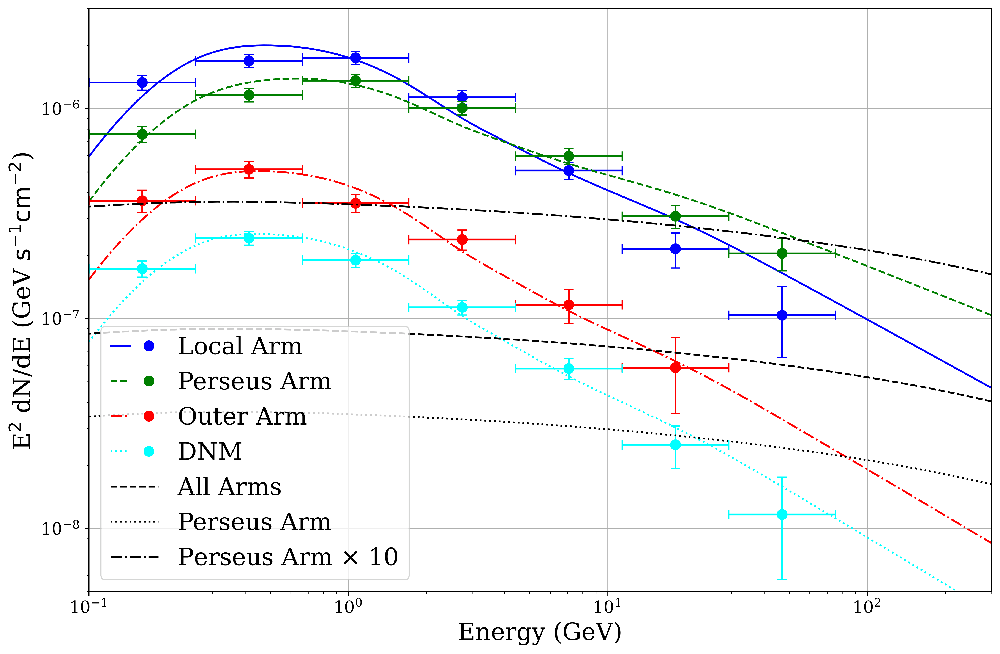 Fig02 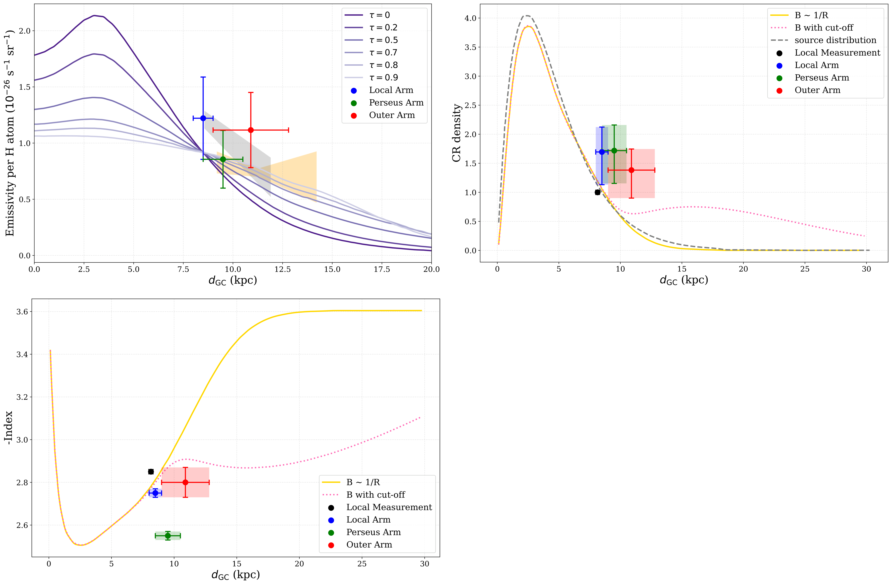关键结果是怎么做出来的
展开背景、理论、公式、模型、章节和图表导读
背景知识
基础理论 / 方法脉络
公式与推导
模型拟合 / 应用方法
重点章节 / 结果段落怎么读
建议重点查看的图表
关键图表逐图导读
论文原图 / 可嵌入图片
图注：The \(\gray\) spectra of different spiral arms. The colored curves represent the \(\gray\) spectra corresponding to the cosmic-ray spectra fitted in Sec. \(\ref{sec:cr_had}.\) The black curves represent the IC contribution to \(\gray\) spectra calculated in Sec. \(\ref{sec:cr_lep}.\)
对应解读：对应“建议重点查看的图表”第3、4项，以及“关键图表逐图导读”中的图3/图4：三条旋臂的γ射线能谱和由宇宙线谱拟合得到的强子模型曲线。
入选理由：这是最直接支撑论文核心结论的图：展示不同旋臂的γ射线谱、强子π0衰变模型曲线以及IC贡献，可用来判断pion-bump是否清楚、三条旋臂谱形是否不同，以及英仙臂硬谱是否由能谱数据支撑。相比单纯计数图或单一气体模板，它直接连接到质子谱指数和宇宙线密度推断。
来源与置信度：\(arxiv_source\)；high；\(arxiv_source\) / arxiv.tex:figure[3]
图注：Integrated \(\gray\) emissivity in different spiral arms and at different $d_{\rm GC}$. The curves are derived from Fig.~1 in the work of \(\citet{evoli2012}.\) Here, the curves from top to bottom correspond to models with increasing values of the diffusion inhomogeneity parameter $\tau=0$, $0.2$, $0.5$, $0.7$, $0.8$, and $0.9$, respectively. The orange and grey shaded regions show observational constraints from \fermi\ data presented by \(\citet{Ackermann_2011}\) and \(\citet{Abdo_2010},\) respectively.
对应解读：对应“建议重点查看的图表”第5项，以及“关键图表逐图导读”中的图5：宇宙线/γ射线发射率随银心距变化，并与传播模型曲线和既有Fermi观测约束比较。
入选理由：该图直接检验本文最重要的物理解释之一：外银河旋臂的发射率或宇宙线密度是否高于传播模型预期。图中包含不同扩散非均匀性参数的模型曲线以及Fermi历史观测阴影区，最适合支撑日报中关于‘外银河宇宙线梯度问题’和模型偏离幅度的解读。
来源与置信度：\(arxiv_source\)；high；\(arxiv_source\) / arxiv.tex:figure[2]
Fig01
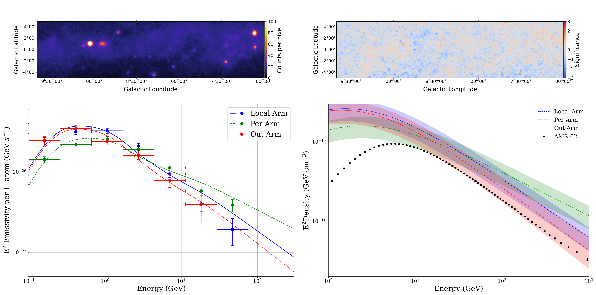
图注：Counts map of \(\grays\) in the 1 - 500$~\rm GeV$ energy range.
对应解读：对应“建议重点查看的图表”第1、2项，以及“关键图表逐图导读”中的图1/图2：ROI内1–500 GeV计数分布，用于检查低纬气体带、点源和ROI边界附近的空间结构。
入选理由：虽然该图只是计数图而非完整的模型/残差三联图，但它能展示分析区域内γ射线信号的空间分布，是理解模板拟合、低纬弥散发射和潜在点源污染的基础诊断图。其科学价值低于能谱和径向比较图，但仍有助于读者判断ROI结构复杂度。
来源与置信度：\(arxiv_source\)；high；\(arxiv_source\) / arxiv.tex:figure[1]
Fig04
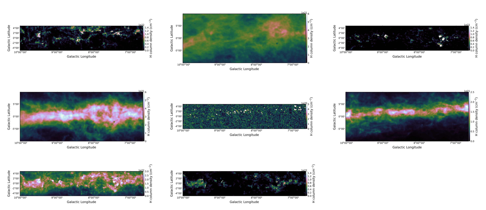
图注：Local arm H$_{2}$
对应解读：对应“建议重点查看的图表”第1项：气体模板/旋臂模板检查，特别是本地臂H2模板的空间形态。
入选理由：该候选图只标注为Local arm H2，信息范围较窄，不能完整比较本地臂、英仙臂和外臂之间的模板可分性；但它仍是真实存在的气体模板图，可用于说明模板构建和气体柱密度分布这一系统误差来源。因只覆盖单一组分，优先级低于能谱、模型比较和计数图。
来源与置信度：\(arxiv_source\)；high；\(arxiv_source\) / arxiv.tex:figure[4]
强相关工作
这篇工作属于 Fermi-LAT 银河弥散 \(\gamma\) 射线和宇宙线梯度问题研究的延续。早期 EGRET 结果曾提出外银河 \(\gamma\) 射线发射率偏高，Fermi-LAT 后续用更好的仪器响应和源目录重新测量了 \(\gamma\) 射线发射率随银心距的变化。与这些工作相比，本文的特点是强调反中心方向的旋臂分解，而不是只做宽气体环的平均。
理论上，它与 GALPROP、DRAGON、PICARD 等传播模型中的源分布、晕高 \(z_h\)、扩散系数 \(D(R,z,\rho)\) 和磁场模型直接相关。若外银河密度偏高成立，可能支持较大的传播晕、径向依赖扩散、较慢衰减的湍动磁场，或外银河局域源贡献。也存在相反解释：气体质量低估、\(X_{\rm CO}\) 径向变化、暗气体和未解析源可能模拟出较高宇宙线密度。建议检索关键词包括 “Fermi LAT gamma-ray emissivity outer Galaxy cosmic-ray gradient”、 “Galactic anticenter cosmic rays spiral arms pion bump”、 “GALPROP cosmic-ray gradient problem”、 “Perseus arm gamma-ray emissivity”。
同一事件 / 同类源线索：
- https://arxiv.org/abs/2609.14955
- https://arxiv.org/pdf/2609.14955
- https://fermi.gsfc.nasa.gov/ssc/data/access/
- https://galprop.stanford.edu/
相似工作：
基础理论 / 方法工作：
相反观点 / 张力线索：
（未提供）
2. First results on the search for the Galactic Center Excess in the sub-GeV band with the emulsion telescope in GRAINE 2023
- 来源：arXiv / astro-ph.HE
- 链接：https://arxiv.org/abs/2609.14551v1
- 作者：Yuya Nakamura, Shigeki Aoki, Takashi Azuma, Hirotaka Hayashi, Yudai Isayama, Atsushi Iyono, Takumi Kato, Tsuyoshi Kawahara
- 评分：novelty 8/10，importance 8/10，relevance 10/10，final 9.70/10
- 推荐理由：GRAINE乳胶伽马射线望远镜对银心GeV以下Galactic Center Excess的首次结果，给出75--300 MeV窄ROI上限并讨论未来灵敏度；直接涉及伽马射线天文、银心过剩、暗物质/毫秒脉冲星判别和新型MeV仪器，相关性极高，值得阅读。
中文题目：GRAINE 2023 乳胶望远镜在亚 GeV 能段搜寻银河中心超额的首批结果
做了什么：这篇文章用 GRAINE 2023 气球飞行的乳胶伽马射线望远镜数据，在银河中心附近半径 \(1^\circ\) 的小视场内搜寻 \(75\text{--}300\,\mathrm{MeV}\) 伽马射线超额，即所谓银河中心超额的低能端。作者没有发现显著超额，给出了该区域银河中心超额能量通量的 \(2\sigma\) 上限 \(1.70\times 10^{-7}\,\mathrm{GeV\,cm^{-2}\,s^{-1}}\)。重要之处不在于已经区分暗物质湮灭和毫秒脉冲星方案，而在于 GRAINE 用乳胶探测器的高角分辨率直接瞄准银河中心窄区域，在 Fermi-LAT 低能段点扩散函数较宽、源混叠严重的地方提供了独立观测路径。
为什么重要：银河中心超额长期处在暗物质解释、毫秒脉冲星解释、弥散背景建模误差之间的拉扯中。多数约束来自 Fermi-LAT 的宽视场模板拟合，而这篇工作尝试用角分辨率更好的乳胶望远镜在亚 GeV 能段做小区域直接测量。\(75\text{--}300\,\mathrm{MeV}\) 不是银河中心超额最亮的 \(\sim\mathrm{GeV}\) 峰值区，却是不同起源模型低能谱形差异更明显的区间，因此即便当前只是上限，也对未来如何破局很有参考价值。
理论 / 观测 / 仪器方法价值：对观测方法的价值是展示 GRAINE 乳胶望远镜可以在低能伽马射线中利用 \(\sim1^\circ\) 或更好的角分辨率研究银河中心这种拥挤区域；对理论的价值是把暗物质湮灭和毫秒脉冲星模型的低能谱预测放到同一观测上限下比较；对仪器规划的价值是用 2023 年实际飞行数据外推未来曝光后可达到的灵敏度，说明这条技术路线在银河中心超额问题上不是概念演示，而可能成为 Fermi-LAT 之外的互补约束。
为什么应该关注：如果你关心银河中心超额，这篇文章提醒我们：决定性证据未必只来自更复杂的模板拟合，也可能来自低能段、更窄区域、更好角分辨率的独立仪器。当前结果还不能排除主流暗物质或毫秒脉冲星解释，但它给出了一个实测的背景、曝光和系统误差基准，可用于判断未来 GRAINE 长时飞行或类似 MeV–GeV 探测器是否真的能切入这个问题。
展开详细解读：文章讲解、背景、理论、重点章节、图表与相关工作
文章详细讲解
科学问题：银河中心超额是 Fermi-LAT 数据中围绕银河中心、能谱在 GeV 左右隆起的一类剩余伽马射线辐射。它可能来自暗物质湮灭，也可能来自未分辨毫秒脉冲星、宇宙线注入、气体分布误差或银河弥散辐射模板不完备。本文选择避开通常讨论最多的 \(\sim2\,\mathrm{GeV}\) 峰值，而看 \(75\text{--}300\,\mathrm{MeV}\)，因为在这个低能区，暗物质连续谱和毫秒脉冲星低能外推的差异可能更明显；同时 Fermi-LAT 在低能段角分辨率变差，银河中心附近源混叠和弥散背景误差更难处理。
作者怎么做：GRAINE 使用核乳胶探测器重建伽马射线转化成的 \(e^+e^-\) 对，从而获得入射方向。乳胶望远镜的卖点是亚 GeV 到 GeV 能段的较好角分辨率，文摘给出的量级是 \(100\,\mathrm{MeV}\) 约 \(1^\circ\)，\(1\,\mathrm{GeV}\) 约 \(0.1^\circ\)。本文用 GRAINE 2023 飞行数据，选取银河中心方向半径 \(1^\circ\) 的 ROI，并在 \(75\text{--}300\,\mathrm{MeV}\) 能段估计该窄区域中是否存在超过预期背景的信号。这里的关键不是大面积天空模板分解，而是小区域直接观测下的计数、曝光、有效面积和背景估计。
关键结果：作者没有看到统计显著的银河中心超额，因此给出了 \(2\sigma\) 置信水平的能量通量上限 \(1.70\times10^{-7}\,\mathrm{GeV\,cm^{-2}\,s^{-1}}\)，对应以银河中心为中心、半径 \(1^\circ\) 的 ROI。这个上限与基于既有 Fermi-LAT 观测、在更大 ROI 中采用 NFW 形态外推到中心区域的银河中心超额通量估计相容。换句话说，GRAINE 2023 还没有足够统计量去挑战主流 GCE 模型，但它并没有出现与 Fermi-LAT 推断明显矛盾的低能窄区结果。
局限和下一步：主要局限是统计量不足，低能伽马射线事例少，且银河中心方向背景复杂。半径 \(1^\circ\) ROI 的优点是减少源混叠，缺点是总信号事例数也会减少，并且任何源形态假设都会影响从模型总通量到小 ROI 通量的换算。本文进一步用当前观测得到的背景与性能基线外推未来 GRAINE 实验灵敏度，显示如果曝光、有效面积和飞行时长提高，低能谱形有可能开始区分暗物质湮灭和毫秒脉冲星方案。下一步需要更长曝光、更严格的仪器响应标定、与 Fermi-LAT 低能数据的联合似然，以及对银河弥散背景模型的系统误差传播。
关键结果是怎么做出来的
本文最核心的结果是半径 \(1^\circ\) 银河中心 ROI 中 \(75\text{--}300\,\mathrm{MeV}\) 能量通量上限。样本选择围绕两个限制展开：一是只使用 GRAINE 2023 飞行中能被可靠重建方向和能量的伽马射线候选事例；二是空间上限制在银河中心附近的窄区域，避免低能伽马射线观测中常见的宽点扩散函数把周边弥散辐射和点源混入中心信号。文摘没有给出最终事件数，读论文时应直接检查事件选择表、有效曝光表和 ROI 内候选事例数。
显著性判断的证据链通常是：先估计 ROI 内观测计数 \(n\)，再根据仪器曝光、背景模型或邻近区域控制样本给出背景期望 \(b\)，最后检验是否需要额外信号 \(s\)。本文结论是没有显著超额，因此统计输出不是最佳拟合信号通量，而是上限。所谓 \(2\sigma\) 上限可理解为在给定背景和仪器响应下，超过该通量的信号会以约 \(95\%\) 的单侧或近似双侧等价置信准则与数据不相容；具体采用的置信区间构造、泊松统计还是高斯近似，需要在方法段核对。
模型比较方面，作者把 GRAINE 上限与已有 Fermi-LAT 推断的 GCE 通量及模型谱进行比较。这里特别要注意比较的不是整个银河中心大范围超额，而是通过空间分布假设，尤其类似 NFW 形态，把大 ROI 结果换算到 \(1^\circ\) 中心 ROI 后的预期通量。这个环节的系统误差可能和统计误差一样重要，因为中心一度内的信号分数对内坡度、掩蔽区域、点源处理和弥散背景模型都敏感。
支撑结论的图表应包括：GRAINE 2023 指向和曝光覆盖图、事件选择后的能量或方向分布、ROI 内观测计数与背景估计比较、通量上限与暗物质及毫秒脉冲星模型谱的叠图、未来 GRAINE 灵敏度外推图。最值得看的是上限点或上限带相对于模型谱的位置：如果上限仍在多数模型预测之上，它只是兼容性检验；如果切入某些模型区间，才构成实质约束。
主要系统误差包括有效面积和能量响应标定、方向重建误差、伽马射线候选事例的背景污染、气球飞行期间姿态和曝光计算、银河中心附近弥散辐射和点源贡献估计。稳健性检验应包括改变 ROI 半径、改变能量阈值或能段、使用不同背景估计方法、改变信号形态假设、以及对仪器响应不确定度做上下浮动后重新计算上限。
展开背景、理论、公式、模型、章节和图表导读
背景知识
银河中心超额通常指在 Fermi-LAT 伽马射线数据中，扣除标准银河弥散辐射、已知点源和各向同性背景后，银河中心附近残留的 GeV 级辐射成分。它的角分布大致集中在银河中心，能谱在 \(\sim\mathrm{GeV}\) 处有隆起，因此很早就被拿来和弱相互作用大质量粒子暗物质湮灭作比较。不过“超额”不是一个直接观测量，而是模型扣除后的剩余量，这一点常被误解。
历史问题在于，不同团队用不同弥散背景模型、点源目录、掩蔽方式和 ROI，会得到相似但不完全一致的超额形态和能谱。暗物质解释要求一个接近球对称、向银河中心集中的空间分布，以及与热遗迹截面量级相近的湮灭截面；毫秒脉冲星解释则强调许多低于探测阈值的源叠加可以形成近似平滑辐射，并且银河核球或盒状核球的恒星分布可能比球对称暗物质模板更合适。
观测背景上，Fermi-LAT 在 GeV 以上有长期、稳定、全天覆盖的优势，但在低能 \(\lesssim300\,\mathrm{MeV}\) 时点扩散函数变宽，银河中心区域又有强弥散辐射、许多点源和复杂气体结构，因此空间分离能力成为瓶颈。GRAINE 的乳胶望远镜路线希望以高角分辨率弥补低能伽马射线观测的传统弱点，尤其适合测试窄 ROI 中是否存在中心集中的低能辐射。
为什么现在值得重新看：一方面，银河中心超额的暗物质解释受到了未分辨点源统计、核球恒星模板和弥散背景系统误差的持续挑战；另一方面，下一代 MeV–GeV 伽马射线任务正在规划，仪器路线是否能真正回答 GCE 问题需要实际飞行数据标定。GRAINE 2023 的结果虽然还是上限，但它提供了从真实气球实验得到的灵敏度基准。
该领域常见误区包括：把 GCE 当成不依赖模型的“新源”；把未探测到超额误读为排除暗物质；把小 ROI 上限直接等同于全银河中心超额总通量；忽略低能段角分辨率、能量响应和弥散背景误差的作用。本文的意义恰恰在于把这些问题压缩到一个小而清楚的观测设置中：给定 GRAINE 响应和中心一度区域，数据允许多亮的低能 GCE。
基础理论 / 方法脉络
基础物理图像是伽马射线从银河中心区域发出，穿过星际空间后到达探测器。若来自暗物质湮灭，光子产生率与暗物质密度平方沿视线积分相关；若来自毫秒脉冲星，则是许多离散源的磁层辐射叠加；若来自宇宙线与气体或辐射场相互作用，则空间分布跟气体、辐射场和宇宙线传播有关。GCE 研究的难点是这些分量在投影天空上高度重叠。
GRAINE 的观测逻辑依赖伽马射线在探测器材料中转化为 \(e^+e^-\) 对。通过核乳胶记录带电粒子的微米级径迹，再由几何重建反推出入射伽马射线方向。低能段的角分辨率受多重库仑散射、转化顶点重建、动量估计和扫描效率影响；能量响应则影响 \(75\text{--}300\,\mathrm{MeV}\) 事件是否被正确分箱。
本文的关键量包括 ROI 半径 \(1^\circ\)、能段 \(75\text{--}300\,\mathrm{MeV}\)、有效面积 \(A_{\rm eff}(E,\theta)\)、曝光 \({\cal E}(E)\)、点扩散函数 \({\rm PSF}(\psi,E)\)、观测计数 \(n\)、背景期望 \(b\)、信号通量 \(\Phi\) 或能量通量 \(F_E\)。上限的本质是把“没有显著多出的计数”翻译成“该区域信号通量不能超过某个值”。
常见退化包括信号归一化与背景归一化退化、信号空间形态与 PSF 退化、低能能量响应与模型谱形退化、以及小 ROI 通量与全局 GCE 模板归一化之间的形态退化。如果暗物质密度内坡度稍变，中心 \(1^\circ\) 内预测通量会明显变化；如果毫秒脉冲星跟随核球恒星分布而非球对称分布，小 ROI 中的预期也会不同。
因此读这类论文不能只看最后一个上限数字，还要看它如何定义 ROI、如何估计曝光、是否把 PSF 泄漏纳入响应、背景来自数据控制区还是模型、以及上限是否包含系统误差。本文的价值在于把 GRAINE 的实测能力放到 GCE 低能谱问题上，但结论强度仍由这些仪器和背景处理细节决定。
公式与推导
第一步从光子通量定义开始。设源在能量 \(E\) 和天区 \(\Omega\) 上的微分光子通量为 \(\mathrm{d}\Phi/\mathrm{d}E\mathrm{d}\Omega\)，则 ROI 中某能段的光子通量为
这里 \(E_1=75\,\mathrm{MeV}\)、\(E_2=300\,\mathrm{MeV}\)，\(\Delta\Omega\) 是半径 \(1^\circ\) 的圆形 ROI。若报告能量通量，则需多乘一个能量权重：
本文给出的上限 \(1.70\times10^{-7}\,\mathrm{GeV\,cm^{-2}\,s^{-1}}\) 属于这种能量通量量纲。
第二步把真实通量变成探测到的计数。对给定有效面积 \(A_{\rm eff}(E,\theta,t)\)、观测时间 \(t\) 和选择效率 \(\epsilon(E)\)，信号期望计数可写为
其中 \(R_{\rm ROI}\) 表示包含 PSF 后真实方向落入或泄漏出分析 ROI 的概率。若定义曝光 \({\cal E}(E)=\int A_{\rm eff}(E,\theta,t)\epsilon(E)\,\mathrm{d}t\)，近似均匀时有
这说明上限本质上由“允许的信号计数”除以曝光得到。
第三步给出暗物质情形的谱和形态。若粒子质量为 \(m_\chi\)、湮灭截面为 \(\langle\sigma v\rangle\)，每次湮灭产生的伽马谱为 \(\mathrm{d}N_\gamma/\mathrm{d}E\)，则
这里 \(J(\psi)\) 是沿视线的密度平方积分：
若采用 NFW 类密度 \(\rho(r)\)，中心 \(1^\circ\) 的预测通量对内坡度和归一化非常敏感，这就是把宽 ROI Fermi-LAT 结果外推到 GRAINE 小 ROI 时的主要形态系统误差。
第四步给出毫秒脉冲星或点源族的统计图像。若源族光度函数为 \(\mathrm{d}N/\mathrm{d}L\)，空间密度为 \(n_{\rm MSP}(\mathbf{r})\)，单源谱为 \(S(E;L)\)，未分辨贡献近似为
其中 \(L_{\rm th}(l)\) 是给定距离 \(l\) 下低于点源探测阈值的最大光度。这个公式说明 MSP 模型不只依赖谱形，也依赖源族空间分布和阈值选择。
第五步是统计检验。ROI 内总期望计数为 \(\mu=s+b\)，其中 \(b\) 是背景期望。若计数服从泊松分布，则似然为
这里 \(n\) 是观测计数，\(\Pi(b)\) 可表示背景先验或约束项。无显著超额时，可用剖面似然比构造上限：
其中 \(\hat{s}\) 和 \(\hat{b}\) 是全局最大似然估计，\(\hat{\hat{b}}\) 是固定 \(s\) 时的背景最优值。
第六步把计数上限换成通量上限。若 \(s_{\rm UL}\) 是 \(2\sigma\) 准则下允许的最大信号计数，并假设能段内参考谱形为 \(f(E)\) 且满足 \(\int E f(E)\,\mathrm{d}E=1\)，则能量通量上限满足
这个关系清楚地显示，上限依赖参考谱形、曝光和能量响应；若谱形换成更软或更硬的模型，同一计数上限对应的能量通量上限会改变。
第七步用于未来灵敏度外推。在背景主导且系统误差可忽略时，最小可探测信号计数近似随背景平方根增长，
其中 \(k\) 是显著性阈值，\(\phi_b\) 是背景强度，\(T\) 是曝光时间。因此通量灵敏度近似为
若进入系统误差主导区，灵敏度不再按 \(T^{-1/2}\) 改善，而会受背景归一化误差和响应误差限制。本文未来 GRAINE 预测应按这一逻辑解读。
模型拟合 / 应用方法
本文或同类分析的拟合对象首先是 ROI 内的计数，而不是一张高统计量的能谱。基本参数包括信号归一化、背景归一化、可能的背景形状参数，以及仪器响应相关的有效面积、PSF 和能量迁移矩阵。由于文摘显示没有显著超额，最佳拟合信号很可能接近零或统计上不稳定，因此结果以通量上限表达更合适。
似然通常采用泊松计数似然；如果能量和方向信息被分箱，则是多个 bin 的乘积；如果事例数较少，也可能采用非分箱似然。背景不确定度可通过高斯或对数正态 nuisance 参数加入，仪器响应误差也可作为 nuisance 参数剖面化或通过重复分析传播。读者应检查上限是否只含统计误差，还是已经包含有效面积、选择效率和背景估计的系统误差。
主要退化关系有三类。第一，信号归一化与背景归一化退化：在窄能段、低计数下，多几个事例既可解释为信号也可解释为背景涨落。第二，空间形态与 PSF 退化：如果 PSF 与 ROI 尺度接近，中心集中的信号和邻近背景泄漏不易分开。第三，谱形与能量响应退化：\(75\text{--}300\,\mathrm{MeV}\) 的能量迁移可能把阈值附近事件移入或移出样本，从而影响不同模型的比较。
残差诊断应看三件事：ROI 内观测计数相对背景的差值是否在泊松涨落范围内；空间分布是否在银河中心方向出现集中残差；能量分布是否在某个子能段有一致偏离。若只有总计数上限而没有能量和空间残差，模型区分能力有限；若未来数据能形成多能段上限或测量点，就可以真正检验暗物质连续谱与 MSP 截断谱的差别。
模型可能失败的地方也很明确。暗物质模板若采用单一 NFW 形态，可能忽略银河棒、核球和实际质量分布；MSP 模型若使用过于简化的光度函数，可能误估未分辨源数；弥散背景模型若没有正确处理低能宇宙线相互作用和气体分布，可能产生伪超额或掩盖真实信号。GRAINE 的实际应用价值在于提供与 Fermi-LAT 不同的响应函数和系统误差结构，使联合分析有机会打破部分退化。
重点章节 / 结果段落怎么读
数据和仪器部分应首先阅读。重点看 GRAINE 2023 飞行的观测时间、银河中心可见时间、姿态重建、乳胶扫描效率、事件选择标准、有效面积和角分辨率验证。这里决定了后面所有通量上限是否可信。
样本和 ROI 定义部分要看能段 \(75\text{--}300\,\mathrm{MeV}\)、中心半径 \(1^\circ\) ROI、事件质量切、背景控制区或背景模型的定义。尤其要检查 PSF 相对于 ROI 的大小，以及作者是否讨论信号从 ROI 外泄漏和背景从 ROI 外漏入的问题。
统计方法部分要读清上限构造。关注观测计数、背景期望、似然函数、置信水平定义、\(2\sigma\) 上限如何由计数转为能量通量，以及系统误差是否进入最终上限。若论文有表格列出事件数和效率，这是复现实验结论的关键。
结果部分要看 GRAINE 上限与 Fermi-LAT 推断 GCE 通量、暗物质模型和毫秒脉冲星模型的比较。读图时不要只看曲线是否穿过上限，还要确认所有曲线是否对应同一 ROI、同一能段积分方式和同一能量通量定义。
讨论和未来灵敏度部分要看作者如何从 2023 年数据外推未来实验。关键是外推假设：有效面积是否增加、飞行时长增加多少、背景是否按曝光线性增长、系统误差是否保持不变。若灵敏度曲线只按统计量缩放，读者应谨慎判断实际可达性。
建议重点查看的图表
-
观测覆盖和曝光图：检查银河中心在 GRAINE 2023 飞行期间的有效曝光是否集中、是否有姿态或边缘效应。
-
角分辨率或 PSF 性能图：看 \(100\,\mathrm{MeV}\) 附近是否确实达到约 \(1^\circ\) 量级，PSF 尾部是否会影响半径 \(1^\circ\) ROI。
-
事件选择流程表：看从原始候选到最终 \(75\text{--}300\,\mathrm{MeV}\) 样本损失多少，背景污染如何估计。
-
ROI 内计数与背景比较图或表：这是“无显著超额”的直接证据，应看观测计数、背景期望和不确定度是否相容。
-
通量上限图：看 \(2\sigma\) 上限相对于 Fermi-LAT GCE 外推值的位置，确认单位是能量通量还是微分通量。
-
模型谱比较图：看暗物质湮灭和毫秒脉冲星在 \(75\text{--}300\,\mathrm{MeV}\) 的分歧是否真的大于当前上限和系统误差。
-
未来灵敏度外推图：看灵敏度是否按 \(T^{-1/2}\) 缩放，是否给出系统误差地板，以及未来曲线能否进入主流模型区域。
关键图表逐图导读
图 1：若论文给出 GRAINE 2023 的观测轨迹、指向或曝光图，横纵轴通常是银河坐标 \((l,b)\) 或时间与指向角。数据颜色代表曝光或接受度。读图重点是银河中心是否位于高曝光区域，以及半径 \(1^\circ\) ROI 是否远离响应快速变化的边缘。陷阱是把几何可见误认为有效曝光；有效曝光还要乘有效面积、选择效率和姿态质量。
图 2：仪器性能或 PSF 图通常以能量为横轴、角分辨率或包含角为纵轴，可能给出模拟和校准数据。主要结论应是 GRAINE 在 \(100\,\mathrm{MeV}\) 量级具有约 \(1^\circ\) 的角分辨能力。读图陷阱是只看中位角分辨率而忽略长尾；对于半径 \(1^\circ\) ROI，PSF 尾部会影响信号接受率和背景泄漏。
图 3：事件选择或候选事件分布图可能展示 \(75\text{--}300\,\mathrm{MeV}\) 事例在天空上的位置，ROI 以圆圈标出。横纵轴应是银河经纬度，点为候选伽马射线事件。关键是中心 ROI 内是否有相对于周围区域的明显聚集。读图陷阱是低计数图的视觉印象很容易误导，必须结合泊松统计和背景估计。
图 4：计数或显著性诊断图应显示观测计数、预期背景和可能的信号上限。若纵轴是计数，误差条应反映泊松或背景不确定度；若纵轴是似然或 \(\Delta\chi^2\)，应看上限对应的阈值。主要结论是没有显著超额。陷阱是把 \(2\sigma\) 上限当作 \(2\sigma\) 探测；二者统计含义相反。
图 5：通量上限与模型谱比较图通常横轴为能量，纵轴为 \(E^2\mathrm{d}\Phi/\mathrm{d}E\) 或能量通量。GRAINE 结果可能以箭头或上限条表示，Fermi-LAT 外推 GCE、暗物质和 MSP 模型以曲线或带状区域表示。读图重点是所有曲线是否已积分到相同 \(1^\circ\) ROI。陷阱是不同论文常用不同 ROI 和模板归一化，直接比较会产生虚假张力。
图 6：未来灵敏度图通常展示当前上限、未来 GRAINE 预期灵敏度和理论模型。横轴为能量或曝光情景，纵轴为通量灵敏度。主要结论是更长曝光后可能切入模型区分所需的低能谱范围。读图陷阱是外推往往默认背景和系统误差可控；若低能背景建模或响应误差有地板，灵敏度不会无限按统计规律改善。
论文原图 / 可嵌入图片
Fig08
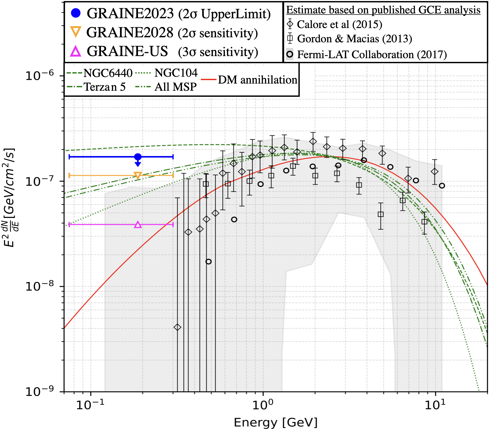
图注：The red solid line shows the spectrum assumed under the dark matter scenario (see the main text for details of the model parameters), while the green line shows the spectrum assumed under the millisecond-pulsar scenario, normalized to the integrated spectrum predicted under the dark matter scenario over 1.5--6 GeV. The green dashed, dotted, dash-dotted, and dash-double-dotted lines show the spectra for NGC 6440, NGC 104, Terzan 5, and the average spectrum of millisecond pulsars observed by Fermi-LAT, respectively. The black plot, error bars, and error band show the spectrum within 1$^\circ$ of the Galactic Center estimated by assuming a spatial distribution based on the results of a GCE analysis using a wide ROI. The open diamonds with error bars, open squares with error bars, and open circles with a gray error band show the results from Calore et al. (2015), Gordon and Macias (2013), and the Fermi-LAT Collaboration (2017), respectively. The blue filled circles with downward arrows show a conservative upper limit of 1.70$\times$10$^{-7}$ GeV cm$^{-2}$ s$^{-1}$ at the 2$\sigma$ confidence level for the 1$^\circ$-radius ROI centered on the Galactic Center, obtained from the GRAINE 2023 flight data. The horizontal error bars indicate the energy range used in the analysis. The open orange downward triangles show the projected sensitivity (2$\sigma$) for the next GRAINE balloon experiment (GRAINE 2028), assuming the same energy range as that used for the GRAINE 2023 analysis. The open magenta triangles show the projected sensitivity (3$\sigma$) for a future GRAINE experiment with an aperture area of 10 m$^2$ and an observation duration of one week.
对应解读：对应“通量上限图”“模型谱比较图”“未来灵敏度外推图”以及关键图表逐图导读中的图5、图6。
入选理由：这是全文最核心的结果图：同时给出GRAINE 2023在75--300 MeV、1度ROI内的2σ通量上限，Fermi-LAT外推的GCE谱，暗物质与毫秒脉冲星情景的模型谱，以及GRAINE 2028和未来10 m^2实验的灵敏度预期。它直接支撑日报中关于“无显著超额、上限与Fermi-LAT相容、当前尚不能区分DM和MSP、未来有潜力切入模型区域”的所有关键结论。
来源与置信度：\(arxiv_source\)；high；\(arxiv_source\) / GRAINE2023_arxiv.tex:figure[8]
Fig04
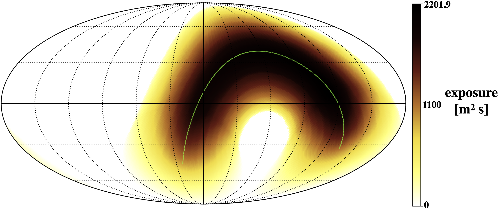
图注：Exposure map (effective area $\times$ observation duration) at 200 MeV. The green line shows the Galactic coordinates of the telescope zenith at each time.
对应解读：对应“观测覆盖和曝光图”以及关键图表逐图导读中的图1。
入选理由：该图是200 MeV处的曝光图，并叠加望远镜天顶方向在银河坐标中的轨迹，正好用于检查银河中心附近是否获得有效曝光、ROI是否处在响应边缘，以及曝光是否受飞行姿态和扫描路径影响。对于窄1度ROI的低统计量上限分析，曝光分布是解释通量上限可靠性的基础。
来源与置信度：\(arxiv_source\)；high；\(arxiv_source\) / GRAINE2023_arxiv.tex:figure[4]
Fig07
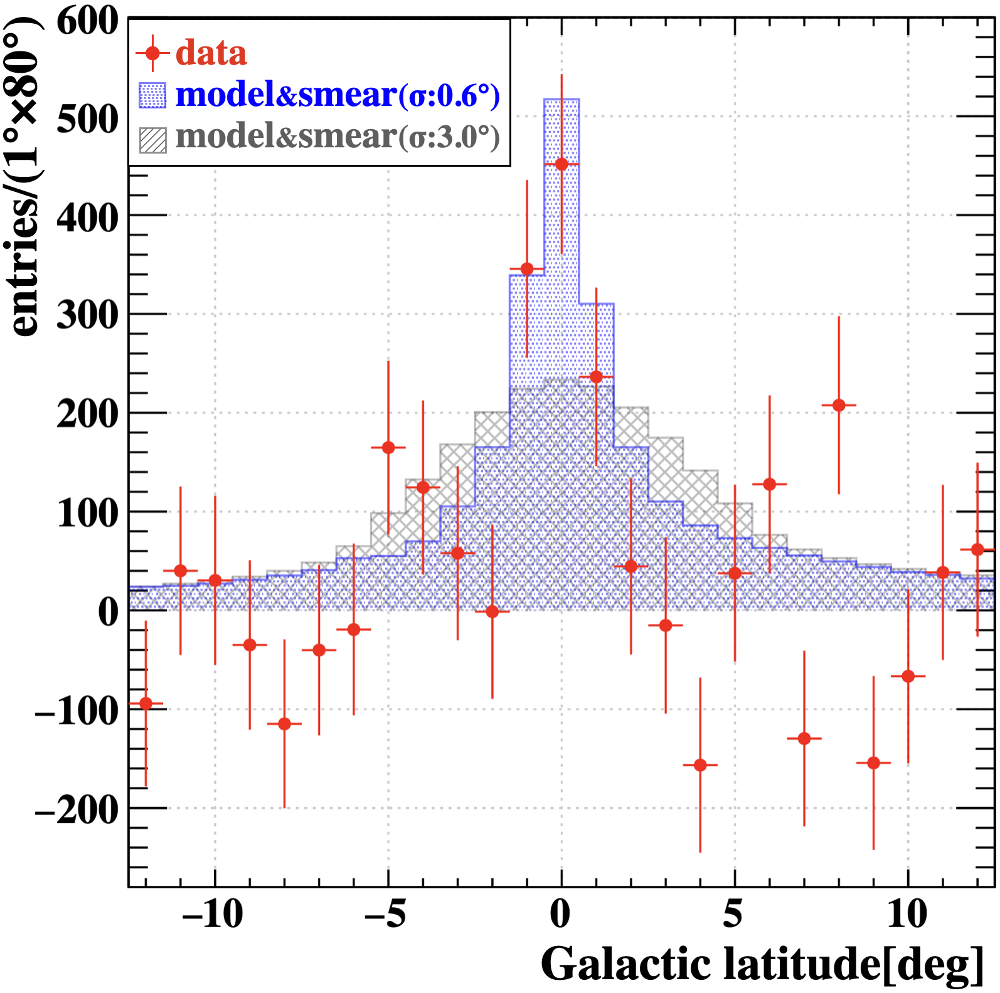
图注：Galactic latitude projection distribution within $\lvert l \rvert <$40$^\circ$ and $\lvert b \rvert <$12.5$^\circ$. The red points show the observed data above 75 MeV. Statistical uncertainties are assigned to the data points, and these uncertainties are dominated by the statistics of the events before BG subtraction. The blue histogram shows the expected distribution calculated from the publicly available Fermi-LAT models for the energy range of 75 MeV--10 GeV and smeared with a Gaussian of $\sigma$=0.6$^\circ$. The gray histogram shows the expected distribution smeared with a Gaussian of $\sigma$=3.0$^\circ$.
对应解读：对应“ROI内计数与背景比较图或表”“残差诊断”和模型拟合段落中关于背景模型、空间分布与PSF退化的讨论。
入选理由：该图比较了GRAINE观测到的银河纬度投影分布与Fermi-LAT模型预期，并展示不同高斯平滑尺度下的模型结果。它虽然不是严格的1度ROI计数图，但直接检验了低能伽马事件在银河中心大区域内的空间分布、背景模型相容性和角分辨率平滑对结果的影响，是理解“无显著超额”和背景系统误差的重要诊断图。
来源与置信度：\(arxiv_source\)；high；\(arxiv_source\) / GRAINE2023_arxiv.tex:figure[7]
Fig06
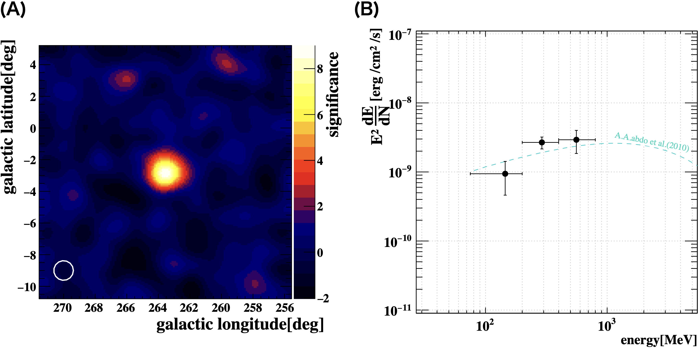
图注：Results of the Vela pulsar analysis. (A) Significance map in Galactic coordinates. The white circle indicates the 68\% containment radius of the signal. (B) Spectral energy distribution (SED). The light-blue dashed line shows the best-fit SED obtained from Fermi-LAT observations \(\cite{fermiVela}.\)
对应解读：对应“角分辨率或PSF性能图”以及仪器响应验证相关段落。
入选理由：Vela脉冲星分析给出银河坐标显著性图、68%信号包含半径和SED，并与Fermi-LAT最佳拟合谱比较，是GRAINE 2023实际数据中验证指向、角响应和能谱重建能力的关键交叉检查。日报强调100 MeV附近约1度角分辨率和PSF尾部对1度ROI的影响，此图比纯硬件示意图更能支撑仪器性能是否可信。
来源与置信度：\(arxiv_source\)；high；\(arxiv_source\) / GRAINE2023_arxiv.tex:figure[6]
Fig03
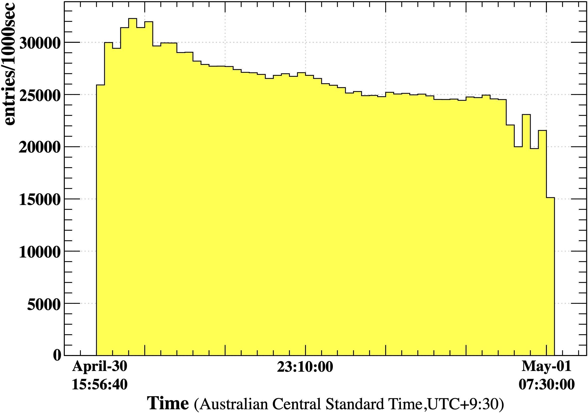
图注：Count rate of selected gamma-ray events.
对应解读：对应“事件选择流程表”“ROI内计数与背景比较图或表”中关于最终伽马候选样本稳定性和背景估计的讨论。
入选理由：该图展示选中伽马射线事件的计数率，可用于检查飞行期间事件率是否稳定、是否存在明显时间相关背景或数据质量异常。它不是最终的GCE上限图，但对低计数分析中的背景稳定性、有效观测时段选择和系统误差判断有辅助价值。
来源与置信度：\(arxiv_source\)；high；\(arxiv_source\) / GRAINE2023_arxiv.tex:figure[3]
Fig05
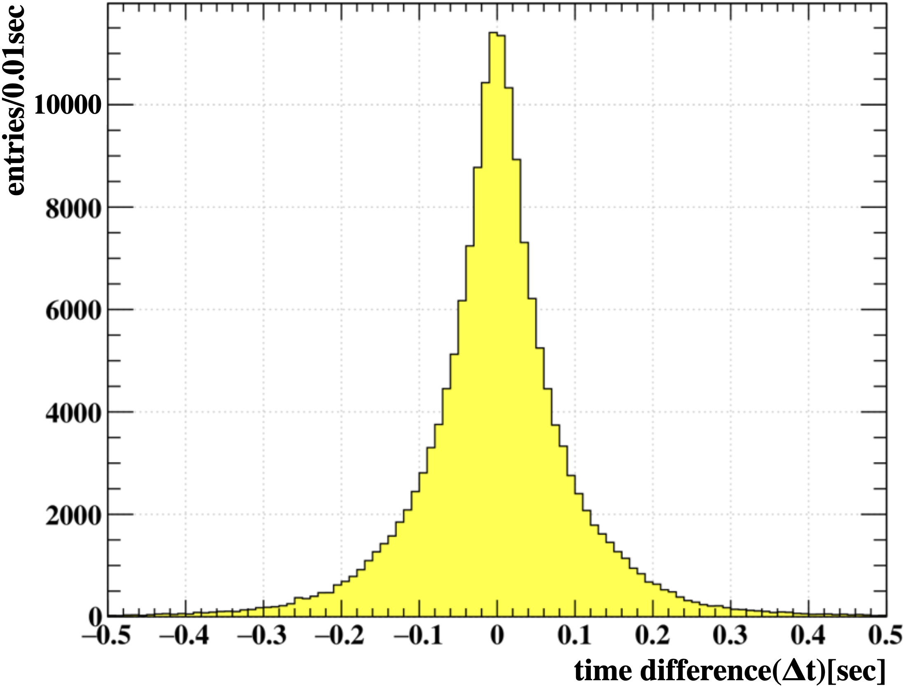
图注：The distribution of the time difference, $\Delta t$, between the timings independently assigned to the two tracks of each electron-positron pair.
对应解读：对应“事件选择流程表”以及模型拟合段落中关于背景污染和选择效率系统误差的讨论。
入选理由：该图展示电子-正电子对两条径迹独立赋时的时间差分布，属于事件重建和背景抑制的技术诊断。虽然它不直接给出GCE计数或通量上限，但能说明伽马候选事件选择的可靠性，对理解样本纯度、选择效率和背景污染来源有一定支撑。
来源与置信度：\(arxiv_source\)；high；\(arxiv_source\) / GRAINE2023_arxiv.tex:figure[5]
强相关工作
同源或同类问题的核心文献是 Fermi-LAT 银河中心超额发现与再分析、暗物质谱形解释、未分辨点源和毫秒脉冲星解释、核球模板解释，以及低能伽马射线仪器路线。可检索关键词包括 “Galactic Center Excess Fermi LAT”, “Goodenough Hooper Galactic Center gamma-ray”, “Calore Cholis Weniger Galactic Center excess”, “non-Poissonian template fitting Galactic Center excess”, “millisecond pulsars Galactic bulge gamma rays”, “GRAINE emulsion gamma-ray telescope”。
与本文最接近的不是另一篇同一事件论文，因为 GCE 是长期弥散剩余而非单次暂现源；它属于同类源/同类现象研究。本文与 Fermi-LAT 宽 ROI 模板拟合形成互补：Fermi-LAT 提供高统计和长时间全天数据，GRAINE 提供独立仪器响应和低能角分辨率优势。潜在张力主要来自 GCE 是否真由平滑暗物质样空间分布组成，还是由未分辨点源、核球恒星族或弥散模型误差造成；因此读者应同时查同类观测、相反观点和综述。
同一事件 / 同类源线索：
相似工作：
- https://arxiv.org/abs/0910.2998
- https://arxiv.org/abs/1409.0042
- https://arxiv.org/abs/1506.05124
- https://arxiv.org/abs/1511.02938
基础理论 / 方法工作：
相反观点 / 张力线索：
3. High-energy spectral cutoffs in the prompt emission of Fermi gamma-ray bursts: bulk Lorentz factors, emission radii, and a cutoff-peak energy relation
- 来源：arXiv / astro-ph.HE
- 链接：https://arxiv.org/abs/2609.14411v1
- 作者：Yuan-Yuan Zuo, Yuan-Chuan Zou
- 评分：novelty 8/10，importance 8/10，relevance 10/10，final 9.70/10
- 推荐理由：High-priority gamma-ray/GRB paper: systematic Fermi GBM/LLE/LAT search for prompt high-energy cutoffs in 139 GRBs, with inferred Lorentz factors, emission radii, and a cutoff–peak-energy correlation. Directly relevant to GeV gamma-ray GRB physics and prompt-emission opacity constraints.
中文题目：费米伽马暴 prompt 辐射中的高能谱截止：体洛伦兹因子、辐射半径与截止能量—峰值能量关系
做了什么：这篇文章系统搜索了 \(2008\) 年至 \(2025\) 年 Fermi 观测到的 \(139\) 个伽马暴 prompt 阶段高能谱截止，样本要求有 LAT 探测或明亮 BGO 信号以保证 MeV 到 GeV 能段覆盖。作者用 GBM、LLE 和 LAT 联合谱，在 \(T_{90}\) 时间积分内比较四类经验谱模型，并用 BIC 选择是否需要高能截止；最终得到 \(106\) 个截止能量约束良好的事件。再用 \(\log_{10}(E_c/{\rm MeV})\) 的双高斯混合模型剔除低截止能量群，把 \(E_c>2.12\,{\rm MeV}\) 的 \(77\) 个暴解释为内部 \(\gamma\gamma\) 对产生不透明度导致的高能截止。结合小波方法测得的最小变时标，作者推得体洛伦兹因子 \(\Gamma\) 约为 \(11.7\) 到 \(2.78\times10^3\)，中位数约 \(145\)，辐射半径约 \(10^{13}\) 到 \(10^{15}\,{\rm cm}\)。最值得注意的是，全文样本中 \(\Gamma\)-\(L_{\rm iso}\) 和 \(\Gamma\)-\(E_{\rm iso}\) 关系并不显著，但有红移的子样本显示中等强度 \(\Gamma\)-\(L_{\rm iso}\) 相关；同时 \(26\) 个有红移暴给出较强的静止系 \(E_{c,z}\)-\(E_{p,z}\) 关系，且在控制红移后仍存在。
为什么重要：GRB 喷流的 \(\Gamma\) 和辐射半径 \(R\) 是 prompt 辐射理论中最关键也最难直接测量的量。高能谱截止如果真由内部 \(\gamma\gamma\to e^+e^-\) 吸收造成，就相当于给喷流透明度提供了一个观测标尺。这篇工作的重要性在于它把过去少数个案的 cutoff 分析扩展到 Fermi 时代的大样本，并把谱截止、最小变时标、红移和峰值能量放在同一统计框架下检验。
理论 / 观测 / 仪器方法价值：对理论而言，本文给出了一组可直接用于检验 prompt 辐射区尺度、紧致性问题、喷流加速和辐射机制的 \(\Gamma\) 与 \(R\) 估计。对观测而言，它展示了如何利用 GBM、LLE、LAT 宽能段联合谱和 BIC 模型比较建立可重复的 cutoff 样本。对方法而言，作者还用混合高斯区分可能的低能假截止和适合 pair-opacity 解释的高能 cutoff，为后续 SVOM、THESEUS、CTA 或未来 MeV 任务提供了样本筛选思路。
为什么应该关注：如果你关心 GRB prompt 辐射到底来自光球、内激波、磁重联还是更复杂的多区结构，这篇文章值得看，因为它把一个通常依赖个案的 \(\gamma\gamma\) 透明度诊断推向了统计样本。它还提醒读者：大样本中经典的 \(\Gamma\)-\(L_{\rm iso}\) 标度未必稳健，而 cutoff 与 \(E_p\) 的相关性可能是更直接的辐射区物理线索。
展开详细解读：文章讲解、背景、理论、重点章节、图表与相关工作
文章详细讲解
科学问题：GRB prompt 谱的高能端是否存在可统计识别的截止？如果存在，这些截止能否被解释为同一区域内高能光子与低能光子发生 \(\gamma\gamma\) 湮灭产生 \(e^+e^-\) 对，从而给出喷流体洛伦兹因子 \(\Gamma\) 和辐射半径 \(R\)？这是 GRB 紧致性问题的现代版本：观测到的快速变时和巨大光度会让源区在非相对论情形下对高能光子极不透明，只有足够大的 \(\Gamma\) 才能让 MeV 到 GeV 光子逃逸。
作者怎么做：文章选取 Fermi 从 \(2008\) 年 \(7\) 月到 \(2025\) 年 \(12\) 月的 \(139\) 个 GRB，要求有 LAT 探测或 BGO 亮发射，以保证高能端有统计杠杆。对每个暴在 \(T_{90}\) 内做 GBM、LLE 和 LAT 联合时间积分谱拟合，比较四种经验模型，并以 Bayesian information criterion 即 BIC 判断加入高能 cutoff 是否值得。这样得到 \(106\) 个 \(E_c\) 约束良好的事件；随后作者不是直接把全部 cutoff 都解释为 pair opacity，而是在 \(\log_{10}(E_c/{\rm MeV})\) 上做双高斯混合，将 \(E_c=2.12\,{\rm MeV}\) 以下的低 cutoff 群与主分布分开，仅把 \(77\) 个高于边界且分类稳健的事件用于内部 \(\gamma\gamma\) 框架。
关键结果：结合小波最小变时标 \(t_v\)，其中中位数约 \(0.119\,{\rm s}\)，作者推得 \(\Gamma\) 范围从 \(11.7\) 到 \(2.78\times10^3\)，中位数 \(145\)，对应辐射半径约 \(10^{13}\) 到 \(10^{15}\,{\rm cm}\)。这组 \(\Gamma\) 比一些 LAT 最高能光子下限法得到的典型值更宽，也包含较低 \(\Gamma\) 的事件，说明 cutoff 解释与最高能逃逸光子下限并不完全等价。统计相关性方面，全样本中 \(\Gamma\)-\(L_{\rm iso}\) 与 \(\Gamma\)-\(E_{\rm iso}\) 不显著；但 \(27\) 个有红移的暴给出中等强度 \(\Gamma\)-\(L_{\rm iso}\) 相关，斜率约 \(0.36_{-0.23}^{+0.22}\)。更引人注意的是，\(26\) 个有红移暴显示 \(E_{c,z}\propto E_{p,z}^{2.15_{-0.97}^{+0.96}}\)，且控制红移后仍存在，提示 cutoff 能量可能与谱峰能量受共同物理条件控制。
局限和下一步：本文的核心物理解释依赖几个强假设：cutoff 是内禀 \(\gamma\gamma\) 吸收而非电子分布最大能量、辐射机制曲率、光球热化、探测器响应或多谱段拼接造成；时间积分谱的 cutoff 能代表同一辐射区的瞬时透明度；小波 \(t_v\) 与产生 cutoff 的区域尺度相联系。低 \(E_c\) 群的分离是谨慎处理，但也说明样本中可能混有不同物理起源。下一步最有价值的是做时间分辨 cutoff、把光球或同步辐射最大能量模型纳入竞争模型比较、用注入恢复检验 cutoff 选择函数，并将相同方法应用于未来更高灵敏度 MeV—GeV 联合观测。
关键结果是怎么做出来的
样本选择是这篇文章证据链的第一环。作者从 Fermi 长期数据库中挑选 \(139\) 个 prompt 阶段具备宽能段约束的 GRB：一类有 LAT 高能探测，另一类虽未必有强 LAT 信号但 BGO 发射足够亮，能约束 MeV 高能端。这样的选择不是全 GRB 代表样本，而是为了最大化发现高能 cutoff 的能力；因此后文所有分布和相关性都应理解为“宽能段亮暴样本”的性质，而不是宇宙 GRB 总体的无偏分布。
谱分析环节中，作者在 \(T_{90}\) 时间窗内联合 GBM、LLE 和 LAT 数据，拟合四种经验谱形，并用 BIC 做模型比较。BIC 的作用是惩罚额外参数：如果加入 cutoff 后似然改善不足，就不会被认定为真实 cutoff。最终 \(106\) 个暴有良好约束的 \(E_c\)。读者应重点检查各模型的 BIC 差值分布、\(E_c\) 误差条、参数是否贴近能段边界，以及 cutoff 与高能端探测有效面积下降之间是否可能混淆。
关键的样本清洗来自 \(\log_{10}(E_c/{\rm MeV})\) 的双高斯混合模型。作者发现 cutoff 分布可分为低 \(E_c\) 群和主分布，并以 \(E_c=2.12\,{\rm MeV}\) 作为分界。低 \(E_c\) 群没有被直接纳入 pair-opacity 推断，因为 MeV 附近的折断更容易与 Band 谱曲率、光球成分、BGO 响应或经验模型错配混淆。最后用于 \(\Gamma\) 与 \(R\) 推断的是 \(77\) 个高于该边界且分类稳健的事件。
\(\Gamma\) 推断把两个观测量连起来：谱截止 \(E_c\) 给出 \(\gamma\gamma\) 光深 \(\tau_{\gamma\gamma}\sim1\) 的条件，最小变时标 \(t_v\) 给出辐射区尺度 \(R\sim2\Gamma^2ct_v/(1+z)\) 的约束。作者采用小波方法估计 \(t_v\)，中位值 \(0.119\,{\rm s}\)。最终 \(\Gamma\) 范围很宽，中位数 \(145\)，辐射半径集中在 \(10^{13}\) 到 \(10^{15}\,{\rm cm}\)。读者应注意：无红移暴需要对距离或静止系量做处理，且 \(t_v\) 的统计定义会直接影响 \(R\) 和 \(\Gamma\)。
相关性检验是本文最重要但也最容易误读的结果之一。全样本中 \(\Gamma\)-\(L_{\rm iso}\) 和 \(\Gamma\)-\(E_{\rm iso}\) 不显著，这削弱了某些把 \(\Gamma\) 与爆发能量简单绑定的经验图像。只有 \(27\) 个有红移暴显示中等 \(\Gamma\)-\(L_{\rm iso}\) 相关，斜率 \(0.36_{-0.23}^{+0.22}\)，不应过度外推。更强的结果是 \(26\) 个有红移暴的 \(E_{c,z}\)-\(E_{p,z}\) 相关，指数 \(2.15_{-0.97}^{+0.96}\)，并且在控制红移后仍存在；支撑它的关键图应是静止系 cutoff—peak 能量散点图、拟合置信带、偏相关或红移控制检验。
系统误差主要来自四处：一是时间积分谱把演化中的多个谱态混合，可能制造表观 cutoff；二是不同探测器交叉定标和背景模型会影响高能端；三是经验谱模型之间的曲率差异可能改变 \(E_c\)；四是 \(\gamma\gamma\) 计算通常假定单区、各向同性共动辐射场，而真实喷流可能多区、角向结构化或磁主导。稳健性上，读者应看作者是否对 cutoff 分界、BIC 阈值、红移子样本、\(t_v\) 方法和异常点剔除做了重复检验。
展开背景、理论、公式、模型、章节和图表导读
背景知识
GRB prompt 辐射是宇宙中最极端的瞬变电磁现象之一，通常在毫秒到数百秒内释放巨大的伽马射线能量。观测谱常用 Band 函数或 cutoff power law 描述，峰值能量 \(E_p\) 多位于数十 keV 到数 MeV。高能端，特别是 MeV—GeV 区间，包含关于喷流速度、源区大小、辐射机制和粒子加速上限的信息。
历史上，GRB 的“紧致性问题”是相对论火球模型的核心动机之一。若源区尺度由快速变时 \(t_v\) 限定，而光度又极高，源区内高能光子会与低能光子发生 \(\gamma\gamma\to e^+e^-\)，导致光深极大。观测到非热 MeV 光子甚至 GeV 光子，说明辐射区必须以很大的 \(\Gamma\) 指向我们运动，从而降低共动光子能量、稀释光子密度并缩短相互作用角度。
Fermi 以前，高能 cutoff 的统计研究受限于能段覆盖和计数。CGRO/BATSE 给出了大量 keV—MeV prompt 谱，但对 GeV 端无能为力；EGRET 个案有限。Fermi/GBM 覆盖 keV 到几十 MeV，LAT 覆盖更高能段，LLE 数据又填补几十 MeV 左右的过渡区，因此系统寻找高能截止变得可行。本文正是利用这一跨仪器能段优势，把原来“少数著名 LAT 暴”的问题扩展为大样本。
为什么现在值得重新看？一方面 Fermi 累积时间已足够长，样本量和高能亮暴数量显著增加；另一方面 prompt 辐射理论的分歧仍大，包括同步辐射、光球辐射、磁重联、多区逆康普顿等。不同模型对高能端形状、cutoff 起源和 \(E_c\) 与 \(E_p\) 的关系有不同预期，大样本 cutoff 统计能提供比个案更强的约束。
该领域常见误区之一是把任何高能谱变陡都直接等同于 \(\gamma\gamma\) 吸收。实际上，电子最大能量、同步辐射 burnoff、光球谱曲率、时间积分造成的谱混合、背景扣除误差和探测器响应边界都可能产生类似 cutoff。另一个误区是把由最高能光子逃逸得到的 \(\Gamma\) 下限与由谱截止得到的 \(\Gamma\) 估计混为一谈：前者通常是“不透明度不能太大”的下限，后者假设 cutoff 本身对应 \(\tau_{\gamma\gamma}\sim1\)，物理含义更强也更依赖模型。
基础理论 / 方法脉络
最基本的物理图像是：一个相对论喷流在半径 \(R\) 处产生 prompt 光子，观测者看到持续时间和快速起伏。高能光子若在源区遇到足够多的靶光子，并满足质心能量超过电子对产生阈值，就会被吸收。因为喷流以 \(\Gamma\) 运动，共动系中的光子能量和角分布都与观测系不同，\(\Gamma\) 越大，内部 \(\gamma\gamma\) 光深越小。
pair-opacity 方法的关键量包括 cutoff 能量 \(E_c\)、谱峰能量 \(E_p\)、各向同性等效光度 \(L_{\rm iso}\)、各向同性等效能量 \(E_{\rm iso}\)、最小变时标 \(t_v\)、红移 \(z\) 和高能谱指数。若 cutoff 是内部吸收产生，通常可用 \(\tau_{\gamma\gamma}(E_c)\approx1\) 解出 \(\Gamma\)。随后用曲率时间或变时尺度关系估算辐射半径 \(R\)。
本文的观测方法并不依赖单一探测器。GBM 的 NaI 与 BGO 约束 keV—MeV 主谱，LLE 提供 LAT 低能事件对几十 MeV 区间的响应，LAT 标准事件约束更高能光子。联合拟合必须同时处理不同仪器的背景、响应矩阵、有效面积和交叉归一化。因为 cutoff 通常出现在计数快速下降的能段，模型比较比单看残差更重要。
经验谱模型的退化是一个核心问题。Band 谱本身有高能指数，cutoff power law 有指数滚降，Band 加 cutoff 或 broken power law 加 cutoff 可以在有限能段内互相拟合出类似曲率。若 \(E_c\) 接近 \(E_p\)，它可能只是主谱峰曲率的一部分，而非真正高能吸收。因此作者用混合模型把低 \(E_c\) 群分离出来，是为了降低把普通谱曲率误判为 pair-opacity cutoff 的风险。
系统误差还来自时间积分。GRB prompt 谱常随时间硬到软演化，把多个瞬时谱相加会让时间积分谱出现额外曲率或表观 cutoff。小波最小变时标也不是唯一选择，不同去噪和阈值定义会改变 \(t_v\)。在 \(R\sim2\Gamma^2ct_v/(1+z)\) 的关系中，\(t_v\) 与 \(\Gamma\) 的误差会被放大，因此 \(R\) 的物理解释应比 \(E_c\) 的测量更谨慎。
公式与推导
第一步是对产生阈值。两个能量分别为 \(E_1\) 与 \(E_2\) 的光子夹角为 \(\theta\)，若在同一惯性系中满足
就能发生 \(\gamma\gamma\to e^+e^-\)。这里 \(m_e\) 是电子质量，\(c\) 是光速。该式说明高能光子主要被能量合适、传播方向不完全平行的靶光子吸收。
第二步把观测能量变到喷流共动系。若源红移为 \(z\)、喷流多普勒因子近似为 \(\delta\simeq\Gamma\)，观测光子能量 \(E\) 对应共动能量
因此较大的 \(\Gamma\) 会把共动系中光子能量降下来，使同一观测能量的光子更不容易超过对产生阈值。
第三步用变时标估计半径。若观测到最小变时标 \(t_v\)，单区相对论壳层的曲率时间给出
这里 \(R\) 是辐射半径。这个关系假定变时由同一区域的光行时控制；若变时来自中心发动机调制或湍流小尺度结构，\(R\) 的解释会改变。
第四步估计共动光子数密度。若各向同性等效光度为 \(L_{\rm iso}\)，平均靶光子能量为 \(\langle E\rangle\)，则数量级上
这里 \(n'_{\gamma}\) 是共动光子数密度。实际计算会使用观测谱形积分，而不是单一平均能量；但这个式子揭示了 \(L_{\rm iso}\) 增大会提高光深，\(R\) 和 \(\Gamma\) 增大会降低光深。
第五步写出光深近似。高能光子穿过共动宽度 \(R/\Gamma\) 时，\(\gamma\gamma\) 光深可写为
其中 \(E'_{\rm th}\) 是与共动高能光子配对的靶光子阈值，\(\sigma_{\gamma\gamma}\) 是对产生截面，量级低于 Thomson 截面 \(\sigma_T\)。cutoff 解释的核心条件是令 \(\tau_{\gamma\gamma}(E_c)\approx1\)。
第六步给出常用标度。若高能靶光子谱可近似为幂律，\(N(E)\propto E^{-s}\)，则由 \(\tau_{\gamma\gamma}(E_c)=1\) 得到的 \(\Gamma\) 常呈现类似
的弱幂律依赖。这里 \(s\) 是相关能段的光子谱指数，\(\kappa\) 汇总红移进入能量与时间变换的指数。重要的是，\(\Gamma\) 对 \(L_{\rm iso}\) 和 \(t_v\) 的依赖通常是弱幂律，但对谱指数和 cutoff 识别很敏感。
第七步是静止系能量换算。观测到的谱峰和 cutoff 转为源静止系为
本文报告的强相关就是在这些静止系量之间建立的，即 \(E_{c,z}\) 随 \(E_{p,z}\) 增大而系统升高。
第八步写出经验相关拟合。对数空间中可拟合
其中 \(a\) 是归一化，\(b\) 是斜率，\(\epsilon\) 包含测量误差和内禀散布。本文给出的 \(b\approx2.15\) 说明 cutoff 能量对峰值能量变化较陡，但误差较大，仍需更大红移样本检验。
第九步是模型选择统计量。BIC 可写为
其中 \(k\) 为模型自由参数数，\(n\) 为有效数据点数，\(\hat{\mathcal L}\) 为最大似然。若加入 cutoff 后 \({\rm BIC}\) 明显降低，说明似然改善足以抵消额外参数惩罚。这个量连接了谱拟合证据与 cutoff 样本构建。
第十步是偏相关或红移控制的思想。若要检验 \(X=\log E_{c,z}\) 与 \(Y=\log E_{p,z}\) 的相关是否只是共同依赖 \(Z=\log(1+z)\)，可考察
这里 \(r\) 是相关系数。若 \(r_{XY\cdot Z}\) 仍显著，说明相关不容易完全归因于红移选择效应。
模型拟合 / 应用方法
本文的第一层拟合是联合谱拟合。拟合量包括各经验模型的归一化、低能和高能谱指数、谱峰或折断能量，以及可能的 cutoff 能量 \(E_c\)。数据来自 GBM、LLE 和 LAT，不同仪器有各自响应矩阵和背景。实际似然通常采用适合 Poisson 计数和背景不确定性的统计量，而不是简单最小二乘；模型优劣再通过 BIC 比较。
第二层是 cutoff 样本的统计分类。作者对 (
\log_{10}(E_c/{\rm MeV})) 使用双高斯混合模型，得到低 \(E_c\) 群与主分布，并在 \(E_c=2.12\,{\rm MeV}\) 处分界。这一步本质上是在参数空间做 population-level filtering：它不证明低 \(E_c\) 群一定不是 \(\gamma\gamma\) 吸收，但承认其物理解释更不唯一。读者应关注混合模型的成员概率、分界对后续 \(\Gamma\) 分布的影响，以及是否存在中间过渡事件。
第三层是物理参数反演。给定 \(E_c\)、谱形、\(t_v\)、红移或距离假设，作者在内部 pair-opacity 框架下解 \(\tau_{\gamma\gamma}(E_c)=1\) 得到 \(\Gamma\)，再由 \(R\simeq2\Gamma^2ct_v/(1+z)\) 得到辐射半径。这里的参数退化很明显：较大的 \(L_{\rm iso}\) 或较小的 \(t_v\) 往往要求更大的 \(\Gamma\)；高能谱指数改变靶光子数量，也会改变 \(\Gamma\)。无红移事件还会引入距离和静止系能量的不确定性。
第四层是相关性拟合。作者检验 \(\Gamma\)-\(L_{\rm iso}\)、\(\Gamma\)-\(E_{\rm iso}\) 和 \(E_{c,z}\)-\(E_{p,z}\) 等关系。对数空间线性回归需要同时考虑横纵轴测量误差、内禀散布和选择效应。红移子样本只有 \(26\) 到 \(27\) 个事件，相关斜率的不确定性较大，因此显著性不应只看最佳拟合线，还要看置信带、偏相关检验、bootstrap 或异常点剔除后的稳定性。
模型可能失败的地方包括：真实 cutoff 并非吸收而是发射谱本身滚降；辐射区不是单区而是多区叠加；共动辐射场非各向同性；最高能光子来自外激波或延迟成分而非 prompt 内区；\(T_{90}\) 时间积分谱混合了多个瞬时 \(E_p\) 和 \(E_c\)。实际应用中，若要把本文 \(\Gamma\) 样本用于喷流能量学或族群合成，最好把这些系统误差作为层级模型中的额外散布项，而不要直接使用点估计。
重点章节 / 结果段落怎么读
数据和样本部分应先读。重点看 \(139\) 个 GRB 的入选标准：LAT 探测和 BGO 亮发射分别代表不同选择函数。需要确认样本是否偏向高亮度、硬谱、长暴，短暴占比如何，以及哪些事件有可靠红移。这个部分决定后续所有 population 结论能否外推。
谱拟合和模型比较部分是方法核心。读者应关注四种经验模型的具体形式、能段选择、背景处理、仪器交叉归一化、LLE 与 LAT 数据如何接入，以及 BIC 阈值如何定义。特别要看 cutoff 能量是否落在仪器最敏感能段内，而不是被能段边缘或低计数尾部驱动。
cutoff 分布与混合模型部分决定物理样本。这里要看 \(\log_{10}(E_c/{\rm MeV})\) 的直方图或核密度、双高斯拟合、\(E_c=2.12\,{\rm MeV}\) 分界的统计依据，以及 \(77\) 个高 \(E_c\) 事件的成员概率。这个选择直接影响 \(\Gamma\) 分布和相关性。
pair-opacity 反演部分应与附录或方法公式一起读。重点检查 \(\tau_{\gamma\gamma}\) 的计算采用了哪种谱积分、是否使用红移、如何处理无红移暴、\(t_v\) 的小波定义是什么，以及 \(R\) 的表达式是否假定单区壳层。这里是从经验 cutoff 到物理 \(\Gamma\) 的关键跳跃。
相关性和讨论部分应最后读。全样本无显著 \(\Gamma\)-\(L_{\rm iso}\) 与 \(\Gamma\)-\(E_{\rm iso}\) 关系，而红移子样本有中等 \(\Gamma\)-\(L_{\rm iso}\) 关系；\(E_{c,z}\)-\(E_{p,z}\) 关系更强。读者应看作者如何控制红移、如何处理异常点、是否报告内禀散布，以及是否讨论与同步辐射、光球和磁重联模型的区分。
建议重点查看的图表
-
样本能段覆盖和事件分布图：看 \(139\) 个 GRB 中 LAT 检测与 BGO 亮暴的比例、红移子样本位置，以及样本是否明显偏向高流量或硬谱事件。
-
典型联合谱拟合图：检查 GBM、LLE、LAT 数据点在 \(\nu F_\nu\) 或计数空间中的衔接，高能端 cutoff 是否由多个能段共同支持，残差是否在 cutoff 前后系统改善。
-
BIC 模型比较图或表：看加入 cutoff 的模型相对无 cutoff 模型的 \(\Delta {\rm BIC}\)，以及 \(106\) 个 cutoff 约束事件的判据是否统一。
-
\(E_c\) 分布和双高斯混合图：重点看低 \(E_c\) 群与主分布是否真的分离，\(E_c=2.12\,{\rm MeV}\) 边界附近事件的成员概率是否模糊。
-
\(t_v\)、\(\Gamma\) 和 \(R\) 分布图：看中位数、长尾、高 \(\Gamma\) 和低 \(\Gamma\) 事件是否由少数极端 \(E_c\) 或 \(t_v\) 驱动。
-
\(\Gamma\)-\(L_{\rm iso}\) 与 \(\Gamma\)-\(E_{\rm iso}\) 散点图：看全样本与红移子样本是否分开标出，拟合线和置信带是否显示相关性很弱或样本依赖。
-
\(E_{c,z}\)-\(E_{p,z}\) 关系图：这是最关键图之一，应看坐标是否为对数、误差条是否包含双轴不确定性、红移颜色编码是否显示共同距离效应、异常点是否主导斜率。
关键图表逐图导读
图 1：若论文给出样本选择或能段覆盖图，横轴通常可能是时间、触发编号、流量、\(T_{90}\) 或最高有效能量，纵轴可能是事件数或能段覆盖。读图时要确认 LAT 检测暴与 BGO 亮暴是否有不同颜色或符号。主要结论应是样本具备搜索高能 cutoff 的宽能段能力；陷阱是不要把该图理解为 Fermi GRB 总体的无偏统计。
图 2：典型 prompt 联合谱图通常以能量为横轴、\(\nu F_\nu\) 或 unfolded photon flux 为纵轴，并叠加不同经验模型曲线。GBM、LLE、LAT 数据点若在高能端共同偏离无 cutoff 模型，就支持真实 cutoff。读图陷阱是 unfolded 谱点依赖模型，最好同时查看计数空间残差或各探测器 residual。
图 3：BIC 或模型比较图的横轴可能是事件，纵轴为 \(\Delta {\rm BIC}\) 或不同模型 BIC。若 cutoff 模型显著降低 BIC，说明额外 cutoff 参数有统计必要。陷阱是 BIC 对有效数据点数和系统误差敏感，\(\Delta {\rm BIC}\) 边界附近的事件不应被过度解释。
图 4：\(E_c\) 分布与双高斯混合图应以 \(\log_{10}(E_c/{\rm MeV})\) 为横轴、概率密度或事件数为纵轴。两条高斯成分和总模型线若在 \(E_c=2.12\,{\rm MeV}\) 附近交叉，说明作者为何将低 \(E_c\) 群排除出 pair-opacity 主样本。陷阱是混合模型只是统计分类，不等同于物理机制的直接证明。
图 5：\(\Gamma\) 与 \(R\) 分布图可能是直方图、核密度或 \(R\)-\(\Gamma\) 散点。坐标常用对数。应看 \(\Gamma\) 中位数 \(145\) 是否代表主体，还是分布有很长高端尾；也要看 \(R\sim10^{13}\) 到 \(10^{15}\,{\rm cm}\) 是否与内激波、磁重联或光球半径预期相容。陷阱是 \(R\) 与 \(\Gamma\) 通过 \(R\propto\Gamma^2t_v\) 强耦合，散点相关可能部分是公式造成。
图 6：\(\Gamma\)-\(L_{\rm iso}\) 和 \(\Gamma\)-\(E_{\rm iso}\) 图应使用对数坐标，区分全样本和红移子样本。若全样本无显著相关而红移子样本有拟合线，说明结论受距离信息和样本选择影响。陷阱是只看红移子样本拟合线会高估普适性。
图 7：\(E_{c,z}\)-\(E_{p,z}\) 图是本文最应细看的结果图。横轴为 \(E_{p,z}\)，纵轴为 \(E_{c,z}\)，通常均为对数坐标；数据点应有误差条，模型线给出 \(E_{c,z}\propto E_{p,z}^{2.15}\) 及置信区间。若点按红移着色，需检查是否沿颜色梯度排列；若控制红移后仍相关，则支持其不只是共同乘以 \((1+z)\) 的假象。
论文原图 / 可嵌入图片
Fig06
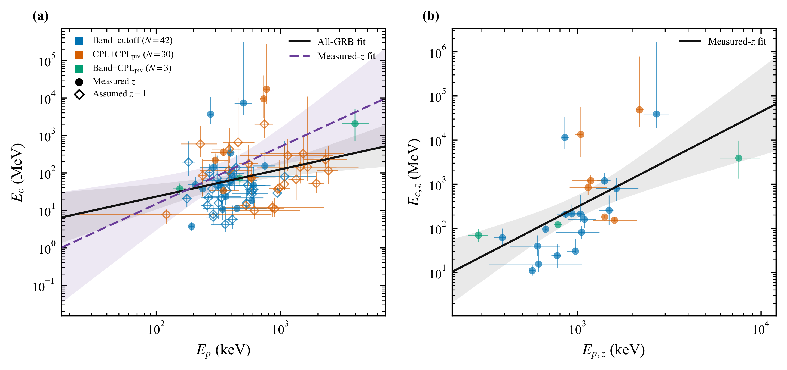
图注：Relation between the cutoff energy and the spectral peak energy. Panel (a) shows the observer-frame $E_c$--$E_p$ distribution for 75 GRBs. Colors identify the spectral models, while filled and open symbols distinguish measured and assumed redshifts, respectively. The black solid line shows the posterior-median regression for all 75 GRBs, and the purple dashed line shows the fit for the 26 GRBs with measured redshifts, with Spearman coefficients of $\rho=0.25$ ($p=0.031$) and $\rho=0.38$ ($p=0.055$), respectively. Panel (b) shows the rest-frame $E_{c,z}$--$E_{p,z}$ distribution and regression for the 26 GRBs with measured redshifts, with a slope of $2.15_{-0.97}^{+0.96}$ and a Spearman coefficient of $\rho=0.72$ ($p=8\times10^{-5}$). The shaded regions denote the 90\% credible intervals of the regression relations.
对应解读：建议重点查看的图表第7项；关键图表逐图导读图7；相关性拟合段落中的 \(E_{c,z}-E_{p,z}\) 关系。
入选理由：这是本文最关键的经验相关图，直接展示观测系 \(E_c-E_p\) 和静止系 \(E_{c,z}-E_{p,z}\)，包含红移实测/假设样本区分、回归线、90%可信区间、Spearman 显著性以及斜率 2.15_{-0.97}^{+0.96}，最能支撑日报中关于 cutoff 能量与谱峰能量强相关的解读。
来源与置信度：\(arxiv_source\)；high；\(arxiv_source\) / jcapexample.tex:figure[6]
Fig05
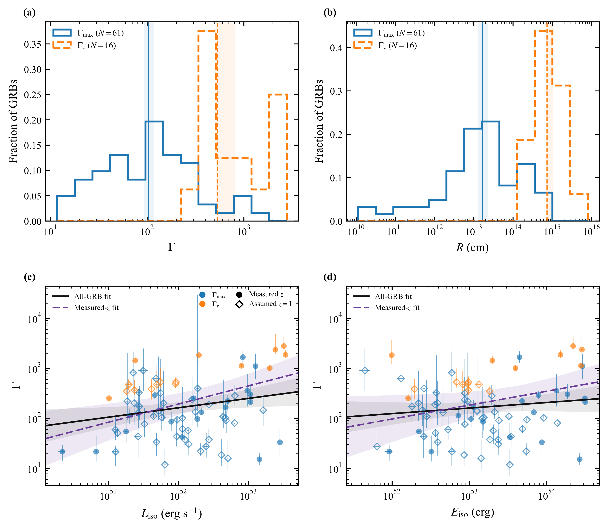
图注：Outflow and energetics results. Panels (a) and (b) show the $\Gamma$ and $R$ distributions, normalized separately for the $\Gamma_{\max}$-limited and $\Gamma_\tau$-limited subsets. The vertical lines mark the sample medians of the individual estimates. Panels (c) and (d) show the $\Gamma$--$L_{\rm iso}$ and $\Gamma$--$E_{\rm iso}$ relations, respectively. The black solid lines show the posterior-median regressions for all 77 GRBs, whereas the purple dashed lines show the corresponding fits for the 27 GRBs with measured redshifts. The shaded regions show the 90\% credible intervals for the regression relations. The Spearman coefficients are $\rho=0.13$ ($p=0.28$) and $\rho=0.07$ ($p=0.57$) for the full-sample $\Gamma$--$L_{\rm iso}$ and $\Gamma$--$E_{\rm iso}$ relations, respectively, and $\rho=0.47$ ($p=0.015$) and $\rho=0.35$ ($p=0.072$) for the corresponding relations in the measured-redshift subsample. Colors and symbols are defined as in figure~\(\ref{fig:gamma-time}.\)
对应解读：建议重点查看的图表第5、6项；关键图表逐图导读图5和图6；物理参数反演与相关性拟合段落。
入选理由：同一图同时给出 Gamma 与 R 的分布，以及 Gamma-\(L_iso\)、Gamma-\(E_iso\) 关系；包含全样本和红移子样本回归线、90%可信区间与 Spearman 系数，能直接检验日报强调的 Gamma 中位数、辐射半径范围、全样本相关性弱和红移子样本依赖性。
来源与置信度：\(arxiv_source\)；high；\(arxiv_source\) / jcapexample.tex:figure[5]
Fig08
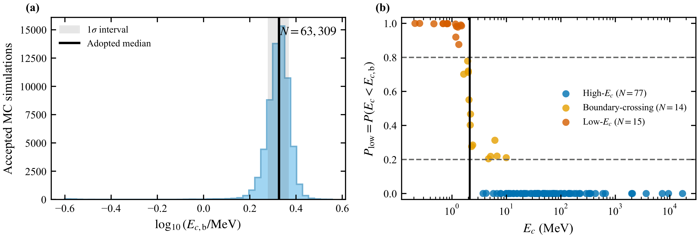
图注：Monte Carlo classification of the cutoff-energy distribution. Panel (a) shows the distribution of the 63,309 retained intersections between the lower- and higher-mean Gaussian components. The black line marks the adopted median boundary, and the gray interval denotes its $1\sigma$ uncertainty. Panel (b) shows the low-$E_c$ probability $P_{\rm low}$ versus the best-fit $E_c$ for the 106 GRBs. The dashed horizontal lines mark the probability thresholds separating the high-$E_c$, boundary-crossing, and low-$E_c$ groups, and the vertical black line marks the adopted cutoff-energy boundary at $E_c=2.120~{\rm MeV}$.
对应解读：建议重点查看的图表第4项；关键图表逐图导读图4；双高斯混合分类与 population-level filtering 段落。
入选理由：该图不仅显示 Monte Carlo 得到的 \(E_c\) 分界分布，还给出 106 个 GRB 的低 \(E_c\) 成员概率 \(P_low\) 与 \(E_c\) 的关系，直接对应日报中要求检查 2.12 MeV 边界附近成员概率是否模糊的问题，比单纯分布图更能支撑分类稳健性讨论。
来源与置信度：\(arxiv_source\)；high；\(arxiv_source\) / jcapexample.tex:figure[8]
Fig03
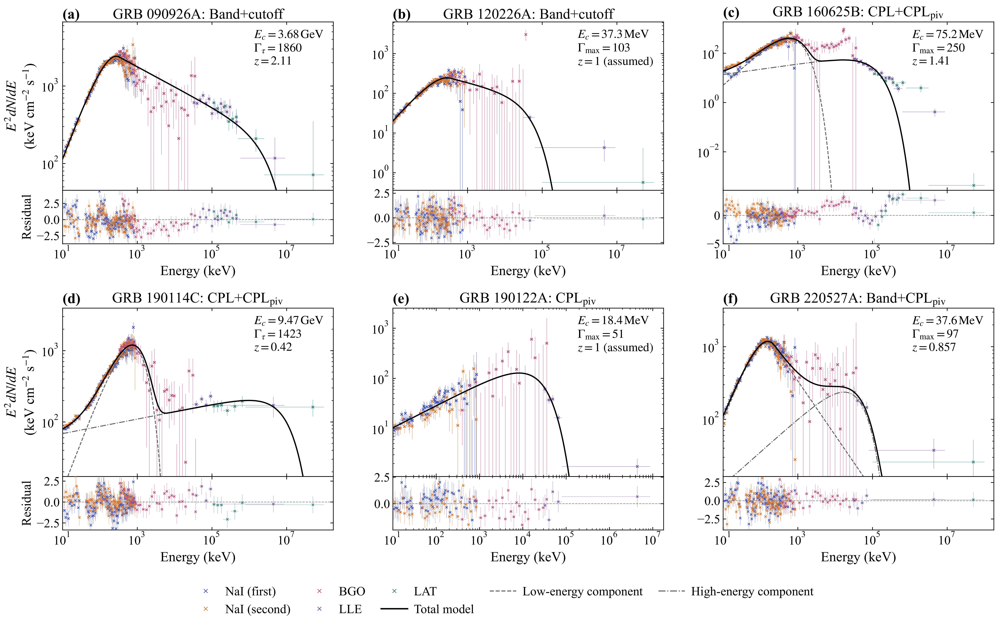
图注：Examples of the prompt spectral fits. Colored crosses and error bars denote the individual detectors, as identified in the legend. The smooth black solid curve represents the total model. For the two-component fits, the gray dashed and dash-dotted curves show the low- and high-energy components, respectively. The upper-right annotation in each panel gives the best-fit cutoff energy, the Lorentz factor, and the adopted redshift. The fits for the remaining 71 GRBs are shown in appendix~\(\ref{app:spectral-figures}.\)
对应解读：建议重点查看的图表第2项；关键图表逐图导读图2；联合谱拟合段落。
入选理由：这是典型 prompt 联合谱拟合示例，展示不同探测器数据点、总模型、两成分模型分解，并在每个面板标注 \(E_c\)、Gamma 和采用红移，最适合检查高能 cutoff 是否由 GBM/LLE/LAT 联合能段支持以及谱模型在高能端的表现。
来源与置信度：\(arxiv_source\)；high；\(arxiv_source\) / jcapexample.tex:figure[3]
Fig01
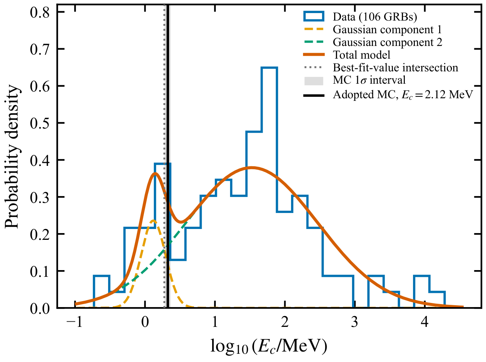
图注：Gaussian mixture fit to the cutoff-energy distribution. The dashed curves show the two weighted Gaussian components, and the orange solid curve shows their sum. The dotted vertical line marks the weighted-density intersection obtained from the best-fit values, whereas the black line and gray interval mark the median and $1\sigma$ interval of the Monte Carlo boundary distribution.
对应解读：建议重点查看的图表第4项；关键图表逐图导读图4；cutoff 能量分布和双高斯混合模型段落。
入选理由：该图直接展示 log \(E_c\) 分布的双高斯混合拟合、两个加权高斯成分、总模型以及交叉边界和不确定区间，是理解作者为何采用 \(E_c=2.12\) MeV 分界并排除低 \(E_c\) 群的基础图。
来源与置信度：\(arxiv_source\)；high；\(arxiv_source\) / jcapexample.tex:figure[1]
Fig04
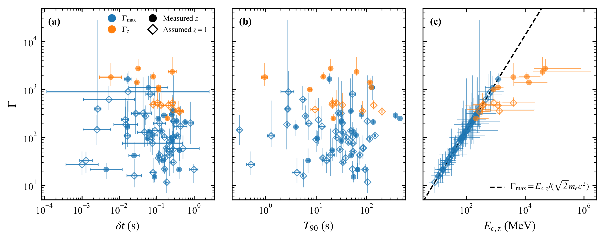
图注：Lorentz factor $\Gamma$ versus (a) $\delta t$, (b) $T_{90}$, and (c) $E_{c,z}$. The colors distinguish the $\Gamma_{\max}$-limited and $\Gamma_\tau$-limited sources, and filled circles and open diamonds denote measured redshifts and the assumed $z=1$, respectively. The dashed line in panel (c) is eq.~\(\eqref{eq:gamma_max},\) not a regression fit.
对应解读：建议重点查看的图表第5项；物理参数反演段落中 Gamma 与 \(t_v\)、T90、\(E_{c,z}\) 的依赖关系。
入选理由：该图展示 Gamma 与 delta t、T90 和 \(E_{c,z}\) 的关系，并区分 \(Gamma_max-limited\) 与 \(Gamma_tau-limited\) 来源及实测/假设红移样本，有助于判断高或低 Gamma 事件是否受极端变时标或 cutoff 能量驱动，补充 Fig05 的分布和相关性结果。
来源与置信度：\(arxiv_source\)；high；\(arxiv_source\) / jcapexample.tex:figure[4]
强相关工作
这篇工作属于 GRB prompt 高能截止和紧致性约束的同类研究。历史上，Lithwick 与 Sari 等关于由 \(\gamma\gamma\) 不透明度限制 \(\Gamma\) 的工作奠定了方法基础；Fermi/LAT 对 GRB 080916C、GRB 090510、GRB 090902B、GRB 090926A 等亮暴的观测则提供了个案级高能光子和谱截止证据。检索关键词可用 “GRB gamma gamma opacity Lorentz factor”, “Fermi LAT prompt spectral cutoff”, “GRB 090926A spectral break pair opacity”, “minimum variability timescale GRB wavelet”。
与本文存在潜在张力的方向包括：把高能截止解释为同步辐射最大能量或电子加速上限，而非内部吸收；把 prompt 高能 LAT 成分解释为外激波早期余辉，而非同一内区；以及光球模型中由热化和多色黑体叠加造成的谱曲率。要比较这些观点，应检索 “GRB prompt synchrotron maximum energy cutoff”, “photospheric emission Band spectrum cutoff”, “Fermi LAT external shock prompt GeV”。本文对 \(E_{c,z}\)-\(E_{p,z}\) 的发现也应与 Amati/Yonetoku 类经验关系、GRB 谱峰演化研究以及 Fermi GBM 谱目录交叉比较。
同一事件 / 同类源线索：
相似工作：
- https://arxiv.org/abs/0908.1832
- https://arxiv.org/abs/0908.1909
- https://arxiv.org/abs/0909.2470
- https://arxiv.org/abs/1001.2089
基础理论 / 方法工作：
- https://arxiv.org/abs/astro-ph/0011508
- https://arxiv.org/abs/astro-ph/9712005
- https://arxiv.org/abs/0801.4325
相反观点 / 张力线索：
4. Optical spectroscopy of the VHE flat-spectrum radio quasar PKS 0903-57
- 来源：arXiv / astro-ph.HE
- 链接：https://arxiv.org/abs/2609.14999v1
- 作者：E. Kasai, P. Goldoni, C. Boisson, S. Pita, W. Max-Moerbeck, F. D'Ammando, B. Rajput, M. Backes
- 评分：novelty 7/10，importance 8/10，relevance 10/10，final 9.40/10
- 推荐理由：Provides a robust redshift and optical classification for the VHE gamma-ray FSRQ PKS 0903-57, a source complicated by close stellar contamination. This is highly relevant for VHE blazar studies, EBL attenuation, and multiwavelength interpretation of HE/VHE flares.
中文题目：甚高能平谱射电类星体 PKS 0903-57 的光学光谱观测
做了什么：这篇文章重新观测了伽马射线耀变体 PKS 0903-57 的光学对应体，核心目标是解决它长期不可靠的光学分类和红移问题。难点在于该源距离一颗明亮前景星只有约 \(0.67''\)，早期光谱很容易被恒星光污染。作者利用 \(2024\) 年 VLT 在优良视宁度下、配合 \(0.5''\) 窄缝获得的新光谱，检测到五条窄发射线，给出稳健红移 \(z=0.2621\pm0.0006\)，并发现宽 \(\mathrm{H}\alpha\) 成分，其半高全宽约 \(4020\pm30\,\mathrm{km\,s^{-1}}\)。连续谱由非热喷流主导，支持将 PKS 0903-57 归为平谱射电类星体。最值得注意的是宽 \(\mathrm{H}\alpha\) 相对窄线存在约 \(1500\,\mathrm{km\,s^{-1}}\) 的速度偏移，可能指向宽线区动力学异常、吸积流结构、双超大质量黑洞或引力反冲黑洞。
为什么重要：PKS 0903-57 是高能和甚高能伽马射线活动源，但没有可靠红移时，伽马射线光度、河外背景光吸收、喷流功率和宿主星系环境都无法定量。本文把一个受前景星严重污染的 VHE 候选或已探测 FSRQ 放到明确宇宙学距离上，并提供了直接光谱分类依据。对 VHE blazar 研究来说，红移不是附属信息，而是从观测通量走向物理能量尺度的入口。
理论 / 观测 / 仪器方法价值：本文的价值主要在观测方法和源物理两方面。方法上，它展示了在角距离小于一角秒的污染场中，窄缝、好视宁度和多历元光谱如何把恒星连续谱、喷流连续谱和发射线分离。物理上，它给出 PKS 0903-57 的窄线红移、宽线宽度和宽窄线速度偏移，为后续黑洞质量估计、喷流盘耦合、VHE 透明度和多波段 SED 建模提供必要输入。
为什么应该关注：如果你关心 VHE FSRQ、喷流在强辐射场中的伽马射线产生、EBL 吸收校正，或者宽线区与相对论喷流的共存问题，这个源现在变得可定量研究。特别是 \(\sim1500\,\mathrm{km\,s^{-1}}\) 的宽线偏移不是普通红移测量的边角料，而是可能暴露中心核动力学复杂性的诊断量；它需要后续高信噪比、时域光谱和空间分辨观测验证。
展开详细解读：文章讲解、背景、理论、重点章节、图表与相关工作
文章详细讲解
科学问题：PKS 0903-57 是一个在高能和甚高能伽马射线波段表现活跃的耀变体，但它的光学本性长期难以确认。主要原因不是源太暗，而是几何上很麻烦：一颗明亮前景星与 blazar 的角距离只有约 \(0.67''\)。在普通视宁度和较宽狭缝下，恒星光会压倒或扭曲 blazar 的光谱连续谱，使发射线的识别、红移测量和分类都变得不稳健。对 VHE 源而言，红移直接进入本征光度、EBL 吸收校正和喷流辐射模型，因此这不是一个单纯的“补充光谱”问题。
作者怎么做：论文汇总了 \(2020\) 至 \(2022\) 年伽马射线强耀发期间由 SALT 和 VLT 获得的光谱，以及 REM 的光度监测。早期观测由于前景星污染和观测条件限制，结论不够确定。真正的突破来自 \(2024\) 年重复 VLT 观测：作者使用 \(0.5''\) 狭缝并选择极佳视宁度，使狭缝中 blazar 与前景星的相对贡献得到更好控制。随后又在 \(2024\) 年底至 \(2025\) 年利用 VLT、REM 和 \(\mathrm{Swift}\) 追加观测，给出初步多波段分析结果。
关键结果：新 VLT 光谱中检测到五条窄发射特征，得到一致红移 \(z=0.2621\pm0.0006\)。这一点使 PKS 0903-57 可被放入明确宇宙学距离框架。作者还检测到对称的宽 \(\mathrm{H}\alpha\) 发射成分，半高全宽为 \(4020\pm30\,\mathrm{km\,s^{-1}}\)，这说明存在典型类星体宽线区。与此同时，光学连续谱主要由非热喷流辐射主导，这与平谱射电类星体分类相符，而不是普通窄线活动星系核或恒星污染造成的伪特征。
最异常的观测是宽 \(\mathrm{H}\alpha\) 与对应窄 \(\mathrm{H}\alpha\) 之间存在约 \(1500\,\mathrm{km\,s^{-1}}\) 的速度位移。窄线一般追踪宿主星系尺度的窄线区系统红移，而宽线来自更靠近黑洞的宽线区；两者显著偏移可能意味着宽线区气体有非轴对称运动、吸积盘发射线轮廓被局部增强、存在双超大质量黑洞系统，或中心黑洞经历并合后的引力反冲。不过这些解释都需要谨慎，因为喷流连续谱变化、狭缝损失、前景星残余污染和谱线分解模型都可能影响宽线中心。
局限和下一步：从摘要看，\(2024\) 年和 \(2025\) 年追加数据仍属初步结果，尚需完整给出多历元光谱的相对定标、前景星扣除、狭缝位置角影响、宽线轮廓随时间变化，以及与 \(\gamma\) 射线活动的同步性。后续最关键的是验证宽线偏移是否稳定：若偏移随时间系统漂移，双黑洞或盘发射模型会更有吸引力；若偏移随连续谱态变化，可能更接近宽线区响应和辐射转移问题。高分辨成像、积分视场光谱、偏振光谱和密集多波段监测都将是自然下一步。
关键结果是怎么做出来的
本文最重要的证据链从样本选择开始：对象不是一个大样本统计，而是单个问题源 PKS 0903-57。选择它的原因有三点：它是强 \(\gamma\) 射线耀变体，在 \(2020\) 至 \(2022\) 年经历 HE 和 VHE 活动；它的光学对应体受 \(0.67''\) 外明亮前景星污染；它缺乏足够稳健的光学红移和分类。也就是说，论文的统计强度主要来自多条谱线的一致性和观测设置对污染的控制，而不是来自源数量。
观测链条分为两个阶段。第一阶段是 SALT、VLT 与 REM 在耀发期间的光谱和光度监测，这些数据提供了源在高态期间的光学行为，但由于污染和条件限制，不能给出决定性红移。第二阶段是 \(2024\) 年 VLT 采用 \(0.5''\) 狭缝并在优秀视宁度下重新观测，这一配置显著降低前景星进入狭缝的比例，因而更适合检测微弱窄线。论文声称在这一数据中检测到五条窄发射特征，这是红移结论的主要支柱。
显著性或置信度在这类工作中通常不表现为单一 \(5\sigma\) 发现数，而表现为多条窄线在同一 \(z\) 下的波长匹配、线心拟合误差、波长定标误差和残差谱中假线概率的组合。本文给出的 \(z=0.2621\pm0.0006\) 表明五条线的线心散布和系统误差已经被合并进红移不确定度。读者应重点检查论文中窄线列表或表格：每条线的观测波长、识别、信噪比、等效宽度，以及扣除恒星和连续谱后的残差。
宽 \(\mathrm{H}\alpha\) 是第二个核心结果。作者报告其半高全宽为 \(4020\pm30\,\mathrm{km\,s^{-1}}\)，这远大于窄线区典型线宽，符合宽线区气体在中心黑洞势阱内高速运动的图像。宽线是否“对称”很重要：若轮廓近似对称但整体线心相对窄线偏移，解释会偏向宽线区整体运动或发射区域系统性速度；若轮廓强烈非对称，则盘发射、遮挡或多成分混合会更自然。读者应查看宽线拟合图，尤其是宽、窄 \(\mathrm{H}\alpha\) 和相邻 \([\mathrm{N\,II}]\) 的联合分解。
约 \(1500\,\mathrm{km\,s^{-1}}\) 的宽窄线速度偏移是模型比较的焦点。这个数值应由宽线中心与窄线系统红移之差换算得到，关键系统误差包括波长定标、谱线混叠、连续谱形状、Fe 或其他弱线模板、前景星残余、狭缝位置角导致的差分损失，以及不同历元的通量标定。稳健性检验应包括改变连续谱模型、改变窄线宽度约束、固定或放开 \([\mathrm{N\,II}]\) 双线比、使用不同拟合窗口，以及比较不同历元是否得到同样偏移。
支撑结论的图表应包括：视场或狭缝几何图，说明前景星与 blazar 的相对位置；一维和二维光谱，显示谱线不是扣除伪影；红移线识别表；\(\mathrm{H}\alpha\) 区域多成分拟合图；REM 与 \(\mathrm{Swift}\) 光变曲线，用于判断非热连续谱状态。若论文给出 \(2024\) 年底和 \(2025\) 年初步数据，读者还应看宽线通量、线心和连续谱亮度是否随时间变化，这直接关系到双黑洞、反冲黑洞和普通宽线区动力学之间的区分。
展开背景、理论、公式、模型、章节和图表导读
背景知识
PKS 0903-57 属于耀变体，也就是喷流几乎沿视线方向指向我们的活动星系核。它在射电到 \(\gamma\) 射线波段可高度变亮，连续谱主要由相对论喷流产生。平谱射电类星体通常兼具强喷流和可观测宽发射线，因此它们同时连接了喷流物理、吸积盘辐射、宽线区和外部康普顿散射等问题。
历史上，许多 VHE blazar 的红移都难测。BL Lac 型源常因喷流连续谱过强而缺乏发射线；FSRQ 虽有宽线，但耀发高态时喷流会稀释线的等效宽度。PKS 0903-57 的情况更糟，因为近邻前景星造成额外污染。若没有高角分辨或足够好的视宁度，观测到的光谱可能主要是恒星连续谱加上少量 blazar 光，导致谱线识别不可靠。
为什么现在值得重新看？一方面，PKS 0903-57 在 \(2020\) 至 \(2022\) 年有强 HE/VHE 活动，多波段社区需要可靠距离来解释其本征辐射功率和谱能分布。另一方面，现代大望远镜在好视宁度下使用窄缝或自适应辅助技术，能够在小于一角秒的混合源中分离目标贡献。也就是说，新观测不是简单重复旧光谱，而是针对具体污染几何重新设计的实验。
该领域常见误区之一是把“检测到一条可能的线”直接等同于可靠红移。对于受污染 blazar，单线识别非常危险，因为恒星吸收、夜天线残差、宿主星系弱特征和喷流连续谱起伏都可能制造假象。稳健红移更依赖多条窄线在同一 \(z\) 下自洽，并且需要二维光谱和空间剖面证明这些线来自 blazar 位置而非前景星或背景源。
另一个误区是把宽线偏移立即解释为双黑洞。宽 \(\mathrm{H}\alpha\) 相对窄线偏移确实可能出现在双超大质量黑洞、反冲黑洞或盘发射线系统中，但也可能来自宽线区不对称、辐射转移、局部云团增强、吸积盘风、谱线混合和拟合窗口选择。单历元偏移是线索，不是定论；真正有判别力的是偏移的长期稳定性、加速度、轮廓变化和与连续谱响应的时间延迟。
基础理论 / 方法脉络
耀变体的基本物理图像是：中心超大质量黑洞吸积物质并发射相对论喷流，喷流辐射经多普勒增强后主导观测连续谱。若喷流方向接近视线，观测到的同步辐射和逆康普顿辐射会被强烈放大。在 FSRQ 中，吸积盘、宽线区和尘埃环提供外部光子场，喷流电子可通过外部康普顿过程产生 GeV 甚至 VHE \(\gamma\) 射线。
光学谱线的角色与连续谱不同。窄线区位于更大的尺度，速度通常较低，线心较好追踪宿主星系系统红移。宽线区位于黑洞附近，气体速度可达数千 \(\mathrm{km\,s^{-1}}\)，宽线宽度反映引力势和气体运动。因而，窄线红移给出宇宙学距离，宽线宽度和光度可用于估计黑洞质量和吸积状态。
本文的关键观测假设是：通过窄缝和优良视宁度可以把 blazar 光谱与 \(0.67''\) 外前景星的污染部分分离。狭缝宽度、视宁度、位置角和大气色散都会影响进入狭缝的两源光比例。若前景星残余没有准确建模，它会改变连续谱斜率并稀释发射线等效宽度，但窄发射线的线心位置通常比通量更稳健。
红移测量的基础是把观测波长与实验室静止波长匹配。多条窄线给出同一 \(z\) 是强约束。宽 \(\mathrm{H}\alpha\) 的半高全宽则需要扣除仪器分辨率，并通过高斯、洛伦兹或多成分模型拟合线轮廓。宽线线心与窄线系统红移之间的速度差，是判断中心区动力学异常的主要观测量。
常见退化包括喷流连续谱斜率与恒星模板的退化、宽 \(\mathrm{H}\alpha\) 与窄 \(\mathrm{H}\alpha\) 及 \([\mathrm{N\,II}]\) 双线的混合、谱线本征非高斯性与多高斯分解的退化，以及绝对通量标定与狭缝损失的退化。对本文来说，红移本身较稳健，但宽线偏移的物理解释仍高度依赖谱线分解和多历元稳定性。
公式与推导
第一步是红移定义。若某条窄线的静止波长为 \(\lambda_{0,i}\)，观测线心为 \(\lambda_{\mathrm{obs},i}\)，则
这里 \(i\) 标记不同发射线。本文的稳健性来自多条窄线给出一致的 \(z_i\)，最终合并为 \(z=0.2621\pm0.0006\)。
第二步是把多条线合并为系统红移。若每条线心不确定度为 \(\sigma_{z,i}\)，加权平均可写为
实际论文还应加入波长定标和谱线识别的系统误差，因此报告误差不一定只等于形式统计误差。
第三步是由红移得到距离尺度。给定宇宙学参数，光度距离为
其中 \(H_0\) 是哈勃常数，\(\Omega_m\) 和 \(\Omega_\Lambda\) 是物质和暗能量密度参数。这个量把观测通量转换成本征光度，是 VHE 源物理解释的基础。
第四步是通量到光度的换算。若某波段观测能量通量为 \(F\)，则各向同性等效光度近似为
其中 \(K(z)\) 是 \(K\)-校正，依赖谱形。对耀变体而言，\(L_{\mathrm{iso}}\) 不等于真实喷流功率，因为多普勒增强会显著放大沿视线方向的辐射。
第五步是线宽测量。若宽线在波长空间的半高全宽为 \(\Delta\lambda_{\mathrm{FWHM}}\)，对应速度宽度为
本文给出宽 \(\mathrm{H}\alpha\) 的 \(v_{\mathrm{FWHM}}=4020\pm30\,\mathrm{km\,s^{-1}}\)，这是宽线区高速气体的直接证据。
第六步是扣除仪器展宽。若观测线宽和仪器线宽都近似高斯，则本征线宽满足
这里 \(v_{\mathrm{inst}}\) 由光谱分辨率或夜天线测得。若宽线远宽于仪器分辨率，扣除项较小；但对窄线速度和线心误差仍很重要。
第七步是宽窄线速度偏移。若宽线线心红移为 \(z_{\mathrm{b}}\)，窄线系统红移为 \(z_{\mathrm{n}}\)，相对速度在低速近似下可写为
本文报告 \(\Delta v\sim1500\,\mathrm{km\,s^{-1}}\)。分母中的 \(1+z_{\mathrm{n}}\) 是把宇宙学红移背景下的小速度差转到源静止系。
第八步是单历元黑洞质量的常用尺度关系。若宽线区半径为 \(R_{\mathrm{BLR}}\)，线宽代表维里速度，则
其中 \(f\) 是几何因子，\(G\) 是引力常数。若有 \(\mathrm{H}\alpha\) 光度，可用经验的 \(R_{\mathrm{BLR}}\)-光度关系估计 \(R_{\mathrm{BLR}}\)，但在喷流连续谱强烈污染时要格外小心。
第九步是光谱拟合的统计量。对像素 \(j\) 的观测通量 \(f_j\)、模型 \(m_j(\boldsymbol\theta)\) 和误差 \(\sigma_j\)，常用高斯似然为
参数 \(\boldsymbol\theta\) 包括连续谱斜率、恒星模板权重、窄线线心、宽线宽度和线通量。宽线偏移是否显著，最终应由含偏移模型与无偏移模型的似然差、残差结构和系统误差共同判断。
模型拟合 / 应用方法
本文这类光谱工作的拟合对象主要是一维抽取光谱，有时还需要二维光谱作为空间一致性检查。模型通常包括若干部分：前景星或恒星模板、喷流幂律连续谱、可能的宿主星系成分、窄发射线组，以及宽 \(\mathrm{H}\alpha\) 成分。由于 blazar 连续谱可变，不能简单用普通类星体模板替代所有连续谱成分。
红移拟合相对直接：对五条窄发射线测线心，并要求它们对应同一 \(z\)。窄线可用高斯模型，常见约束是同一窄线系统共享红移和线宽，某些双线如 \([\mathrm{N\,II}]\) 可固定理论强度比。拟合残差中若在所有候选线位置都呈系统正峰，红移可信度较高；若只有单条弱线，或残差与夜天线位置重合，则可信度下降。
宽 \(\mathrm{H}\alpha\) 拟合更微妙。它与窄 \(\mathrm{H}\alpha\)、\([\mathrm{N\,II}]\) 双线和连续谱基线相互混合。若连续谱扣除偏高，宽线翼会被削弱；若连续谱扣除偏低，可能制造虚假的宽翼。宽线中心的偏移还会与轮廓非对称退化：一个偏移的单宽高斯，和两个不偏移但强度不等的宽成分，有时能给出相近的 \(\chi^2\)。
参数估计应报告线心、线宽、线通量、等效宽度和协方差。对窄线红移，主要系统误差来自波长定标、狭缝照明和线识别；对宽线偏移，主要系统误差来自谱线分解、前景星扣除、光谱分辨率、相邻线混合和大气吸收校正。若论文有多历元 VLT 数据，应比较每个历元独立拟合的 \(\Delta v\)，而不是只看合并光谱。
实际应用上，拟合结果将进入三个后续模型：第一，SED 建模需要 \(z\) 来修正光度和 EBL 吸收；第二，黑洞质量和吸积率估计需要宽 \(\mathrm{H}\alpha\) 线宽与线光度；第三，中心动力学解释需要宽线速度偏移和其时间变化。模型可能失败的地方也清楚：若前景星污染随观测条件改变而未被正确建模，跨历元线通量变化可能是仪器效应；若喷流连续谱在光谱曝光期间快速变化，等效宽度也可能被误读为宽线本征变化。
重点章节 / 结果段落怎么读
数据和观测设置部分应首先阅读。重点不是望远镜名称本身，而是每个历元的视宁度、狭缝宽度、狭缝位置角、曝光时间、波长覆盖和光谱分辨率。特别要确认 \(2024\) 年 VLT \(0.5''\) 狭缝观测如何相对于 \(0.67''\) 外前景星放置，因为这是突破旧观测局限的关键。
光谱抽取和污染处理部分是第二个重点。读者应检查作者如何从二维谱中抽取 blazar，是否使用前景星模板，是否评估两源空间剖面重叠，是否讨论大气色散和狭缝损失。若这部分处理粗略，后面的宽线偏移解释就要打折。
红移测量部分应逐线阅读。五条窄线的识别、观测波长、静止波长、单线红移和误差应彼此自洽。尤其要看是否有线落在强天光残差、 telluric 吸收或 CCD 缺陷附近。可靠红移应由多线共同支撑，而不是由最强一条线主导。
\(\mathrm{H}\alpha\) 线分解部分是物理讨论的核心。读者应看宽线半高全宽、线心、线通量、窄线约束和拟合残差。若作者比较了无宽线、无偏移宽线和偏移宽线模型，应优先关注模型比较统计量和残差改善是否集中在真实线翼而非连续谱波动。
多波段和讨论部分用于连接喷流状态。REM 和 \(\mathrm{Swift}\) 数据可判断光学至 X 射线连续谱是否处于高态，以及非热连续谱是否压低了发射线等效宽度。讨论中关于双黑洞或反冲黑洞的内容应当被理解为可能解释，而非已证实结论；读者应寻找作者是否提出可检验预言，例如线心漂移、周期性速度变化或轮廓随时间变化。
建议重点查看的图表
-
视场图或获取图像：看 blazar 与前景星的角距离、亮度对比、狭缝位置角和狭缝宽度。关键是确认 \(0.5''\) 狭缝是否足以降低恒星污染。
-
二维光谱图：看发射线在空间方向上是否与 blazar 位置一致，而不是来自前景星、背景星系或天光残差。二维谱比一维谱更能排除抽取伪影。
-
全波段一维光谱：看连续谱形状、恒星特征残留、主要窄发射线位置，以及不同历元光谱之间的差异。特别注意喷流连续谱是否主导。
-
窄线红移表：检查五条窄线的观测波长、单线 \(z_i\)、信噪比和等效宽度。若某条线偏离平均 \(z\) 明显，应看作者是否解释。
-
\(\mathrm{H}\alpha\) 区域拟合图：看宽 \(\mathrm{H}\alpha\)、窄 \(\mathrm{H}\alpha\)、\([\mathrm{N\,II}]\) 双线和连续谱的分解。最关键的是残差是否支持宽线中心偏移。
-
多历元光变曲线：看 REM 光学和 \(\mathrm{Swift}\) 紫外/X 射线是否与光谱历元同步，判断线等效宽度变化是否只是连续谱稀释。
-
模型残差或稳健性表：看改变连续谱、模板、拟合窗口或线宽约束后，\(z\)、宽线半高全宽和 \(\Delta v\) 是否稳定。
关键图表逐图导读
图 1：通常应是获取图像或视场示意。横纵轴为空间角尺度，标出 PKS 0903-57、前景星和光谱狭缝。读图重点是 \(0.67''\) 分离量与 \(0.5''\) 狭缝宽度、视宁度之间的关系。陷阱是只看狭缝宽度而忽略点扩散函数翅膀；即使狭缝较窄，明亮星的 PSF 翅膀仍可能进入目标抽取孔径。
图 2：应关注二维光谱或空间剖面。横轴一般是波长，纵轴是空间方向，颜色表示计数率或通量。真正来自 blazar 的窄发射线应在 blazar 空间位置出现，并与天光线残差区分开。陷阱是把竖直方向的天光残差误认为源发射线；读者应检查线是否只在目标轨迹上增强。
图 3：全波段一维光谱。横轴为观测波长或静止系波长，纵轴为通量密度。数据曲线应叠加连续谱模型和发射线标记。主要结论是五条窄线共同给出 \(z=0.2621\pm0.0006\)。读图陷阱是连续谱形状可能受前景星和大气色散影响，因此线心比整体斜率更可靠。
图 4：窄线识别和红移诊断图或表。若是图，横轴可能为静止系波长或不同线编号，纵轴为单线红移残差 \(z_i-\bar z\)。应看五条线是否在误差范围内一致。若某些线靠近 telluric 或强天光区域，置信度应相应降低。
图 5：\(\mathrm{H}\alpha\) 区域分解图。横轴为速度或波长，纵轴为通量密度；通常会有总模型、宽 \(\mathrm{H}\alpha\)、窄 \(\mathrm{H}\alpha\)、\([\mathrm{N\,II}]\) 和残差。主要结论是存在半高全宽 \(4020\pm30\,\mathrm{km\,s^{-1}}\) 的宽线，并且宽线中心相对窄线偏移约 \(1500\,\mathrm{km\,s^{-1}}\)。陷阱是宽线翼和连续谱基线高度相关，必须看残差是否随机。
图 6：REM 与 \(\mathrm{Swift}\) 光变或 SED 初步图。横轴可能为时间或频率，纵轴为通量或 \(\nu F_\nu\)。这类图用于说明非热喷流连续谱主导，并把光谱观测放在源活动状态中。陷阱是非同时数据拼接会制造虚假的 SED 形状；读者应区分同时和非同时点。
论文原图 / 可嵌入图片
Fig02
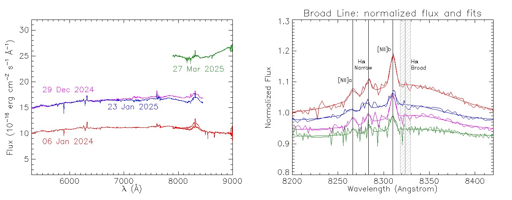
图注：\(\emph{Left panel:}\) Flux calibrated spectra of the four FORS2 VLT observations (including the already published one) with dates. Note that, in the three latest observations, the blazar was significantly brighter, especially in the latest. \(\emph{Right panel:}\) Normalized spectra of the four FORS2 observations in the region around the H$\alpha$-[NII] complex shifted along the vertical axis for better visibility. The positions of the narrow lines are marked with vertical lines. A grey shaded box centered on the January 2024 position of the broad line marks the range of positions consistent (within $\pm$ 200~km/s) with the broad lines in the observations reported here.
对应解读：对应“全波段一维光谱”“Hα 区域拟合图”“多历元 VLT 数据比较”和模型拟合段落中关于宽 Hα、窄线系统、连续谱主导及宽线速度偏移稳定性的讨论。
入选理由：这是候选图中最直接支撑论文核心结论的图：左图给出四次 FORS2/VLT 一维光谱，可比较不同历元连续谱亮度和光谱形态；右图聚焦 Hα-[NII] 复合区，标出窄线位置，并用灰色区域显示宽 Hα 线在不同观测中的位置一致性范围。它直接关联红移确认、宽 Hα 检测、约 1500 km/s 速度偏移以及多历元稳健性，比光变/SED 图更关键。
来源与置信度：\(arxiv_source\)；high；\(arxiv_source\) / skeleton.tex:figure[2]
Fig01
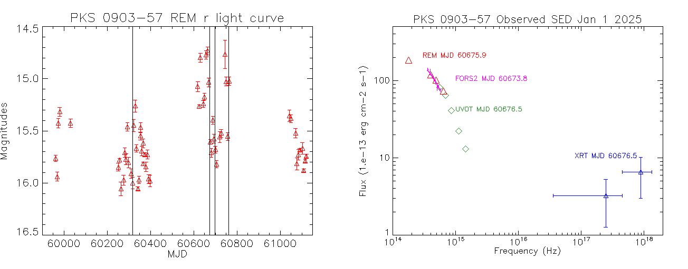
图注：\(\emph{Left panel:}\) Long term PKS~0903$-$57 REM light curve (r-band) after star subtraction. The vertical lines indicate the times of the four FORS2 observations we performed. The first one reported in [4] and the three others reported in this contribution. \(\emph{Right panel:}\) Observed NIR-optical-X-ray SED of PKS~0903$-$57 at the beginning of January 2025. \(\emph{Swift}\) observations were performed on January~1, 2025, and REM observations on December~31, 2024. The brightest REM photometric point on the left corresponds to the H filter at frequency $\nu_H \sim$ 1.8 $\times$ 10$^{14}$~Hz and it seems to indicate a change in slope with a possible peak at that frequency or smaller. If so, it would suggest that the source is an ISP or an LSP (low-synchrotron-peaked) blazar.
对应解读：对应“多历元光变曲线”“REM 与 Swift 光变或 SED 初步图”，以及详细解读中关于光谱观测时源活动状态、非热喷流连续谱主导和 SED 分类的讨论。
入选理由：该图左侧给出去除前景星后的 REM r 波段长期光变曲线，并标出四次 FORS2 光谱观测时间，可用于判断光谱历元对应的光学活动状态；右侧给出 2024 年底至 2025 年初的近红外-光学-X 射线 SED，有助于说明非热喷流连续谱和可能的 ISP/LSP 性质。虽然不直接展示窄线红移或 Hα 分解，但对解释连续谱稀释和多波段背景很有价值。
来源与置信度：\(arxiv_source\)；high；\(arxiv_source\) / skeleton.tex:figure[1]
强相关工作
这篇工作应放在 VHE FSRQ 和红移困难 blazar 的背景中阅读。同类研究包括对 \(3\mathrm{C}\,279\)、PKS \(1510-089\)、PKS \(1222+216\) 等 VHE FSRQ 的多波段观测、光谱分类和 EBL 校正。检索关键词可用 “VHE FSRQ optical spectroscopy redshift”, “PKS 0903-57 gamma-ray blazar”, “flat-spectrum radio quasar broad line region VHE”, “blazar foreground star contamination spectroscopy”。
宽线偏移部分则连接到另一条文献线：偏移宽发射线、双超大质量黑洞候选、反冲黑洞和吸积盘发射线模型。相似现象在某些类星体中被讨论过，但解释长期存在张力，因为单历元速度偏移很容易被盘发射线不对称或宽线区结构误导。检索关键词可用 “offset broad H alpha AGN”, “recoiling supermassive black hole broad emission line”, “binary supermassive black hole shifted broad lines”, “disk emitter broad Balmer line”。
对于 PKS 0903-57 这个命名源，读者应特别寻找同一源的伽马射线告警、TeV/VHE 观测报告、多波段监测和早期红移尝试。本文自身的 arXiv 页面是确定入口；其他同源材料若没有精确题录，不应凭记忆引用具体编号。
同一事件 / 同类源线索：
相似工作：
基础理论 / 方法工作：
相反观点 / 张力线索：
5. Gas absorption of soft X-rays strongly impacts the redshift distribution of dark Fast X-ray Transients
- 来源：arXiv / astro-ph.HE
- 链接：https://arxiv.org/abs/2609.13385v1
- 作者：Javier Sánchez-Sierras, Peter G. Jonker, Jonathan Quirola-Vásquez, Agnes P. C. van Hoof, Andrew J. Levan, Maria E. Ravasio, Joyce N. D. van Dalen, Franz E. Bauer
- 评分：novelty 8/10，importance 8/10，relevance 9/10，final 9.35/10
- 推荐理由：研究Einstein Probe暗Fast X-ray Transients的软X射线吸收选择效应，结合两个事件并与暗GRB类比，指出暗FXT偏中高红移；对GRB/高能X射线瞬变样本解释和后随观测策略重要。
中文题目：软 X 射线气体吸收会强烈改写“暗”快速 X 射线暂现源的红移分布
做了什么：这篇文章讨论 Einstein Probe 宽视场 X 射线望远镜 EP-WXT 发现的“暗”快速 X 射线暂现源，即有 X 射线爆发但光学对应体很弱或未探测到的 FXT。作者指出，不能简单把“暗 FXT”等同于“暗 GRB”：软 X 射线在宿主星系中会被中性气体光电吸收，而 EP-WXT 的观测能段使得低红移、强吸收事件反而更难被探测到。文章结合两个案例 EP241103a 和 EP260409a，并用模拟说明当宿主柱密度 \(N_{\rm H}\gtrsim10^{22}\,{\rm cm^{-2}}\) 时，低红移事件的计数会显著下降；因此被 EP-WXT 发现的暗 FXT 更可能偏向中高红移，尤其需要静止系 \(>2\)--\(3\,{\rm keV}\) 的光子红移到仪器可见能段。
为什么重要：重要性在于它把“未见光学对应体”从一个简单的尘埃遮蔽标签，转化为 X 射线选择函数问题。对于 GRB，\(\gamma\) 射线触发基本不受宿主气体光电吸收影响；但对软 X 射线触发的 FXT，宿主气体吸收直接决定事件能不能进入样本。因此暗 FXT 的红移分布、宿主环境和前身星解释，不能照搬暗 GRB 的经验。
理论 / 观测 / 仪器方法价值：对观测的价值是给 EP-WXT 暗 FXT 样本提供了一个必须纳入的选择效应：吸收柱密度、红移、谱形和仪器响应共同决定触发概率。对理论的价值是提醒我们，暗 FXT 可能不是低红移尘埃富集事件的简单集合，而是被软 X 射线透过率筛选后的中高红移样本。对后续方法的价值是，FXT 的率估计、宿主统计和多波段随访优先级都应把 \(N_{\rm H}\)-\(z\) 退化和 K 修正纳入模型。
为什么应该关注：如果你用 EP 或其他软 X 射线巡天样本研究宇宙暂现源率、GRB/FXT 统一图像、致密星并合或大质量恒星死亡，这篇文章直接影响样本解释。它告诉你：暗 FXT 的“暗”不只是光学问题，也是 X 射线探测偏置问题；一旦忽略这一点，低红移和高红移事件的相对比例、宿主吸收分布、甚至前身星通道都会被误判。
展开详细解读：文章讲解、背景、理论、重点章节、图表与相关工作
文章详细讲解
科学问题：FXT 是持续时间从数十秒到数小时不等的 X 射线暂现事件，部分可能与 GRB、低亮度 GRB、失败喷流、恒星潮汐破坏或致密星并合余辉有关。所谓“暗”FXT 指 X 射线爆发后没有清晰光学对应体，或光学亮度远低于按 X 射线外推预期的事件。文章的核心问题是：这些暗 FXT 是否只是类似暗 GRB 那样被宿主尘埃遮蔽，还是因为软 X 射线自身被气体吸收而形成了一种完全不同的观测选择函数。
作者怎么做：作者从两个 EP-WXT 发现的暗 FXT 入手，讨论 EP241103a 和 EP260409a 的多波段随访约束。EP241103a 的情形被解释为强消光使光学对应体不可见，但若源位于约 \(z\sim2.5\)，静止系较高能的 X 射线光子红移到 EP-WXT 能段时仍可保留足够计数。EP260409a 没有光学对应体，但有近红外对应体，作者认为一个合理解释是红移达到 \(z\gtrsim4\)，使得光学波段受到高红移和消光共同压低，而近红外仍可探测。
关键结果：文章最重要的物理结论是，软 X 射线吸收会使低红移、强吸收 FXT 很难被 EP-WXT 探测到。对于 \(N_{\rm H}\gtrsim10^{22}\,{\rm cm^{-2}}\) 的宿主吸收，光电吸收截面随能量快速下降，因此只有静止系 \(>2\)--\(3\,{\rm keV}\) 的光子能够相对有效穿透。由于观测能量和静止系能量满足 \(E_{\rm rest}=(1+z)E_{\rm obs}\)，较高红移会让同一观测能段对应更高静止系能量，从而减轻宿主吸收。这导致一个反直觉结论：在软 X 射线触发样本中，被发现的强吸收暗 FXT 可能偏向中高红移，而不是低红移。
局限和下一步：目前文章基于两个案例和前向模拟，样本量仍小，EP-WXT 触发阈值、谱形假设、吸收金属丰度、光学/红外随访深度和宿主定位不确定性都会影响结论。下一步需要更大的 EP-WXT 暗 FXT 样本、统一的多波段随访、X 射线谱拟合中的 \(N_{\rm H}\)-\(z\) 联合约束，以及把触发效率写入宇宙率反演。尤其关键的是用近红外、毫米波或深场光谱给暗 FXT 建立可靠红移，而不是只用“未探测到光学对应体”来判断其性质。
关键结果是怎么做出来的
本文的证据链从样本定义开始：作者选取两个由 EP-WXT 发现且缺乏普通光学对应体的 FXT，EP241103a 和 EP260409a，作为“暗 FXT”案例。这里的暗不是指 X 射线弱，而是指与 X 射线暂现相联系的光学发射没有在常规随访中被探测到，或者被强消光压低。EP241103a 的重点是高消光导致光学不可见；EP260409a 的重点是没有光学对应体但有近红外对应体，暗示高红移或强尘埃遮蔽，作者给出 \(z\gtrsim4\) 的情景作为合理解释。
统计和模拟部分的核心不是对两个事件做传统大样本显著性检验，而是做前向探测效率计算：给定 FXT 的内禀谱形、红移、宿主吸收柱密度和 EP-WXT 响应，计算在仪器能段内能够留下多少探测计数。作者特别比较了低吸收和 \(N_{\rm H}\gtrsim10^{22}\,{\rm cm^{-2}}\) 的强吸收情形，结果显示强吸收事件在低红移时低能光子被大量吃掉，计数快速下降，因而难以通过触发或进入样本。
显著性意义来自物理量级和选择函数的强变化，而不是单一 \(p\) 值。由于光电吸收截面近似随能量按 \(E^{-2.5}\) 到 \(E^{-3}\) 下降，观测能段对应的静止系能量会随 \((1+z)\) 提高。对同一 \(E_{\rm obs}\)，高红移事件的 \(E_{\rm rest}\) 更高，吸收光深 \(\tau\) 更小，因此反而更容易让硬一些的静止系 X 射线进入 EP-WXT。支撑这一点的图表应是计数或探测效率随红移和 \(N_{\rm H}\) 变化的曲线，以及两个事件的多波段上限/探测点与模型解释的对照。
系统误差主要来自四个方面。第一是内禀谱形：若 FXT 的谱更硬，低红移强吸收事件会比软谱假设下更容易探测；若谱更软，偏置更强。第二是吸收模型：金属丰度、宿主吸收位置、是否存在电离吸收体都会改变 \(\sigma(E)\) 和 \(N_{\rm H}\) 的解释。第三是 EP-WXT 的有效面积和背景阈值，低能端响应误差会直接影响计数。第四是光学/近红外随访深度和时间延迟，因为快速衰减余辉可能在随访开始前已经低于探测极限。
稳健性检验应围绕 \(N_{\rm H}\)、红移、谱指数、爆发持续时间和通量归一化展开。若在合理谱形范围内，强吸收低红移模型始终给出过低 EP-WXT 计数，或者需要不合理高的内禀亮度才能解释观测，那么中高红移解释就更有说服力。相反，如果存在一组低红移、硬谱、低金属丰度的模型也能同时解释 X 射线计数和光学暗弱，则目前结论应被理解为选择效应主导的倾向，而不是每个暗 FXT 的唯一红移诊断。
展开背景、理论、公式、模型、章节和图表导读
背景知识
FXT 是近年来宽视场 X 射线巡天重点寻找的暂现源类别。它们在 X 射线中快速升亮并衰减，持续时间短于许多经典 X 射线双星活动，但又可能长于典型 GRB prompt 阶段。由于定位、触发能段和随访速度不同，FXT 样本可能混合了多个物理通道，包括 GRB 余辉、低亮度 GRB、离轴喷流、磁星活动、潮汐破坏事件早期信号和其他高能爆发现象。
“暗 GRB”是一个有较长历史的概念。传统上，若 GRB 的光学余辉相对于 X 射线余辉过暗，常见解释包括宿主星系尘埃消光、高红移 Lyman 吸收、内禀弱光学辐射，或观测太晚。由于 GRB 的触发多在硬 X 射线或 \(\gamma\) 射线能段，宿主中性气体的光电吸收通常不会显著影响触发本身；因此暗 GRB 样本主要被理解为光学随访选择效应和宿主环境问题。
FXT，尤其是 EP-WXT 这类软 X 射线仪器发现的 FXT，则不同。软 X 射线能量较低，光电吸收截面很大，宿主内 \(N_{\rm H}\sim10^{22}\)--\(10^{23}\,{\rm cm^{-2}}\) 的气体就足以显著压低 \(\lesssim1\)--\(2\,{\rm keV}\) 的观测计数。于是暗 FXT 的“暗”不仅可能来自光学尘埃，还可能来自只有特定红移和谱形的事件能通过 X 射线选择函数。
这个问题现在值得重新看，是因为 Einstein Probe 提供了软 X 射线大视场、高 cadence 的发现能力。以往许多 FXT 来自 Chandra、XMM-Newton 或 Swift 的偶然视场与后验搜索，选择函数复杂且样本小；EP-WXT 将产生更系统的 FXT 样本。如果不尽早建立吸收和红移的探测偏置模型，将来用这些样本做宇宙率、前身星通道和宿主演化分析时会出现系统偏差。
一个常见误区是把“无光学对应体”直接解释为“高尘埃低红移宿主”。对软 X 射线 FXT 来说，低红移高吸收宿主可能连 X 射线触发都过不了，反而不会出现在样本中。另一个误区是把 X 射线吸收柱密度和光学消光简单按银河系气尘比转换；在 GRB/FXT 宿主中，气尘比、金属丰度、电离状态和局部环境都可能偏离银河系关系。
基础理论 / 方法脉络
基础物理图像是光电吸收。软 X 射线光子穿过中性或低电离气体时，会被内层电子吸收，吸收截面随能量快速下降。因此同样的氢等效柱密度 \(N_{\rm H}\) 对 \(0.5\,{\rm keV}\) 光子的影响远大于对 \(5\,{\rm keV}\) 光子的影响。FXT 若发生在富气体、富尘埃的恒星形成区，其低能 X 射线会被宿主吸收切掉，观测谱会变硬且总计数下降。
红移在这里扮演 K 修正角色。观测到的能量 \(E_{\rm obs}\) 对应静止系能量 \(E_{\rm rest}=(1+z)E_{\rm obs}\)。如果一个源位于高红移，同一 EP-WXT 观测能段对应更高的静止系能段，而高能光子的吸收截面更小。于是对宿主吸收而言，高红移会部分“减弱”吸收效应，虽然宇宙距离增大会降低总通量。这两个效应竞争，决定强吸收 FXT 的探测红移窗口。
论文的模型假设可概括为：给定内禀 FXT 光谱、爆发持续时间或 fluence、宿主吸收柱密度、银河系前景吸收和红移，通过 EP-WXT 的有效面积和响应矩阵折叠，得到预期计数。关键量包括 \(N_{\rm H}\)、\(z\)、谱指数或热谱温度、未吸收通量、观测能段计数率和触发阈值。作者关心的是这些量如何共同改变暗 FXT 的可探测性。
观测上还必须区分 X 射线暗化和光学暗化。光学对应体缺失可能由尘埃消光 \(A_V\)、高红移 Lyman break、余辉快速衰减、定位误差或宿主背景污染造成。近红外探测对于打破退化很关键：若光学无而近红外有，可能支持高 \(A_V\) 或高 \(z\)；若连深近红外也无，则可能是极高红移、极强消光或余辉本来就很弱。
常见退化包括 \(N_{\rm H}\)-\(z\) 退化、谱硬度-吸收退化、内禀亮度-距离退化，以及 \(A_V\)-红移退化。系统误差包括 EP-WXT 低能响应、背景估计、触发算法阈值、X 射线到光学外推模型、宿主金属丰度和电离吸收体处理。本文的价值正是把这些退化中的一个关键项，即软 X 射线吸收选择函数，明确放到暗 FXT 的红移解释中。
公式与推导
第一步，从红移能量变换开始。观测能量和源静止系能量满足
这里 \(E_{\rm obs}\) 是 EP-WXT 探测到的光子能量，\(E_{\rm rest}\) 是光子在宿主吸收体中传播时的能量，\(z\) 是源红移。由于吸收发生在宿主系，应使用 \(E_{\rm rest}\) 计算宿主光电吸收。
第二步，光电吸收透过率可写成
其中 \(N_{\rm H}\) 是宿主氢等效柱密度，\(\sigma(E)\) 是单位氢柱的有效光电吸收截面，包含金属丰度假设。若近似 \(\sigma(E)=\sigma_0(E/E_0)^{-s}\)，且 \(s\approx2.5\)--\(3\)，则
这说明在固定 \(E_{\rm obs}\) 和 \(N_{\rm H}\) 下，光深 \(\tau\) 大致随 \((1+z)^{-s}\) 下降。
第三步，设源静止系光子谱为幂律
其中 \(N_{\rm rest}\) 是单位能量的光子数谱，\(K\) 是归一化，\(\Gamma\) 是光子指数。忽略复杂时间演化时，观测光子谱可近似写为
其中 \(d_L\) 是光度距离，额外的 \((1+z)^{-1}\) 来自能量或时间间隔变换的光子谱 K 修正约定。
第四步，把光子谱通过仪器响应折叠得到预期计数：
这里 \(t_{\rm exp}\) 是有效曝光或事件持续时间，\(A_{\rm eff}(E)\) 是 EP-WXT 有效面积，\([E_1,E_2]\) 是分析能段，\(B\) 是背景计数。本文模拟本质上就是考察 \(\mu\) 如何随 \(N_{\rm H}\) 和 \(z\) 变化。
第五步，触发或探测可用信噪比近似描述：
若要求 \({\rm SNR}>{\rm SNR}_{\rm th}\)，则低红移强吸收事件因为 \(T\ll1\) 导致 \(S\) 下降，很容易跌破阈值。实际触发算法更复杂，但这个式子展示了计数损失如何变成选择效应。
第六步，若对观测计数做泊松似然，给定模型参数 \(\theta=(K,\Gamma,N_{\rm H},z,B)\)，似然可写为
这里 \(n_i\) 是第 \(i\) 个能道或时间 bin 的观测计数，\(\mu_i\) 是模型预期计数。比较不同 \(N_{\rm H}\) 和 \(z\) 的模型时，本质上是在比较它们是否能同时再现总计数和谱硬度。
第七步，光学暗弱可用消光关系表达：
其中 \(F_{\nu,\rm int}\) 是内禀余辉或宿主通量，\(A_\lambda\) 是宿主和前景尘埃消光，\(\tau_{\rm IGM}\) 是星系际介质对高红移短波光子的吸收。EP260409a 的光学未探测但近红外探测可在这个框架下由高 \(A_\lambda\)、高 \(z\) 或二者共同解释。
第八步，一个有用的选择函数可写成
其中 \(p(K,\Gamma)\) 是 FXT 内禀亮度和谱形分布，\(\mathbf{1}\) 是是否超过阈值的指示函数，\(\mu_{\rm th}\) 是触发计数阈值。本文结论可理解为：在 EP-WXT 软 X 射线能段，\(P_{\rm det}\) 对强吸收低红移事件显著降低，而在中高红移处可部分恢复。
模型拟合 / 应用方法
这类分析的拟合量主要包括 X 射线光谱归一化、光子指数或热谱温度、宿主吸收柱密度 \(N_{\rm H}\)、红移 \(z\)、银河系前景吸收，以及时间衰减参数。若红移未知，X 射线谱中的 \(N_{\rm H}\) 往往不能独立确定，因为同一低能截断既可由较高 \(N_{\rm H}\) 造成，也可由较低红移下吸收边位置不同造成。文章正是利用这种物理关系反过来说明样本的探测偏置。
似然通常建立在计数空间，而不是先把谱除以响应后再拟合。对 EP-WXT 这类软 X 射线宽视场仪器，应将源谱、吸收模型和响应矩阵折叠成每个能道的预期计数 \(\mu_i\)，再用泊松似然或 Cash statistic 与观测计数 \(n_i\) 比较。若事件计数较低，使用 \(\chi^2\) 近似会低估不确定性；若背景复杂，还需要同时拟合源区和背景区或引入背景先验。
参数退化最突出的是 \(N_{\rm H}\)-\(z\)-\(\Gamma\)。更硬的内禀谱可以模拟吸收造成的硬化；更高的红移可以降低宿主吸收对观测软能段的影响；更高的内禀亮度可以弥补距离和吸收造成的计数损失。因此，单靠 EP-WXT 计数通常不足以给出唯一红移，需要光学/近红外颜色、宿主探测、余辉衰减和后续窄场 X 射线谱共同约束。
残差诊断应关注低能道是否系统低于未吸收模型、高能道是否要求异常硬谱、时间分段谱是否随亮度演化，以及模型是否需要不合理的内禀 luminosity 或 fluence。若强吸收低红移模型在低能端残差可以解释，但总计数要求极高内禀能量，则它在物理上未必可接受。相反，高红移模型若能自然解释光学 dropout、近红外探测和 X 射线计数，则更具一致性。
系统误差包括有效面积标定、低能量阈值、背景估计、触发算法、事件持续时间定义、宿主金属丰度和尘气比。实际应用中，应将 EP-WXT 选择函数嵌入层级贝叶斯或前向模拟框架：先假设 FXT 的宇宙率、亮度函数、谱形分布和 \(N_{\rm H}\) 分布，再通过仪器响应生成可观测样本，与实际暗 FXT 红移和对应体统计比较。这样才能避免把选择效应误认为真实物理演化。
重点章节 / 结果段落怎么读
数据/事件介绍部分应首先读 EP241103a 和 EP260409a 的发现、定位、X 射线时间行为和多波段随访结果。重点不是只看有没有光学对应体，而是看随访时间、深度、滤光片、近红外探测与上限，以及这些约束如何排除普通低红移低消光余辉。
物理动机部分应关注作者如何区分暗 GRB 和暗 FXT。这里最关键的一段是软 X 射线与 \(\gamma\) 射线触发的差异：\(\gamma\) 射线几乎不受宿主气体吸收影响，而 EP-WXT 观测能段中的软 X 射线对 \(N_{\rm H}\) 极其敏感。
模拟方法部分是全文的技术核心。读者应检查作者采用的 FXT 内禀谱、吸收模型、红移网格、柱密度范围、EP-WXT 有效面积和触发/计数阈值。尤其要看他们是否比较了 \(N_{\rm H}\lesssim10^{22}\,{\rm cm^{-2}}\) 与 \(N_{\rm H}\gtrsim10^{22}\,{\rm cm^{-2}}\) 的情形，以及低红移计数下降是否对谱形假设稳健。
结果部分应重点读计数随红移变化的图和两个案例的解释。本文的关键不是宣称每个暗 FXT 都一定在高红移，而是说明被 EP-WXT 探测到的强吸收暗 FXT 的红移分布会被选择函数推向中高红移。
讨论和结论部分应读作者对暗 FXT 与暗 GRB 差异的概括，以及对后续 EP-WXT 样本分析的建议。若论文有附录或稳健性检验，应检查不同谱形、不同 \(N_{\rm H}\)、不同曝光和不同阈值下结论是否保持。
建议重点查看的图表
-
EP241103a 的 X 射线光变和定位图：看爆发持续时间、计数率衰减、误差圈大小，以及光学未探测是否可能由定位不准造成。
-
EP260409a 的多波段对应体图或 SED：看光学上限与近红外探测点之间是否形成明显颜色断裂，是否支持 \(z\gtrsim4\) 或高消光解释。
-
吸收透过率随能量的曲线：重点看不同 \(N_{\rm H}\) 下 \(0.5\)--\(2\,{\rm keV}\) 的透过率下降，以及 \(>2\)--\(3\,{\rm keV}\) 静止系光子为何更容易穿透。
-
EP-WXT 预期计数随红移的模拟图：看强吸收模型在低红移是否显著低于触发阈值，以及中高红移处计数是否相对恢复。
-
\(N_{\rm H}\)-\(z\) 网格或探测效率热图：看可探测区域如何随柱密度移动，是否存在强吸收低红移空白区。
-
模型与观测计数或谱硬度对比表：看两个事件在不同红移/吸收情景下的预期计数、光学上限和近红外约束是否自洽。
关键图表逐图导读
图 1：若论文给出两个事件的发现光变，横轴通常是触发后时间，纵轴是 EP-WXT 计数率或通量。数据点显示 FXT 的快速衰减，模型线可能是幂律或指数衰减。读图时要注意时间 bin 宽度和背景扣除方式；短时峰值显著不等于全程 fluence 高，触发可见性取决于源计数与背景的组合。
图 2：若给出 EP241103a 的多波段随访限制，横轴可能是观测时间或波长，纵轴是星等/通量。关键是光学上限是否足够深，能否排除普通未消光余辉。陷阱是把非同时的光学上限和 X 射线通量直接比较；余辉衰减需要时间校正。
图 3：EP260409a 的光学-近红外 SED 或 finder 图应重点看光学 nondetection 与近红外 detection 的颜色。若横轴是波长、纵轴是通量密度，模型线可能对应不同 \(z\) 或 \(A_V\)。读图陷阱是红色 SED 既可能来自高红移 Lyman break，也可能来自尘埃消光或宿主本身颜色，必须结合 X 射线和时间信息。
图 4：吸收模型图通常以观测能量为横轴、透过率或吸收后谱为纵轴，不同颜色表示不同 \(N_{\rm H}\) 或 \(z\)。主要结论是低红移强吸收会严重压低 EP-WXT 软能段计数；读图时应确认吸收是在宿主静止系计算的，而不是错误地用观测能量直接套用。
图 5：计数随红移的模拟图是全文最关键诊断之一。横轴为 \(z\)，纵轴为预期 EP-WXT counts 或 count rate，不同曲线对应不同 \(N_{\rm H}\)。应看 \(N_{\rm H}\gtrsim10^{22}\,{\rm cm^{-2}}\) 的曲线在低 \(z\) 是否明显下沉，以及是否存在一个因 K 修正而相对有利的中高红移区间。陷阱是高红移同时带来距离变暗，不能只看吸收减弱。
图 6：若有探测效率热图，横轴多为 \(z\)，纵轴为 \(N_{\rm H}\)，颜色表示探测概率或预期计数。读者应关注触发阈值线的位置以及其对谱指数、持续时间和背景假设的敏感性。若阈值线附近变化很陡，小的标定或谱形误差就会显著改变样本解释。
论文原图 / 可嵌入图片
Fig04
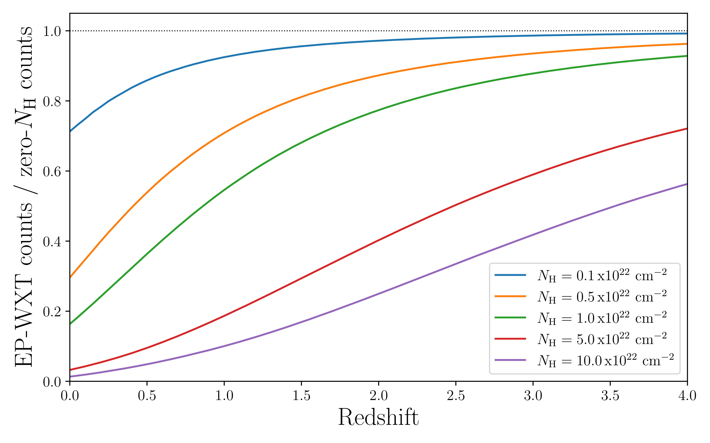
图注：Simulated ratio of counts received by the EP-WXT (0.5--4~keV) from a source with different $N_\mathrm{H}$ values in the range $10^{21}$~cm$^{-2} \leq N_{\mathrm{H}} \leq 10^{23}$~cm$^{-2}$ to counts from the same source with $N_\mathrm{H} = 0$ as a function of redshift.
对应解读：建议重点查看的图表第4项“EP-WXT 预期计数随红移的模拟图”；关键图表逐图导读图5；模型拟合段落中关于宿主吸收柱密度 \(N_H\)、红移 z 与仪器响应折叠后计数的选择效应讨论。
入选理由：这是全文最直接支撑核心结论的图：横轴为红移，纵向量为不同 \(N_H\) 下 EP-WXT 0.5--4 keV 接收计数相对无吸收情形的比例，正好检验强吸收事件在低红移计数被显著压低、在中高红移因 K 修正相对恢复的选择函数。相比个例随访图，它更能说明“暗 FXT 红移分布受软 X 射线气体吸收强烈影响”的物理机制。
来源与置信度：\(arxiv_source\)；high；\(arxiv_source\) / \(main_mnras.tex\):figure[4]
Fig03
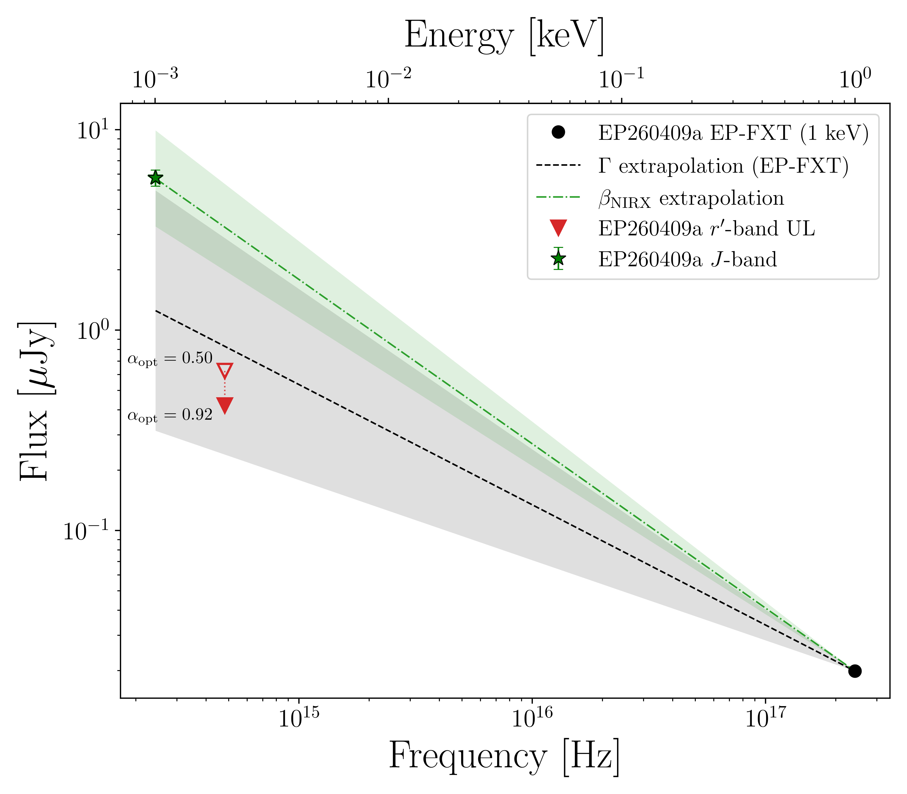
图注：SED for \(\targettwo{}\) at the time of the $J$-band epoch #5 (\(\tzerottwo{}\)$+6.64$~h). The $r^\prime$-band extrapolations using $\alpha=0.50$ and $\alpha=0.92$ ($F_{\nu} \propto t^{-\alpha}$) are shown as open and filled red triangles, respectively. The $J$-band photometry is shown as a green star and the interpolated monochromatic flux (1~keV) is shown as a black dot. The dashed-black and dot-dashed-green lines indicate the extrapolated X-ray power law to the optical wavelengths with indices $\Gamma$ and ($1+\beta_{\mathrm{NIRX}}$), respectively. The extrapolated flux using the photon index uncertainties are marked as grey and green cones.
对应解读：建议重点查看的图表第2项“EP260409a 的多波段对应体图或 SED”；关键图表逐图导读图3；详细解读中关于 EP260409a 光学未探测、近红外探测以及 z\gtrsim4 解释的段落。
入选理由：该图直接展示 EP260409a 在 r' 波段上限、J 波段探测和 1 keV X 射线通量之间的 SED 关系，并给出不同时间衰减指数下的光学外推以及 X 射线到光学的谱外推。它是判断光学 dropout 与近红外 detection 是否支持高红移或高消光情景的关键证据。
来源与置信度：\(arxiv_source\)；high；\(arxiv_source\) / \(main_mnras.tex\):figure[3]
Fig02
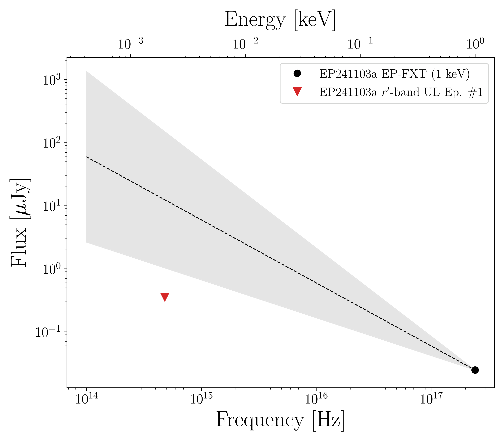
图注：Spectral Energy Distribution (SED) for \(\targetone{}\) at the time of our first optical observation ($\sim 5$~h after the EP-WXT trigger). We show the $r^\prime$-band 3$\sigma$ upper limit (red triangle) and the monochromatic (1 keV) X-ray flux derived from the interpolation of the X-ray light curve to the time of the optical observation (black circle). The dashed-black line indicates the extrapolated X-ray flux to optical wavelengths (see Sec.~\ref{secResultsSED}) and the cone-shaped region (grey) denotes the uncertainty range obtained by extrapolating the flux using the uncertainty of the best-fit power-law index. The $r^\prime$-band upper limit lies well below the flux predicted by the extrapolation.
对应解读：建议重点查看的图表第1、6项中关于 EP241103a 光学未探测与 X 射线约束自洽性的部分；关键图表逐图导读图2；详细解读中关于 EP241103a 高消光导致光学对应体不可见的段落。
入选理由：该图把 EP241103a 的 r' 波段 3σ 上限与同时刻插值得到的 1 keV X 射线通量放在同一 SED 中，并显示从 X 射线幂律外推到光学的预期通量及不确定范围。光学上限显著低于外推值，是判定其为“暗”事件并需要消光或高红移解释的重要观测依据。
来源与置信度：\(arxiv_source\)；high；\(arxiv_source\) / \(main_mnras.tex\):figure[2]
Fig01
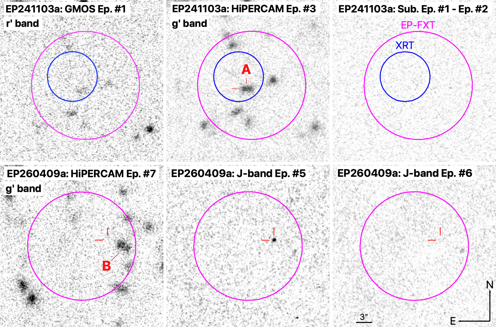
图注：Optical finder charts of \(\targetone{}\) (top row) and \(\targettwo{}\) (bottom row). Circles denote the uncertainty on the X-ray source position for EP-FXT (magenta) and \(\textit{Swift}-XRT\) (blue). The dimensions and orientation are the same in the six panels, as indicated in the bottom-right panel. \(\textit{\targetone{}}\): \(\textit{Left}\): The epoch #1 GMOS $r^\prime$-band image. \(\textit{Centre}\): The epoch #3 HiPERCAM $g^\prime$-band image. The host galaxy candidate inside the \(\textit{Swift}-XRT\) uncertainty region is labelled as A. \(\textit{Right}\): The image resulting from subtraction of the epochs #1 and #2 GMOS $r^\prime$-band images. \(\textit{\targettwo{}}\): The position of the near-infrared counterpart is marked with two red lines in the three panels. \(\textit{Left}\): The epoch #7 HiPERCAM $g^\prime$-band image. The extended object near the counterpart is labelled as B. \(\textit{Centre and right}\): J-band images from epochs #5 and #6. We note that the counterpart is detected in epoch #5 but not in epoch #6.
对应解读：建议重点查看的图表第1项“EP241103a 的 X 射线定位图”和第2项“EP260409a 的多波段对应体图”；关键图表逐图导读中关于 finder 图、定位误差圈、光学未探测和近红外对应体的部分。
入选理由：该图给出两个事件的光学/近红外 finder charts、EP-FXT 与 Swift-XRT 定位误差圈，以及 EP260409a 近红外对应体在 J 波段一次探测一次未探测的图像证据。它有助于判断非探测是否可能由定位不准造成，并直观支持 EP260409a 存在近红外暂现对应体。
来源与置信度：\(arxiv_source\)；high；\(arxiv_source\) / \(main_mnras.tex\):figure[1]
强相关工作
这篇工作与暗 GRB 文献直接相关，但给出了一个重要区别：暗 GRB 的暗通常在触发后由光学/近红外余辉缺失定义，而软 X 射线 FXT 的触发本身就受宿主气体吸收影响。可检索关键词包括 “dark gamma-ray bursts optical extinction”, “GRB host absorption \(N_{\rm H}\)”, “X-ray absorption K correction high redshift”, “Einstein Probe fast X-ray transients”。
它也应放在 FXT 发现和分类工作的背景下阅读，尤其是 Chandra/XMM 偶然 FXT、Swift J1644+57 类高能暂现、低亮度 GRB 和离轴喷流讨论。相反观点或潜在张力在于：部分暗 FXT 可能并非高红移强吸收爆发，而是低红移但光学内禀弱、随访太晚、定位混淆或非 GRB 类源。后续需要通过更大样本的红移测量和统一选择函数来检验本文预测。
同一事件 / 同类源线索：
相似工作：
基础理论 / 方法工作：
相反观点 / 张力线索：
（未提供）
6. Impact of uncertainties on the cosmic optical and infrared backgrounds on the propagation of astroparticles
- 来源：arXiv / astro-ph.HE
- 链接：https://arxiv.org/abs/2609.15896v1
- 作者：Lucas Gréaux, Antonio Condorelli, Leonel Morejon, Karl-Heinz Kampert, Jonathan Biteau
- 评分：novelty 7/10，importance 8/10，relevance 9/10，final 9.05/10
- 推荐理由：直接涉及VHE伽马射线和UHECR在EBL/CIB中的传播不确定性，对外河源谱重建、CTA时代伽马吸收和UHECR成分推断都有实用影响；结论指出低红移背景光已非主导误差源，值得保留。
中文题目：宇宙光学和红外背景不确定性对天体粒子传播的影响
做了什么：这篇文章重新评估了宇宙光学—红外背景光，即常说的河外背景光，对两类高能信使传播的影响：能量高于 \(100\,\mathrm{GeV}\) 的甚高能伽马射线，以及能量高于 \(1\,\mathrm{EeV}\) 的超高能宇宙线。作者没有简单比较所有历史模型，而是先用近期测量筛选出仍合理的背景光模型，再把这些模型用于计算伽马射线吸收、宇宙线光致相互作用和成分演化的差异。核心结论是：在低红移宇宙 \(z<0.1\) 中，目前光学和红外背景的不确定性已经不再是解释伽马源谱形和超高能宇宙线成分的主导误差源。对下一代伽马射线和宇宙线观测而言，这意味着源模型、磁场、注入谱和探测器系统误差将比背景光模型更值得优先攻克。
为什么重要：背景光是高能伽马射线和超高能宇宙线从源到地球途中不可绕开的传播介质。过去很长时间里，\(\gamma\gamma\) 成对产生、光致核反应和能量损失的计算都受限于河外背景光模型差异；这会直接影响我们从观测谱反推出源内加速机制、内禀光度和宇宙线质量组成。这篇文章的重要性在于，它把问题从“背景光到底是多少”推进到“现有背景光不确定性在实际传播推断中还占多大权重”。如果结论成立，低红移高能天体物理的误差预算需要重新排序。
理论 / 观测 / 仪器方法价值：对理论建模而言，本文给出一个实用信息：在 \(z<0.1\) 的近邻宇宙，传播模型中背景光的不确定性可以被更严格地边缘化处理，而不必把它当作主要自由度。对观测解释而言，CTA、LHAASO、SWGO、Pierre Auger Observatory 和 Telescope Array 等实验在分析近邻源时，可以把更多精力放在仪器响应、源内吸收、宇宙线核种注入和磁场传播上。对方法而言，本文的价值不只是给出一个模型排名，而是展示了如何用近期背景光测量约束可接受模型集合，再把模型集合传播到可观测量的不确定性。
为什么应该关注：如果你研究 TeV 源、AGN、星暴星系、伽马射线暴余辉、宇宙线成分，或者做多信使传播模拟，这篇文章会影响你如何设置系统误差。它告诉你：对近邻宇宙的很多问题，继续把河外背景光当作最大未知量可能已经过时；真正限制物理解释的，可能是源的内禀谱、红移演化、磁场偏转、核物理截面或实验能标。换句话说，这篇文章帮你判断在下一代数据到来之前，模型改进应该优先投向哪里。
展开详细解读：文章讲解、背景、理论、重点章节、图表与相关工作
文章详细讲解
科学问题：高能粒子在宇宙中不是在真空中自由飞行。甚高能伽马射线会与光学、近红外和远红外背景光发生 \(\gamma\gamma\rightarrow e^+e^-\) 成对产生，导致远处源的 TeV 谱被指数吸收；超高能宇宙线原子核会与微波背景和河外背景光发生光致介子产生、Bethe-Heitler 对产生以及光致核裂解，改变到达地球的能谱和质量组成。过去背景光模型之间差异较大，传播计算中常把它视为主要系统误差之一。本文问的是：在近期直接测量、星系计数和综合建模已经收紧的情况下，这个系统误差还是否主导低红移宇宙的高能信使解释。
作者怎么做：论文首先整理当前可用的宇宙光学和红外背景模型，并不是无差别地把所有模型都放入传播计算，而是用最近的测量约束筛选出与数据最相容的一组模型。随后，作者比较这些模型给出的背景光强度、光子数密度和随红移演化的差异，并把这些差异传播到两类观测量：一类是 VHE 伽马射线的光学深度 \(\tau_{\gamma\gamma}(E,z)\) 和吸收因子 \(\exp[-\tau_{\gamma\gamma}]\)，另一类是 UHECR 的能量损失长度、核种生存概率以及到达地球的成分重构。这样做的关键是把“背景光强度图上的不确定性”翻译成“源谱和组成推断中的不确定性”。
关键结果：论文的主要结论是，对于低红移 \(z<0.1\) 的源，当前光学和红外背景光模型之间的剩余差异，对 VHE 伽马射线吸收和 UHECR 成分演化的影响已经相对温和，不再是限制源物理解释的首要因素。对伽马射线来说，模型差异仍会在特定能区留下可见影响，尤其是在 TeV 到几十 TeV、成对产生靶光子对应近红外到中红外波段时；但对近邻源谱重构而言，这种差异通常小于内禀谱假设、能标误差或源内吸收造成的影响。对 UHECR 来说，背景光仍参与中等能量段的光致核裂解，但在近邻传播和当前成分测量精度下，其不确定性也不再压倒注入成分、源演化和核反应截面等因素。
局限和下一步：本文结论最稳健的区域是低红移宇宙，尤其是 \(z<0.1\)。若研究更高红移的 blazar、GRB 或早期星系形成历史，背景光的红移演化不确定性仍然可能放大。其次，UHECR 传播还强烈依赖光核反应截面、源分布、银河和河外磁场以及探测器能标，这些因素与背景光不确定性之间存在退化。下一步值得做的是把本文筛选后的背景光模型作为传播推断中的先验族，联合 CTA/LHAASO 的伽马谱、AugerPrime 的成分测量和多信使源关联，建立真正的联合似然框架，而不是逐个信使分开讨论。
关键结果是怎么做出来的
本文的证据链从样本选择开始：作者面对的是一组已有宇宙光学—红外背景光模型，而不是新的望远镜观测源表。关键选择步骤是把历史上流行但已明显偏离近期测量或星系计数约束的模型排除，只保留与当前背景光重构相容的模型。这个筛选动作很重要，因为如果把早期高背景光模型和低背景光模型都纳入，传播不确定性会被人为夸大，无法代表 \(2026\) 年左右真实的知识状态。
对 VHE 伽马射线部分，作者比较的是不同背景光模型给出的光学深度 \(\tau_{\gamma\gamma}(E,z)\) 和透过率 \(\exp[-\tau_{\gamma\gamma}(E,z)]\)。样本量在这里不是“多少个源”，而是模型集合、能量网格和红移网格。读者应重点看论文中随能量和红移变化的 \(\tau_{\gamma\gamma}\) 比较图：如果模型带宽在 \(z<0.1\) 的 TeV 能段很窄，就说明背景光误差对近邻源内禀谱恢复的影响有限；如果在几十 TeV 或更高红移处带宽扩大，则说明结论不能无条件外推。
对 UHECR 部分，证据链通常体现在能量损失长度、相互作用率、光致核裂解路径长度和到达组成的比较。作者关心的是：把同一注入谱、同一核种组成和同一源分布放入不同背景光模型后，地球处预测的能谱和质量组成是否发生足以改变物理解读的差异。若不同背景光模型导致的 \(\langle X_{\max}\rangle\)、\(\sigma(X_{\max})\) 或核种分数变化小于当前实验和模型系统误差，则可支持“背景光不是主导误差源”的结论。
显著性或置信度在这篇工作中更接近系统误差包络和模型比较，而不是发现型统计显著性。作者的逻辑不是宣称某个 \(5\sigma\) 信号，而是通过受测量约束的模型族传播，量化可观测量的模型散布。读者应该检查论文是否给出模型间相对差异、包络范围、与观测误差条的对比，以及是否把背景光差异和其他已知系统误差并列比较。只有当背景光模型带明显小于观测或源模型误差时，“不再主导”的表述才有实际含义。
主要稳健性检验应包括：改变可接受背景光模型集合后结论是否保持；分别考察光学、近红外和远红外波段对不同能量粒子的贡献；检查 \(z<0.1\) 与更高红移结果是否分开陈述；对 UHECR 是否考虑不同核种、不同注入硬度和不同最大刚度。读者尤其要注意不要把近邻宇宙结论误读成全红移结论，也不要把背景光不确定性降低误读成传播模型已经无系统误差。
展开背景、理论、公式、模型、章节和图表导读
背景知识
研究对象是宇宙光学和红外背景，通常称为河外背景光或 \(\mathrm{EBL}\)。它由宇宙历史上恒星直接辐射的紫外—光学—近红外光，以及被尘埃吸收后再辐射的中红外—远红外光组成。它不像 \(\mathrm{CMB}\) 那样接近完美黑体，也不像单个星系谱能量分布那样容易分辨；它是所有未解析和已解析星系辐射的宇宙积分，因此同时携带恒星形成史、尘埃吸收、星系演化和宇宙学体积效应的信息。
历史问题在于 \(\mathrm{EBL}\) 很难直接测量。太阳系黄道光、银河前景、弥散星光和仪器杂散光都能压过真正的河外背景信号。因此很长时间里，直接测量、星系计数下限和星系形成模型之间存在张力。对高能天体物理而言，这种张力很麻烦：同一个 TeV blazar 谱，可以被解释为源内禀谱很硬，也可以被解释为传播吸收较强；同一组 UHECR 成分数据，也可能因背景光导致的光致核裂解率不同而对应不同注入组成。
观测背景近年来发生变化。一方面，深场星系计数、多波段巡天和红外望远镜数据让 \(\mathrm{EBL}\) 下限更可靠；另一方面，Fermi-LAT、H.E.S.S.、MAGIC、VERITAS 和 LHAASO 等高能观测通过伽马射线吸收给出独立约束。虽然不同方法仍有系统误差，但可接受模型的空间已经明显收缩。因此现在值得重新评估传播误差预算：过去合理的“背景光主导不确定性”说法，在低红移和当前模型集合下未必仍成立。
该领域常见误区之一是把 \(\mathrm{EBL}\) 看成一个单一归一化参数。实际上，不同能量的伽马射线或宇宙线与不同波长的背景光相互作用，谱形比总能量密度更关键。另一个误区是把伽马射线吸收与 UHECR 光致核裂解混为一谈：二者都依赖背景光子场，但相互作用阈值、截面、核种依赖和可观测后果完全不同。还有一个误区是忽视红移范围，\(z<0.1\) 的近邻源结论不能自动推广到 \(z\sim1\) 的 blazar 或早期宇宙星形成研究。
基础理论 / 方法脉络
最基本的物理图像是阈值相互作用。高能伽马光子遇到低能背景光子，只要质心能量足以产生一对电子和正电子，就会被吸收。因为阈值条件把高能光子能量与靶光子波长联系起来，\(\mathrm{TeV}\) 伽马射线最敏感于近红外到中红外背景。这就是为什么 TeV blazar 谱不仅是源物理探针，也是 \(\mathrm{EBL}\) 探针。
UHECR 的情况更复杂。质子在最高能端主要受 \(\mathrm{CMB}\) 上的光致介子产生影响，形成 Greisen-Zatsepin-Kuzmin 型能谱压低；原子核还会通过光致核裂解逐步失去核子，导致质量组成随传播距离和能量变化。光学—红外背景对某些能量和核种尤其重要，因为在原子核静止系中，背景光子能量可落入巨偶极共振区，从而触发核裂解。
本文使用的核心假设是：宇宙背景光模型给出随波长和红移变化的光子数密度 \(n(\epsilon,z)\)，粒子传播中的相互作用率可由该光子场与相应截面卷积得到。对伽马射线，可观测量主要是光学深度和透过率；对 UHECR，可观测量是能量损失长度、相互作用长度、核种转移概率，以及最终能谱和质量组成指标。
常见退化包括：伽马射线内禀谱曲率与 \(\mathrm{EBL}\) 吸收曲率退化，源内吸收与河外吸收退化，仪器能标误差与谱截止能量退化。UHECR 方面，背景光不确定性与最大刚度 \(R_{\max}\)、注入谱指数、源演化、磁场传播时间延迟和光核反应截面退化。本文的实际贡献就是估计在近期 \(\mathrm{EBL}\) 约束下，这些退化中 \(\mathrm{EBL}\) 这一项是否仍然占主导。
从数据分析角度看，本文更像系统误差传播研究，而不是单一模型拟合。作者通过比较多个被近期观测允许的 \(\mathrm{EBL}\) 模型，构造传播可观测量的模型包络。这个包络可以被理解为实际分析中的背景光先验不确定性，后续可在源谱拟合、UHECR 组成拟合或联合多信使似然中边缘化。
公式与推导
第一步是把背景光强度写成光子数密度。若 \(I_\epsilon(\epsilon,z)\) 是每单位能量、每单位立体角的背景光强度，则各向同性场的光子数密度可写成
这里 \(\epsilon\) 是背景光子能量，\(z\) 是红移，\(c\) 是光速。这个式子把观测或模型给出的 \(\mathrm{EBL}\) 谱能量分布转换为传播计算真正需要的靶光子密度。
第二步是伽马射线成对产生的阈值。两光子碰撞的不变量为
其中 \(E\) 是高能伽马光子能量，\(\mu=\cos\theta\)，\(\theta\) 是两光子夹角。成对产生要求
其中 \(m_e\) 是电子质量。这个条件说明，对给定 \(E\)，最有效吸收来自满足阈值附近的 \(\epsilon\) 或波长区间。
第三步是伽马射线光学深度。对来自红移 \(z_s\) 的源，光学深度可写成
其中 \(E_0\) 是观测能量，传播途中能量为 \(E=E_0(1+z)\)，\(dl/dz\) 是宇宙学线元，\(\sigma_{\gamma\gamma}\) 是成对产生截面。不同 \(\mathrm{EBL}\) 模型的差异通过 \(n(\epsilon,z)\) 进入该积分。
第四步是把光学深度连接到观测谱。若源内禀微分通量为 \(F_{\rm int}(E)\)，观测通量为
这个式子是伽马射线部分的核心诊断：背景光不确定性越大，\(\tau_{\gamma\gamma}\) 的模型散布越大，内禀谱恢复越不稳定。
第五步是 UHECR 光致相互作用率。对洛伦兹因子为 \(\Gamma\) 的原子核，在各向同性背景光中，相互作用率可写成
这里 \(A\) 是质量数，\(\epsilon'\) 是原子核静止系中的光子能量，\(\sigma_A\) 是光核截面，\(\kappa_A\) 是非弹性或核子损失相关因子。该式说明 \(\mathrm{EBL}\) 谱形会影响不同 \(\Gamma\) 和不同核种的生存概率。
第六步是能量损失长度或相互作用长度。常用诊断量为
\(\lambda_A\) 描述发生一次关键相互作用的典型距离，\(\ell_E\) 描述能量显著衰减的距离。若不同 \(\mathrm{EBL}\) 模型给出的 \(\lambda_A\) 和 \(\ell_E\) 差异小于源距离或实验误差带所需分辨率，则背景光不是主导误差。
第七步是传播方程的简化形式。对某一核种的数密度或通量 \(N_A(E,t)\)，可以写成
其中 \(Q_A\) 是源注入项，\(b_A=-dE/dt\) 是连续能损率，最后一项表示更重核裂解产生 \(A\) 的次级核。背景光影响 \(b_A\)、\(t_A\) 和转移时间 \(t_{A'\rightarrow A}\)。
第八步是模型比较或误差包络。对任一传播可观测量 \(O\)，不同允许背景光模型 \(M_i\) 给出
这里 \(N_M\) 是模型数。本文的核心判断可以理解为比较 \(\Delta_O\) 与观测误差、源模型误差和仪器系统误差的大小：若 \(\Delta_O\) 在 \(z<0.1\) 较小，则 \(\mathrm{EBL}\) 不确定性不再主导。
第九步是似然中的边缘化写法。若数据为 \(D\)，源参数为 \(\theta\)，背景光模型为离散先验 \(M_i\)，则可写成
这个式子展示了本文结果的实际用途：在近邻宇宙分析中，\(p(M_i)\) 的选择仍需透明，但其对后验宽度的贡献可能已小于其他系统项。
模型拟合 / 应用方法
这类研究中的拟合对象分两层。第一层是背景光模型与观测约束的相容性，涉及直接背景光测量、星系计数下限、伽马射线吸收约束和星系演化模型。本文重点不是重新拟合完整 \(\mathrm{EBL}\) 历史，而是筛选近期测量允许的模型，并比较这些模型在传播计算中的后果。因此读者应把它看作“模型族条件化后的系统误差传播”，而非单一最佳 \(\mathrm{EBL}\) 参数估计。
第二层是传播模型对伽马射线和 UHECR 可观测量的预测。对伽马射线，拟合量通常包括内禀谱归一化、谱指数、曲率或截止能量，以及背景吸收项。残差应按能量检查：若高能端残差呈现随 \(\tau_{\gamma\gamma}\) 单调增强的结构，可能说明 \(\mathrm{EBL}\) 或内禀谱假设有问题；若残差集中在仪器阈值附近，则可能是有效面积或能标系统误差。
对 UHECR，拟合量通常包括注入谱指数、最大刚度 \(R_{\max}\)、源丰度、源演化和归一化，同时用能谱、\(\langle X_{\max}\rangle\) 与 \(\sigma(X_{\max})\) 约束组成。\(\mathrm{EBL}\) 模型会改变光致核裂解率，从而影响到达核种分布，但这种影响与光核截面、空气簇射强相互作用模型、探测器能标和源距离分布高度退化。本文结论意味着在低红移场景中，边缘化 \(\mathrm{EBL}\) 后的后验扩展可能不是最大项。
参数退化是解读本文时的重点。伽马射线中，较高的 \(\mathrm{EBL}\) 吸收可以被较硬的内禀谱部分抵消；UHECR 中，更强的光致核裂解可以被更重的注入组成或更近的源分布抵消。因此，单独比较最终谱形可能低估退化的复杂性。较好的做法是同时检查物理参数后验、残差结构和模型证据，而不是只看最佳拟合曲线。
模型可能失败的场景包括：源红移高于本文结论主要覆盖的 \(z<0.1\)；源内存在显著局域红外辐射场导致额外吸收；UHECR 源分布强烈非均匀或受磁场筛选；背景光红移演化在高红移处偏离当前模型。实际应用时，可以把本文的模型包络作为低红移传播分析的默认 \(\mathrm{EBL}\) 系统误差，但不应把它替代对源内环境和仪器响应的独立建模。
重点章节 / 结果段落怎么读
数据/模型选择部分应优先阅读。这里决定了论文结论的可信边界：作者纳入了哪些 \(\mathrm{EBL}\) 模型，排除了哪些模型，依据是近期直接测量、星系计数、伽马吸收约束还是综合星系演化重构。读者要特别关注筛选标准是否一致，以及是否存在对某类模型的隐含偏好。
背景光重构比较部分是连接观测和传播的桥。应查看不同模型在光学、近红外、中红外和远红外波段的强度差异，以及这些差异随红移是否扩大。不要只看总强度；对 TeV 伽马射线和 UHECR 光致核裂解来说，起作用的是与阈值条件匹配的波段。
伽马射线传播结果部分应围绕 \(\tau_{\gamma\gamma}(E,z)\)、透过率和内禀谱恢复来读。关键问题是：在 \(z<0.1\) 时，不同 \(\mathrm{EBL}\) 模型导致的吸收差异是否小到不会改变源谱物理解读；在更高能量或更高红移处，差异是否重新变大。
UHECR 传播结果部分应重点看相互作用长度、能量损失长度和组成演化。读者要区分质子主导场景与重核主导场景，因为 \(\mathrm{EBL}\) 对二者的影响机制不同。若论文给出不同核种的比较，应检查铁、氮、硅、氦等核种在不同能量段的模型散布。
讨论和稳健性部分决定“背景光不再主导”这句话能说多远。应看作者是否把 \(\mathrm{EBL}\) 不确定性与仪器能标、源模型、光核截面、空气簇射模型和磁场不确定性作定量或半定量比较。若只证明 \(\mathrm{EBL}\) 模型之间相互接近，而没有与其他误差源比较，结论力度会弱一些。
建议重点查看的图表
-
背景光谱能量分布比较图：看横轴波长或光子能量、纵轴强度，不同模型在光学、近红外和远红外的包络宽度最关键。
-
背景光随红移演化图：重点看 \(z<0.1\) 与更高 \(z\) 的模型散布是否明显不同，避免把低红移结论外推。
-
伽马射线光学深度 \(\tau_{\gamma\gamma}(E,z)\) 图：看不同模型线在 \(100\,\mathrm{GeV}\) 到几十 \(\mathrm{TeV}\) 的分离程度，以及 \(\tau_{\gamma\gamma}=1\) 的能量位置。
-
伽马射线透过率或吸收修正图：检查 \(\exp[-\tau_{\gamma\gamma}]\) 的模型带是否小于典型观测误差，尤其是近邻源。
-
UHECR 相互作用长度或能量损失长度图：按核种看 \(\lambda_A(E)\) 或 \(\ell_E(E)\)，识别 \(\mathrm{EBL}\) 主导和 \(\mathrm{CMB}\) 主导的能区。
-
到达地球成分或质量指标比较图：若有 \(\langle \ln A\rangle\)、\(\langle X_{\max}\rangle\) 或核种分数，应看模型差异是否小于实验和簇射模型系统误差。
-
误差预算或相对差异图：最能支撑论文主结论的是把 \(\mathrm{EBL}\) 模型散布与其他不确定性并列显示的图或表。
-
附录稳健性表：检查模型筛选、不同源距离、不同核种和不同注入参数下结论是否保持。
关键图表逐图导读
图 1：通常应是 \(\mathrm{EBL}\) 强度或谱能量分布比较。横轴可能是波长 \(\lambda\) 或光子能量 \(\epsilon\)，纵轴是 \(\nu I_\nu\) 或等价强度。数据点可能来自星系计数下限、直接测量或高能吸收约束，模型线代表不同 \(\mathrm{EBL}\) 重构。读图陷阱是不要把直接测量的高值全部当作真实河外背景，因为前景扣除可能主导误差。
图 2：应关注模型筛选后的背景光包络。若图中同时给出被排除模型和保留模型，读者要看近期测量如何压缩模型空间。横轴不同波段对应不同传播过程：近红外更影响 \(\mathrm{TeV}\) 伽马射线，中远红外对更高能伽马射线和部分 UHECR 光致核裂解更重要。陷阱是只看归一化而忽视谱形。
图 3：伽马射线光学深度 \(\tau_{\gamma\gamma}\) 随能量的曲线最关键。横轴是观测能量 \(E\)，纵轴是 \(\tau_{\gamma\gamma}\)，不同颜色可能代表红移或背景光模型。\(\tau_{\gamma\gamma}=1\) 附近对应宇宙对该能量开始显著不透明的位置。若 \(z<0.1\) 的模型线紧密，而高红移处分散，说明论文结论具有明确红移边界。
图 4：透过率 \(\exp[-\tau_{\gamma\gamma}]\) 或吸收后谱形图应与观测误差联系起来读。纵轴若是通量，需区分内禀谱模型线和传播后模型线；若是相对差异，则看不同 \(\mathrm{EBL}\) 模型造成的百分比变化。陷阱是指数吸收会放大小的 \(\tau_{\gamma\gamma}\) 差异，尤其在 \(\tau_{\gamma\gamma}\gg1\) 处，但那里观测通量也可能极低。
图 5：UHECR 能量损失长度或相互作用长度图通常以能量 \(E\) 为横轴、长度为纵轴。不同核种曲线应分开读，因为质子、氦、氮、硅、铁的阈值和截面不同。若不同 \(\mathrm{EBL}\) 模型曲线在近邻传播相关能区接近，就支持背景光不主导的说法。陷阱是 \(\mathrm{CMB}\) 和 \(\mathrm{EBL}\) 的贡献可能叠加，不能把总损失长度变化全归因于 \(\mathrm{EBL}\)。
图 6：组成演化或到达质量指标图应看 \(\langle \ln A\rangle\)、核种分数、\(\langle X_{\max}\rangle\) 或 \(\sigma(X_{\max})\) 的模型带。坐标轴若是能量，需关注 Auger 或 TA 最高统计权重的能区。主要结论应是 \(\mathrm{EBL}\) 模型差异相对于实验系统误差是否足够小。陷阱是空气簇射强相互作用模型本身会改变 \(X_{\max}\) 到质量组成的映射。
图 7：如果论文有误差预算图或表，这是判断标题结论的核心。它应把 \(\mathrm{EBL}\) 不确定性与源参数、能标、截面、磁场或统计误差比较。读者应看作者是否在同一可观测量、同一能区、同一红移范围内比较这些误差，否则不同误差源的大小不可直接相加。
论文原图 / 可嵌入图片
Fig09
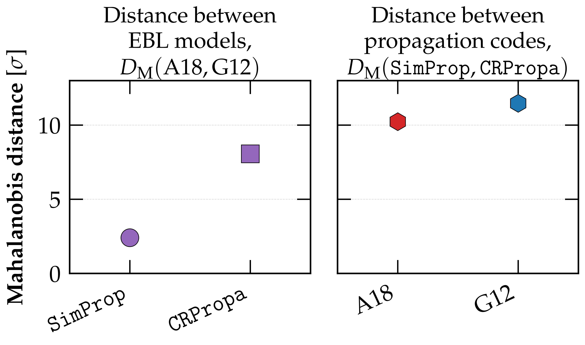
图注：Mahalanobis distances between the different reconstructions schemes. \(\textit{Left}\): Distances obtained by changing the EBL model used, for a fixed propagation code. \(\textit{Right}\): Distances obtained by changing the propagation code used, for a fixed EBL model.
对应解读：对应“误差预算或相对差异图”以及模型拟合段落中关于 EBL 不确定性是否仍为主导误差源的讨论。
入选理由：这张图直接比较更换 EBL 模型与更换传播代码造成的 Mahalanobis 距离，是最接近论文主结论的误差预算图。它能把 EBL 模型散布放在其他传播系统误差旁边比较，比单独展示谱线或拟合残差更能支撑“低红移宇宙中 EBL 不再主导不确定性”的判断。
来源与置信度：\(arxiv_source\)；high；\(arxiv_source\) / main.tex:figure[9]
Fig01
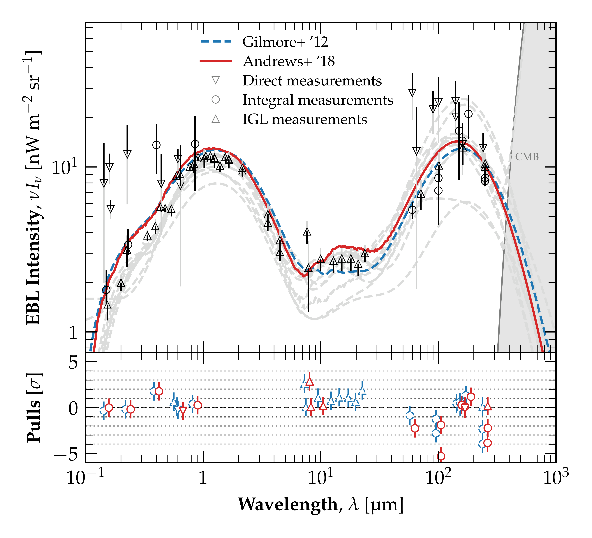
图注：\(\textit{Top:}\) Intensity of the COB and the CIB as a function of wavelength $\lambda$. Measurements of the IGL are shown with upward-pointing triangles \(\citep{Milliard:1992A&A...257...24M, Driver:2016ApJ...827..108D, Duivenvoorden:2020MNRAS.491.1355D, Koushan:2021MNRAS.503.2033K, Windhorst:2023AJ....165...13W, Kim:2024MNRAS.527.5525K, Tompkins:2026MNRAS.547ag044T},\) direct EBL measurements with downward-pointing triangles \(\citep{Murthy:1989ApJ...336..954M, Murthy:1990A&A...231..187M, Martin:1991ApJ...379..549M, Brown:2000AJ....120.1153B, Finkbeiner:2000ApJ...544...81F, Odegard:2007ApJ...667...11O, Matsuoka:2011ApJ...736..119M, Matsuura:2011ApJ...737....2M, Postman:2024ApJ...972...95P},\) and integral measurements with circles \(\citep{Juvela:2009A&A...500..763J, Marsden:2009ApJ...707.1729M, Penin:2012A&A...543A.123P, Mattila:2017MNRAS.470.2152M, Chiang:2019ApJ...877..150C, Chiang:2025ApJ...992...65C, Haikala:2026A&A...706A.358H}.\) Measurements contaminated by zodiacal light have been omitted \(\citep\)[see][]{Biteau_2025}. The selected models, with the smallest deviance with respect to the data, are shown in dashed blue \(\citep{Gilmore_2012},\) and solid red \(\citep{Andrews_2018}.\) Other models that are in tension with observations are shown in dashed gray \(\citep{Franceschini_Rodighiero_2017, Baes_2019, Lagos_2019, Khaire_Srianand_2019, SaldanaLopez_2021, Koushan:2021MNRAS.503.2033K, Finke_2022, PorrasBedmar_2025}.\) For a quantitative comparison of deviances, see Table \(\ref{tab:ebl_deviance}.\) \(\textit{Bottom:}\) Normalized difference between the data and the selected EBL models. The points have been offset along the x-axis for clarity. The code and data are available in \(\citet{biteau_jonathan_2023_7842239}.\)
对应解读：对应“背景光谱能量分布比较图”、关键图表导读中的图 1/图 2，以及背景光模型筛选段落。
入选理由：图中给出 COB/CIB 强度随波长的分布、观测数据、被选中的 G12 与 A18 模型、以及与观测张力较大的其他模型，还包含底部归一化残差。它最直接展示当前 EBL 模型包络如何被近期测量压缩，是后续伽马射线和 UHECR 传播不确定性分析的基础。
来源与置信度：\(arxiv_source\)；high；\(arxiv_source\) / main.tex:figure[1]
Fig02
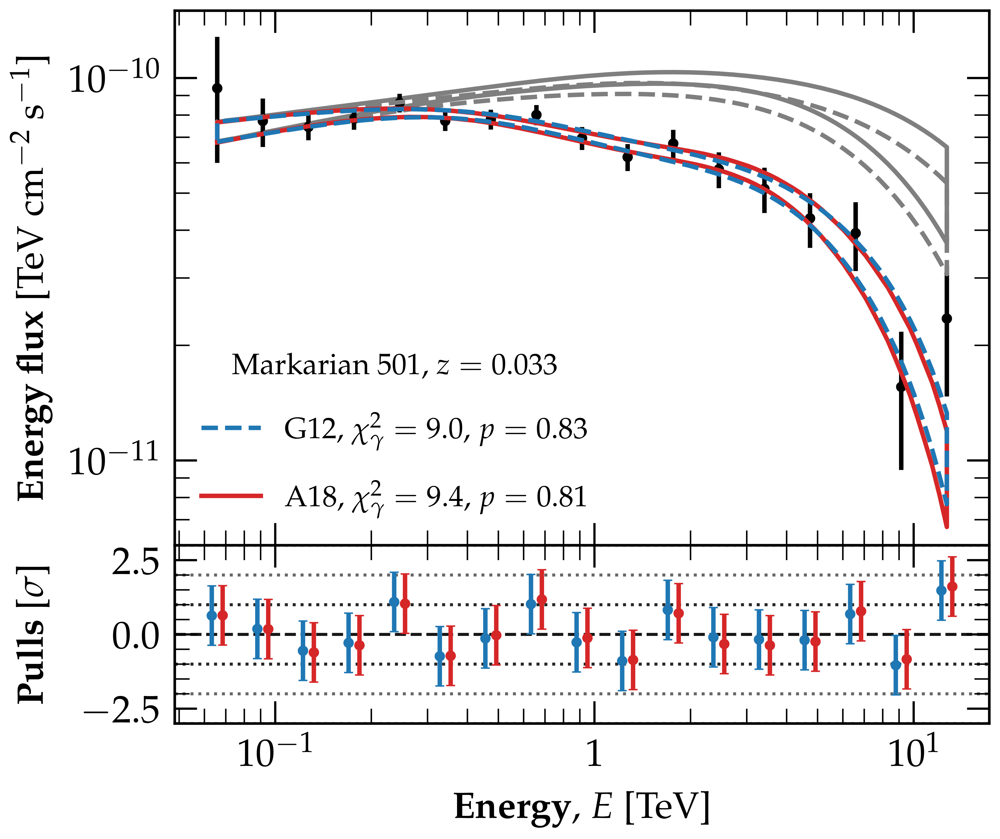
图注：\(\textit{Top}\): Best-fit spectra for a MAGIC observation of the blazar Markarian 501 \(\citep{MAGIC_2020},\) obtained using the two selected EBL models. Each reconstructed spectrum at Earth is shown as a colored bow-tie, corresponding to the $1\sigma$ uncertainty band. The corresponding spectra without EBL absorption are shown in gray. \(\textit{Bottom}\): Normalized difference between the gamma-ray data and the best-fit spectra. The points have been offset along the x-axis for clarity.
对应解读：对应“伽马射线透过率或吸收修正图”和模型拟合段落中关于内禀谱、吸收后谱形及残差的讨论。
入选理由：该图用 Markarian 501 的 MAGIC 观测展示两种筛选后 EBL 模型下的最佳拟合地球端谱、未吸收内禀谱以及底部归一化残差。虽然不是直接的 \(\tau_{\gamma\gamma}\) 曲线，但它把 EBL 吸收差异落实到真实 VHE 伽马射线谱重构中，适合支撑日报关于吸收修正和观测误差比较的解读。
来源与置信度：\(arxiv_source\)；high；\(arxiv_source\) / main.tex:figure[2]
Fig06
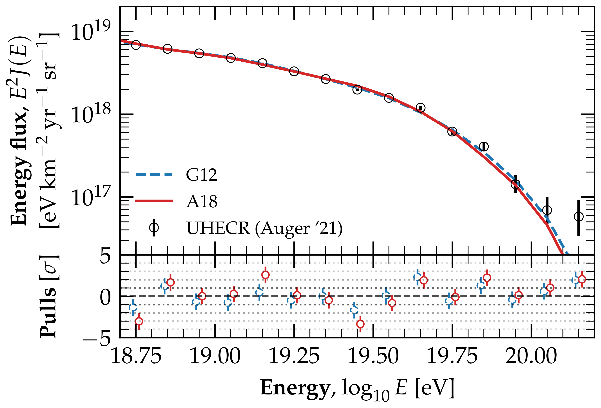
图注：\(\textit{Top}\): UHECR all-particle spectrum at Earth. The black points correspond to the measurements of the Pierre Auger Observatory \(\citep{PierreAuger:2021hun},\) and the curves to the all-particle spectra reconstructed using the propagation code \(\texttt{SimProp}\) with the specified EBL model. \(\textit{Bottom}\): Normalized difference between the UHECR data and the reconstructed spectra. The points have been offset along the $x$-axis for clarity.
对应解读：对应“UHECR 相互作用/传播后可观测量图”和模型拟合段落中关于 UHECR 能谱残差的讨论。
入选理由：图中给出 Pierre Auger all-particle 能谱与不同 EBL 模型、传播代码重构结果的比较，并在底部显示归一化残差。它没有直接画能量损失长度，但能展示 EBL 差异传播到 UHECR 到达能谱后的实际影响，是判断背景光不确定性相对于当前观测残差是否显著的重要图。
来源与置信度：\(arxiv_source\)；high；\(arxiv_source\) / main.tex:figure[6]
Fig07
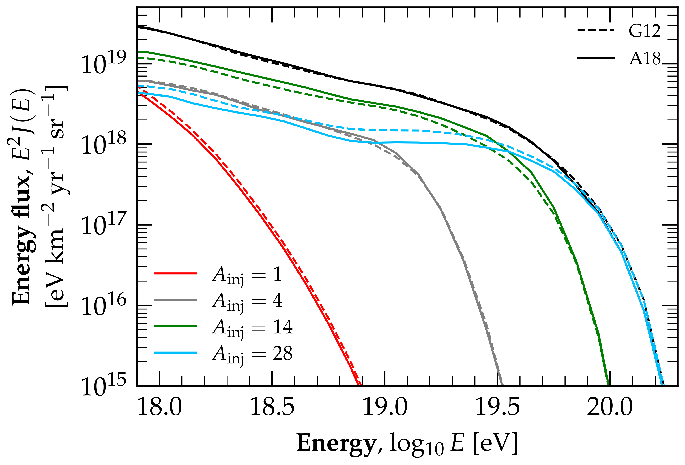
图注：Reconstruction of the contributions of different nuclei injected at the source to the observed spectrum using the \(\texttt{SimProp}\) propagation code. Each color corresponds to an injected mass group: proton in red, helium in grey, nitrogen in green and silicon in blue. Iron fluxes are not reported, as they are found to have a negligible overall contribution to the all-particle flux. The black curves correspond to the reconstruction of the flux measured at Earth, as shown in Figure\,\(\ref{fig:comparison_data}.\)
对应解读：对应“到达地球成分或质量指标比较图”以及 UHECR 组成退化讨论。
入选理由：该图分解不同注入核种对观测能谱的贡献，包括质子、氦、氮、硅等质量组，能够展示 EBL 传播模型变化下源成分重构的稳定性。相比只看总能谱，它更贴近日报中关于成分、注入丰度和光致核裂解退化的解读。
来源与置信度：\(arxiv_source\)；high；\(arxiv_source\) / main.tex:figure[7]
Fig05
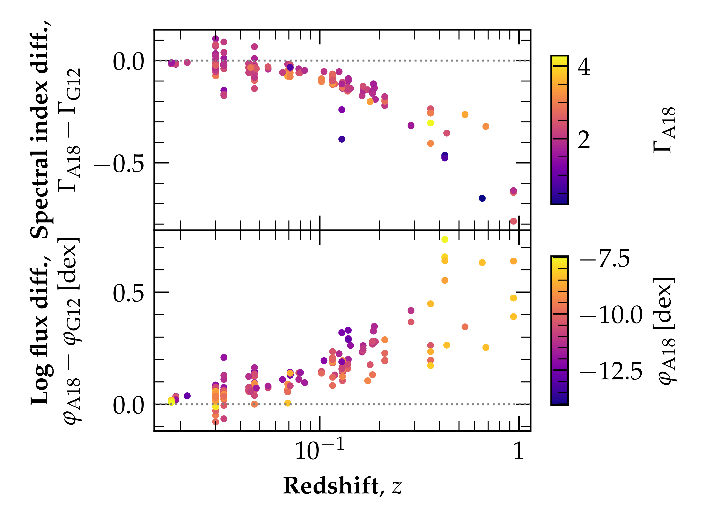
图注：\(\textit{Top}\): Difference in intrinsic spectral indices reconstructed using A18 and G12, as a function of source redshift. \(\textit{Bottom}\): Difference in base-10 logarithm of intrinsic flux (in TeV\,cm$^{-2}$\,s$^{-1}$) reconstructed using A18 and G12. The color of the points correspond to the spectral index and base-10 logarithm of intrinsic flux, computed using A18.
对应解读：对应“背景光随红移影响”和伽马射线模型拟合段落中关于内禀谱参数退化的讨论。
入选理由：图中直接给出使用 A18 与 G12 两种 EBL 模型重构得到的内禀谱指数差异和内禀通量差异，并以源红移为横轴。它适合说明 EBL 选择如何随红移影响伽马射线源参数推断，也能帮助读者理解论文结论为何特别强调低红移范围。
来源与置信度：\(arxiv_source\)；high；\(arxiv_source\) / main.tex:figure[5]
强相关工作
这篇文章与两条研究线直接相连。第一条是 \(\mathrm{EBL}\) 本身的测量和建模，包括星系计数下限、直接背景光扣前景测量、半解析星系形成模型，以及用 blazar TeV 谱吸收反推背景光。检索关键词可用 “extragalactic background light model”, “EBL gamma-ray opacity”, “cosmic optical infrared background”, “galaxy counts EBL”。经典和常用模型包括 Franceschini、Domínguez、Finke、Gilmore、Kneiske、Saldana-Lopez 等系列工作；不同模型对星形成史、尘埃再辐射和红移演化的处理不同。
第二条是高能粒子传播。伽马射线方面，相关工作包括 Fermi-LAT 对宇宙伽马射线视界的测量、H.E.S.S./MAGIC/VERITAS 对 TeV blazar 吸收的约束，以及 CTA 对 \(\mathrm{EBL}\) 和源内禀谱退化的预期研究。UHECR 方面，相关工作包括 CRPropa、SimProp、PriNCe 等传播框架中不同 \(\mathrm{EBL}\) 和光核截面对能谱与组成的影响，以及 Pierre Auger Observatory 对能谱和 \(X_{\max}\) 的联合拟合。检索关键词可用 “UHECR propagation EBL photodisintegration”, “CRPropa extragalactic background light”, “Auger composition source model EBL uncertainty”。
潜在张力来自两个方向。一是某些直接背景光测量曾给出高于星系计数很多的强度，如果这些高值被认为真实，会增强伽马吸收并改变传播结论；但许多研究认为前景扣除仍是关键问题。二是 UHECR 组成解释本来就受强相互作用模型、最大刚度和源分布影响，\(\mathrm{EBL}\) 误差下降并不意味着成分问题解决。本文更合理的定位是“重新排列误差预算”，而不是宣称传播物理已无主要未知。
同一事件 / 同类源线索：
相似工作：
- https://arxiv.org/abs/0805.1841
- https://arxiv.org/abs/1005.4519
- https://arxiv.org/abs/1101.4169
- https://arxiv.org/abs/1202.0846
- https://arxiv.org/abs/2102.08010
- https://arxiv.org/abs/1603.07142
基础理论 / 方法工作：
- https://ui.adsabs.harvard.edu/abs/1966PhRvL..16..748G/abstract
- https://ui.adsabs.harvard.edu/abs/1966JETPL...4...78Z/abstract
- https://ui.adsabs.harvard.edu/abs/1966PhRvL..16.1228G/abstract
- https://ui.adsabs.harvard.edu/abs/1997ApJ...487..529S/abstract
- https://arxiv.org/abs/1106.5508
相反观点 / 张力线索：
7. Modeling Gamma-Ray Bursts Using CRISP
- 来源：arXiv / astro-ph.HE
- 链接：https://arxiv.org/abs/2609.15761v1
- 作者：Leonel Morejon, Therese Paulsen, Karl-Heinz Kampert
- 评分：novelty 7/10，importance 7/10，relevance 10/10，final 9.05/10
- 推荐理由：GRB、UHECR重核源内光强子相互作用和高能中微子谱建模高度契合重点兴趣；CRISP框架用于处理核级联和中微子产额，虽看起来偏方法/会议贡献，但多信使高能天体物理相关性很高。
中文题目：用 CRISP 建模伽马射线暴中的超高能宇宙线核级联与中微子产生
做了什么：这篇文章把新的 CRISP（Cosmic Ray Stochastic Interactions for Propagation）框架用于伽马射线暴辐射区，目标是计算超高能宇宙线如果不是纯质子、而是含有重核成分时，在强光子场中经历光致核裂变和光强子相互作用后产生的中微子谱。核心问题是：Pierre Auger 的组成结果暗示到达地球的超高能宇宙线偏重，那么源内核级联会怎样改变传统伽马射线暴中微子预言。文章的重要性不在于宣布某个已观测中微子事件，而在于提供一个可解析、概率化处理核相互作用链的新建模工具，用来连接伽马射线暴源区物理、超高能宇宙线组成和未来高能中微子观测。
为什么重要：长期以来，伽马射线暴作为超高能宇宙线源的中微子预言常以质子主导的 \({p\gamma}\) 相互作用为基准；但如果源内或到达地球的粒子组成显著偏重，简单质子模型会系统性误估中微子通量、能谱峰值和与电磁辐射区参数的关系。本文把重核的光致核裂变、碎片级联和后续光强子过程纳入同一个随机相互作用框架，对解释 IceCube 非探测约束、未来 Gen2 级探测器灵敏度，以及 Auger 组成结果与瞬变源模型之间的张力都有直接意义。
理论 / 观测 / 仪器方法价值：方法价值在于 CRISP 试图用解析概率描述替代完全黑箱式蒙特卡洛传播，计算核种在辐射场中的相互作用、碎裂和中微子产额。理论上，它让伽马射线暴源内的核级联问题可以更系统地扫描参数空间，例如辐射区半径、洛伦兹因子、光子谱、最大刚度和注入核种。观测上，它给出的是可与高能中微子上限、伽马暴叠加搜索以及超高能宇宙线组成共同比较的谱预言，而不只是单源光变曲线拟合。
为什么应该关注：如果你关心伽马射线暴是否还能作为超高能宇宙线源，或者关心为什么 IceCube 没有看到经典火球模型预言的强伽马暴中微子信号，这篇文章值得看。它提醒我们：非探测不只是在排除源功率，也可能是在排除过于简化的质子组成和相互作用假设。对于做多信使建模的人，它提供了一个把重核传播、光子场和中微子产额放进同一计算链的入口。
展开详细解读：文章讲解、背景、理论、重点章节、图表与相关工作
文章详细讲解
科学问题：本文讨论的是伽马射线暴内部或近源辐射区能否同时加速超高能宇宙线并产生可观测高能中微子。传统图像中，中微子主要来自质子与伽马暴光子场的 \({p\gamma}\) 相互作用，产生 \({\Delta}\) 共振、介子以及随后衰变的中微子。但 Pierre Auger Observatory 对超高能宇宙线组成的解释长期指向在最高能段存在较重成分，这意味着如果伽马射线暴是候选源，源内粒子不能只按质子处理。重核在强光子场中首先往往发生光致核裂变，释放核子和较轻碎片；这些碎片再继续相互作用，形成核级联，并改变最终中微子谱。
作者怎么做：文章提出把 CRISP，即 Cosmic Ray Stochastic Interactions for Propagation，用于伽马射线暴辐射区建模。根据摘要，CRISP 的特点是用解析方法计算超高能宇宙线相互作用的概率描述，而不是只给出经验参数化的能量损失长度。它关注的相互作用包括重核光致核裂变和产生中微子的光强子过程。伽马射线暴在这里被作为一个高光子密度、相对论运动、可能有强磁场和强瞬变辐射的测试环境：同样的光子场既是观测到的伽马辐射来源，也是超高能核发生相互作用的靶场。
关键结果：从摘要可确定，本文的主要产出是推导包含核光强子相互作用贡献的中微子谱，并展示如何在伽马射线暴辐射区中使用 CRISP 计算这类谱。重要物理结论是重核注入不会简单等价于把质子谱乘以质量数或电荷数；核裂变会把能量分配到多个碎片通道，改变每个核子的洛伦兹因子分布，进而移动中微子能量峰和改变总归一化。中微子产额取决于光致核裂变与介子产生两个过程的相对光学深度，因此同一组伽马暴电磁参数可能对应从“核逃逸主导”到“中微子有效产生”的不同区域。
局限和下一步：仅凭摘要无法确认文章是否给出了具体伽马暴样本、单个事件拟合、与 IceCube 上限的数值比较，或完整参数扫描；因此应把它主要视为方法和模型框架文章，而不是观测发现论文。下一步最关键的是把 CRISP 的预言与已有伽马暴叠加中微子搜索、Auger 能谱与组成拟合、以及电磁辐射区约束联合起来。还需要检查它对核截面、光子谱形、辐射区几何、逃逸时间和磁场冷却的系统误差处理，因为这些因素会显著改变中微子谱。
关键结果是怎么做出来的
这篇文章的证据链应从输入物理量而不是观测事件数开始读。它不是报告某个 IceCube 事件与伽马暴的关联，而是构建计算链：给定伽马射线暴辐射区参数、光子场、宇宙线注入组成和能谱，计算重核在源内发生光致核裂变和光强子相互作用的概率，最后得到中微子能谱。样本量在这里不是天区事件数，而是模型相空间中的核种、能量网格、相互作用通道和源区参数组合。
关键结果的第一层是相互作用概率。读者应查看论文是否给出了核种随时间、距离或光学深度演化的图表：例如初始铁核或中等质量核在不同光子密度下保留为原核、碎裂为轻核、释放核子的比例。若 CRISP 采用解析随机过程描述，支撑结论的核心诊断应是每个通道的平均自由程、分支比、级联矩阵或最终核种分布，而不是单一能量损失曲线。
第二层是中微子谱的形成。作者声称推导包括来自核光强子相互作用的中微子谱，因此应检查谱图中是否区分了初级核、次级核子、碎片再相互作用等贡献。对于重核，单位总能量产生的中微子通常受到每核子能量降低、光致核裂变优先消耗核完整性、以及介子产生阈值移动的共同影响；论文的关键图应展示这些效应如何改变谱峰位置和归一化。
第三层是模型比较。理想情况下，文章应把纯质子注入与重核注入放在相同伽马暴环境下对比，或者把 CRISP 结果与常用传播代码、近似连续能损模型、SOPHIA 类质子光强子结果进行交叉检查。显著性在本文语境中不一定是 \({5\sigma}\) 探测，而可能是模型之间中微子通量差异超过未来探测器灵敏度、或与现有 IceCube 上限的相容性差异。读者应重点看是否有残差、比值图或相对误差带来说明 CRISP 的解析近似精度。
系统误差方面，最需要核查的是光致核裂变截面、光强子多重数、光子谱低能端和高能端、源区洛伦兹因子、变时标、磁场导致的 \({\pi^\pm}\) 与 \({\mu^\pm}\) 冷却，以及宇宙线逃逸模型。稳健性检验应包括改变初始核种、改变最大刚度、改变辐射区紧致度并观察中微子谱是否只发生平滑变化，还是出现定性不同的产额区间。如果论文只给出示例模型而没有系统扫描，结论应理解为框架展示，而不是对伽马暴总体贡献的最终约束。
展开背景、理论、公式、模型、章节和图表导读
背景知识
研究对象是伽马射线暴中的相对论辐射区和其中可能被加速到超高能的宇宙线。伽马暴具有短时标、高光度和非热谱，是早期超高能宇宙线源候选的经典对象。其内部激波、磁重联或喷流耗散区可以提供强电磁场与高光子密度，因此天然适合发生 \({p\gamma}\) 或核光子相互作用。
历史问题在于，经典火球模型曾预言伽马暴应伴随明显的 \({\mathrm{TeV}}\) 到 \({\mathrm{PeV}}\) 量级中微子辐射，IceCube 对大量伽马暴的叠加搜索却没有看到相应强信号。这并不自动排除所有伽马暴模型，因为中微子通量对辐射区半径、洛伦兹因子、质子载能量、光子谱和宇宙线逃逸方式极其敏感。但它已经排除了若干高效率、质子主导、紧致区强相互作用的简单版本。
另一个背景是超高能宇宙线组成。Pierre Auger 的 \({X_{\max}}\) 测量通常被解释为最高能段平均质量逐渐变重，尽管解释依赖高能强子相互作用模型。如果到达地球的是较重核，那么源模型必须解释这些核如何被加速、如何逃出源区并在宇宙传播中不被完全破坏。这与伽马暴内部高光子密度之间存在明显张力：光子场太强会高效产中微子，但也会破坏重核；光子场太弱则利于核逃逸，却降低中微子产额。
为什么现在值得重新看，是因为多信使约束正在收紧。IceCube 及其后续扩展给出中微子上限，Auger 和 Telescope Array 给出能谱、组成和各向异性信息，电磁观测则不断细化伽马暴喷流物理。重核源内相互作用不再是可忽略修正，而是影响是否能同时解释宇宙线和中微子的核心环节。
该领域常见误区包括：第一，把“伽马暴没有被 IceCube 探测到”简单等同于“伽马暴不可能加速宇宙线”；第二，把重核注入近似为 \({A}\) 个独立质子而忽略核裂变链；第三，只看总能量预算而不看光学深度和逃逸条件；第四，把地球处组成直接等同于源注入组成，而忽略宇宙背景光传播中的光致核裂变。本文的价值正是在这些误区之间给出更细的源内级联计算框架。
基础理论 / 方法脉络
基础物理图像是：一个相对论喷流中的辐射区含有高密度非热光子场，同时某种加速机制把带电粒子加速到极高刚度。粒子与光子相遇时，在粒子静止系中光子能量被洛伦兹变换放大；当超过核反应阈值时，就会发生光致核裂变、Bethe-Heitler 对产生或介子产生。对质子而言，介子产生直接给出中微子；对重核而言，光致核裂变往往先改变核种，再通过次级核子和核碎片继续产生中微子。
本文模型的核心假设应是把伽马暴辐射区近似为具有给定光子谱、尺度和相对论洛伦兹因子的相互作用区。宇宙线注入可以用幂律加指数截断描述，最大能量更自然地按刚度标度，即 \({E_{\max}\propto Z}\)。对于核种 \({A,Z}\)，重要的不是总能量 \({E_A}\) 本身，而是每核子能量 \({E_A/A}\) 或核洛伦兹因子，因为核反应阈值主要由洛伦兹因子控制。
观测连接来自两个方向。一方面，中微子望远镜看到的是地球处各味中微子通量或上限，需要把源内产生谱、宇宙学红移和味振荡折算到探测器能区。另一方面，超高能宇宙线观测给出能谱和组成约束，需要源模型能够让足够多核逃逸并在传播后仍符合地球处 \({X_{\max}}\) 解释。强中微子产生和重核保存通常相互竞争，这是本文这类模型最重要的物理退化。
CRISP 的方法意义在于处理相互作用的随机性。单个核在穿过光子场时并不连续、平滑地损失质量数，而是按不同通道概率随机碎裂，生成一组次级核种和核子。解析概率框架如果做得好，可以比直接蒙特卡洛更快地扫描大参数空间，同时保留核级联的离散本质。读者应关心其近似是否仍能保持能量守恒、粒子数守恒和正确的阈值行为。
常见退化和系统误差包括源区光子密度与半径的退化、洛伦兹因子与反应阈值的退化、宇宙线重子负载与探测通量归一化的退化、以及磁场冷却对高能中微子端的影响。核截面在巨偶极共振、多核子发射和高能介子产生区间的不确定性也会传播到最终中微子谱。
公式与推导
第一步，从相对论源区的光子场出发。若观测到的伽马暴各向同性等效光度为 \(L_\gamma\)，辐射半径为 \(R\)，体洛伦兹因子为 \(\Gamma\)，则共动系光子能量密度可近似写为
这里 \(u'_\gamma\) 是共动系能量密度，\(c\) 是光速。这个式子给出源区“紧致度”的第一估计，决定核相互作用是否高效。
第二步，把能量密度转成光子数密度。若共动系光子微分数密度为 \(n'_\gamma(\varepsilon')\)，则
其中 \(\varepsilon'\) 是共动系光子能量。给定 Band 谱或断裂幂律谱后，这个归一化决定光致核裂变和光强子相互作用率。
第三步，核与各向同性光子场相互作用的反应率可写成
这里 \(E'_A\) 是核能量，\(\gamma'_A=E'_A/(A m_p c^2)\) 是核洛伦兹因子，\(\bar{\varepsilon}\) 是核静止系光子能量，\(\sigma_{A,i}\) 是通道 \(i\) 的截面，\(\kappa_{A,i}\) 是非弹性系数，\(\bar{\varepsilon}_{\rm th}\) 是阈值。这个式子是连接光子谱与相互作用概率的核心。
第四步，用光学深度判断相互作用效率。若粒子在共动系停留时间为 \(t'_{\rm dyn}\simeq R/(\Gamma c)\)，则
当 \(f_{A,\rm dis}\ll 1\) 时重核容易逃逸；当 \(f_{A,\rm dis}\gtrsim 1\) 时核级联显著。中微子高效产生通常要求介子产生通道也有不可忽略的 \(f_{A,\pi}\)。
第五步，核级联可以用转移矩阵表示。设 \(N_A(E')\) 是质量数 \(A\) 的核谱，则一次相互作用后的平均演化可写为
其中 \(K_{B\rightarrow A}\) 是从较重核 \(B\) 产生核 \(A\) 的级联核函数。CRISP 的概率描述可以理解为高效计算这类转移过程及其分支。
第六步，宇宙线注入常写成刚度截断形式
这里 \(s\) 是谱指数，\(Z_A\) 是电荷数，\(R_{\max}\) 是最大刚度。该式说明重核可达到更高总能量，但反应阈值仍主要取决于 \(E'/A\)。
第七步，介子衰变给出中微子能量标度。对光强子过程的粗略 \({\Delta}\) 共振近似，单个中微子能量可估为
这里 \(\kappa_\pi\) 是进入带电介子的能量比例。这个标度解释了为什么重核模型的中微子峰相对同总能量质子模型会移动。
第八步，源内产生谱到地球通量的变换为
其中 \(z\) 是红移，\(d_L\) 是光度距离，\(Q'_\nu\) 是共动源内中微子产生率。对源族还需对红移分布和光度函数积分。
第九步，若与中微子望远镜数据比较，期望事件数通常写为
这里 \(T\) 是曝光时间，\(A_{\rm eff}\) 是有效面积。该式把模型谱转成可观测事件数，也是检验模型是否被 IceCube 上限排除的基本接口。
第十步，对无显著探测的情形，泊松似然可写为
其中 \(n\) 是观测事件数，\(b\) 是背景期望。即使本文不做具体数据拟合，这个式子也说明 CRISP 输出的 \(\phi_\nu\) 如何进入未来模型约束和显著性评估。
模型拟合 / 应用方法
这类工作的拟合对象一般不是单一光变曲线，而是多层模型输出：源内核种分布、逃逸宇宙线谱、源内中微子产生谱、地球处中微子通量以及可能的超高能宇宙线组成。可调参数包括宇宙线注入谱指数 \(s\)、最大刚度 \(R_{\max}\)、注入核种比例、宇宙线重子负载、辐射半径 \(R\)、洛伦兹因子 \(\Gamma\)、光子谱断裂能和归一化、磁场强度以及逃逸时间。
似然可以按应用分成几类。若只与中微子上限比较，可用泊松事件数似然或上限排除准则，把模型通量卷积探测器有效面积得到期望事件数。若与超高能宇宙线数据联合拟合，则需同时计算传播到地球的能谱、质量组成指标如 \(\langle X_{\max}\rangle\) 和 \(\sigma(X_{\max})\)，再与 Auger 或 TA 数据构造联合似然。若只展示 CRISP 框架，则更可能使用基准参数模型和参数扫描，而非完整贝叶斯后验。
主要退化关系很强。增大光子密度或减小辐射半径会提高中微子产生效率，但也增强重核破坏；增大 \(\Gamma\) 会降低共动光子能量密度并改变阈值对应的观测能量；提高重子负载可提升中微子通量，但会受伽马暴能量预算和 IceCube 上限限制；改变初始核种可在中微子峰值和逃逸组成上产生相似效应，导致组成与源紧致度退化。
残差诊断应看三类图。第一是相互作用长度或光学深度随能量变化，检查哪些能区由光致核裂变主导、哪些能区由介子产生主导。第二是最终中微子谱与纯质子基准的比值，检查差异是否只是归一化变化还是谱形变化。第三是逃逸核种分布，检查模型是否在产生中微子的同时仍能保留足够重核，否则就难以与重组成解释兼容。
模型可能失败的地方包括：光子场过于简化，忽略多区辐射和时间演化；核反应截面在高能区外推不可靠；解析概率框架若忽略事件间能量关联，可能低估级联谱宽度；磁场冷却若未处理，会高估最高能中微子；源族演化若未纳入，会影响弥散通量预言。实际应用时，应把 CRISP 作为快速扫描和物理理解工具，再用更详细数值模拟或观测似然做交叉验证。
重点章节 / 结果段落怎么读
第一，导论和动机部分应重点看作者如何连接三个事实：天体中微子是光强子相互作用的指示器，Auger 结果暗示超高能宇宙线组成偏重，伽马暴是高光子密度源。这里决定了全文不是传统纯质子伽马暴中微子模型，而是重核源内级联问题。
第二，CRISP 方法部分是最该细读的章节。读者应查清它如何定义相互作用概率、如何处理光致核裂变分支、如何把核碎片继续推进到后续相互作用、以及是否保证能量和核子数守恒。如果有与蒙特卡洛或已有传播工具的对照，应优先阅读。
第三，伽马射线暴辐射区建模部分需要关注输入参数。包括光子谱形、辐射半径、洛伦兹因子、变时标、宇宙线注入谱和组成。不要只看作者选择的“典型参数”，要看这些参数是否对应内部激波、磁重联或光球附近等具体物理区。
第四，中微子谱推导与结果部分是核心。应比较纯质子、轻核和重核情形下的谱峰、总通量和能量范围，尤其看核裂变产生的次级核子是否主导中微子产额。若论文给出不同通道贡献，应检查光致核裂变和介子产生之间的竞争。
第五，讨论和展望部分要看作者如何评价与 IceCube 上限、Auger 组成和未来探测器的关系。若文章没有完整观测拟合，也应看它是否明确指出 CRISP 下一步如何接入源族模型、宇宙传播和探测器响应。
建议重点查看的图表
-
相互作用率或平均自由程图：看 \(t_{A,\rm dis}^{\prime -1}\)、\(t_{A,\pi}^{\prime -1}\) 随核能量的变化，确认在哪些能段重核先碎裂、在哪些能段能有效产介子。
-
核级联产物分布图：看初始重核经过辐射区后各质量数 \(A\) 的分布，尤其是原核保留比例、释放核子比例和中等质量碎片比例。
-
中微子能谱图：比较纯质子、轻核、重核注入的 \(E_\nu^2\phi_\nu\) 曲线，重点看谱峰能量、归一化和高能截止。
-
通道分解图：若有，应看直接核光强子过程、次级核子过程、不同介子衰变链对总中微子谱的贡献，避免把总谱误读为单一物理过程。
-
参数扫描或等值线图：看辐射半径 \(R\)、洛伦兹因子 \(\Gamma\)、光子光度 \(L_\gamma\) 如何改变核存活率和中微子效率，尤其关注“可产生中微子但不完全毁核”的狭窄区域。
-
与观测上限或探测器灵敏度比较图：如果论文给出 IceCube、IceCube-Gen2 或 GRAND 类灵敏度曲线，应看模型谱是否在现有上限下方，以及未来探测器在哪个能区最有判别力。
关键图表逐图导读
图 1：若论文给出模型示意或伽马暴辐射区参数图，横轴通常可能是距离、半径或能量，纵轴是光子密度、相互作用效率或时间尺度。读图时要确认所有量是在观测系还是共动系；洛伦兹变换差一个 \(\Gamma\) 或 \(\Gamma^2\) 会改变物理解释。模型线之间的差异应被理解为不同源紧致度，而非必然对应不同伽马暴类别。
图 2：相互作用率图通常以粒子能量为横轴，以 \(t^{\prime -1}\) 或相互作用长度为纵轴。若光致核裂变曲线在介子产生曲线之上，说明重核更倾向先碎裂而非直接产生中微子。读图陷阱是把高相互作用率简单等同于高中微子效率；若主要通道是无介子的核裂变，中微子产额未必高。
图 3：核级联结果图可能展示不同 \(A\) 的输出谱或质量分布。横轴若为能量，应注意是每核能量还是每核子能量；纵轴若为 \(E^2 dN/dE\)，峰值位置会受绘图权重影响。关键结论是初始重核是否能以较大比例逃逸，以及碎裂产物是否在后续相互作用中形成足够多核子。
图 4：中微子谱图一般以 \(E_\nu\) 为横轴、\(E_\nu^2\phi_\nu\) 或源内 \(E_\nu^2Q_\nu\) 为纵轴。应比较不同注入组成的曲线，而不是只看某条曲线是否高。若重核曲线峰值较低或向低能移动，通常反映每核子能量和核裂变竞争的影响。
图 5：如果有与探测器灵敏度或上限的比较，坐标轴应是地球处通量而非源内产额。读者要检查作者是否假设单个伽马暴、典型爆发还是弥散源族；不同归一化方式不能直接比较。模型线接近上限并不等于被排除，还要看时间窗、方向窗、味比例和有效面积处理。
图 6：若有参数扫描等值线，重点看核存活率与中微子效率的交叠区域。置信区间或颜色条若表示模型量而非统计置信度，不应误读为观测显著性。最有物理意义的是边界位置如何随 \(R\)、\(\Gamma\)、\(L_\gamma\) 和注入核种移动。
论文原图 / 可嵌入图片
Fig01
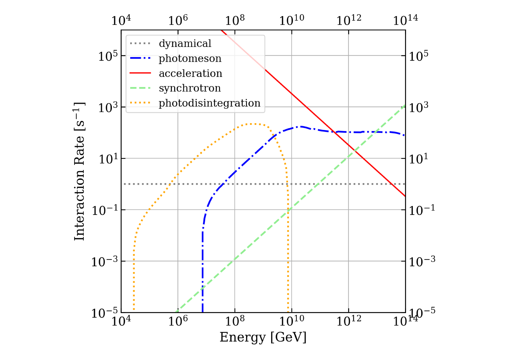
图注：Interaction rates for a primary iron nucleus, $^{56}$Fe, in the emission region of the GRB jet following the IS model: photodisintegration and photomeson production (stochastic losses), synchrotron and adiabatic/dynamical losses (continuous losses), and the acceleration rate. Stochastic losses dominate below $\sim10^{13}\mathrm{GeV}$, where synchrotron takes over. The acceleration rate crosses the total loss rate, set by photomeson interactions at that energy, near $E_{\rm max}\sim3\times10^{11}~\mathrm{GeV}$.
对应解读：“建议重点查看的图表”第1项相互作用率/平均自由程图，以及“关键图表逐图导读”图2和模型拟合段落中的相互作用长度/光学深度诊断。
入选理由：该图直接给出铁核在GRB喷流辐射区内的光致核裂变、光介子、同步辐射、绝热/动力学损失和加速率随能量的比较，是判断重核先碎裂还是能有效产介子的核心诊断图。它还标出总损失率与加速率交叉对应的最大能量，对理解CRISP模型中源内级联和中微子效率最关键。
来源与置信度：\(arxiv_source\)；high；\(arxiv_source\) / template.tex:figure[1]
Fig03
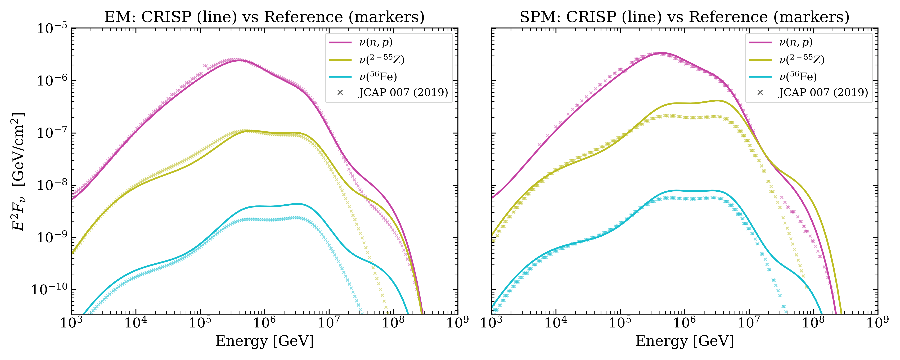
图注：Neutrino fluence per shell from the GRB source of Sect.~\(\ref{sec-1},\) computed with CRISP (solid lines) for the Empirical Model (left) and the Single Particle Model (right), compared against the values traced directly from Fig.~9 (lower left) of \(\cite{2019JCAP...11..007M}\) (markers, labeled JCAP 007 (2019)). Colors indicate the parent species whose photomeson interaction produced the pion: secondary nucleons $\nu(n,p)$, intermediate nuclei $\nu(^{2-55}Z)$, and the surviving primary $\nu(^{56}\mathrm{Fe})$.
对应解读：“建议重点查看的图表”第3项中微子能谱图和第4项通道分解图，以及“关键图表逐图导读”图4关于不同母粒子贡献的中微子谱解读。
入选理由：该图展示CRISP计算得到的GRB源每个壳层中微子fluence，并按产生 pion 的母粒子分解为次级核子、中等质量核和幸存铁核贡献，同时与既有文献结果对照。它最能支撑日报中关于重核注入下中微子谱并非简单质子谱缩放、而是由核级联和不同母核通道共同决定的解读。
来源与置信度：\(arxiv_source\)；high；\(arxiv_source\) / template.tex:figure[3]
Fig02
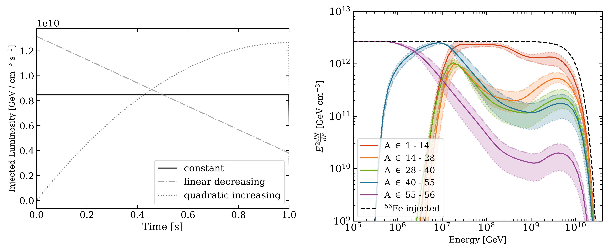
图注：Left: Temporal dependence of the injected luminosity: constant (solid line), linearly decreasing (dash-dotted), and quadratically increasing (dotted). Right: Nuclear SEDs for different mass groups, including the injected primary $^{56}$Fe (black dashed). The disintegration products are grouped into mass ranges (see legend). The solid, dotted and dashed lines correspond to the different injection scenarios shown in the left graph. Taken from \(\cite{2026A&A...708A..21M}.\)
对应解读：“建议重点查看的图表”第2项核级联产物分布图，以及“关键图表逐图导读”图3关于输出核种质量分布和逃逸重核比例的说明。
入选理由：该图右 panel 给出不同质量组的核SED，包括注入的原初铁核和光致核裂变后的产物分组；左 panel 还比较不同时间注入光度情形。它可用于判断原核保留、释放核子和中等质量碎片的相对重要性，是连接相互作用率图与中微子通道分解图的关键中间结果。
来源与置信度：\(arxiv_source\)；high；\(arxiv_source\) / template.tex:figure[2]
强相关工作
这篇工作属于伽马射线暴高能中微子与超高能宇宙线源内传播建模的同类研究，而不是某个命名伽马暴事件的观测论文。因此没有“同一事件”文献；相关上下文应按同类源、历史原型、综述和目录来查。相近工作包括经典伽马暴火球中微子模型、IceCube 伽马暴叠加搜索、重核伽马暴源模型、以及源内光致核裂变与宇宙传播联合拟合。建议检索关键词：\(\mathrm{gamma\ ray\ burst\ neutrinos}\)、\(\mathrm{UHECR\ nuclei\ GRB}\)、\(\mathrm{photodisintegration\ in\ GRB}\)、\(\mathrm{IceCube\ GRB\ stacking}\)、\(\mathrm{Auger\ composition\ UHECR}\)、\(\mathrm{nuclear\ cascade\ photohadronic}\)。
与传统质子模型相比，本文强调 Auger 组成结果所要求的重核处理，这与 Waxman-Bahcall 型能量预算和早期 Guetta 等伽马暴中微子预言形成直接对照。与 IceCube 结果的关系也很重要：IceCube 对伽马暴的非探测已经对许多高效率质子模型施加压力，但重核模型可能降低或重塑中微子谱，从而改变排除图景。相反观点或张力主要来自两端：一端认为伽马暴总体已难以贡献主要超高能宇宙线，另一端则通过低光子密度、低辐射效率或多区逃逸模型保留伽马暴可能性。本文的 CRISP 框架可用于更定量地判断这些方案。
同一事件 / 同类源线索：
- https://arxiv.org/abs/2609.15761
- https://arxiv.org/pdf/2609.15761
- https://icecube.wisc.edu/science/data/GRB/
- https://www.auger.org/science/publications
相似工作：
基础理论 / 方法工作：
- https://arxiv.org/abs/astro-ph/9701231
- https://arxiv.org/abs/astro-ph/9704258
- https://arxiv.org/abs/0803.2297
相反观点 / 张力线索：
8. First Light of Neutron Star Mergers: Off-axis Cocoon Cooling X-ray Emission from Short Gamma-Ray Burst Jets
- 来源：arXiv / astro-ph.HE
- 链接：https://arxiv.org/abs/2609.14508v1
- 作者：Jian-He Zheng, Wenbin Lu
- 评分：novelty 8/10，importance 8/10，relevance 8/10，final 9.00/10
- 推荐理由：用流体模拟和辐射后处理预测中子星并合短GRB喷流茧的早期离轴软X射线冷却辐射，给出Einstein Probe可探测距离和事件率；对GRB、多信使快速定位和并合电磁对应体搜索有明确意义，值得保留。
中文题目：中子星并合的第一缕光：短伽马暴喷流的离轴茧体冷却 X 射线辐射
做了什么：这篇文章研究短伽马暴喷流穿过中子星并合抛射物时形成的热茧体，是否能在喷流轴外方向产生早期、持续数秒、软 X 射线为主的电磁信号。作者用相对论流体模拟得到喷流—抛射物相互作用结构，再做辐射后处理，计算不同观测角下的冷却辐射光变曲线和谱。主要结论是：温和相对论性茧体可产生约 \(10^{46}\)--\(10^{48}\,{\rm erg\,s^{-1}}\) 的准热软 X 射线暂现源，特征温度约 \(0.1\)--\(1\,{\rm keV}\)，持续几秒到十几秒；对 \(\theta_{\rm v}=10^\circ\) 的观测者，爱因斯坦探针可探测到 \(z\simeq 0.3\)，类似 \({\rm GW170817}\) 的近邻事件甚至可在 \(\theta_{\rm v}\simeq45^\circ\) 内看到。
为什么重要：短伽马暴本身强烈准直，多数中子星并合不会把喷流对准地球；如果只靠伽马射线触发，我们会漏掉大部分并合。本文提出的软 X 射线茧体冷却信号比主喷流更宽角、更早出现，可能成为引力波事件快速定位和后续千新星、余辉搜寻的第一触发。
理论 / 观测 / 仪器方法价值：理论上，它把喷流破出、茧体能量沉积、角向速度结构和早期热辐射联系起来，给出了可直接与宽视场软 X 射线巡天比较的预测。观测上，它为爱因斯坦探针这类仪器提供了明确的目标参数空间：秒级持续时间、软 X 射线温度、离轴角依赖和年探测率。方法上，文章展示了如何从流体模拟输出经过辐射后处理得到观测光变，而不是只用解析火球标度估计。
为什么应该关注：如果这个通道真实存在，中子星并合的“第一缕光”可能不是伽马暴，也不一定是小时到天尺度的千新星，而是一个很短、很软、宽角的 X 射线闪光。它会改变多信使搜寻的优先级：引力波候选触发后，秒到分钟内的软 X 射线覆盖可能决定我们是否能迅速缩小天区并抓住后续演化。
展开详细解读：文章讲解、背景、理论、重点章节、图表与相关工作
文章详细讲解
科学问题：中子星并合已经由 \({\rm GW170817}\) 证明是引力波源，并且至少一部分会产生短伽马暴喷流。但短伽马暴喷流的开角通常只有几度到十几度，离轴观测者看到的 prompt 伽马信号会急剧变暗。对绝大多数并合而言，最早可用来触发电磁随访的信号可能不是喷流核心本身，而是喷流在穿过并合抛射物时充能的 cocoon，即茧体。本文问的核心问题是：这个茧体在喷流破出后冷却膨胀，能否在软 X 射线波段形成足够亮、足够宽角、足够早的暂现源。
作者怎么做：作者进行了喷流穿过中子星并合抛射物的流体模拟，得到茧体的密度、速度、内能和角向结构。随后进行辐射后处理，计算不同观测角 \(\theta_{\rm v}\) 下光子从光球附近逃逸后的到达时间、温度和通量。这个流程的关键不是把茧体当成单一速度壳层，而是保留喷流—抛射物相互作用产生的角向非均匀性：靠近轴向的物质更快、更热，较大角度处速度较低但覆盖更大立体角。
关键结果：模拟预测离轴观测者可见明亮的软 X 射线冷却辐射，典型峰值光度约为 \(10^{46}\)--\(10^{48}\,{\rm erg\,s^{-1}}\)，持续时间为几秒到十几秒，谱近似准热，特征温度约 \(0.1\)--\(1\,{\rm keV}\)。对 \(\theta_{\rm v}=10^\circ\) 的事件，爱因斯坦探针可探测到 \(z\simeq0.3\)；若事件距离接近 \({\rm GW170817}\)，可探测角度可扩展到约 \(45^\circ\)。作者还给出基准模型下约 \(0.5\,{\rm yr^{-1}}\) 的爱因斯坦探针探测率，这个数值当然依赖中子星并合率、喷流成功率、茧体能量和仪器触发条件。
局限和下一步：这类预测对喷流注入能量、开角、持续时间、抛射物质量与速度分布非常敏感；辐射后处理也可能受到热化效率、光子扩散、多维混合和非热成分的影响。文章给出的结果应理解为“物理上可行且对现有软 X 射线巡天有意义的参数空间”，而不是确定的标准烛光预测。下一步需要把模型系统地扩展到更大的参数网格，并与爱因斯坦探针、\({\rm SVOM}\)、\({\rm THESEUS}\) 概念研究以及引力波触发随访策略联合起来，检验真实触发中是否存在秒级软 X 射线热暂现源。
关键结果是怎么做出来的
本文最重要的证据链从样本意义上的“事件族”而非单个观测事件开始：作者并没有分析某个已探测 X 射线暂现源，而是构造一组短伽马暴喷流穿过中子星并合抛射物的物理模型。样本选择对应的是短伽马暴成功喷流场景，核心输入包括喷流能量、注入时间、开角以及并合抛射物的质量、速度和角向结构。由这些输入决定的不是单一观测光变，而是一族随视角变化的可观测预测。
流体模拟给出茧体在破出后的四维结构：每个角向和径向单元有速度、密度、内能以及光学深度。辐射后处理把这些单元映射到观测者时间和能段通量，特别关注软 X 射线波段。关键不是简单地说“茧体热，所以发 X 射线”，而是判断哪一层在何时达到有效光球，逃逸光子的温度是否落在 \(0.1\)--\(1\,{\rm keV}\)，以及相对论多普勒因子如何随 \(\theta_{\rm v}\) 改变峰值光度和持续时间。
显著性或可探测性在这篇理论预测中主要体现为仪器阈值比较，而不是观测数据的统计检验。作者把模型光变转换为观测通量，并与爱因斯坦探针的软 X 射线灵敏度和触发条件比较，得到 \(\theta_{\rm v}=10^\circ\) 时约 \(z\simeq0.3\) 的探测距离，以及近邻 \({\rm GW170817}\)-like 事件在 \(\theta_{\rm v}\simeq45^\circ\) 内可见的结论。读者应特别注意文中光变图、谱温演化图、视角依赖图和探测率估计表是否彼此一致。
探测率约 \(0.5\,{\rm yr^{-1}}\) 来自体积、视角概率、并合率和仪器天空覆盖/工作循环的组合。它不是一个泊松显著性测量，而是基于人口假设的期望率。最主要系统误差包括局域中子星并合率的不确定性、成功喷流比例、真实抛射物质量分布、喷流角向结构、软 X 射线背景触发效率和吸收效应。稳健性检验应看作者是否改变喷流—抛射物参数、观测角、能段阈值和距离后仍能保留“宽角、秒级、软 X 射线可探测”这一核心结论。
支撑结论的图表应包括流体结构快照、不同视角光变、谱或色温演化、最大可探测距离随视角变化、以及探测率对模型参数的依赖。若某些图只展示少数 fiducial 模型，读者要谨慎外推到所有中子星并合；若图中准热谱在爱因斯坦探针能段内只覆盖峰的一部分，则温度和总光度之间会有明显退化。
展开背景、理论、公式、模型、章节和图表导读
背景知识
研究对象是中子星并合后的短伽马暴喷流及其 cocoon。两颗中子星并合会抛出富中子物质，形成动力学抛射物和后续风；中心残余物若能发射相对论喷流，喷流必须穿过这些外层物质才能破出。穿越过程中，喷流头部被阻滞，能量和动量向侧向沉积，形成高压热茧体。茧体在破出后膨胀冷却，其辐射比喷流核心更宽角，但通常更软、更短。
历史背景来自 \({\rm GW170817}\) 与 \({\rm GRB\,170817A}\)。这个事件证明中子星并合可以伴随短伽马暴和千新星，但伽马暴异常暗，后续射电和 X 射线余辉显示我们看到的是离轴结构化喷流。它也提醒我们：真正对准地球的短伽马暴只是总体并合的一小部分，离轴电磁对应体的识别是多信使天文学的瓶颈。
观测背景正在变化。过去软 X 射线宽视场监测能力有限，秒级、软谱、低流量的暂现源很容易被漏掉。爱因斯坦探针这样的龙虾眼宽视场 X 射线望远镜提高了对软 X 射线暂现源的发现能力，使得“短伽马暴之外的早期 X 射线对应体”成为可检验问题，而不是纯理论猜测。
为什么现在值得重新看：第三代和升级版引力波探测网络会提供更多中子星并合候选，但定位天区仍可能很大。若软 X 射线茧体能在秒级提供触发或辅助定位，它可以把后续光学/红外千新星搜寻从盲扫变成有目标随访。此外，早期冷却辐射直接探测喷流注入和抛射物包层相互作用，比晚期余辉更接近中心引擎启动时刻。
常见误区之一是把所有早期高能信号都等同于短伽马暴 prompt。本文讨论的是茧体冷却辐射，温度在软 X 射线，准热谱，角向分布较宽，与内部耗散产生的非热伽马射线不同。另一个误区是认为“离轴”一定意味着不可见；事实上离轴喷流核心不可见，但茧体或结构化喷流翼可能在低能段可见。第三个误区是把探测率当成固定预言；实际上它对并合率、喷流成功率、仪器选择函数和吸收模型都高度敏感。
基础理论 / 方法脉络
基本物理图像是喷流把能量注入一个已经膨胀的中子星并合抛射物中。若喷流头速度低于自由喷流速度，喷流物质在头部激波热化，压力驱动横向扩展，形成 cocoon。茧体的总能量大致由喷流在破出前沉积的功决定，而辐射时间和温度由膨胀速度、光学深度和内能密度决定。
辐射来自光学厚物质的冷却。早期茧体内部光子被电子散射俘获，随流体绝热冷却；当光学深度降到约 \(c/v\) 或接近光球条件时，光子可以在动力学时间内扩散出去。对温和相对论性物质，观测到的时间和温度还要乘上多普勒因子，因此同一流体结构对不同 \(\theta_{\rm v}\) 的观测者会产生不同峰值时间、峰值通量和色温。
本文模型的关键假设包括：喷流成功破出；茧体中的一部分内能能以近热辐射形式释放；流体模拟输出可通过后处理映射到观测光变；X 射线谱在爱因斯坦探针能段内可近似为准黑体或多温黑体叠加。关键量包括观测角 \(\theta_{\rm v}\)、洛伦兹因子 \(\Gamma\)、速度 \(\beta c\)、光球半径 \(R_{\rm ph}\)、辐射温度 \(T\)、各向同性等效光度 \(L_{\rm iso}\) 和仪器能段通量 \(F_{\rm X}\)。
观测方法上，理论光变必须与真实仪器响应比较。探测不是只看总光度，而是看红移后谱峰是否落入软 X 射线能段、持续时间是否匹配触发积分时间、背景计数是否允许显著检测。对秒级暂现源，时间 bin 选择会改变信噪比；对软谱源，银河吸收和仪器低能响应会显著影响可探测距离。
常见退化包括能量—质量退化、速度—视角退化和温度—吸收退化。较高茧体能量可提高亮度，但较大抛射物质量会延长扩散并降低温度；较小观测角与较高洛伦兹因子都能增强多普勒增亮；较低本征温度和较强软 X 射线吸收都可让事件看起来更暗。解读本文预测时应把这些退化与仪器选择效应一起考虑。
公式与推导
第一步从喷流能量注入写起。若喷流功率为 \(L_{\rm j}\)，注入持续时间为 \(t_{\rm eng}\)，破出时间为 \(t_{\rm bo}\)，则破出前沉积到茧体的能量可近似写成
其中 \(E_{\rm c}\) 是茧体能量，\(\beta_{\rm h}c\) 是喷流头速度。因子 \([1-\beta_{\rm h}]\) 表示喷流头越慢，越多喷流功率被热化并侧向注入 cocoon。
茧体破出后每个角向单元以速度 \(v=\beta c\) 膨胀，动力学半径近似为
其中 \(R_0\) 是破出附近初始半径，\(t\) 是源静止系时间。对辐射主导气体，绝热膨胀使内能随半径降低，常用标度可写为
这里 \(E_{\rm int}\) 是可辐射内能，适用于近球形或局部锥形、辐射主导且无持续加热的近似。
光子能否逃逸由光学深度决定。若某层外侧质量为 \(M_{>r}\)，不透明度为 \(\kappa\)，则径向光学深度可估为
扩散时间与膨胀时间比较给出释放条件
因此有效辐射层常满足 \(\tau\lesssim \beta^{-1}\)。这一步把流体结构转换成“哪一层在何时发光”的判据。
若逃逸辐射近似热化，局部辐射温度由能量密度决定：
其中 \(a\) 是辐射常数，\(T\) 是共动系温度，\(V\) 是发光体积。对应的共动系热光度标度可写为
其中 \(R_{\rm ph}\) 是光球半径，\(\sigma_{\rm SB}\) 是斯特藩—玻尔兹曼常数。
相对论运动把共动辐射映射到观测者。多普勒因子为
其中 \(\Gamma=(1-\beta^2)^{-1/2}\)，\(\alpha\) 是流体速度方向与视线夹角。观测温度和频率满足
红移 \(z\) 同时拉长时间并降低光子能量。
对近似各向同性的局部发射，观测到的能谱通量可写为
其中 \(D_L\) 是光度距离，\(E\) 是观测能量，积分覆盖可见发光面。这个式子说明视角依赖来自 \(\mathcal{D}\)、可见面积和到达时间面的共同作用。
仪器可探测性由能段通量和背景决定。某能段 \([E_1,E_2]\) 的观测通量是
对应计数数目近似为
其中 \(A_{\rm eff}(E)\) 是有效面积，\(P(E)\) 表示探测效率或响应矩阵的简化写法。若背景计数为 \(C_{\rm bkg}\)，常用信噪比标度为
本文的最大探测红移和年探测率本质上就是把这些光变、谱和仪器阈值与并合体积率相结合后得到的结果。
模型拟合 / 应用方法
本文属于预测型模拟论文，严格意义上不是对一组观测数据做后验拟合，但其方法仍有明确的“模型—可观测量—选择函数”链条。拟合量或可比较量包括软 X 射线光变峰值、持续时间、色温、能谱形状、视角依赖的峰值通量、最大探测距离和年探测率。未来一旦有候选事件，这些量会成为反演喷流能量、茧体质量和观测角的输入。
若把这类模型用于真实数据，似然可由时间分箱计数构成。给定模型参数 \(\Theta\)，包括 \(E_{\rm c}\)、\(M_{\rm c}\)、\(\Gamma(\theta)\)、\(\theta_{\rm v}\)、\(z\) 和吸收柱密度等，模型通过仪器响应给出每个时间—能量 bin 的期望计数。计数较低时应使用泊松似然而不是高斯 \(\chi^2\)，并把背景模型、曝光和响应矩阵的不确定性作为 nuisance parameters。
参数退化会很强。峰值通量同时依赖 \(E_{\rm c}\)、\(D_L\)、\(\theta_{\rm v}\) 和 \(\mathcal{D}\)；色温同时依赖内能密度、光球半径、速度和红移；持续时间同时依赖扩散时间、角向到达时间差和触发积分窗口。因此单靠一个软 X 射线光变通常无法唯一确定喷流结构，必须结合引力波距离/倾角约束、伽马射线非探测或弱探测、后续千新星和余辉。
残差诊断应重点看三点。第一，早期上升和峰后衰减是否能由冷却模型同时解释；如果峰后存在长时间幂律尾，可能混入外激波余辉或中心引擎持续活动。第二，能谱是否接近准热；明显非热高能尾可能指向磁重联、内部激波或 shock breakout 的不同实现。第三，不同能段峰值时间是否有热冷却预期的软化趋势。
系统误差主要来自模拟初始条件和辐射转移简化。抛射物的几何形状、成分和不透明度会改变光球位置；二维轴对称模拟可能高估或低估真实三维混合；局部热平衡假设在低密度、高速度外层未必成立；银河和宿主星系软 X 射线吸收会压低 \(0.1\)--\(1\,{\rm keV}\) 的可见通量。实际应用中，应把本文模型作为物理模板族，而非单一标准模板。
重点章节 / 结果段落怎么读
数据/模型设置部分应首先阅读。这里决定喷流功率、开角、注入时间、抛射物质量和速度分布。读者要检查这些参数是否代表短伽马暴典型值，是否覆盖 \({\rm GW170817}\)-like 事件，以及喷流是否成功破出；如果只给一个 fiducial 模型，后续探测率就不能过度泛化。
流体模拟方法部分是第二个重点。需要看计算维度、网格、边界条件、状态方程、是否包含相对论效应，以及如何定义茧体与喷流核心。特别要注意破出时间、茧体能量和角向速度结构的提取方式，因为这些量直接控制软 X 射线冷却辐射。
辐射后处理部分最值得细读。这里应说明如何计算光学深度、光球、到达时间面、温度、多普勒修正和观测能段通量。读者要确认作者是否把不同视角的时间延迟和投影效应纳入，而不是只对总光度做几何稀释。
主结果部分应围绕光变、谱和视角依赖来读。重点看 \(L_{\rm X}\)、持续时间、\(T_{\rm obs}\) 和 \(\theta_{\rm v}\) 的关系，以及爱因斯坦探针阈值如何叠加在模型预测上。若有不同模型比较，应识别哪些结论稳健，哪些只在高能量或低质量抛射物模型中成立。
讨论和率估计部分需要带着不确定性阅读。年探测率取决于中子星并合体积率、喷流成功率、视角覆盖、仪器天空覆盖率和触发效率。读者应关注作者是否把这些因素分开列出，是否说明结果对每个假设的敏感度，以及如何通过后续 UV/光学/红外随访确认千新星和余辉起源。
建议重点查看的图表
-
喷流—抛射物相互作用的密度/洛伦兹因子/内能快照：应看喷流是否破出、茧体是否宽角、温和相对论性物质覆盖到多大角度。
-
角向能量和速度分布图：应看 \(dE/d\Omega\)、\(\Gamma\beta\) 随极角的变化，因为它决定离轴 X 射线亮度是否足够宽角。
-
不同 \(\theta_{\rm v}\) 的软 X 射线光变：应看峰值光度、持续时间、衰减斜率和视角变暗是否连续；尤其关注 \(10^\circ\)、\(30^\circ\)、\(45^\circ\) 的差异。
-
谱或色温演化图：应看谱峰是否位于爱因斯坦探针有效能段，温度是否从 \(\sim1\,{\rm keV}\) 向 \(\sim0.1\,{\rm keV}\) 冷却，以及是否存在多温黑体导致的宽谱。
-
最大探测距离或红移随视角变化图：应检查 \(z\simeq0.3\) 和 \({\rm GW170817}\)-距离下 \(45^\circ\) 可见的结论如何读出，阈值线是否清楚。
-
探测率估计表或参数依赖图：应看并合率、天空覆盖、喷流比例和阈值如何进入 \(0.5\,{\rm yr^{-1}}\)，以及误差范围是否可能跨越一个数量级。
关键图表逐图导读
图 1：通常应是流体模拟快照，横轴和纵轴为空间坐标或归一化半径，颜色显示密度、内能或 \(\Gamma\beta\)，箭头或轮廓显示喷流和茧体边界。读图时不要只看喷流轴上的高速核心，更要看中等角度处是否有 \(\Gamma\) 为几以内的热物质；这些物质才是离轴软 X 射线冷却辐射的主要来源。陷阱是颜色动态范围很大，低密度高速层可能在视觉上显眼但能量不一定占优。
图 2：应关注角向结构，例如纵轴为 \(dE/d\Omega\)、\(\Gamma\beta\) 或内能，横轴为极角 \(\theta\)。模型线若在喷流核心外仍有缓慢下降的宽翼，说明 cocoon 可为大视角观测者提供辐射。读图陷阱是把 \(dE/d\Omega\) 与总能量混淆；大角度处单位立体角能量低，但立体角面积大，仍可能影响探测率。
图 3：不同观测角的 X 射线光变通常是核心结果图，横轴为观测者时间，纵轴为 \(L_{\rm X}\) 或通量，曲线对应不同 \(\theta_{\rm v}\)。应看峰值是否达到 \(10^{46}\)--\(10^{48}\,{\rm erg\,s^{-1}}\)，持续时间是否为几秒到十几秒，以及随视角增大是平滑衰减还是急剧截断。陷阱是若纵轴为各向同性等效光度，不能直接当成真实总辐射功率。
图 4：谱和温度图的横轴可能是光子能量或时间，纵轴为 \(\nu F_\nu\)、\(F_E\) 或 \(T_{\rm obs}\)。应检查谱峰是否落在 \(0.1\)--\(1\,{\rm keV}\)，并比较红移前后能段覆盖。读图陷阱是仪器低能响应和吸收会削弱最软部分，因此理论 bolometric 光度高不一定代表触发容易。
图 5：探测距离随视角变化图应把仪器阈值转化为 \(D_L\) 或 \(z\)。横轴通常为 \(\theta_{\rm v}\)，纵轴为最大距离或红移；若标出爱因斯坦探针阈值，读者应检查 \(10^\circ\) 处是否达到 \(z\simeq0.3\)，以及近邻事件在 \(45^\circ\) 处是否仍高于阈值。陷阱是阈值常依赖触发时间窗和谱假设，不应视为绝对水平线。
图 6：探测率或参数扫描图应看 \(N_{\rm det}\) 随并合率、茧体能量、抛射物质量或视场覆盖的变化。若图中 \(0.5\,{\rm yr^{-1}}\) 是 fiducial 点，读者要看上下变化范围而不是只记一个数。读图陷阱是忽略泊松涨落：即使期望率为每两年一个，数年无探测也未必立即排除模型。
论文原图 / 可嵌入图片
Fig03
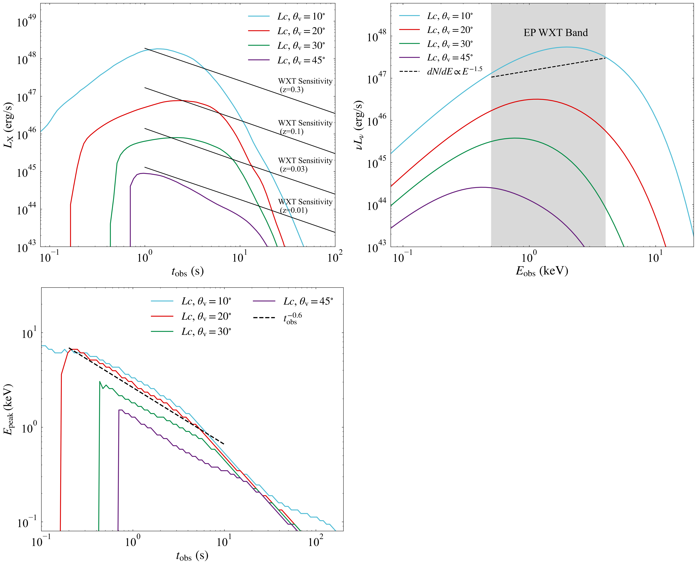
图注：X-ray lightcurves and spectra of the canonical model ($Lc$). \(\textit{Left panel}\): X-ray lightcurves in EP-WXT band (0.5-4 keV). The blue, red, green, and purple lines correspond to the viewing angles of $10^{\circ}$, $20^{\circ}$, $30^{\circ}$, and $45^{\circ}$. The black solid lines are EP-WXT sensitivity taken from \(\cite{Yuan2022hxga.book...86Y}\) for sources at redshifts $z=0.01$--0.3. \(\textit{Middle panel}\): The $T_{90}$-averaged spectra at different viewing angles. The gray shaded region marks the EP WXT band, while the black dashed line denotes a power-law spectrum with a photon index of 1.5. \(\textit{Right panel}\): The temporal evolution of the peak energy in $Lc$ model. The black dashed line indicates a power-law decay $E_{\rm peak}\propto t^{-0.6}_{\rm obs}$.
对应解读：对应“建议重点查看的图表”第3、4、5项，以及关键图表逐图导读中的图3、图4、图5；也直接支撑模型可观测量中的光变、谱形、峰值能量和EP探测阈值讨论。
入选理由：这是全文最核心的可观测预测图：同一图中给出canonical模型在不同观测角下的EP-WXT软X射线光变、T90平均谱和峰值能量随时间演化。它直接检验日报强调的10°、20°、30°、45°视角差异、10^46--10^48 erg/s量级、秒级持续时间、准热谱、0.5--4 keV能段覆盖以及z=0.01--0.3的EP灵敏度线，因此比单独的谱图或温度图信息密度更高。
来源与置信度：\(arxiv_source\)；high；\(arxiv_source\) / main.tex:figure[3]
Fig02
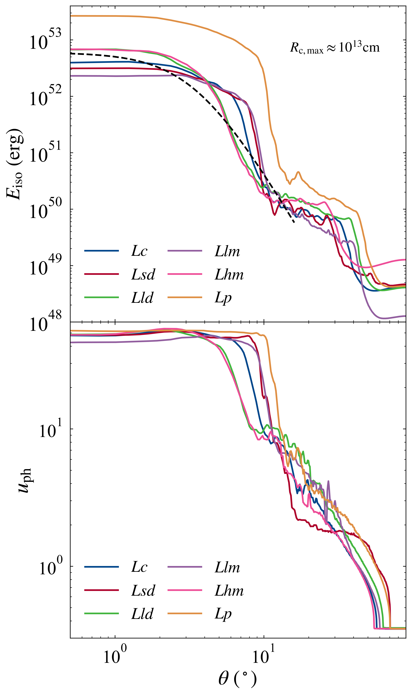
图注：\(\textit{Upper panel:}\) Angular profiles of the isotropic-equivalent energy $E_{\rm iso}$, for all models at $R_{\rm c,max}\approx10^{13}\,{\rm cm}$. The blue, red, green, purple, pink, and brown curves correspond to models $Lc$, $Lsd$, $Lld$, $Llm$, $Lhm$, and $Lp$, respectively. The black dashed line shows the angular profile we used in afterglow computation. \(\textit{Lower panel:}\) Angular profiles of the photospheric four-velocity, $u_{\rm ph}$, for the same models.
对应解读：对应“建议重点查看的图表”第2项和关键图表逐图导读中的图2：角向能量和速度结构。
入选理由：该图给出不同模型在大半径处的角向各向同性等效能量E_iso和光球四速度u_ph，是判断cocoon是否具有宽角、温和相对论性发射物的关键物理输入。日报中关于离轴X射线亮度为何能延伸到较大视角、以及不要混淆单位立体角能量和总能量的解读，都需要这张图支撑。
来源与置信度：\(arxiv_source\)；high；\(arxiv_source\) / main.tex:figure[2]
Fig01
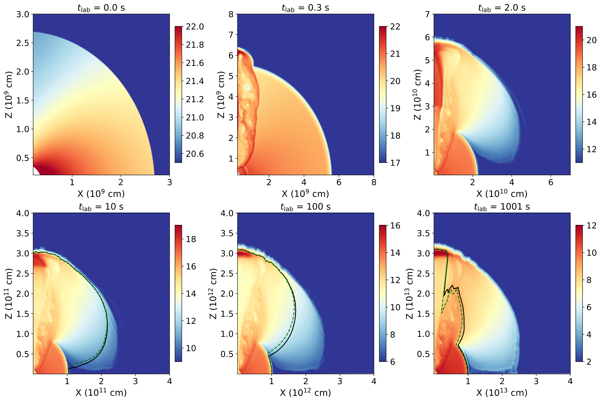
图注：Energy density ($\Gamma(\Gamma-1)\rho'c^2+\Gamma^2 e'$) maps of the canonical model (Lc). Six panels correspond to different lab-frame times. The colorbar shows the logarithmic energy density in units of ${\rm erg\,{cm}^{-3}}$. The black solid lines and green dashed lines in the bottom three panels indicate the photospheric radius $r_{\rm ph}$ and diffusion radius $r_{\rm diff}$.
对应解读：对应“建议重点查看的图表”第1项和关键图表逐图导读中的图1：喷流—抛射物相互作用的流体模拟快照。
入选理由：该图展示canonical模型不同时刻的能量密度分布，并标出光球半径和扩散半径，能够直观看到喷流穿过抛射物后形成的茧体结构以及辐射逃逸区域。它为后续角向结构、光变和谱计算提供物理背景，是解释冷却辐射来源不可或缺的模拟图。
来源与置信度：\(arxiv_source\)；high；\(arxiv_source\) / main.tex:figure[1]
Fig04
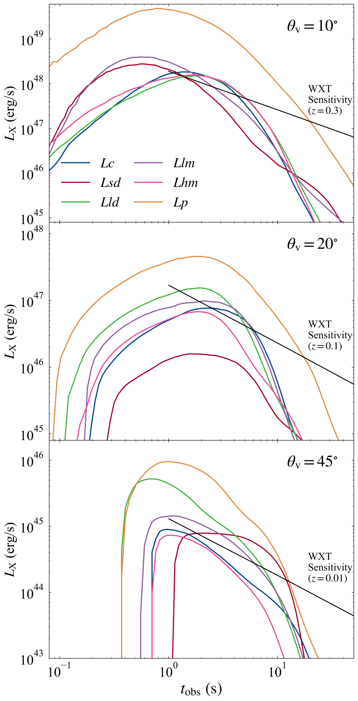
图注：EP WXT (0.5-4 keV) lightcurves in different models. Colors represent different models, as in Figure \(\ref{fig:angular}.\) The upper, middle, and lower panels correspond to viewing angles of $\theta_{\rm v}=10^{\circ}$, $20^{\circ}$, and $45^{\circ}$, respectively.
对应解读：对应“建议重点查看的图表”第3项和第6项，以及模型参数依赖讨论：不同模型、不同观测角下的EP-WXT光变。
入选理由：Fig03展示canonical模型，而Fig04展示多个模型在10°、20°、45°视角下的光变差异，可用于判断峰值光度、持续时间和视角变暗对喷流/抛射物参数的敏感性。它比单一模型图更能支撑日报中关于系统误差、参数退化和探测率不确定性的讨论。
来源与置信度：\(arxiv_source\)；high；\(arxiv_source\) / main.tex:figure[4]
Fig06
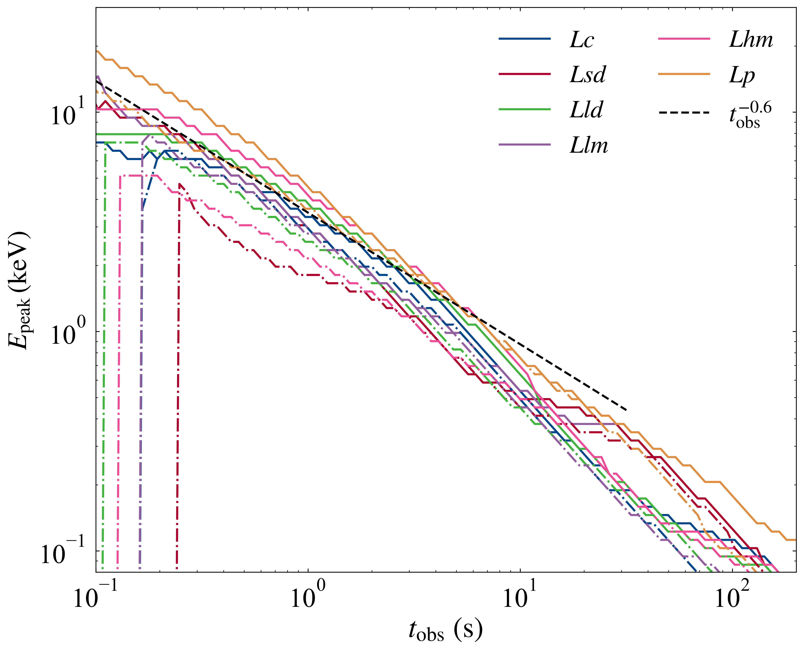
图注：Temporal evolution of the peak energy for different models. Colors denote different models, as in Figure \(\ref{fig:angular}.\) The solid and dash-dotted curves correspond to viewing angles of $\theta_{\rm v}=10^{\circ}$ and $20^{\circ}$, respectively. The black dashed line indicates the power-law decay $E_{\rm peak}\propto t_{\rm obs}^{-0.6}$.
对应解读：对应“建议重点查看的图表”第4项、关键图表逐图导读中的谱或色温演化图，以及模型比较中的热冷却诊断。
入选理由：该图给出不同模型峰值能量随观测时间的演化，并标出E_peak ∝ \(t_obs^-0\).6的参考衰减，可直接检验软化趋势和0.1--1 keV量级是否落入软X射线仪器有效能段。相比只给平均谱的Fig05，它更适合支撑日报中关于热冷却随时间演化和多模型系统差异的诊断。
来源与置信度：\(arxiv_source\)；high；\(arxiv_source\) / main.tex:figure[6]
Fig08
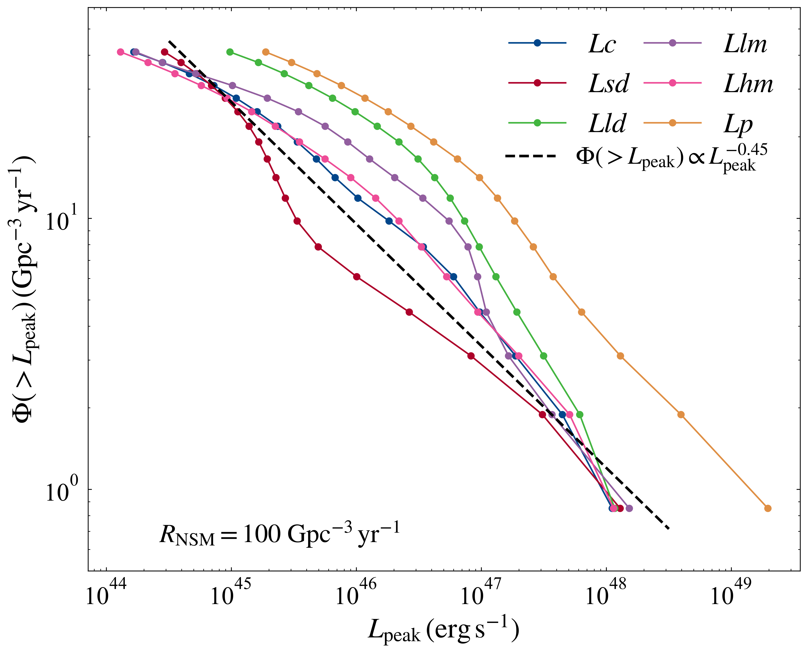
图注：The cumulative luminosity function for different models. The solid curves show the luminosity functions as a function of the peak luminosity in the EP-WXT band, with colors denoting different models. The black dashed line indicates the trend $\Phi(>L_{\rm peak})\propto L_{\rm peak}^{-0.45}$.
对应解读：对应“建议重点查看的图表”第6项：探测率估计和参数依赖；也关联详细解读中EP基准探测率约0.5 yr^-1的背景。
入选理由：虽然该图不是直接的年探测率表，但累积峰值光度函数是将模型光度分布转化为探测数和选择函数的关键中间量。它有助于理解EP可探测样本如何受峰值光度分布控制，并支撑日报中关于不要只记fiducial探测率、应关注模型变化范围的提醒。
来源与置信度：\(arxiv_source\)；high；\(arxiv_source\) / main.tex:figure[8]
强相关工作
同一事件背景方面，\({\rm GW170817}\)、\({\rm GRB\,170817A}\)、\({\rm AT2017gfo}\) 和其离轴余辉是本文最直接的参照系。相关论文包括引力波发现、费米/\({\rm INTEGRAL}\) 的短伽马暴探测、千新星多波段观测，以及射电/X 射线超光速运动和结构化喷流解释。检索关键词可用“\({\rm GW170817}\) off-axis structured jet cocoon”, “\({\rm GRB\,170817A}\) cocoon shock breakout”, “kilonova early X-ray counterpart”。
同类理论工作包括短伽马暴喷流穿越并合抛射物的喷流破出模拟、cocoon shock breakout、cocoon cooling emission、以及结构化喷流余辉建模。本文的区别在于强调宽视场软 X 射线仪器可探测的秒级 quasi-thermal 信号，并把流体模拟与辐射后处理连接到爱因斯坦探针探测率。检索关键词可用“short GRB cocoon cooling emission”, “neutron star merger soft X-ray transient”, “Einstein Probe neutron star merger”。
可能存在的张力来自两类方向：一类认为 \({\rm GRB\,170817A}\) 可由 cocoon shock breakout 解释，另一类认为其主导证据更支持成功结构化喷流；另一类张力是软 X 射线冷却信号是否会被吸收、是否能热化、是否足够长以触发巡天仪器。读者应同时查找“cocoon shock breakout versus structured jet”以及“soft X-ray absorption neutron star merger counterpart”。
同一事件 / 同类源线索：
- https://arxiv.org/abs/2609.14508
- https://arxiv.org/abs/1710.05832
- https://arxiv.org/abs/1710.05446
- https://arxiv.org/abs/1710.05833
- https://arxiv.org/abs/1805.11579
相似工作：
基础理论 / 方法工作：
相反观点 / 张力线索：
9. Exploring the dynamics of the Coma galaxy cluster by mapping its X-ray emission line profiles with XRISM
- 来源：arXiv / astro-ph.HE
- 链接：https://arxiv.org/abs/2609.14264v1
- 作者：Kosei Sakai, Kazuhiro Nakazawa, Maxim Markevitch, Dominique Eckert, Yuichiro Ezoe, Yuto Ichinohe, Richard Kelley, Richard Mushotzky
- 评分：novelty 8/10，importance 8/10，relevance 8/10，final 9.00/10
- 推荐理由：XRISM/Resolve spectroscopy of the Coma cluster mapping Fe-K line-profile velocity components, turbulence, and bulk flows. Important high-resolution X-ray cluster result, with implications for ICM dynamics, magnetic-field amplification, and relativistic-particle acceleration.
中文题目：用 XRISM 绘制后发座星系团 X 射线发射线轮廓来追踪其动力学
做了什么：这篇文章用 XRISM/Resolve 对后发座星系团核心两个 \(3'\times3'\) 视场的高能谱分辨率数据，重新分析 \(\mathrm{Fe}\)-\(K\) 线复合体的线型，而不只看单一平均红移。作者在中心视场西北象限发现除主成分外还有一个高速蓝移气体成分，速度约为 \(\Delta cz=-1250\,\mathrm{km\,s^{-1}}\)；又用无偏的多成分扫描在南侧视场找到一个红移成分，约为 \(\Delta cz\sim+1230\,\mathrm{km\,s^{-1}}\)。这说明后发座星系团核心的热等离子体不是简单的整体平移，而包含多个沿视线叠加的 bulk-flow 成分。文章还估计湍动能量密度和整体流动能量密度相近，且都比 \(B\sim5\,\mu\mathrm{G}\) 磁场能量密度高数倍。
为什么重要：后发座星系团是近邻、富集、并合活跃的标志性星系团，也是研究星系团湍流、射电晕、宇宙线电子再加速和磁场放大的关键对象。过去 XMM-Newton、Chandra、Suzaku 等能很好测温度、密度和形态，但很难直接测几百到上千 \(\mathrm{km\,s^{-1}}\) 的热气体速度结构。XRISM/Resolve 的微量热计谱分辨率使 \(\mathrm{Fe}\)-\(K\) 发射线的质心偏移和非高斯线型成为可测量量，因此这篇文章把星系团动力学从二维亮度图推进到沿视线速度分解。
理论 / 观测 / 仪器方法价值：对理论而言，文章给出并合星系团中 bulk motion、湍流和磁场能量分配的观测约束，可检验并合驱动湍流级联、磁场放大和粒子加速模型。对观测而言，它展示了怎样用 Resolve 线型而非单一红移拟合来寻找多速度成分，也暴露了视场有限、投影混合、原子线复合体和增益校准对速度测量的影响。对方法而言，作者的 \(3\,\mathrm{eV}\) 步长多成分搜索是一个可迁移到其他星系团、超新星遗迹和活动星系核外流研究的谱线动力学诊断。
为什么应该关注：如果你关心星系团质量估计中的非热压、射电晕中电子如何被再加速、或微量热计时代怎样从谱线形状读出等离子体运动，这篇都值得看。它提醒我们：一个星系团核心区域的平均速度可能掩盖相反方向的多个气体团块；而这些团块的动能足以与湍流、磁场和非热粒子预算相竞争。换句话说，后发座星系团的 \(\mathrm{Fe}\)-\(K\) 线不是一条简单的高斯线，而是一张并合动力学的速度切片。
展开详细解读：文章讲解、背景、理论、重点章节、图表与相关工作
文章详细讲解
科学问题：本文要解决的是后发座星系团核心区热星系团介质的速度场到底有多复杂。Paper I 已经报告两个 XRISM/Resolve 视场的平均速度：中心视场相对于成员星系平均速度为 \(\Delta cz=-430\,\mathrm{km\,s^{-1}}\)，南侧视场为 \(\Delta cz=-730\,\mathrm{km\,s^{-1}}\)。但平均速度只告诉我们一条谱线的整体质心偏移，不能回答谱线是否由多个沿视线叠加的气体成分组成。对并合星系团来说，这个问题很关键，因为冷锋、冲击、sloshing、亚团穿越和湍流都会把速度场变成非单峰结构。
作者怎么做：作者集中分析 XRISM/Resolve 在两个 \(3'\times3'\) 视场内的 \(\mathrm{Fe}\)-\(K\) 线复合体。Resolve 的优势是能量分辨率达到数 \(\mathrm{eV}\) 量级，在 \(6.7\,\mathrm{keV}\) 附近对应的速度尺度约为几百 \(\mathrm{km\,s^{-1}}\)，足以分辨星系团热气体的 bulk velocity。文章先检查中心视场的空间子区，尤其是西北象限的线型；然后对中心和南侧视场的 full-array 光谱做多速度成分搜索。所谓“无偏”搜索的核心是不用预先指定可疑速度，而是在能量或速度空间以 \(3\,\mathrm{eV}\) 步长扫描额外热等离子体成分，比较加入成分后拟合统计量的改进。
关键结果：在中心视场西北象限，除 Paper I 报告的主成分和一个接近 \(\Delta cz=-40\,\mathrm{km\,s^{-1}}\) 的红移或较低蓝移成分外，本文找到一个额外的蓝移成分，速度约 \(\Delta cz=-1250\,\mathrm{km\,s^{-1}}\)。在南侧视场的系统扫描中，又出现一个红移成分，速度约 \(\Delta cz\sim+1230\,\mathrm{km\,s^{-1}}\)。这两个速度方向相反、幅度都在千 \(\mathrm{km\,s^{-1}}\) 量级的成分表明，后发座核心沿视线存在强烈的多相速度叠加，不能简单地用一个高斯速度分布或一个单一气体团块解释。
物理解释：作者进一步比较了湍流能量密度、bulk motion 能量密度和磁场能量密度。按文章摘要给出的结论，ICM 湍流和整体流动的能量密度彼此相近，并且都比 \(B\sim5\,\mu\mathrm{G}\) 磁场的能量密度大数倍。这意味着气体运动有足够能量驱动磁场放大和相对论粒子再加速，和后发座星系团著名射电晕的物理图像相呼应。这个结果也提示，在动力学未弛豫的星系团里，非热压支持可能不是小修正。
局限和下一步：本文仍受限于 Resolve 视场较小、空间采样只有两个核心区域、以及沿视线投影不可避免。多成分谱拟合还会受到 \(\mathrm{Fe}\)-\(K\) 复合体原子物理、温度结构、金属丰度、背景、增益校准和线扩展模型的影响。下一步最自然的是扩大映射范围，把速度成分与 X 射线亮度边缘、温度图、弱透镜质量图、成员星系速度分布和射电晕形态联合起来；同时用并合数值模拟生成 mock XRISM 光谱，检验这些速度峰对应的是亚团穿越、sloshing 流、尾迹，还是湍流速度分布的极端尾部。
关键结果是怎么做出来的
本文最核心的证据链来自两个 XRISM/Resolve 指向：后发座星系团中心视场和南侧视场，每个约 \(3'\times3'\)。Paper I 已经给出这两个视场的平均 ICM 速度偏移，本文在此基础上追问线型是否偏离单速度高斯图像。样本不是大数量星系团统计，而是对一个近邻并合星系团的高分辨率谱线解剖；因此关键不是样本量，而是每个视场、每个象限中 \(\mathrm{Fe}\)-\(K\) 线复合体的计数质量、能量校准和模型区分能力。
在中心视场，作者把光谱按空间象限或子区域检查，特别指出西北象限存在额外蓝移成分。这里的主要可观测量是线复合体相对于星系团系统红移的能量偏移，以及单成分模型留下的非对称残差。若只用一个热等离子体速度成分，线峰位置和线翼不能同时被很好解释；加入一个 \(\Delta cz=-1250\,\mathrm{km\,s^{-1}}\) 左右的成分后，蓝侧残差得到改善。这一结果的说服力来自线型局部结构，而非仅仅来自全视场平均红移。
在南侧视场，作者采用 \(3\,\mathrm{eV}\) 步长的多成分扫描来避免“看见残差后再放成分”的主观性。做法可以理解为：固定或扫描候选第二速度成分的红移，让其归一化、温度或其他热模型参数在允许范围内拟合，然后记录拟合统计量改善随速度的变化。南侧视场中，改善峰出现在红移方向，对应 \(\Delta cz\sim+1230\,\mathrm{km\,s^{-1}}\)。这与该视场平均蓝移 \(\Delta cz=-730\,\mathrm{km\,s^{-1}}\) 并不矛盾，而是说明同一视场内可有主导蓝移气体和较弱红移气体沿视线叠加。
显著性判断的关键通常不是简单套用一个标准 \(F\)-test，因为额外谱线成分的归一化有非负边界，速度也是搜索得到的，存在 look-elsewhere effect。本文摘要没有列出具体 \(p\)-value 或 \(\Delta C\) 数值，但其“systematic search”意味着读者应重点查看扫描统计量图、候选速度处的置信区间，以及是否通过模拟或多重试验校正评估假阳性率。若论文表格给出每个成分的速度、归一化、温度和拟合统计量改善，读者应把它们与 Resolve 的增益不确定度和 \(\mathrm{Fe}\)-\(K\) 原子线间距作数量级比较。
支撑结论的图表应包括：西北象限 \(\mathrm{Fe}\)-\(K\) 线剖面及单成分残差、加入多速度成分后的残差改善、全阵列 \(3\,\mathrm{eV}\) 扫描的拟合改善曲线、以及湍流能量密度与 bulk motion、磁场能量密度的比较图或表。最应警惕的系统误差包括增益漂移、视场内速度梯度导致的人工线宽、温度多相性误认为速度多成分、背景和非 X 射线背景处理、以及点源或亮星系贡献。稳健性检验应看作者是否改变能段、原子数据库、背景模型、空间分区和初始参数后仍能恢复同样速度峰。
展开背景、理论、公式、模型、章节和图表导读
背景知识
后发座星系团是距离较近的富星系团，常被当作研究星系团并合和非热现象的实验室。它不是一个完全弛豫的球对称系统，而含有复杂亚结构、成员星系速度子群、扩展射电晕和 X 射线形态扰动。这样的系统中，ICM 的温度、密度、速度和磁场都记录了最近几 \(\mathrm{Gyr}\) 的并合历史。
长期以来，星系团动力学主要靠三类观测间接推断：成员星系红移给出星系碰撞less 成分的速度结构；X 射线亮度和温度图给出热气体的压力和冲击迹象；弱引力透镜给出总质量分布。这些方法都很重要，但它们不能直接测量热 ICM 的沿视线速度。对于并合星系团，气体和暗物质/星系可发生空间分离，单靠星系速度不能替代气体速度。
X 射线谱线速度测量的历史难点在于能谱分辨率。CCD 探测器在 \(6\) 到 \(7\,\mathrm{keV}\) 的分辨率通常为百 \(\mathrm{eV}\) 量级，而 \(1000\,\mathrm{km\,s^{-1}}\) 在 \(6.7\,\mathrm{keV}\) 对应能量偏移只有约 \(22\,\mathrm{eV}\)。Hitomi 在英仙座星系团中首次以微量热计精确测到 ICM 速度弥散，证明热气体速度场可以直接由 X 射线谱线读出。XRISM/Resolve 接续了这一路线，把目标扩展到更多天体和更复杂环境。
为什么现在值得重新看后发座？一方面，后发座有著名射电晕，说明存在 \(\mu\mathrm{G}\) 量级磁场和相对论电子；另一方面，并合驱动的湍流和 bulk flow 被认为是这些非热成分的能量来源。过去这些能量预算多靠模型推断，现在可用 \(\mathrm{Fe}\)-\(K\) 线宽、线心和非高斯线型直接约束速度能量。
该领域常见误区有三点。第一，把线宽全部解释为湍流，但实际线宽还包含热展宽、仪器响应、空间混合和多个 bulk velocity 成分。第二，把全视场平均速度当成气体整体运动，忽略沿视线多个气体团块可互相抵消。第三，看到一个额外速度峰就立刻对应到一个具体亚团；实际上投影、温度结构和谱线复合体本身都可能制造相似表象，需要与成像、星系动力学和模拟联合判断。
基础理论 / 方法脉络
基本物理图像是：高温 ICM 是温度约 \(10^7\) 到 \(10^8\,\mathrm{K}\) 的稀薄碰撞等离子体，主要通过热轫致辐射和高电离重元素线辐射发出 X 射线。在后发座这样温度较高的星系团中，\(\mathrm{Fe}\)-\(K\) 复合体位于静止系约 \(6.7\,\mathrm{keV}\) 附近，线强足够高，是测量气体红移、速度弥散和多速度成分的核心诊断。
如果气体以沿视线速度 \(v_{\parallel}\) 运动，谱线能量会发生多普勒偏移。对非相对论速度，能量偏移与速度近似线性，因此 \(1000\,\mathrm{km\,s^{-1}}\) 在 \(6.7\,\mathrm{keV}\) 处只对应二十多 \(\mathrm{eV}\)。这要求仪器能量尺度稳定且分辨率足够高。Resolve 的微量热计不靠电荷读出而测量单个光子的热脉冲能量，因此能比 CCD 更好地解析窄线和线型不对称。
本文的关键假设是观测光谱可由若干热等离子体成分叠加，每个成分有自己的红移或速度、发射量、温度和金属丰度，之后再经过仪器响应卷积。若只有一个速度成分，线型应主要由热展宽、湍流展宽、自然宽度、原子线复合体和仪器响应决定；若存在多个 bulk velocity 成分，线型会出现非高斯偏斜、肩部或残差结构。
观测方法上，速度测量不是直接在图像上读出，而是通过谱模型拟合完成。模型要同时处理源光谱、背景、有效面积、能量响应和增益校准。多成分搜索时，作者把候选成分速度按 \(3\,\mathrm{eV}\) 步长扫描，这相当于在速度空间以约百余 \(\mathrm{km\,s^{-1}}\) 的尺度寻找拟合改善峰。这样的扫描能减少人为挑选速度的偏差，但也引入多重试验校正问题。
常见 degeneracy 包括：较宽湍流线和多个窄 bulk 成分之间的退化；多温度结构与金属线比变化之间的退化；弱成分归一化与背景之间的退化；以及增益偏差与真实速度偏移之间的退化。对后发座这样的高温星系团，\(\mathrm{Fe}\)-\(K\) 复合体由多条离子线混合而成，温度改变会影响线比，从而影响对线心和肩部的解释。因此本文的结论必须建立在多模型、多能段和校准稳健性检查之上。
公式与推导
第一步，从谱线多普勒偏移开始。若气体沿视线速度为 \(v_{\parallel}\)，非相对论极限下观测能量 \(E_{\rm obs}\) 与源静止系线能量 \(E_0\) 的关系为
这里 \(z_{\rm cl}\) 是星系团系统红移，\(c\) 是光速。负号表示朝向观测者的蓝移使能量升高；论文中用 \(\Delta cz\) 表示相对星系团成员星系平均速度的偏移。
第二步，把速度偏移换成能量尺度。对 \(\mathrm{Fe}\)-\(K\) 线复合体取 \(E_0\simeq6.7\,\mathrm{keV}\)，有
这说明本文报告的 \(\sim1000\,\mathrm{km\,s^{-1}}\) 成分在 Resolve 能区产生的是几十 \(\mathrm{eV}\) 量级的位移，足以被微量热计谱线轮廓诊断，但对传统 CCD 很困难。
第三步，单个热成分的谱线宽度可写成多项卷积近似：
其中 \(\sigma_{E,{\rm inst}}\) 是仪器能量响应宽度，\(\sigma_{E,{\rm th}}\) 是离子热运动展宽，\(\sigma_{E,{\rm turb}}\) 是小尺度湍流展宽，\(\sigma_{E,{\rm spat}}\) 表示视场内速度梯度或空间响应造成的额外展宽。多成分 bulk flow 不一定只增加 \(\sigma_E\)，还会造成非高斯线型。
第四步，离子热展宽由 Maxwell 分布给出：
这里 \(T_i\) 是离子温度，\(m_i\) 是发射离子质量，\(k\) 是玻尔兹曼常数。对铁离子，\(m_i\) 很大，所以热展宽相对轻元素更小；这正是 \(\mathrm{Fe}\)-\(K\) 线适合测 bulk velocity 和湍流速度的原因之一。
第五步，若存在 \(N\) 个沿视线热成分，未卷积仪器响应前的线型可近似表示为
其中 \(A_j\) 是第 \(j\) 个成分的线强或发射量权重，\(G\) 是以 \(E_j\) 为中心、宽度为 \(\sigma_{E,j}\) 的线型核，\(C(E)\) 是连续谱和其他线贡献。本文的多成分搜索本质上是在检验 \(N=1\) 是否不足，以及哪些 \(E_j\) 或 \(v_j\) 能显著改善拟合。
第六步，实际探测到的是源模型与仪器响应的卷积：
这里 \(\mu_i\) 是第 \(i\) 个能道的期望计数，\(t_{\rm exp}\) 是曝光时间，\(R_i(E)\) 是能量响应矩阵，\(A_{\rm eff}(E)\) 是有效面积，\(b_i\) 是背景计数。任何速度结论都必须经过这一响应卷积，而不能只比较理论线心。
第七步，计数谱通常用 Poisson 似然或等价的 \(C\)-statistic 拟合：
其中 \(n_i\) 是观测计数。加入额外速度成分后，若 \(\Delta C=C_{1\rm comp}-C_{2\rm comp}\) 足够大，说明模型更能解释数据；但因为速度被扫描、成分归一化受非负边界限制，\(\Delta C\) 的显著性需要谨慎校准。
第八步，bulk motion 能量密度可由质量密度 \(\rho\) 和流速 \(v_{\rm bulk}\) 估计：
这里 \(\rho\simeq\mu m_p n\)，\(\mu\) 是平均分子量，\(m_p\) 是质子质量，\(n\) 是粒子数密度。本文用类似估算把千 \(\mathrm{km\,s^{-1}}\) 级速度转化为可与磁场比较的能量预算。
第九步，若湍流近似各向同性，湍流能量密度可写作
其中 \(\sigma_v\) 是一维湍流速度弥散。系数 \(3/2\) 来自三维速度方差 \(3\sigma_v^2\) 与单位质量动能 \(v^2/2\)。这一区分有助于把随机湍流与有方向的 bulk flow 分开。
第十步，磁场能量密度为
当 \(B\sim5\,\mu\mathrm{G}\) 时，\(u_B\) 可与 \(u_{\rm bulk}\) 和 \(u_{\rm turb}\) 做数量级比较。本文的结论是后两者彼此相近，并且均为 \(u_B\) 的数倍，这支持并合运动为磁场放大和相对论粒子加速提供能量库的图像。
模型拟合 / 应用方法
本文的拟合对象是 XRISM/Resolve 的 X 射线计数谱，重点能区是 \(\mathrm{Fe}\)-\(K\) 线复合体。基本模型通常包括一个或多个碰撞电离平衡热等离子体成分、前景吸收、天体背景、非 X 射线背景和仪器响应。每个热成分的关键参数包括温度、金属丰度、红移或速度偏移、归一化，以及可能的湍流速度展宽。
参数估计的核心是比较单速度模型和多速度模型的拟合质量。若单速度模型在 \(\mathrm{Fe}\)-\(K\) 线蓝翼或红翼留下结构性残差，加入第二成分后残差减少且统计量显著改善，就支持多 bulk component。本文的 \(3\,\mathrm{eV}\) 步长扫描相当于对候选速度参数做 profile likelihood：在每个候选速度处优化其他参数，记录拟合改善曲线。读者应关注改善峰是否窄而稳定，还是宽而依赖初始条件。
这里最重要的退化关系是“多速度成分”与“单成分大湍流展宽”之间的退化。如果额外成分只是在拓宽线型，那么一个较大的 \(\sigma_v\) 也许能解释；但如果残差表现为线肩或偏斜，多高斯或多热成分会更自然。另一个退化是温度结构：不同温度下 \(\mathrm{Fe}\) 离子线比不同，可能改变复合体表观线心。因而温度、丰度和速度不应被孤立解释。
系统误差方面，增益校准是速度测量的首要风险。\(1\,\mathrm{eV}\) 在 \(6.7\,\mathrm{keV}\) 附近对应约 \(45\,\mathrm{km\,s^{-1}}\)，所以几 \(\mathrm{eV}\) 的能量尺度偏差已不可忽略。背景建模、有效面积边缘、原子数据库差异、视场内亮度权重和空间响应也会改变弱成分的可信度。实际应用中，应该把统计误差和这些系统误差分别列出，而不是只报告一个形式上的速度误差。
模型可能失败的场景包括：真实速度分布是连续非高斯而非少数离散团块；同一视场内温度和丰度梯度很强；弱成分其实来自未建模点源、AGN 或背景线；或者候选峰是多重扫描中的偶然改善。因此，最有力的确认应来自独立空间分区中相干出现的速度结构、与 X 射线形态边缘一致的速度梯度、以及与成员星系子结构或射电形态相匹配的动力学图像。
重点章节 / 结果段落怎么读
数据/样本部分：读者应先看两个 XRISM/Resolve 指向的位置、曝光、筛选标准和背景处理。后发座核心存在显著空间结构，因此 \(3'\times3'\) 视场覆盖的具体天区非常关键。要确认中心视场、西北象限和南侧视场在星系团图像中的位置，以及它们相对于亮度峰、射电晕和已知亚结构的关系。
基线谱拟合部分：接着看作者如何复现或扩展 Paper I 的平均速度结果。这里应关注热等离子体模型、采用的能段、\(\mathrm{Fe}\)-\(K\) 线复合体处理、增益校准和背景模型。如果基线模型已经在关键能区留下有符号残差，后续多成分解释才有明确动机。
空间分区结果部分：中心视场西北象限是本文一个关键结果。读者应看单成分和多成分模型在该子区的谱线残差对比，确认 \(\Delta cz=-1250\,\mathrm{km\,s^{-1}}\) 成分是否主要由少数能道驱动，还是由整个线复合体形状支持。
多成分扫描方法部分：这是本文的方法核心。应重点读 \(3\,\mathrm{eV}\) 步长扫描如何设置，哪些参数固定、哪些参数释放，是否允许成分归一化为零，如何估计显著性，以及是否考虑速度搜索的 trial factor。南侧视场 \(\Delta cz\sim+1230\,\mathrm{km\,s^{-1}}\) 成分的可信度主要取决于这一节。
讨论和能量预算部分：最后看作者如何把速度结构转化为 bulk motion 能量密度和湍流能量密度，并与 \(B\sim5\,\mu\mathrm{G}\) 的磁场能量密度比较。这里要特别注意密度、体积、速度代表性和各向同性假设，因为这些假设直接决定能量预算的数量级。
建议重点查看的图表
-
视场位置图：检查两个 \(3'\times3'\) Resolve 视场叠加在后发座 X 射线图或多波段图上的位置，尤其是中心视场西北象限和南侧视场相对于亮度峰、亚结构、射电晕的关系。
-
中心视场全阵列谱图：看 \(\mathrm{Fe}\)-\(K\) 线复合体附近单速度模型的残差，确认平均 \(\Delta cz=-430\,\mathrm{km\,s^{-1}}\) 不是由明显多峰结构简单平均出来的。
-
西北象限谱线轮廓图：重点看蓝侧线翼或线肩，比较单成分、Paper I 两成分和本文加入 \(\Delta cz=-1250\,\mathrm{km\,s^{-1}}\) 成分后的残差。
-
南侧视场多成分扫描图：横轴应是候选能量偏移或速度，纵轴应是拟合统计量改善、似然比或等价诊断。检查 \(\Delta cz\sim+1230\,\mathrm{km\,s^{-1}}\) 附近的峰是否突出，以及是否还有其他次峰。
-
参数置信区间或轮廓图：看额外成分的速度与归一化、温度、湍流展宽之间的相关性。弱成分若只在很窄先验下出现，可信度会降低。
-
能量密度比较表或图：检查 \(u_{\rm turb}\)、\(u_{\rm bulk}\) 和 \(u_B\) 的数量级、误差条和假设。尤其要看密度和速度选取是否与实际视场体积一致。
-
稳健性检验图表：若有附录，应看不同背景、不同能段、不同增益校正、不同原子数据库或不同空间分区下速度成分是否保留。
关键图表逐图导读
图 1：通常应是观测布局图，横纵轴为天球坐标或相对星系团中心的角距离，底图可能是 X 射线表面亮度，叠加两个 \(3'\times3'\) Resolve 视场。读图时要确认中心视场和南侧视场是否覆盖不同动力学区域；不要把两个视场的速度差直接理解为全星系团速度梯度，因为中间和外围区域并未被连续采样。
图 2：中心视场或全阵列 \(\mathrm{Fe}\)-\(K\) 光谱图，横轴为能量，纵轴为计数率、计数或模型折叠后的通量。数据点应与最佳拟合模型线比较，下方面板给出残差。关键是看单速度模型在铁线蓝侧或红侧是否有相干残差；读图陷阱是 \(\mathrm{Fe}\)-\(K\) 本身是复合线，不是一条孤立线，不能凭肉眼把每个峰都当作速度成分。
图 3：中心视场西北象限的多成分拟合对比。横轴仍为能量，模型线可能分解为主 ICM 成分、近系统速度成分和 \(\Delta cz=-1250\,\mathrm{km\,s^{-1}}\) 蓝移成分。应看加入蓝移成分后残差是否在多个相邻能道同时改善，而不是只修正一个孤立离群点。若图中给出成分分解，注意各成分线强并不等于气体质量，因为还受温度、丰度和发射量权重影响。
图 4：南侧视场 \(3\,\mathrm{eV}\) 步长扫描图。横轴可能为额外成分的能量偏移、红移或 \(\Delta cz\)，纵轴为 \(\Delta C\)、\(\Delta\chi^2\) 或似然改善。\(\Delta cz\sim+1230\,\mathrm{km\,s^{-1}}\) 处若有清晰峰值，是南侧红移成分的主要证据。读图陷阱是扫描峰的局部显著性不等于全局显著性，应寻找 trial factor 或模拟校正说明。
图 5：速度成分汇总图或示意图。坐标可能是天空位置与颜色编码速度，或不同区域的速度点带误差条。应看中心西北的蓝移成分、中心主成分和南侧红移成分是否构成有物理连贯性的速度结构。不要过度解读二维箭头，因为 X 射线谱线主要测的是沿视线速度。
图 6：能量密度比较图或表。横轴可能列出湍流、bulk motion、磁场，纵轴为能量密度。核心结论是 \(u_{\rm turb}\) 与 \(u_{\rm bulk}\) 相近，并且都高于 \(u_B\) 数倍。读图时应检查误差条是否包含密度、体积、速度投影和磁场估计的不确定性；若只给数量级比较，则不应把倍数差异解读得过于精确。
论文原图 / 可嵌入图片
Fig03
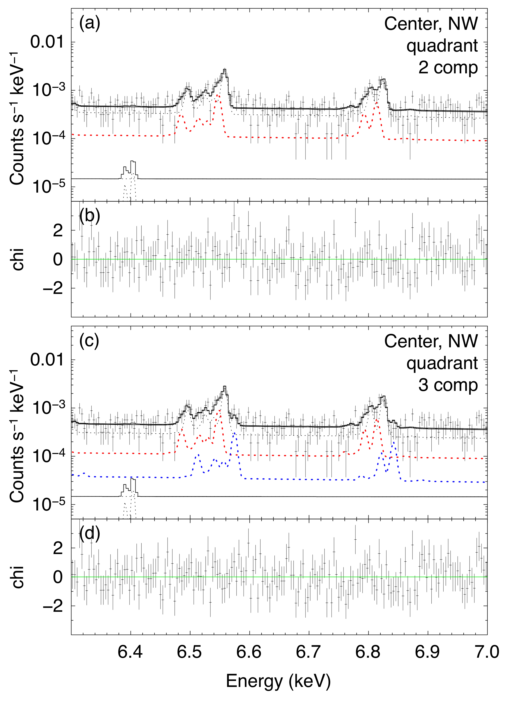
图注：Close-up around \(\color{black}\) Fe-K line complex \(\color{black}\) of the spectra of the NW quad region of center pointing, fitted with the \(\color{black}\) two components \(\color{black}\) model (panels (a) and (b)) and the $3kT$ model (panels (c) and (d)). The secondary redshifted components are shown in red, and the third blueshifted component is shown in blue. The black component shown in the bottom of panels (a) and (c) represent the NXB model. {Alt text: Two line graphs, each with an upper part and a lower part. In both parts, the x axis shows the energy from 6.3 to 7 kilo electron volt. In the upper parts, the y axis shows the count rate from 0.00005 to 0.05 counts per second per kilo electron volt. In the lower parts, the y axis shows the residual values from minus 4 to 4.}
对应解读：对应“建议重点查看的图表”第3项和“关键图表逐图导读”图3：中心视场西北象限 Fe-K 线轮廓、多成分拟合与残差比较。
入选理由：这张图直接展示 NW 象限中 Paper I 两成分模型与本文加入第三个蓝移成分后的 Fe-K 线复合体拟合，且明确标出红移次成分和蓝移第三成分，是支撑 \(\Delta cz=-1250\\,\mathrm{km\\,s^{-1}}\) 蓝移气体证据的核心图。相比全视场图，它更直接对应本文最重要的新发现之一，并可检查残差是否为相干线肩而非单个离群点。
来源与置信度：\(arxiv_source\)；high；\(arxiv_source\) / main.tex:figure[3]
Fig05
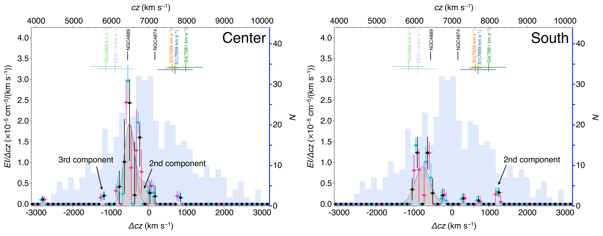
图注：Results of 3~eV stepped fitting to the Center (left) and South (right) spectra, shown as a cross with dots. Horizontal axis is $cz$. Results with $+$ and $-1$~eV shift of the redshift is also shown as pink and sky-blue dots, respectively. Overlaid in gray is the results of \(\color{black}\) two components \(\color{black}\) (\texttt{Center}) and \(\color{black}\) one component \(\color{black}\) (\texttt{South}) fitting with velocity dispersion in Gaussian functions. In the \(\texttt{Center}\) plot, there are the main component, the second component (redshifted) and the third component (blueshifted). In the \(\texttt{South}\) plot, there are the main component and the second redshifted component. See table~\(\ref{table:redshifts_4}\) for detail. The light-blue histogram overlaid are the velocities of the Coma cluster member galaxies within $r<20'$ from the X-ray center (\(\cite{2025ApJ...985L..20X},\) Figure 7), and the colored crosses on top represents the $cz$ of the five optical subgroups with their velocity dispersions. {Alt text: Two distribution plots. In both the left and right panels, the range of the horizontal axis is approximately 3900 to 10200 kilo meter per second. Vertical axis represents the emission integral normalized per unit \(\color{black}\) line-of-sight velocity \(\color{black}\) bin, with units of per cubic centimeter to the minus 5 power per three kilo meter per second. The plotted range is from minus 1 times 10 to the minus 6 to 4 point 5 times 10 to the minus 5. A light-blue histogram overlaid with two distribution plots. The top x axis shows the redshift from 0.013 to 0.034, corresponding to the \(\color{black}\) line-of-sight velocity \(\color{black}\) on the bottom x axis. The right y axis corresponds to the histogram and indicates the number of galaxies from 0 to 44.}
对应解读：对应“建议重点查看的图表”第4、5、7项，以及“关键图表逐图导读”图5：多速度成分汇总、3 eV 步长搜索结果、增益偏移稳健性和成员星系速度对比。
入选理由：该图以 \(cz\) 为横轴汇总中心和南侧视场的多速度成分，显示主成分、中心红移/蓝移成分以及南侧红移成分，并叠加 \(\pm1\) eV 增益偏移结果、成员星系速度直方图和光学子群速度。它同时支撑南侧 \(\Delta cz\sim+1230\\,\mathrm{km\\,s^{-1}}\) 成分、系统误差敏感性和物理解释，是日报中模型拟合与稳健性讨论最需要的图。
来源与置信度：\(arxiv_source\)；high；\(arxiv_source\) / main.tex:figure[5]
Fig02
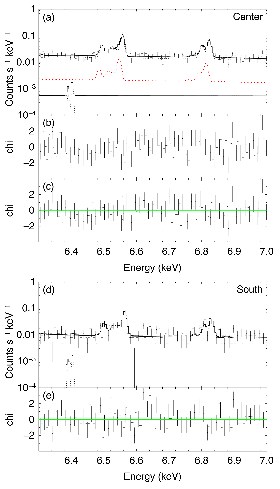
图注：(a) Close-up around Fe-K line \(\color{black}\) complex \(\color{black}\) regions of the center pointing, fitted with the \(\color{black}\) two components \(\color{black}\) model. (b) Residual plot for the \(\color{black}\) one component model, and (c) that of the two components \(\color{black}\) model. (d) Spectra of the south pointing, and (e) residual plot for the \(\color{black}\) one component \(\color{black}\) model. {Alt text: Two line graphs. In all panels (a)--(e), the x axis shows the energy from 6.3 to 7 kilo electron volt. In panels (a) and (d), the y axis shows the count from 0.00005 to 0.05 counts per second and per kilo electron volt. In panels (b), (c), and (e), the residual from minus 4 to 4.}
对应解读：对应“建议重点查看的图表”第2项和“关键图表逐图导读”图2：中心与南侧全阵列 Fe-K 光谱、单成分/双成分模型残差。
入选理由：这张图展示中心视场 Fe-K 区域的两成分拟合、单成分与两成分残差，以及南侧视场单成分残差，是判断平均速度是否掩盖非高斯或多峰线型的基础证据。它能直接支持日报关于单速度模型残差、Fe-K 复合线读图陷阱和多成分拟合必要性的讨论。
来源与置信度：\(arxiv_source\)；high；\(arxiv_source\) / main.tex:figure[2]
Fig04
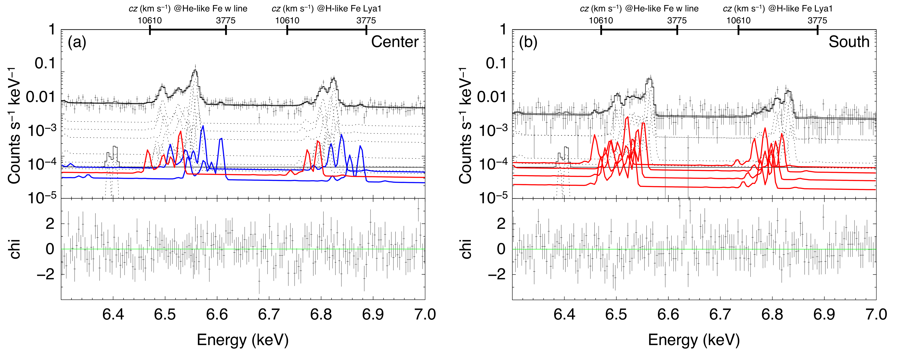
图注：Results of 3~eV stepped fitting to (a) \(\texttt{Center}\) and (b) \(\texttt{South}\) spectra. The red and blue solid lines indicate the red/blueshifted components in each observation, respectively. In the \(\texttt{South}\) spectra, no blueshifted component was needed. See text for detail. The x axis at the top of each panel shows the range of \(\color{black}\) line-of-sight velocities \(\color{black}\) at the \(\color{black}\) Fe He-$\alpha$ \(\color{black}\) \(\textit{w}-line\) and the Fe Ly$\alpha$1 line. {Alt text: Two line graphs. Panels (a) and (b) each consist of an upper part and a lower part. In both panels, the bottom x axis shows the energy from 6.3 to 7 kilo electron volt. The range of the top x axis is 3775 to 10610 kilo meter per second. In the upper parts, the y axis shows the count rate from 0.00001 to 1 counts per second per kilo electron volt. In the lower parts, the y axis shows the residuals from minus 4 to 4.}
对应解读：对应“建议重点查看的图表”第4项和模型拟合段落：3 eV 步长多成分搜索在 Center 与 South 光谱中的结果及残差。
入选理由：图中给出 Center 与 South 的 3 eV stepped fitting 结果，并标出红移/蓝移成分，是检验额外速度成分如何改善 Fe-K 区域拟合的重要图。虽然它不是单纯的 \(\Delta C\) 或似然改善曲线，但仍然直接对应日报中关于无偏速度扫描、南侧红移成分和残差改善的解读。
来源与置信度：\(arxiv_source\)；high；\(arxiv_source\) / main.tex:figure[4]
Fig01
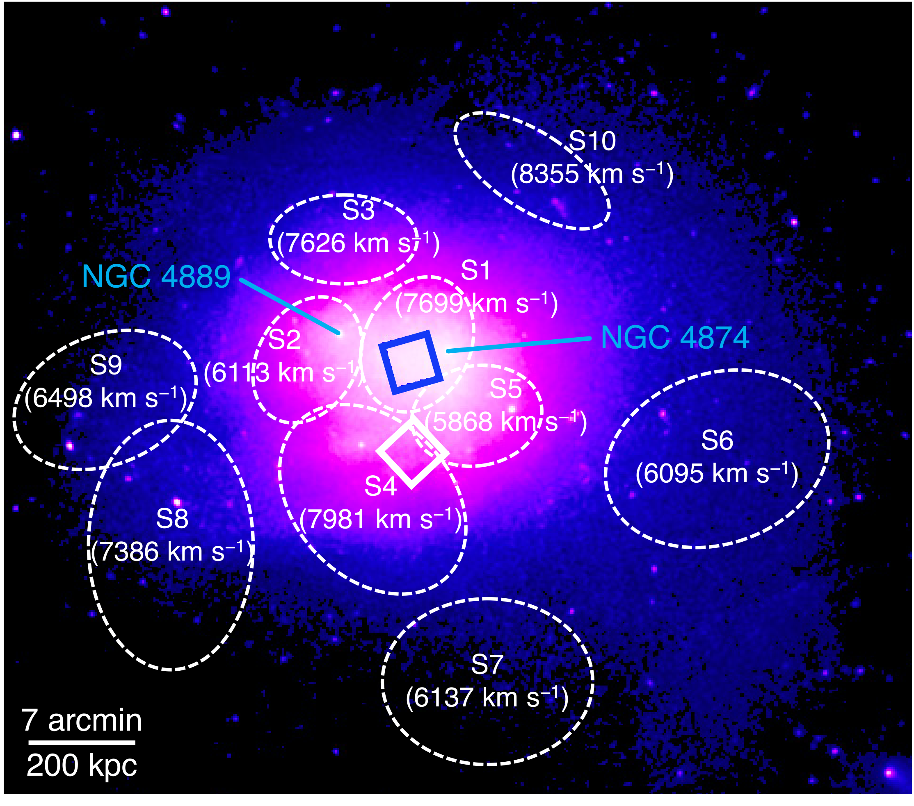
图注：Pointing location of the two XRISM PV Coma cluster observations, overlaid on an XMM-Newton/PN X-ray image in the 0.7--12~keV band. The blue square denotes the Center observation and the white square denotes the South observation. The two BCGs are marked with blue notes. Galaxy groups identified from optical redshifts (\cite{2021AandA...650A..76H}) lie within the white dashed regions, and the accompanying numbers indicate their bulk velocities. {Alt text: Image showing the X-ray surface brightness in the 0.7 to 12 kilo electron volt band.}
对应解读：对应“建议重点查看的图表”第1项和“关键图表逐图导读”图1：两个 XRISM/Resolve 视场在后发座 X 射线图上的位置。
入选理由：该图显示中心和南侧两个 \(3'\times3'\) Resolve 视场叠加在 XMM-Newton X 射线图上的位置，并标出 BCG、光学星系群及其速度，是理解空间采样、动力学区域差异和不能过度外推全星系团速度梯度的必要背景图。
来源与置信度：\(arxiv_source\)；high；\(arxiv_source\) / main.tex:figure[1]
强相关工作
这篇工作与 Hitomi 对英仙座星系团的微量热计测量属于同一技术路线：用高分辨率 X 射线谱线直接测 ICM 速度。不同之处在于英仙座核心相对平静，Hitomi 发现的速度弥散较低；后发座是并合和射电晕系统，本文强调多 bulk component 和非高斯线型。检索关键词可用 “XRISM Resolve Coma cluster Fe-K velocity”, “Hitomi Perseus intracluster medium turbulence”, “ICM bulk motion X-ray calorimeter”。
与后发座星系团本身相关的文献包括 X 射线温度/熵图、弱透镜质量分布、成员星系动力学、射电晕和磁场估计等。本文的速度成分应与这些同源研究对照，而不是孤立解释。尤其值得检索 “Coma cluster radio halo turbulence reacceleration”, “Coma cluster merger dynamics”, “Coma cluster weak lensing substructure”, “Coma cluster XMM Suzaku Chandra temperature map”。
潜在张力来自两类解释：一类认为射电晕主要由湍流再加速维持，因而期待并合运动能量与磁场、宇宙线能量有关；另一类强调 hadronic secondary models 或认为部分非热信号可由投影和系统误差解释。本文发现气体动能高于磁场能量密度，有利于湍流/并合供能图像，但还不能单独证明射电电子的具体起源。
同一事件 / 同类源线索：
相似工作：
基础理论 / 方法工作：
相反观点 / 张力线索：
（未提供）
10. Compelling evidence of a link between the lags of the quasi-periodic oscillations and the radio jet in the black-hole X-ray binary GRS 1915+105
- 来源：arXiv / astro-ph.HE
- 链接：https://arxiv.org/abs/2609.15672v1
- 作者：Candela Bellavita, Mariano Méndez, Federico García, Sara Motta, Pengcheng Yang, Wyncko Tonckens, Liang Zhang, Rob Fender
- 评分：novelty 7/10，importance 8/10，relevance 8/10，final 8.70/10
- 推荐理由：NICER spectral-timing plus quasi-simultaneous radio data give a clear observational test of the proposed connection between type-C QPO phase lags and jet activity in GRS 1915+105. Not directly gamma-ray related, but highly relevant high-energy X-ray binary/accretion-ejection physics with a concrete new result.
中文题目：黑洞X射线双星 GRS 1915+105 中准周期振荡相位滞后与射电喷流的联系证据
做了什么：这篇文章用 NICER 在 2018–2020 年对 GRS 1915+105 的观测，重新检查了该源 type-C 准周期振荡的能量依赖相位滞后，并与近同时的 AMI-LA 射电监测对照。过去 RXTE 结果显示，当 QPO 频率降到约 \(2\,{\rm Hz}\) 以下时，QPO 滞后会从软滞后转为硬滞后，而且硬滞后与强射电活动同时出现。本文发现，在 NICER 时代 \(\sim 1.3\)–\(3.9\,{\rm Hz}\) 的 type-C QPO 始终表现为软滞后，即使频率低于 \(2\,{\rm Hz}\) 也没有出现 RXTE 时代的硬滞后；与此同时 AMI-LA 测得射电通量一直很低，约 \(\lesssim 5\,{\rm mJy}\)。核心结论是：GRS 1915+105 中低频 QPO 的硬相位滞后很可能不是单由 QPO 频率决定，而与强射电喷流状态有关。
为什么重要：GRS 1915+105 是研究黑洞吸积—喷流耦合的标杆源，type-C QPO 又是探测内吸积流几何和时变辐射区域的关键时域信号。本文把“QPO 频率—滞后符号”这个过去看似简单的经验关系，改写成“QPO 滞后—射电喷流状态”的物理关系。如果结论成立，QPO 的相位滞后不仅是热盘和热冕之间的辐射传输效应，还可能直接携带喷流或喷流基部的信息。
理论 / 观测 / 仪器方法价值：对理论而言，它为把喷流基部纳入 type-C QPO 滞后模型提供了观测动机，限制了只依赖进动热内流或静态康普顿化区的解释。对观测而言，它展示了 X 射线时变谱和射电监测必须近同时使用，否则容易把状态依赖误判为频率依赖。对方法而言，文章强调了在同一源的不同时代、不同仪器能段中比较相位滞后时，必须控制能带、参考带、QPO 宽度、背景和喷流状态。
为什么应该关注：如果你关心黑洞双星的 QPO 物理、热冕几何、喷流启动或多波段时域天文学，这篇文章值得看。它不是发现一个新的 QPO，而是指出一个老牌源中广泛引用的滞后翻转现象可能有更具体的物理触发条件：强射电喷流。这个结果会影响我们如何用 QPO 滞后来反演内吸积流结构，也会影响今后 NICER、HXMT、IXPE、MeerKAT、AMI-LA 或 SKA 路径探测吸积—喷流耦合的观测策略。
展开详细解读：文章讲解、背景、理论、重点章节、图表与相关工作
文章详细讲解
科学问题：GRS 1915+105 的 type-C QPO 在 RXTE 时代曾显示出一个很有名的现象：当 QPO 频率 \(\nu_{\rm QPO}\) 高于约 \(2\,{\rm Hz}\) 时，低能光子相对高能光子滞后，即软滞后；当 \(\nu_{\rm QPO}\) 低于约 \(2\,{\rm Hz}\) 时，滞后符号反转为硬滞后。因为 type-C QPO 通常与硬态、内热流、热冕和喷流有关，这个翻转曾被理解为随内盘半径、热冕尺度或传播扰动变化而发生的几何变化。本文要问的是：滞后翻转真的是由 \(\nu_{\rm QPO}\) 本身控制，还是由与 \(\nu_{\rm QPO}\) 共变的另一物理量——尤其是射电喷流——控制？
作者怎么做：文章分析了 2018–2020 年 NICER 对 GRS 1915+105 的观测。这一时期该源 X 射线通量整体下降，处于与经典明亮 RXTE 时代不同的低通量演化阶段。作者在每个观测中搜索 type-C QPO，测量其中心频率、宽度、均方根振幅和相位滞后，并特别关注 \(\nu_{\rm QPO}\sim 1.3\)–\(3.9\,{\rm Hz}\) 的区间，因为这里覆盖了过去 RXTE 所谓 \(2\,{\rm Hz}\) 滞后翻转阈值。随后他们把 NICER 的 X 射线时序结果与近同时 AMI-LA 射电通量比较，用来判断是否存在强射电活动。
关键结果：NICER 数据中的 type-C QPO 在整个频率区间内都表现为软滞后，没有在 \(\nu_{\rm QPO}<2\,{\rm Hz}\) 时出现显著硬滞后。这一点直接挑战了“GRS 1915+105 中 \(\nu_{\rm QPO}<2\,{\rm Hz}\) 必然对应硬滞后”的经验规则。与此同时，AMI-LA 射电观测显示这些 NICER 观测附近的射电通量一直很低，约 \(\lesssim 5\,{\rm mJy}\)，与 RXTE 时代硬滞后出现时常伴随的强射电发射不同。于是，一个更自然的解释是：硬 QPO 滞后与强喷流或喷流基部有关，而低 QPO 频率只是过去样本中与喷流状态相关联的伴随变量。
局限和下一步：这篇文章的核心证据来自跨时代比较：NICER 时代低射电、低通量，没有硬滞后；RXTE 时代强射电时常有硬滞后。跨仪器比较总会涉及能段、响应、计数率、背景和源状态差异，虽然作者通过聚焦相位滞后符号和近同时射电信息减轻了问题，但仍需要更多严格同能段、同方法的再分析来量化。下一步最有价值的是系统重处理 RXTE 与 NICER 数据，统一能带定义、滞后参考带和 QPO 拟合流程，并加入 MeerKAT、AMI-LA 或其他射电监测，建立以射电亮度或喷流功率为自变量的 QPO 滞后统计样本。
关键结果是怎么做出来的
本文最重要的证据链从样本选择开始。作者没有泛泛统计所有 NICER 观测，而是选取 2018–2020 年 GRS 1915+105 在长期变暗阶段的观测，寻找可识别的 type-C QPO。这个时间段的价值在于它覆盖了过去 RXTE 结果中最关键的 QPO 频率范围：\(\nu_{\rm QPO}\) 可以落到 \(2\,{\rm Hz}\) 以下，但源的射电状态并不强。也就是说，这是一组可以把“低频 QPO”和“强喷流”拆开的天然实验。
在 X 射线时序分析上，作者需要先从功率谱中识别 type-C QPO，通常依据其较高相干性、较强窄峰、频率位于低频段、常伴随宽带噪声等特征。随后在不同能段之间计算交叉谱相位，提取 QPO 峰附近的平均相位滞后。这里的关键不是连续谱滞后，而是 QPO 频率处的相位滞后，因此必须围绕洛伦兹峰积分或在 QPO 模型约束下估计误差。结论依赖于这些 QPO 点在 \(\nu_{\rm QPO}\sim 1.3\)–\(3.9\,{\rm Hz}\) 中是否系统落在软滞后一侧。
显著性和置信度的核心体现在两层。第一层是每个观测中 QPO 峰本身是否显著，通常通过功率谱中窄峰相对泊松噪声和宽带噪声模型的改善来判断。第二层是相位滞后是否显著偏离零，以及低于 \(2\,{\rm Hz}\) 的点是否支持硬滞后。本文的结果是，NICER 检出的 type-C QPO 在低频端仍没有给出硬滞后证据，而是与软滞后一致；这不是简单的“没有看到 QPO”，而是在看到 QPO 的情况下没有看到过去预期的滞后翻转。
射电部分是模型比较的关键外部证据。AMI-LA 近同时观测显示射电通量 \(\lesssim 5\,{\rm mJy}\)，说明这些 X 射线观测期间没有处于强射电喷流活动。把这一点与 RXTE 时代的结论对照，得到一个比单变量频率关系更强的判据：当 \(\nu_{\rm QPO}<2\,{\rm Hz}\) 且射电强时可出现硬滞后；当 \(\nu_{\rm QPO}<2\,{\rm Hz}\) 但射电弱时仍是软滞后。因此，射电喷流状态比 QPO 频率本身更像是决定硬滞后的隐藏变量。
支撑结论的图表应当包括 QPO 频率随时间或观测序列的演化、相位滞后随 \(\nu_{\rm QPO}\) 的关系、射电通量随时间的监测图，以及可能的硬度—强度或 rms—频率诊断。读者要重点看低于 \(2\,{\rm Hz}\) 的 NICER 点是否有足够小的误差条、这些点是否在不同能带定义下仍保持软滞后、以及 AMI-LA 观测是否足够接近 X 射线观测时间。稳健性检验主要应围绕能带选择、参考带选择、QPO 峰积分范围、背景处理和交叉谱误差估计展开。
主要系统误差来自跨仪器和跨状态比较。NICER 的软 X 射线响应与 RXTE/PCA 不同，若滞后具有强能量依赖，直接比较绝对相位可能有偏差；GRS 1915+105 的吸收、遮挡和低通量状态也会改变软能段的贡献。本文结论最可靠的部分是“NICER 低射电时期没有出现 RXTE 强射电时期那种硬滞后”，但要把它转化为定量喷流模型，还需要统一能段后的 RXTE 重分析和更大的多波段样本。
展开背景、理论、公式、模型、章节和图表导读
背景知识
GRS 1915+105 是银河系中最著名的黑洞 X 射线双星之一，也是微类星体研究的核心样本。它以超光速射电喷流、极端 X 射线变率、复杂的光变类别和长期接近或达到高吸积率状态而闻名。与许多瞬变黑洞双星相比，GRS 1915+105 长时间保持活跃，使得人们可以在同一个系统中观察从内盘不稳定、热冕变化到喷流发射的连续耦合过程。
低频 QPO，特别是 type-C QPO，是黑洞双星时域研究中最常用的诊断工具之一。它们通常出现在硬态或硬中间态，具有相对高的品质因子和较强的宽带噪声背景。许多模型把 type-C QPO 与内热流的几何进动、热冕振荡、盘—冕耦合或传播扰动联系起来。相位滞后则提供了额外维度：它告诉我们不同能量光子在 QPO 周期中的相位关系，从而约束硬 X 射线区域与软热盘区域之间的时序联系。
历史上，RXTE 对 GRS 1915+105 的观测显示了一个引人注目的趋势：type-C QPO 的相位滞后似乎在 \(\nu_{\rm QPO}\sim 2\,{\rm Hz}\) 附近改变符号。高频时软滞后，低频时硬滞后，而且硬滞后与强射电发射同时出现。这一结果经常被引用，因为它把 X 射线 QPO 的微秒到秒级时序结构与射电喷流的宏观喷出联系了起来。不过，早期讨论中容易把频率阈值当成直接物理开关，而忽略频率、谱态、吸积率、喷流功率之间的共变。
现在值得重新看这个问题，是因为 NICER 提供了高时间分辨率和优良软 X 射线有效面积，而 GRS 1915+105 在 2018 年后进入了长期低通量、强吸收或变暗状态。这种状态虽然复杂，却恰好提供了不同于 RXTE 明亮时代的参数空间。如果在相同或相近 QPO 频率下，滞后行为因为射电状态不同而改变，那么这会迫使模型从单一频率序列转向真正的多参数吸积—喷流耦合描述。
该领域常见误区有三个。第一，把 QPO 中心频率简单等同于内盘半径或某个唯一几何尺度，而不考虑热冕形态、质量吸积率、倾角和喷流状态。第二，把相位滞后的正负号直接解释成光子传播时间，而忽略傅里叶相位、混合谱成分和响应函数卷积的影响。第三，把 X 射线和射电的非同时观测强行配对；对于 GRS 1915+105 这类快速多态源，近同时性往往决定了解释是否可信。
基础理论 / 方法脉络
从物理图像看，黑洞双星的软 X 射线主要来自冷的几何薄盘，硬 X 射线通常来自热电子区域的康普顿化辐射，这个区域可被称为热冕、内热流或喷流基部。若某个几何或辐射参数以准周期方式振荡，不同能段的光变会在同一 QPO 周期中出现相位差。相位差可以反映辐射传播、种子光子反馈、谱形摆动、遮挡，也可能反映喷流基部中较硬辐射区域的响应延迟。
在傅里叶时序分析中，QPO 不是光变曲线中严格周期信号，而是功率谱中的有限宽度峰。type-C QPO 通常用洛伦兹函数拟合，中心频率 \(\nu_0\)、半高宽或特征宽度、品质因子和积分 rms 是基本量。若同一 QPO 在软能带和硬能带中都存在，就可以计算两条光变的交叉谱，得到相位滞后。正负号约定需要特别小心：不同论文可能把硬滞后定义为高能相对低能延迟，也可能反过来报告低能相对高能的相位。
本文的关键假设是：若 RXTE 时代的低频硬滞后只是由 \(\nu_{\rm QPO}\) 决定，那么 NICER 在 \(\nu_{\rm QPO}<2\,{\rm Hz}\) 时也应看到同样硬滞后；若硬滞后需要强喷流参与，那么在射电弱的 NICER 时期，即使 QPO 频率落到低于 \(2\,{\rm Hz}\)，也不应出现强硬滞后。这个思路把射电通量当作喷流活动的观测代理量，把 QPO 相位滞后当作内区几何和辐射耦合的时域代理量。
常见退化关系包括频率与谱态退化、能段与辐射成分退化、滞后与相干性退化。比如同样的相位滞后可以来自真实传播延迟，也可以来自两个谱成分相对权重随相位改变；同样的射电低通量可以表示喷流弱，也可能受到吸收、采样间隔或频率依赖影响。NICER 的低能优势使其对软盘和吸收更敏感，但也意味着与 RXTE 的能段比较必须谨慎。
公式与推导
第一步是把两条能带光变写成均值加扰动。设软能带和硬能带计数率为 \(x_s(t)\) 与 \(x_h(t)\)，其傅里叶变换为 \(X_s(\nu)\) 与 \(X_h(\nu)\)：
这里 \(\nu\) 是傅里叶频率，\(i\) 标记能带。QPO 分析关注 \(\nu\) 接近 \(\nu_{\rm QPO}\) 的窄频段。
第二步是定义功率谱。常用 rms 归一化下，功率谱 \(P_i(\nu)\) 与光变的分数变率有关：
实际比例因子取决于计数率、时间 bin 和归一化约定。其物理含义是单位频率上的方差贡献，QPO 就是在宽带噪声上叠加的局域增强。
第三步用洛伦兹函数描述 QPO 峰：
其中 \(\nu_0\) 是中心频率，\(\Delta\) 是半宽度参数，\(R\) 与积分分数 rms 相关。品质因子可写为
当 \(Q\) 足够大且峰强明显时，通常可把它识别为准周期振荡而非普通红噪声起伏。
第四步是交叉谱。软、硬能带的复交叉谱定义为
其中星号表示复共轭。相位滞后为
若约定 \(C_{sh}\) 如上，则 \(\phi_{sh}\) 的正负要结合作者定义解释；本文的核心是滞后符号是否从软滞后转为硬滞后。
第五步把相位滞后换算为时间滞后：
这个式子只在相位包裹不严重、同一傅里叶成分可比较时直观。对 QPO 而言，常在 \(\nu_{\rm QPO}\) 周围对 \(\phi(\nu)\) 做加权平均。
第六步是相干性诊断，用于判断两个能带是否共享同一变率成分：
这里 \(\langle\cdot\rangle\) 表示对时间段或频率 bin 平均。若 \(\gamma^2\) 很低，相位滞后会难以解释，因为两个能带的变率可能不是同一物理过程。
第七步把射电通量作为喷流代理量。若射电谱通量密度为 \(F_\nu\)，距离为 \(D\)，单频谱光度可写为
本文不需要精确喷流功率标定，但 \(F_\nu\lesssim 5\,{\rm mJy}\) 相对强射电时期偏低，足以作为喷流活动弱的经验指标。
第八步可把本文的经验判据写成条件关系，而非严格物理定律：
其中 \(F_{\rm R}\) 是射电通量，\({\cal S}\) 表示谱态、吸收、能带和几何状态。RXTE 时代似乎显示 \(\phi_{\rm QPO}\) 随 \(\nu_{\rm QPO}\) 在 \(2\,{\rm Hz}\) 附近翻转；NICER 结果提示 \(F_{\rm R}\) 或喷流状态是不可忽略的控制参数。
模型拟合 / 应用方法
这类工作的第一层拟合是功率谱拟合。通常把每个观测或每段光变的功率谱表示为泊松噪声、宽带噪声和一个或多个洛伦兹峰的和。拟合量包括 QPO 中心频率 \(\nu_{\rm QPO}\)、宽度、品质因子、积分 rms，以及可能的谐波频率。对于 GRS 1915+105，宽带噪声复杂且状态变化快，因此 QPO 峰是否稳健依赖于分段长度、频率分辨率和背景处理。
第二层是相位滞后估计。给定 QPO 频率范围后，作者需要在软、硬能带之间计算交叉谱，并在 QPO 峰附近对相位进行平均。这里的统计误差来自有限段数、计数噪声和相干性；系统误差来自能带选择、参考带污染、QPO 峰宽定义和相邻噪声成分。若参考带包含待比较能带，会引入相关噪声，需要用标准交叉谱方法处理。
第三层是与 RXTE 历史关系的模型比较。一个简单模型是 \(\phi_{\rm QPO}=g(\nu_{\rm QPO})\)，即滞后只由 QPO 频率决定；另一个模型是 \(\phi_{\rm QPO}=g(\nu_{\rm QPO},F_{\rm R})\)，即射电喷流状态参与控制。本文的 NICER 点相当于对前一个模型的反例：在 \(\nu_{\rm QPO}<2\,{\rm Hz}\) 时没有硬滞后。虽然文章未必进行形式化贝叶斯模型选择，但证据逻辑上支持第二类多参数模型。
参数退化主要体现在 \(\nu_{\rm QPO}\)、X 射线硬度、源通量和射电通量之间。RXTE 时代低频 QPO 可能经常出现在喷流强的状态，因此过去样本难以判断到底是频率还是喷流导致硬滞后。NICER 低通量时代打破了这一退化，但又引入新的系统项：源可能处于不同吸收/遮挡环境，软能带成分和几何结构不一定与 RXTE 时代可直接类比。
实际应用上，读者应把本文结果理解为“相位滞后是吸积—喷流耦合诊断量”的证据，而不是一个已经完成的喷流辐射模型。若将来要拟合物理模型，需要同时拟合能谱、功率谱、交叉谱、射电光变，甚至偏振和红外数据。模型可能失败的地方包括：射电通量不是喷流基部瞬时功率的好示踪；X 射线硬滞后来自热冕而非喷流；或者不同状态下 QPO 的同名 type-C 分类掩盖了不同物理机制。
重点章节 / 结果段落怎么读
数据和样本部分应首先阅读。重点看 NICER 观测覆盖的时间范围、曝光、计数率变化、能带定义，以及 AMI-LA 射电观测与 X 射线观测的时间间隔。本文结论高度依赖“近同时低射电”和“低频 QPO 同时存在”这两个条件，因此样本表或观测日志非常关键。
时序分析方法部分是第二个重点。读者应检查作者如何生成功率谱、采用什么归一化、怎样扣除泊松噪声、用哪些洛伦兹成分拟合 QPO，以及 type-C QPO 的判据是什么。还要看 QPO 相位滞后是在固定频率 bin 中测量，还是在拟合得到的 QPO 宽度内积分。
主结果部分要围绕相位滞后—频率图阅读。关键问题是：\(\nu_{\rm QPO}<2\,{\rm Hz}\) 的 NICER 点是否确实在软滞后一侧？误差条是否允许强硬滞后？与 RXTE 历史点相比，差异是否大于跨仪器系统误差？如果文章给出能量依赖滞后谱，也应检查软滞后是否只由最低能通道驱动。
射电对照部分应与 X 射线结果一起读。AMI-LA 的低射电通量是本文解释转向喷流的关键。读者要看射电观测的采样是否足以排除短时强 flare，射电频率和通量标定如何，以及 \(\lesssim 5\,{\rm mJy}\) 相对 GRS 1915+105 历史强射电态处于什么水平。
讨论和结论部分应重点看作者如何处理替代解释。合理讨论应包括 NICER 与 RXTE 能段不同、低通量状态下吸收和遮挡改变、QPO 分类一致性、硬滞后可能来自喷流基部或热冕几何改变等问题。若附录中有不同能带或不同时间段的稳健性检验，也应优先阅读。
建议重点查看的图表
-
长期 X 射线和射电光变图：看 NICER 观测落在 GRS 1915+105 的哪个长期阶段，AMI-LA 射电点是否与 X 射线点近同时，以及射电是否始终低于几 mJy 水平。
-
代表性功率谱图：看 type-C QPO 峰在 \(\sim 1.3\)–\(3.9\,{\rm Hz}\) 是否清晰，宽带噪声模型是否合理，QPO 峰是否可能与噪声弯折混淆。
-
QPO 频率随时间或通量的图：看 NICER 样本是否确实覆盖 \(2\,{\rm Hz}\) 阈值两侧，尤其是低于 \(2\,{\rm Hz}\) 的数据点数量和误差。
-
QPO 相位滞后随 \(\nu_{\rm QPO}\) 的图：这是核心图。应检查 NICER 点在低频处是否仍为软滞后，并与 RXTE 历史关系或参考线比较。
-
能量依赖滞后谱：若有，应看相位滞后是否随能量单调变化，是否只有某个受吸收影响的软能段异常，或者所有能段共同支持软滞后。
-
射电通量与 QPO 滞后的联合图或表：看硬/软滞后是否与射电强弱而非单纯频率更一致。若没有联合图，样本表中的近同时射电列就很重要。
-
稳健性诊断：包括不同参考带、不同 QPO 积分宽度、不同时间分段得到的滞后结果。关键是低频软滞后是否对这些选择不敏感。
关键图表逐图导读
图 1：如果文章给出长期光变图，横轴通常是时间，纵轴为 NICER X 射线计数率或通量以及 AMI-LA 射电通量密度。读图时要确认 2018–2020 年源通量是逐渐下降的，并且射电点没有出现 RXTE 强喷流时期那种高通量 flare。陷阱是 X 射线和射电可能不是严格同时，不能把相隔很久的点当作同一物理状态。
图 2：代表性功率谱通常以频率为横轴、功率或 \(\nu P_\nu\) 为纵轴，数据点上叠加宽带噪声和洛伦兹 QPO 模型线。读者应看 QPO 峰是否足够窄、中心频率是否稳定，以及拟合残差中是否还存在未建模结构。陷阱是低频红噪声会把一个宽峰伪装成 QPO，尤其在源状态快速变化时。
图 3：相位滞后随 QPO 频率的关系图应是本文的核心。横轴为 \(\nu_{\rm QPO}\)，纵轴为 QPO 相位滞后或时间滞后，可能用正负号区分硬滞后和软滞后。关键读法是比较 \(2\,{\rm Hz}\) 以下 NICER 点与 RXTE 历史硬滞后区域：如果 NICER 点仍系统位于软滞后一侧，就说明频率阈值不是充分条件。陷阱是不同论文滞后符号约定可能相反，必须先看图注定义。
图 4：如果有滞后—能量谱，横轴为能量通道，纵轴为相对于参考带的相位滞后。读者应检查软滞后是否在多个能量通道中一致，还是由最低能、最高吸收敏感通道主导。模型线若只是经验拟合，不应过度解读为唯一的传播路径。
图 5：若有射电通量、QPO 频率和相位滞后的联合图，横轴可能是时间或 \(F_{\rm R}\)，纵轴可能是 \(\phi_{\rm QPO}\)。这类图的重点是看硬滞后是否只在高射电通量时出现。陷阱是射电通量是喷流的延迟响应，X 射线 QPO 与射电峰之间可能存在时滞，因此近同时不等于严格同因果时刻。
图 6：若附录给出不同能带或不同分段长度的稳健性图，应重点看低频 QPO 的滞后符号是否保持不变。若改变能带后滞后符号翻转，则说明结果可能强烈依赖仪器响应或谱成分混合；若只是振幅变化而符号稳定，则支持本文主结论。
论文原图 / 可嵌入图片
Fig04
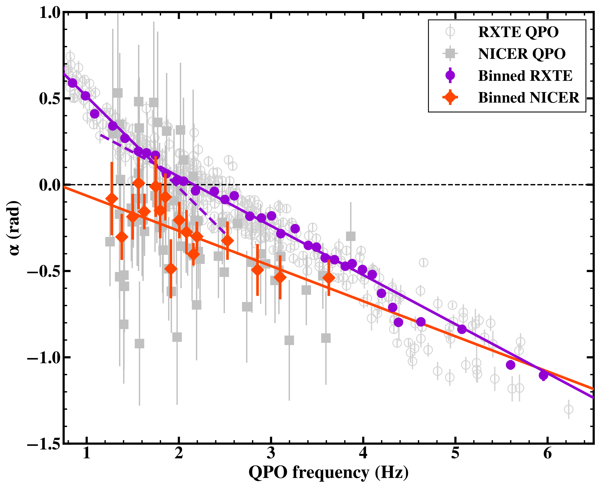
图注：Slope of the phase-lag spectra of the type-C QPO in \(\grs\) as a function of the QPO frequency. Empty grey circles and grey squares show individual \(\RXTE\) and \(\NICER\) data, respectively. The purple filled circles (\RXTE) and red diamonds (\NICER) show the data rebinned in frequency to reduce the error bars. The purple solid line shows the best-fitting broken line to the binned \(\RXTE\) data, with the purple dashed lines indicating its extrapolation for comparison. The red solid line shows the best fit to the \(\NICER\) binned data.
对应解读：对应“建议重点查看的图表”第4项和“关键图表逐图导读”图3：QPO 相位滞后随 \(\nu_{\rm QPO}\) 的核心关系图；也对应模型比较中“滞后只由频率决定”与“喷流状态参与控制”的对比。
入选理由：这是本文最核心的证据图，直接比较 NICER 与 RXTE 的 type-C QPO 相位滞后谱斜率随 QPO 频率的变化，并包含 RXTE 破折线外推和 NICER 拟合线。它最能检验低于 \(2\\,\mathrm{Hz}\) 时 NICER 是否仍保持软滞后，从而支撑“频率阈值不是充分条件、射电喷流状态可能控制硬滞后”的主结论。
来源与置信度：\(arxiv_source\)；high；\(arxiv_source\) / aa61476-26.tex:figure[4]
Fig01
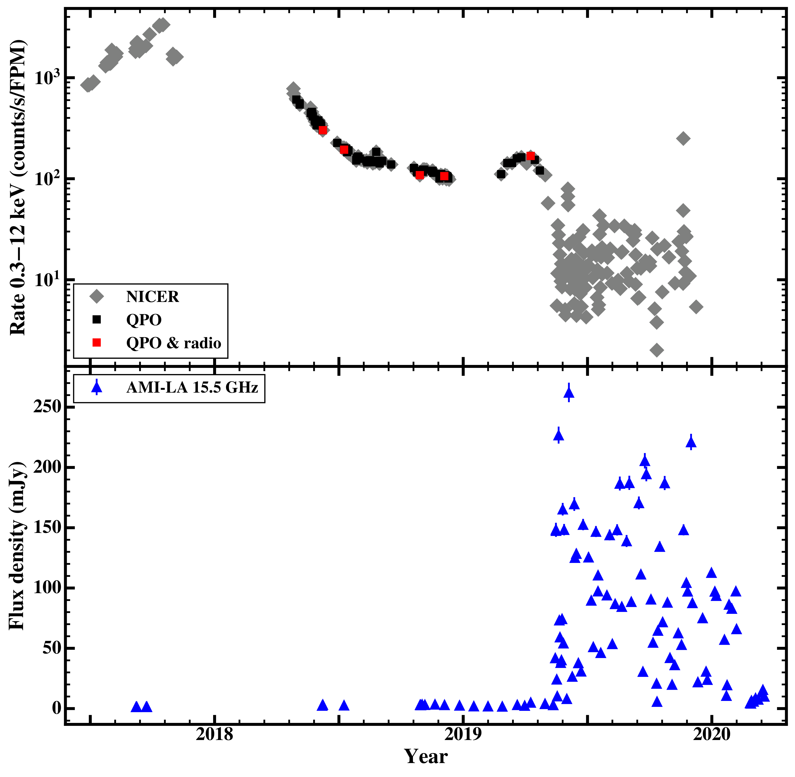
图注：Top panel: \(\NICER\) X-ray lightcurve of \(\grs\) from June 2017 to December 2020. The intensity is the count rate per detector in the $0.3-12$~keV band. Each grey diamond corresponds to a \(\NICER\) observation, the black squares are the \(\NICER\) observations in which we detect a QPO, while the red squares are the observations with QPOs and a simultaneous radio measurement within 0.5 days. Bottom panel: AMI-LA radio 15.5 GHz light curve covering the same time period.
对应解读：对应“建议重点查看的图表”第1项：长期 X 射线和射电光变图；也对应“关键图表逐图导读”图1关于 2018–2020 年低通量阶段和 AMI-LA 射电低通量的判断。
入选理由：该图同时给出 NICER 0.3–12 keV 长期光变和 AMI-LA 15.5 GHz 射电光变，并标出有 QPO 和近同时射电观测的点。它是证明 NICER 样本处在 X 射线通量下降阶段、且射电通量未出现强 flare 的关键背景图，对理解硬滞后缺失与低射电活动之间的联系非常重要。
来源与置信度：\(arxiv_source\)；high；\(arxiv_source\) / aa61476-26.tex:figure[1]
Fig02
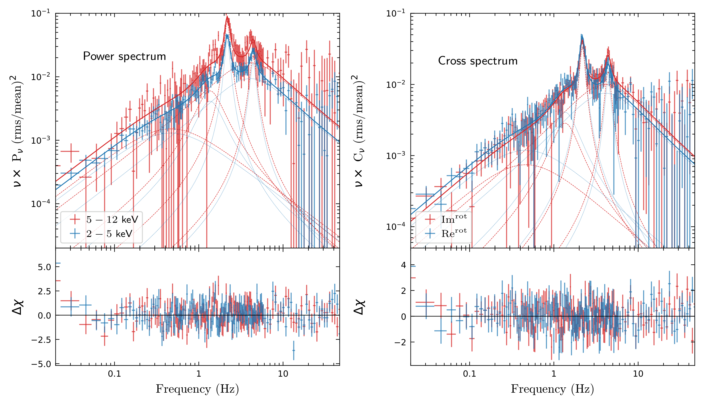
图注：Left panel: Power spectra of \(\NICER\) observation 1103010158 of \(\grs\) in two energy bands. The $2-5$~keV data are shown in blue while the $5-12$~keV one is in red, both with the best-fitting model (solid line) consisting of 5 Lorentzian functions (dotted lines). Right panel: Real and imaginary parts of the cross spectrum between the same two energy bands rotated by $45^{\circ}$. We plot $\rm{Re}~cos(\pi/4) -\rm{Im}~sin(\pi/4)$ in blue and $\rm{Re}~sin(\pi/4) +\rm{Im}~cos(\pi/4)$ in red, with the best-fitting model assuming constant phase lags. In both panels, residuals with respect to the model, defined as $\Delta \chi = {\rm (data-model)/error}$, are also plotted. For visual purposes only, the data above 6~Hz have been rebinned by a factor of 3 in the plot.
对应解读：对应“建议重点查看的图表”第2项和模型拟合段落中的功率谱拟合、交叉谱拟合：代表性功率谱、洛伦兹模型、交叉谱实部/虚部和残差。
入选理由：该图展示一个代表性 NICER 观测在 2–5 keV 与 5–12 keV 能带的功率谱，叠加 5 个洛伦兹成分及残差，同时给出交叉谱旋转后的实部和虚部及常数相位滞后模型。它能直接检查 QPO 峰是否清晰、宽带噪声建模是否合理，以及滞后估计是否来自可接受的交叉谱拟合。
来源与置信度：\(arxiv_source\)；high；\(arxiv_source\) / aa61476-26.tex:figure[2]
Fig03
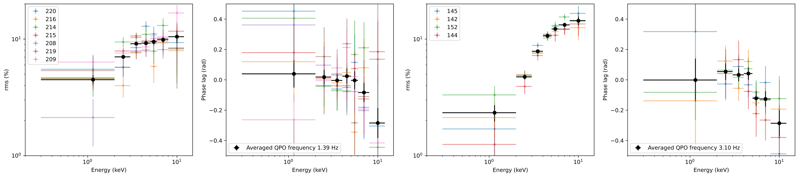
图注：Fractional rms (left panels) and phase-lag (right panels) spectra of the QPO in \(\grs.\) The top and bottom panels correspond to different sets of observations. Filled black circles depict the weighted-averaged of the individual observations, which are marked with different colours. In the legends, the numbers indicate the last three digits of the observation IDs 1103010XXX. Horizontal error bars represent the energy range of each point.
对应解读：对应“建议重点查看的图表”第5项和“关键图表逐图导读”图4：QPO 的能量依赖 fractional rms 和 phase-lag spectra。
入选理由：该图给出 QPO 的 fractional rms 能谱和相位滞后能谱，并区分不同观测与加权平均结果。它能检验软滞后是否在多个能量通道中一致存在，而不是由单个受吸收或仪器响应影响的软能段主导，是支撑低频软滞后稳健性的关键诊断。
来源与置信度：\(arxiv_source\)；high；\(arxiv_source\) / aa61476-26.tex:figure[3]
Fig07
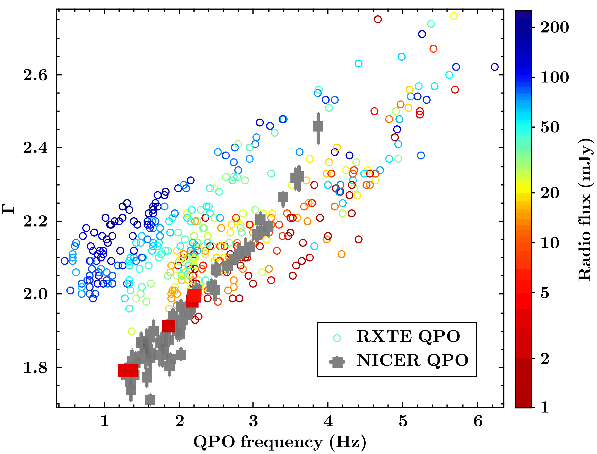
图注：Photon index of the Comptonised component in \(\grs\) as a function of frequency of the type-C QPO. Open circles are the \(\RXTE\) data from \(\citet{Mendez2022}\) and \(\citet{Garcia2022},\) while filled squares are the \(\NICER\) data with QPOs. The colours represent the 15.5~GHz radio flux in mJy. The \(\NICER\) observations without a simultaneous (within 0.5~days) radio observation are shown in grey.
对应解读：对应“建议重点查看的图表”第6项：射电通量、QPO 频率和谱状态的联合诊断；也对应详细解读中关于低射电通量与硬滞后缺失之间联系的讨论。
入选理由：该图以 QPO 频率为横轴、康普顿化光子指数为纵轴，并用颜色编码 15.5 GHz 射电通量，区分 RXTE 与 NICER 数据及无近同时射电点。虽然它不是直接的滞后—射电图，但它把 QPO 频率、谱状态和射电强度放在同一平面上，有助于判断 NICER 低频 QPO 是否处在与 RXTE 强射电时期不同的喷流/谱状态。
来源与置信度：\(arxiv_source\)；high；\(arxiv_source\) / aa61476-26.tex:figure[7]
Fig06
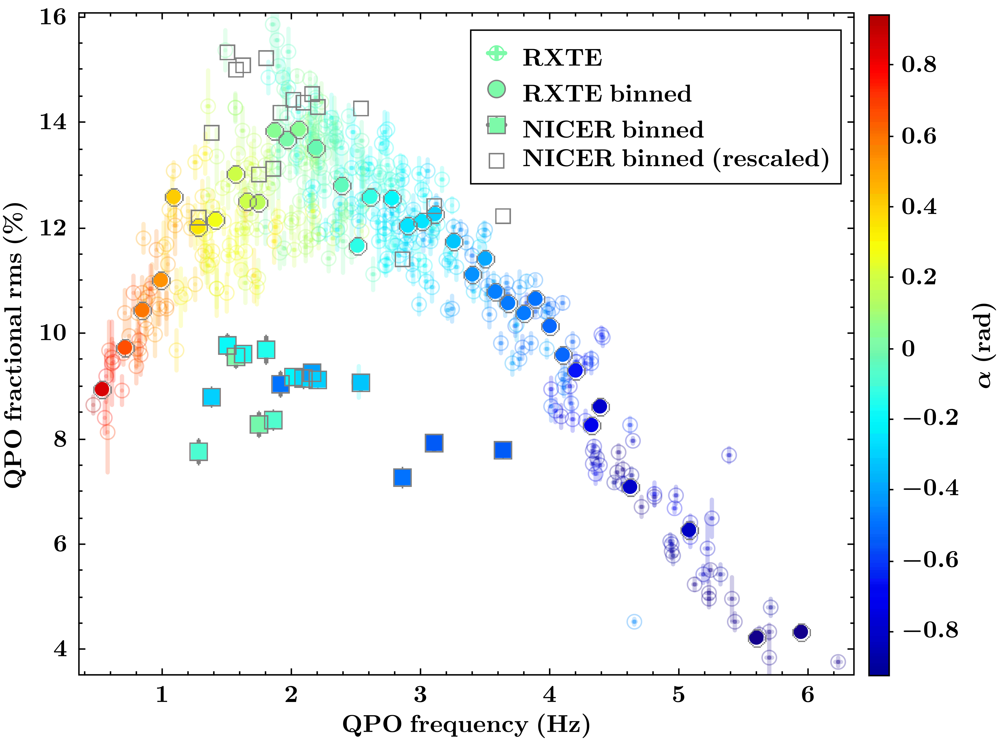
图注：Fractional rms amplitude of the type-C QPO in \(\grs\) as a function of QPO frequency. Empty circles show the rms amplitudes measured from individual \(\RXTE\) observations in the $2-15$~keV energy band. Filled circles and filled squares show the weighted-average rms amplitudes of the \(\RXTE\) ($2-15$~keV) and \(\NICER\) ($2-12$~keV) observations, respectively, using the same frequency bins as in Fig.~\(\ref{fig:Slopevsnu}.\) The colour scale indicates the slope of the phase-lag spectrum, $\alpha$. Grey empty squares show the \(\NICER\) weighted-average rms amplitudes after applying the empirical scaling factor of $\sim1.6$ derived from the comparison of the \(\RXTE\) and \(\NICER\) rms spectra shown in Fig.~\(\ref{fig:rmsspectraRXTEvsNICER}.\)
对应解读：对应模型拟合和参数退化讨论：QPO fractional rms、QPO 频率与相位滞后谱斜率 \(\alpha\) 的联合关系；也补充“QPO 频率随诊断量变化”的查看需求。
入选理由：该图显示 type-C QPO fractional rms 随 QPO 频率的变化，并用颜色表示相位滞后谱斜率 \(\alpha\)，同时比较 RXTE 与 NICER 并给出 NICER rms 缩放后的结果。它不如 Fig04 直接，但能补充说明滞后性质、QPO 强度和频率之间的耦合关系，并帮助评估跨仪器 rms 差异是否影响对 NICER/RXTE 样本的比较。
来源与置信度：\(arxiv_source\)；high；\(arxiv_source\) / aa61476-26.tex:figure[6]
强相关工作
这篇工作直接连接到 GRS 1915+105 的 RXTE 时代研究、微类星体射电喷流发现、以及黑洞双星 type-C QPO 的统一解释框架。应检索的关键词包括 “GRS 1915+105 QPO phase lags radio jet RXTE”、“type-C QPO lags black hole binaries”、“accretion-ejection coupling GRS 1915+105”、“Lense-Thirring precession type-C QPO” 和 “GRS 1915+105 NICER obscured state”。同一源的历史论文包括超光速喷流发现、RXTE 时域分类和射电/X 射线耦合研究；同类源比较可看 GX 339-4、XTE J1550-564、H1743-322 等黑洞双星中的 QPO 与喷流关系。
与基础理论的关系主要在于 type-C QPO 的起源模型。Lense-Thirring 进动模型能自然把 QPO 频率与内流几何联系起来，但相位滞后需要额外的辐射传输和能谱响应模型。传播扰动模型能解释宽带噪声和硬滞后，但对 QPO 相干相位的解释并不唯一。本文的结果支持一种更复杂的图像：当喷流基部成为硬 X 射线或反馈辐射的重要组成部分时，QPO 相位滞后可能改变符号；当射电喷流弱时，即使 QPO 频率低，也不必出现硬滞后。
可能的相反观点是，NICER 与 RXTE 的能段和源状态差异足以解释滞后差别，而不必引入喷流因果作用。另一个张力是，射电通量低并不严格等价于喷流基部不存在，尤其若喷流辐射自吸收、指向性或传播延迟发生变化。未来需要用统一重分析和更密集的多波段数据区分这些解释。
同一事件 / 同类源线索：
- https://arxiv.org/abs/2609.15672
- https://arxiv.org/pdf/2609.15672
- https://arxiv.org/abs/astro-ph/9409032
- https://arxiv.org/abs/astro-ph/0409360
相似工作：
基础理论 / 方法工作：
相反观点 / 张力线索：
（未提供）
11. Physics-Informed Neural Networks and Data-Driven Models for GRB X-ray Light-Curve Gap Reconstruction
- 来源：arXiv / astro-ph.HE
- 链接：https://arxiv.org/abs/2609.15261v1
- 作者：Ayush Garg, Ritik Kumar, Maria G. Dainotti, Vipul Sharma, Amit Shukla, Dieter H. Hartmann
- 评分：novelty 7/10，importance 7/10，relevance 9/10，final 8.70/10
- 推荐理由：GRB X-ray afterglow gap reconstruction is directly relevant to high-energy transient astronomy. The work is more methodological and somewhat incremental, but the large Swift-XRT benchmark and impact on plateau-parameter uncertainties/Dainotti relations make it worth reading for GRB specialists.
中文题目：用物理约束神经网络和数据驱动模型重建伽马暴 X 射线余辉光变曲线缺口
做了什么：这篇论文针对 Swift-XRT 伽马暴 X 射线余辉中常见的时间采样缺口，比较了四类重建方法：带七种余辉先验的物理约束神经网络、ReFANN、孪生双分支网络和多项式分位数回归。作者用 545 个 Swift-XRT 伽马暴测试这些方法能否降低 W07 平台模型参数 \(\log T_a\)、\(\log F_a\) 和 \(\alpha\) 的不确定度。核心结论是：物理约束神经网络在断裂幂律先验下给出最大误差压缩，约为 \(41\%\) 到 \(49\%\)，但异常值比例也升到约 \(15\%\) 到 \(20\%\)；ReFANN、孪生网络和分位数回归的改进幅度较温和，约为 \(19\%\) 到 \(27\%\)，但异常值率通常低于 \(4\%\)，对不同光变形态更稳。
为什么重要：伽马暴平台结束时间 \(T_a\)、平台通量 \(F_a\) 和平台后衰减指数 \(\alpha\) 是 Dainotti 关系及其宇宙学应用的基础量。XRT 光变曲线缺口会直接放大这些量的误差，进而削弱伽马暴作为高红移距离指标的统计功效。本文的重要性不在于提出又一个黑箱插值器，而在于系统比较了物理先验和纯数据驱动方法在真实不规则采样余辉上的收益与代价。
理论 / 观测 / 仪器方法价值：对观测数据处理来说，本文给出了一套可复用的缺口重建基准：看误差是否缩小，还要同时看异常值率、形态适用范围和先验选择是否可靠。对理论建模来说，它检验了不同余辉先验在实际 XRT 样本中的约束力。对伽马暴宇宙学来说，它把光变曲线重建误差与 \(T_a\)-\(L_a\) 类关系的参数精度直接联系起来，是后续降低 Dainotti 关系散布的技术前置工作。
为什么应该关注：如果你使用 Swift-XRT 余辉参数、平台样本、Dainotti 关系，或计划把机器学习方法放进高能瞬变数据管线，这篇文章值得看。它提醒读者：最大的不确定度压缩不一定等于最好的科学样本，因为强物理先验可能在某些形态上失败；而更稳健的中等改进方法，可能更适合大样本统计和宇宙学应用。
展开详细解读：文章讲解、背景、理论、重点章节、图表与相关工作
文章详细讲解
科学问题：Swift-XRT 的伽马暴 X 射线余辉常呈现快速下降、平台、正常衰减、喷流断裂或耀发等阶段，但真实观测并非连续采样。卫星轨道、触发时刻、地球遮挡、太阳约束、信噪比变化和人工筛选都会在光变曲线中留下缺口。对 W07 平台模型而言，缺口最容易影响平台结束时间 \(T_a\)、平台通量 \(F_a\) 和平台后衰减指数 \(\alpha\)。这些量又进入 Dainotti 关系，即平台端 luminosity 与时间尺度之间的经验相关。因此，缺口重建不是单纯的美化光变曲线，而是会进入伽马暴标准化和宇宙学统计误差预算。
作者怎么做：论文选取 545 个 Swift-XRT 伽马暴，围绕 W07 参数重估的精度，比较四类方法。第一类是物理约束神经网络，把余辉理论中常见的七种形态或先验作为约束，其中包括断裂幂律等表示平台转折的形式。第二类是 ReFANN，一种针对非均匀天文时间序列重建的前馈神经网络框架。第三类是孪生双分支网络，利用相似光变曲线之间的表征距离来帮助重建。第四类是多项式分位数回归，用非参数或弱参数方式给出不同分位上的重建包络。评价标准不是单一预测误差，而是重建后重新拟合 W07 模型时 \(\log T_a\)、\(\log F_a\) 和 \(\alpha\) 的分数不确定度是否下降，以及异常值比例是否可接受。
关键结果：所有四种方法都能相对于原始观测降低 \(\log T_a\)、\(\log F_a\) 和 \(\alpha\) 的不确定度。带断裂幂律先验的物理约束神经网络表现出最大误差压缩，约为 \(41\%\) 到 \(49\%\)，说明当先验形态与真实光变曲线匹配时，物理结构能显著提高缺口内的约束力。但该方案的异常值比例约为 \(15\%\) 到 \(20\%\)，意味着强先验也会在复杂或非典型余辉上把模型推向错误解。相比之下，ReFANN、孪生网络和多项式分位数回归的误差压缩约为 \(19\%\) 到 \(27\%\)，但异常值率通常不超过 \(4\%\)，对更宽的形态范围更安全。作者还测试了基于约化 \(\chi^2\) 的先验选择方案，它能恢复与独立形态标注相一致的分类趋势，但并未达到最佳单一先验在误差压缩上的水平。
局限和下一步：本文的主要限制在于，重建质量最终仍由训练样本的形态覆盖、XRT 观测选择效应和 W07 模型本身的适用性控制。强先验物理约束神经网络的高收益伴随较高异常值率，说明未来需要更可靠的先验选择、模型平均或异常检测机制。另一方面，若目标是 Dainotti 关系和宇宙学应用，下一步应把重建引入完整层级模型中，而不仅仅比较单条光变曲线的参数误差；需要同时传播重建不确定度、红移误差、谱形校正、样本截断和选择函数。
关键结果是怎么做出来的
样本与数据链条：作者使用 545 个 Swift-XRT 伽马暴 X 射线余辉光变曲线作为统一测试集。关键不是随机模拟一批理想曲线，而是在真实 Swift-XRT 不规则采样、真实误差条和真实形态多样性的条件下进行缺口重建。每条曲线重建后都要重新提取 W07 平台参数，重点关注 \(\log T_a\)、\(\log F_a\) 和 \(\alpha\) 的分数不确定度。这样设计的好处是评估量直接对应后续 Dainotti 关系使用的物理参数，而不是只看缺口处点对点均方误差。
模型比较：四种方法代表不同假设强度。物理约束神经网络把余辉演化方程或经验形态作为损失函数的一部分，因此在缺口较大但先验正确时可以强力外推。ReFANN 更接近数据驱动的函数逼近，孪生网络强调曲线相似性，多项式分位数回归则提供较保守的统计包络。作者分别比较重建前后参数不确定度的相对变化，并统计异常值比例。这里的核心统计判断不是单个暴是否看起来更平滑，而是整个样本中参数误差收缩和灾难性失败之间的权衡。
最重要的数值结论是，断裂幂律先验下的物理约束神经网络对 \(\log T_a\)、\(\log F_a\) 和 \(\alpha\) 给出约 \(41\%\) 到 \(49\%\) 的不确定度降低，是所有方案中最激进也最有效的误差压缩。但异常值率达到约 \(15\%\) 到 \(20\%\)，这对宇宙学样本是严重问题，因为少量错误平台参数可能拉大关系散布或制造伪相关。ReFANN、孪生网络和多项式分位数回归的改进幅度约 \(19\%\) 到 \(27\%\)，但异常值率低于约 \(4\%\)，说明它们对形态错配更不敏感。
显著性与置信度的理解应从分布层面看：论文比较的是参数不确定度分布的整体移动、不同方法的异常值尾部，以及基于约化 \(\chi^2\) 的先验选择是否与独立形态分类一致。读者应检查相应的误差缩减直方图、散点图或箱线图，确认改进是否由少数高信噪比曲线主导，还是在大多数样本中普遍存在；还要看异常值定义是否基于残差阈值、参数偏移或拟合质量阈值。若表格列出每个参数的中位数改进和异常比例，应优先比较中位数与分位区间，而不是只看平均值。
稳健性方面，最关键的是先验选择实验。作者用约化 \(\chi^2\) 在多个物理先验之间选择，发现得到的形态分类与独立标注总体一致。这支持了物理约束网络确实学到了一些余辉形态信息，而不是只做平滑插值。不过该自动选择方案没有超过最佳单一先验的误差压缩，说明 \(\chi^2\) 最小不等于科学参数最优，特别是在误差条非高斯、点间相关、耀发污染或早晚期采样不均匀时。
展开背景、理论、公式、模型、章节和图表导读
背景知识
研究对象是长、短伽马暴触发后的 X 射线余辉。Swift 发射后，XRT 提供了大量分钟到数天尺度的 X 射线光变曲线，揭示了所谓 canonical X-ray afterglow：早期陡降、平台、正常衰减，有时还有耀发和晚期断裂。平台段尤其重要，因为它可能反映中心引擎持续注入、喷流结构、视角效应、磁星自旋下降，或外激波能量注入。
历史问题在于，平台参数既有物理解释，又被经验上用于建立 Dainotti 关系。Dainotti 关系通常把平台结束时的 X 射线光度 \(L_a\) 与平台结束时间 \(T_a\) 联系起来，类似一种伽马暴内部标准化关系。若该关系的内禀散布和选择效应能被控制，伽马暴有可能补充 Ia 型超新星，到达更高红移的宇宙学探针。但这一路线长期受样本异质性、红移不完备、谱校正、仪器阈值和平台识别主观性限制。
观测背景是 Swift-XRT 光变曲线虽然数量大、时间跨度长，但并非为连续监测设计。低地轨道观测会出现周期性间断，后续跟踪也受调度和源亮度限制。平台结束常落在观测间隙中，或者在一个宽阔转折区间内只有少数数据点。此时 W07 模型能给出形式上可拟合的参数，但协方差会很大，\(T_a\) 与 \(F_a\) 的不确定度会相互耦合。
为什么现在值得重新看：一方面，Swift 累积样本已经足够大，可以训练和测试数据驱动重建方法；另一方面，物理约束机器学习在不规则天文时间序列中的应用正在成熟。过去常见做法是用幂律、样条、高斯过程或人工剔除耀发后拟合。本文把物理先验和机器学习放到同一评价框架下，能更清楚地回答：我们是在恢复真实曲线，还是在把模型偏见注入平台参数。
常见误区包括：第一，把平滑曲线误认为更真实；实际上余辉可能有能量注入变化、密度结构或耀发。第二，把较小误差条误认为更可靠；若先验错配，误差会被低估。第三，把 Dainotti 关系的散布全归因于物理多样性，而忽略平台结束时间测量误差和样本选择。第四，把机器学习重建当成无模型方法；任何训练集、损失函数和异常值处理都包含隐含先验。
基础理论 / 方法脉络
基础物理图像是外激波余辉：相对论喷流与周围介质相互作用，激波加速电子并放大磁场，电子同步辐射形成从 X 射线到射电的多波段余辉。若喷流能量近似守恒且介质为均匀星际介质或恒星风，光变曲线通常可近似为幂律衰减。平台段意味着这个简单图像被修改，可能是中心引擎继续注入能量、喷流角结构与视角共同作用，或辐射效率随时间变化。
本文关注的不是从头求解流体方程，而是恢复观测光变曲线并稳定提取经验参数。W07 模型把 prompt 尾部和 afterglow 成分用平滑函数表示，其中平台结束时间 \(T_a\)、该时刻通量 \(F_a\) 和后续衰减指数 \(\alpha\) 是关键量。缺口重建的目标是利用已有观测点、误差条和形态先验，在未观测时间段内估计通量及其不确定度，使重新拟合得到的 \(T_a\)、\(F_a\) 和 \(\alpha\) 更稳定。
物理约束神经网络的思想是让网络输出 \(F_\theta(t)\)，同时惩罚它偏离某类余辉方程或经验先验。与普通神经网络相比，它不是只最小化观测点残差，还最小化一个物理残差项。若先验形式接近真实光变曲线，缺口内的外推会比自由插值更可靠；若真实曲线有耀发、再增亮、复杂断裂或多成分叠加，强先验会引入系统偏差。
数据驱动模型的物理假设较弱。ReFANN 学习不规则采样曲线到完整曲线或参数的映射；孪生网络通过双分支结构学习两条光变曲线是否相似，从而利用相似样本约束缺口；多项式分位数回归则估计给定时间处通量分布的条件分位数，较适合表达非高斯不确定度。这些方法通常更稳健，但在大缺口和低信噪比情况下不如正确物理先验有外推力。
关键退化关系包括 \(T_a\) 与 \(F_a\) 的相关、\(\alpha\) 与晚期基线的相关、平台段斜率与转折平滑度的相关。选择效应也很重要：明亮、长平台、采样密集的暴更容易被准确重建；暗弱或高红移暴可能被遗漏或只有大误差。系统误差包括 XRT 计数率到通量转换、谱指数假设、吸收修正、耀发剔除、时间零点定义，以及训练集是否代表待重建样本。
公式与推导
第一步从余辉通量的经验幂律近似出发。若某一时间段由单一衰减成分主导，可写为
这里 \(F(t)\) 是观测通量，\(t\) 是触发后观测者系时间，\(F_0\) 是参考时间 \(t_0\) 的通量，\(\alpha\) 是时间衰减指数。这个式子说明晚期斜率如何进入平台后衰减参数，但它不能描述平台到正常衰减的平滑转折。
第二步引入断裂幂律作为平台转折的最小模型。常用平滑断裂形式可写成
其中 \(T_a\) 是转折或平台结束时间，\(F_a\) 是该时刻附近的归一化通量，\(\alpha_1\) 和 \(\alpha_2\) 分别描述平台前后斜率，\(s\) 控制转折锐利程度，\(C\) 是使 \(F(T_a)\) 与所定义 \(F_a\) 一致的归一化常数。本文中断裂幂律先验表现最好，正是因为它贴近许多平台余辉的形态。
第三步把通量转为对数空间中的拟合量，因为 X 射线余辉跨越多个数量级。令
这里 \(F_i\) 和 \(\sigma_{F,i}\) 是第 \(i\) 个观测点的通量和误差，\(y_i\) 的误差 \(\sigma_{y,i}\) 近似来自误差传播。对数空间能让幂律变为近似线性斜率，也使 \(\log T_a\) 和 \(\log F_a\) 的不确定度更自然。
第四步定义普通数据残差项。若模型预测为 \(F_\theta(t_i)\)，高斯误差近似下的数据损失是
这里 \(\theta\) 表示网络权重或经验模型参数，\(N\) 是观测点数。这个量衡量模型是否穿过已有数据点，但对缺口内部没有直接约束。
第五步加入物理约束残差。若某个先验可写成微分算子 \({\cal R}[F_\theta,t]=0\)，物理约束神经网络的总损失可写为
其中 \(t_j\) 是用于施加物理约束的 collocation points，\(M\) 是这些点的数量，\(\lambda\) 控制观测拟合与物理先验的权重。\(\lambda\) 太小会退化成普通插值，\(\lambda\) 太大则可能把错误先验强加给数据。
第六步给出 W07 参数不确定度的传播。若重建后的拟合参数为 \(\phi=(\log T_a,\log F_a,\alpha)\)，其协方差可由 Hessian 或后验样本估计：
矩阵元素 \(C_{\phi,mn}\) 描述参数 \(\phi_m\) 与 \(\phi_n\) 的协方差。缺口重建若有效，应主要压缩 \(C_\phi\) 的对角元，同时不制造不合理的强相关。
第七步定义本文关心的分数不确定度缩减。对任一参数 \(q\in\{\log T_a,\log F_a,\alpha\}\)，可写为
其中 \(\sigma_{q,{\rm orig}}\) 是原始光变曲线拟合的不确定度，\(\sigma_{q,{\rm rec}}\) 是重建后拟合的不确定度。\(R_q>0\) 表示改进，\(R_q=0.4\) 表示误差条缩小 \(40\%\)。论文报告的约 \(41\%\) 到 \(49\%\) 和约 \(19\%\) 到 \(27\%\) 改进可按这个量理解。
第八步说明先验选择使用的约化拟合优度。对某个先验 \(k\)，约化 \(\chi^2\) 为
其中 \(p_k\) 是模型或有效参数数，\(y_k(t_i)\) 是先验 \(k\) 下的预测。选择最小 \(\chi^2_{\nu,k}\) 的先验可以得到形态分类，但若误差模型不完备或不同先验复杂度不同，最小 \(\chi^2_\nu\) 不必对应最优科学参数。
第九步把平台通量连接到 Dainotti 关系所需的光度。若红移为 \(z\)，光度距离为 \(D_L(z)\)，则平台端各向同性等效光度可近似写作
这里 \(K(z)\) 是能段和谱形的 \(K\)-校正因子。降低 \(F_a\) 和 \(T_a\) 的测量误差，会直接改善 \(L_a\)-\(T_a\) 关系的观测散布估计，但不会自动消除选择效应或内禀散布。
模型拟合 / 应用方法
本文的拟合对象分为两层。第一层是缺口重建模型本身，即给定不规则采样的 \((t_i,F_i,\sigma_i)\)，预测完整或更密集的 \(F(t)\) 及其不确定度。第二层是对重建后光变曲线重新拟合 W07 平台模型，提取 \(\log T_a\)、\(\log F_a\) 和 \(\alpha\)。评价模型优劣时不能只看第一层残差，因为科学目标在第二层参数。
物理约束神经网络的参数估计通常通过最小化数据残差加物理残差完成。实际调参包括网络结构、学习率、collocation points 分布、物理损失权重 \(\lambda\)、先验类型，以及训练停止准则。其风险是模型可能在观测点之间给出看似合理但由先验主导的曲线，尤其是缺口覆盖平台结束时间时。残差诊断应同时看观测点处标准化残差、缺口边界连续性、重建曲线相对于误差包络的位置，以及重新拟合后参数协方差。
ReFANN 和孪生网络的拟合更依赖训练集统计结构。它们的隐含先验来自样本中常见光变形态，因此在训练分布覆盖充分时表现稳健，异常值率低；但若遇到罕见形态、极高红移暗弱余辉、强耀发污染或非常稀疏采样，模型可能回归到平均形态。孪生网络还涉及相似度度量：若相似性主要由亮度归一化或采样密度驱动，而非真实时间结构，重建会产生偏差。
多项式分位数回归的优势是能表达条件分布的非对称性，不必假设高斯误差。拟合时要关注分位数交叉、阶数选择、过拟合和边界外推。它通常不会给出最大误差压缩，但对大样本统计有吸引力，因为保守的不确定度估计比过度自信的错误外推更可控。对 Dainotti 关系而言，低异常值率往往比单条曲线误差条最小更重要。
参数退化主要体现在 \(T_a\)、\(F_a\) 和 \(\alpha\) 之间。若平台结束时刻落在缺口中，较早的 \(T_a\) 可由较浅的后期 \(\alpha\) 或较高的 \(F_a\) 补偿；若晚期数据少，\(\alpha\) 与背景或最后几点的系统误差强相关。拟合报告中应检查协方差矩阵、后验 corner plot、参数误差的非对称性，以及异常值样本是否集中在某些缺口长度、信噪比或形态类别中。
模型可能失败的场景包括：平台并非单一成分、存在未剔除 X 射线耀发、光变曲线有再增亮或多重断裂、谱演化导致计数率到通量转换变化、红移未知导致样本训练存在选择偏差。实际应用中，更合理的做法可能是模型集成或层级贝叶斯框架，把物理约束神经网络的高精度候选、数据驱动方法的稳健估计和异常值识别结合起来，而不是机械采用单一最小误差方案。
重点章节 / 结果段落怎么读
数据和样本部分应先看 545 个 Swift-XRT 伽马暴如何筛选：是否要求有平台、是否剔除强耀发、每条曲线最少点数是多少、缺口如何定义、训练和测试是否严格分开。这里决定了结果能否推广到完整 Swift-XRT 样本，还是只适用于平台较清楚的子样本。
方法部分要重点读四类重建器的输入输出和损失函数。物理约束神经网络的七种余辉先验尤其关键，应检查每个先验对应的形态、物理含义和调参方式。ReFANN、孪生网络和多项式分位数回归部分则要看它们如何处理不规则采样、误差条、时间归一化和通量归一化。
W07 参数提取部分是连接机器学习与科学结论的桥。读者应确认重建后是否用同一 W07 流程重新拟合所有曲线，\(\log T_a\)、\(\log F_a\) 和 \(\alpha\) 的误差如何估计，是否把重建模型本身的不确定度传播进去。如果只把重建点当作真实观测点，误差缩减可能被高估。
结果部分应按两个维度读：一是误差缩减幅度，二是异常值率。断裂幂律物理约束神经网络给出最大缩减但高异常率；其他三种方法缩减较小但稳健。不要只看平均改进，要看分布尾部和不同形态类别的表现。
讨论和稳健性检验部分应关注约化 \(\chi^2\) 先验选择。它能否恢复独立形态标注，是判断物理先验是否有实际分类能力的关键。但它没有给出最佳误差缩减，说明先验选择仍可改进。附录若包含逐源案例、异常值列表或超参数测试，应优先查看，因为这些内容能揭示方法在哪些真实光变曲线上失败。
建议重点查看的图表
-
样本光变曲线示例图：看不同形态、缺口位置和重建曲线如何穿过观测点，尤其检查平台结束时间附近是否被缺口覆盖。
-
四种模型的重建对比图：同一伽马暴上比较物理约束神经网络、ReFANN、孪生网络和多项式分位数回归的预测，重点看缺口内部的不确定带是否合理，而不是只看曲线是否平滑。
-
\(\log T_a\)、\(\log F_a\) 和 \(\alpha\) 的分数不确定度缩减分布：看中位数、四分位范围、负改进尾部和是否由少数样本驱动。
-
异常值比例或残差诊断图：看异常样本是否集中在某些形态、缺口长度、低信噪比或耀发污染曲线中。
-
约化 \(\chi^2\) 先验选择与独立形态标注的混淆矩阵或对应图：看自动先验选择在哪些类别上可靠，哪些类别容易混淆。
-
W07 参数前后对比散点图：横轴可为原始拟合参数，纵轴为重建后参数；重点检查是否存在系统偏移，而非只看误差条变小。
-
若有 Dainotti 关系投影图，应看 \(L_a\)-\(T_a\) 散布是否减少，斜率是否变化，以及异常值剔除前后结论是否稳定。
关键图表逐图导读
图 1：通常应是样本或方法示意图。若横轴为触发后时间 \(t\) 或 \(\log t\)，纵轴为 X 射线通量 \(F_X\) 或 \(\log F_X\)，数据点带误差条，阴影或曲线表示缺口重建。读图时应看缺口是否覆盖平台末端 \(T_a\)，因为这类缺口对参数影响最大。陷阱是曲线视觉上平滑不代表 \(T_a\) 可信，必须结合误差带和后续 W07 拟合。
图 2：若展示四种模型在代表性光变曲线上的对比，应关注模型线在观测点外的分歧。物理约束神经网络可能给出更窄的不确定带和更明确的断裂位置；ReFANN、孪生网络和多项式分位数回归可能更保守。读图陷阱是不要把最窄阴影带自动当成最好模型，高异常值率说明窄带可能来自强先验而非真实信息。
图 3：若为参数不确定度缩减的直方图、箱线图或小提琴图，横轴可能是缩减比例 \(R_q\)，纵轴是样本数或概率密度。应分别检查 \(q=\log T_a\)、\(q=\log F_a\) 和 \(q=\alpha\)。主要结论应是所有方法总体向正缩减移动，但断裂幂律物理约束神经网络的中位改进更高。陷阱是平均值可能被少数大改进样本拉高，因此要看中位数和分位区间。
图 4：若为异常值或残差诊断图，坐标可能是标准化残差、缺口长度、信噪比或拟合 \(\chi^2_\nu\)。这里要看高误差点是否对应复杂形态，如耀发、再增亮或多断裂。主要结论应是高收益物理先验伴随更长异常尾部，而其他方法尾部较短。陷阱是异常值定义若只基于观测点残差，可能漏掉缺口内部错误外推。
图 5：若为先验选择图或混淆矩阵，横轴可表示独立形态标签，纵轴表示 \(\chi^2_\nu\) 选出的先验类别，颜色表示样本数或比例。应看对角线是否显著增强，以及哪些类别互相混淆。结论是约化 \(\chi^2\) 能恢复有意义的形态信息，但不是最优误差压缩策略。陷阱是不同先验复杂度不同，直接比较 \(\chi^2_\nu\) 可能偏向更灵活模型。
图 6：若为 W07 参数前后对比图，横轴为原始观测拟合得到的 \(\log T_a\)、\(\log F_a\) 或 \(\alpha\)，纵轴为重建后结果，\(y=x\) 线表示无系统偏移。应看点云是否沿对角线分布、误差条是否缩小、是否有系统性偏高或偏低。陷阱是误差条缩小若伴随整体偏移，会对 Dainotti 关系产生偏差。
论文原图 / 可嵌入图片
Fig06
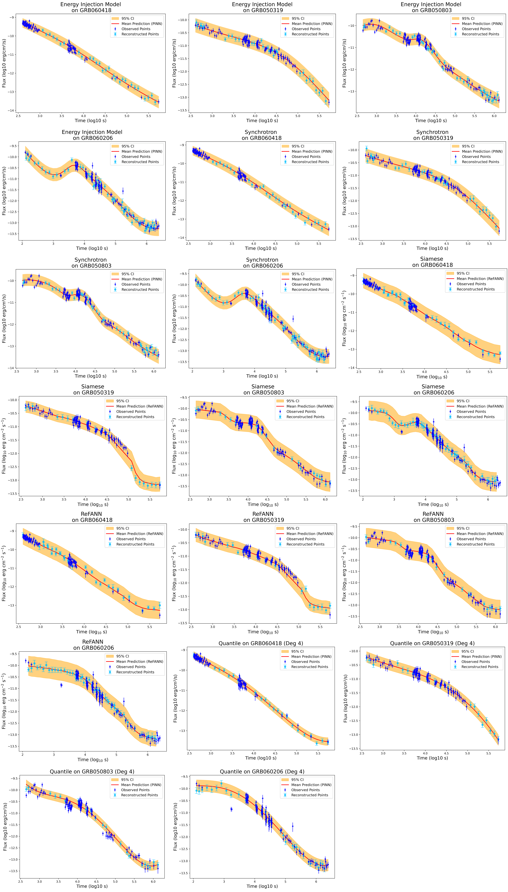
图注：Reconstructions of the LCs for four GRB varieties are shown from left to right: i) good GRBs (Column 1); ii) GRB LCs with a break toward the end (Column 2); iii) GRB LCs with flares or bumps in the afterglow (Column 3); and iv) GRB LCs with flares or bumps and a double break toward the end (Column 4). The models are arranged from top to bottom as follows: i) PINN (Row 1); ii) ReFANN (Row 2); iii) Siamese Model (Row 3); and iv) Quantile Model (Row 4)
对应解读：对应“建议重点查看的图表”第1、2、4项，以及“关键图表逐图导读”中图1、图2和图4关于样本光变曲线、四种模型重建对比、复杂形态/异常尾部诊断的解读。
入选理由：这是候选图中最直接展示科学结果的图：同一版面按四类GRB形态和四种重建模型排列，可直接比较PINN、ReFANN、孪生网络和Quantile模型在正常光变、末端断裂、耀发/鼓包、双断裂等复杂形态下的重建表现。它最能支撑日报关于缺口位置、模型分歧、复杂形态导致异常值以及不能只看曲线平滑度的讨论。
来源与置信度：\(arxiv_source\)；high；\(arxiv_source\) / manuscript.tex:figure[6]
Fig08
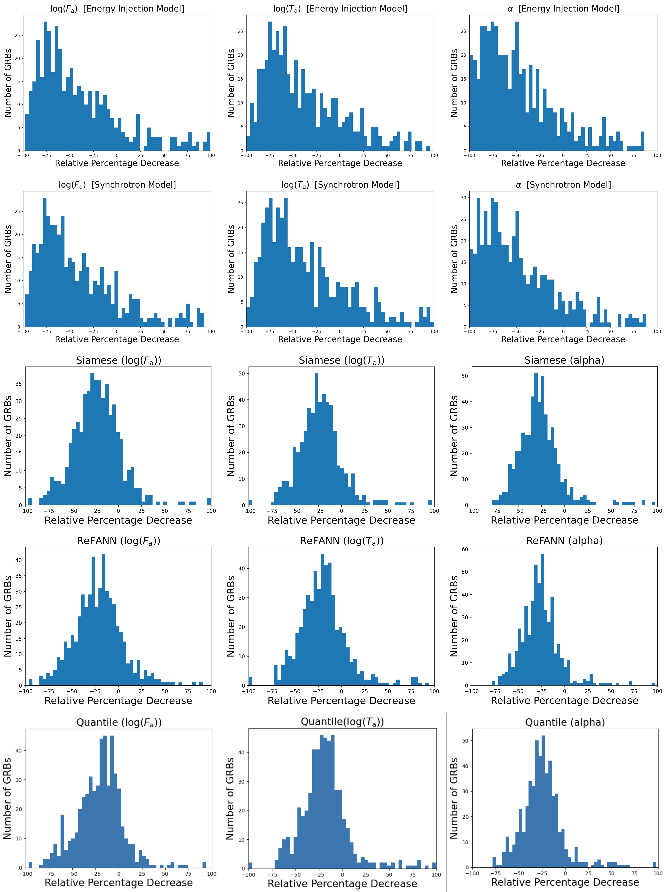
图注：Distribution plots of the three W07 parameters are arranged in a grid, with the parameters shown from left to right: i) $\log F\_a$ (Column 1); ii) $\log T\_a$ (Column 2); and iii) $\alpha$ (Column 3). The models are arranged from top to bottom: i) PINN (Row 1); ii) ReFANN (Row 2); iii) Siamese Model (Row 3); and iv) Quantile (Row 4).
对应解读：对应“建议重点查看的图表”第3、6项，以及“关键图表逐图导读”中图3和图6关于W07参数分布、\(\log F_a\)、\(\log T_a\)、\(\alpha\)及重建前后参数影响的解读。
入选理由：该图按模型和W07三大参数排列，直接关联论文核心评价量\(\log F_a\)、\(\log T_a\)和\(\alpha\)。日报的重点结论是重建后这些参数的不确定度降低、不同模型收益不同，因此这张图比纯网络结构示意图更适合嵌入，用来检查参数分布是否存在系统变化或异常尾部。
来源与置信度：\(arxiv_source\)；high；\(arxiv_source\) / manuscript.tex:figure[8]
Fig01
图注：Schematic overview of the PINN pipeline for GRB X-ray afterglow light-curve reconstruction. Using raw input Swift-XRT light-curve data (blue), the pipeline proceeds through log-space pre-processing and gap detection, followed by simultaneous Optuna-based optimisation of both the PINN architecture and the physics model parameters (yellow) across seven afterglow priors. Optimisation checkpoints are saved at each stage to enable resumable runs. The best-configuration network then undergoes final training (purple), after which MC dropout inference is used to construct 95\% confidence intervals on the reconstructed flux. The full-grid reconstruction (green) is passed to the metrics computation module, which evaluates reduced $\chi^2$, AIC, BIC, MSE, and correlation coefficient before the augmented light-curve is fitted with the W07 model to extract the plateau parameters $\log_{10} T_a,~ \log_{10} F_a,~ \textrm{and} \alpha$ and quantify the percentage decrease in their associated uncertainties relative to the original observed-data fit (red).
对应解读：对应“模型拟合”段落，以及“建议重点查看的图表”中关于PINN流程、约化\(\chi^2\)、W07参数再拟合和不确定度缩减指标的说明。
入选理由：该图是PINN从Swift-XRT原始光变、缺口检测、七种物理先验、MC dropout置信区间，到W07模型再拟合并提取\(\log_{10}T_a\)、\(\log_{10}F_a\)、\(\alpha\)和误差缩减的完整流程图。虽然不是最终结果图，但它清楚连接了第一层缺口重建和第二层W07参数科学目标，有助于读者理解日报中强调的评价标准并非单纯观测点残差。
来源与置信度：\(arxiv_source\)；high；\(arxiv_source\) / manuscript.tex:figure[1]
Fig03
图注：Workflow of the proposed ReFANN framework for reconstructing GRB light curves. The observed light curves are first log-transformed and normalised before being used to train the ReFANN model. The trained model then produces gap-aware reconstructions, after which Monte Carlo dropout is used to estimate predictive uncertainty and construct 95\% confidence intervals. The reconstructed light curves are subsequently denormalised and saved for further analysis. Independently, five-fold cross-validation is carried out to assess the model’s predictive performance on the observed data, with the mean training and testing mean squared errors (MSEs) reported.
对应解读：对应“模型拟合”段落中关于ReFANN依赖训练集统计结构、交叉验证、MC dropout不确定度和稳健低异常值表现的说明。
入选理由：该图展示ReFANN的重建流程、五折交叉验证和95%置信区间生成方式，可辅助解释为什么数据驱动模型通常更保守、异常值率较低。它的科学结果含量弱于Fig06和Fig08，但比没有说明的候选图更能支撑日报对ReFANN方法特性的讨论。
来源与置信度：\(arxiv_source\)；high；\(arxiv_source\) / manuscript.tex:figure[3]
Fig04
图注：Schematic flowchart illustrating the multi-stage PQR model workflow for GRB light curve reconstruction. The pipeline details the sequential process from raw data ingestion and logarithmic transformation to feature engineering, adaptive gap-aware grid generation, multi-quantile pinball loss minimisation ($q \in \{0.1, 0.5, 0.9\}$), cross-validation, and final distribution-free uncertainty estimation.
对应解读：对应“模型拟合”段落中关于多项式分位数回归、分位数包络、非高斯误差和保守不确定度估计的说明。
入选理由：该图说明PQR如何通过多分位pinball loss、gap-aware网格和distribution-free不确定度估计生成重建包络。日报中特别提到PQR不一定给出最大误差压缩但对大样本统计更稳健，因此该流程图可作为方法解释的补充。
来源与置信度：\(arxiv_source\)；high；\(arxiv_source\) / manuscript.tex:figure[4]
Fig02
图注：Architecture of the proposed Siamese network for GRB X-ray light-curve reconstruction. The first branch processes the logarithmic time coordinate, while the second branch receives a learnable reference anchor. Both branches share a common encoder network and produce latent embeddings that are combined through a Siamese fusion operation. The fused representation is passed to dual output heads that predict the reconstructed logarithmic flux and its associated variance. During training, the network is optimised using a Gaussian negative log-likelihood loss together with a physics-inspired regularisation term. During inference, predictive uncertainties are estimated using MC dropout with 200 stochastic forward passes.
对应解读：对应“模型拟合”段落中关于孪生双分支网络、相似度表征、MC dropout方差预测和潜在偏差来源的说明。
入选理由：该图是孪生网络结构示意，能支撑日报对相似度度量和预测方差的解释。不过它主要是架构图，不能直接展示光变重建质量、残差、参数不确定度或异常值，因此科学嵌入优先级低于结果图和参数分布图。
来源与置信度：\(arxiv_source\)；high；\(arxiv_source\) / manuscript.tex:figure[2]
强相关工作
这篇工作属于 Swift-XRT 伽马暴余辉平台参数重建和 Dainotti 关系误差控制的同类研究。应与 Willingale 等人的 W07 经验光变模型、Nousek 等人和 Zhang 等人关于 Swift 早期 X 射线余辉 canonical 行为的论文一起读。它也延续了 Dainotti 团队近年关于光变曲线缺口重建的系列工作；检索关键词包括 “GRB X-ray plateau reconstruction”、“Swift-XRT light curve gaps”、“Dainotti relation machine learning”、“physics-informed neural network GRB afterglow”。
相反或需谨慎的观点来自伽马暴宇宙学本身的系统误差讨论。即使 \(T_a\) 和 \(F_a\) 的测量误差下降，Dainotti 关系仍可能受样本截断、红移不完备、luminosity threshold、谱校正、平台识别选择和内禀物理多样性支配。因此，本文结果最适合被看作改进输入参数质量的步骤，而不是已经证明伽马暴可直接成为高精度标准烛光。检索关键词包括 “GRB cosmology selection effects”、“Dainotti relation intrinsic scatter”、“Efron Petrosian GRB plateau”、“Swift XRT GRB light curve repository”。
同一事件 / 同类源线索：
相似工作：
基础理论 / 方法工作：
- https://arxiv.org/abs/astro-ph/0612031
- https://arxiv.org/abs/astro-ph/0508332
- https://arxiv.org/abs/astro-ph/0508321
- https://arxiv.org/abs/0809.1389
相反观点 / 张力线索：
（未提供）
12. Evolution of the High-Energy Excess in Swift J1727.8-1613 during Its 2023 Flare State
- 来源：arXiv / astro-ph.HE
- 链接：https://arxiv.org/abs/2609.14420v1
- 作者：Xiao Fan, Bei You, Yi Long, Han He, Liang Chen
- 评分：novelty 7/10，importance 8/10，relevance 8/10，final 8.70/10
- 推荐理由：Black-hole X-ray binary Swift J1727.8-1613 with broadband 2–500 keV HXMT/INTEGRAL spectroscopy; persistent >150 keV excess interpreted via hybrid Comptonization and linked temporally to radio jet ejections. Relevant compact-object high-energy result with useful constraints on nonthermal electron acceleration, though not gamma-ray astronomy.
中文题目：Swift J1727.8-1613 在 2023 年耀发态中高能超额成分的演化
做了什么：这篇文章用 Insight-HXMT 与 INTEGRAL/ISGRI 的联合宽能段观测，研究黑洞候选 X 射线双星 Swift J1727.8-1613 在 2023 年耀发态中 \(2\)--\(500\,\mathrm{keV}\) 谱形的变化。作者发现，常规的热康普顿化加吸积盘反射模型在 \(\gtrsim 150\,\mathrm{keV}\) 处留下系统性正残差；加入额外幂律后可显著改善拟合，幂律光子指数约为 \(2.08\)--\(2.61\)。但同一批谱也可用混合热/非热康普顿化模型 \(\texttt{eqpair}\) 解释，而不必另加独立高能成分。核心结论是：耀发态期间电子能量注入可能从以热加热为主转向非热加速增强，并且这种非热功率增强与射电谱变陡、三次瞬变喷流结抛射在时间上相关。
为什么重要：黑洞 X 射线双星的硬 X 射线/软伽马高能尾一直是连接冕区粒子加速、喷流启动和态转换物理的关键诊断。Swift J1727.8-1613 是一个亮的 2023 年暂现源，数据质量允许把 \(\sim 150\,\mathrm{keV}\) 以上的谱残差与射电喷流活动放在同一时间轴上讨论。若高能超额确实来自非热电子而非简单模型误差，它将直接约束耀发期紧致区中电子分布如何从近热分布演化为带非热尾的混合分布。
理论 / 观测 / 仪器方法价值：对理论而言，本文把经验性高能幂律尾与 \(\texttt{eqpair}\) 混合康普顿化参数联系起来，给出了热加热与非热加速相对功率演化的可检验图像。对观测而言，它展示了 Insight-HXMT 与 INTEGRAL/ISGRI 在 \(2\)--\(500\,\mathrm{keV}\) 宽能段联合拟合中识别高能尾的价值，也提醒读者不能只用截断幂律或单温热康普顿化去解释耀发态谱。对多波段研究而言，文章把 X 射线谱中的非热功率增强与射电谱指数从近似平坦转为负值、以及瞬变喷流结抛射相联系，为喷流-冕耦合提供了一个具体案例。
为什么应该关注：如果你关心黑洞 X 射线双星的态转换、冕区几何、粒子加速或喷流触发，这篇文章值得看，因为它不是只报告“有高能尾”，而是比较了两种物理解释：额外经验幂律与混合康普顿化。它的关键价值在于把 \(\gtrsim 150\,\mathrm{keV}\) 高能残差、电子非热注入、射电谱变化和喷流结抛射放在同一演化框架中；即使你不同意其喷流关联解释，文中的宽能段拟合和模型退化也很适合作为分析类似耀发源的参考。
展开详细解读：文章讲解、背景、理论、重点章节、图表与相关工作
文章详细讲解
科学问题：Swift J1727.8-1613 在 2023 年经历了明亮耀发态。黑洞 X 射线双星在硬态、硬中间态和耀发阶段常出现由热康普顿化主导的硬 X 射线连续谱；若在 \(\sim 100\)--\(500\,\mathrm{keV}\) 仍存在超过热电子截断的通量，就意味着电子分布可能不只是单温麦克斯韦分布，而含有非热高能尾，或者存在喷流、非均匀冕区、复杂反射等额外贡献。本文要回答的是：Swift J1727.8-1613 在耀发态的高能超额是否持续存在，它随时间如何演化，以及这种演化是否与射电喷流活动有关。
作者怎么做：文章联合使用 Insight-HXMT 与 INTEGRAL/ISGRI，覆盖 \(2\)--\(500\,\mathrm{keV}\)。第一步采用较标准的宽能段谱模型：热康普顿化连续谱加吸积盘反射，并检查高能端残差。这个模型在 \(\gtrsim 150\,\mathrm{keV}\) 处留下系统性正残差，说明单一热康普顿化连续谱的指数截断过强或高能光子来源不足。第二步，作者加入额外幂律分量，以经验方式描述高能尾，并比较拟合改善。第三步，作者用 \(\texttt{eqpair}\) 混合康普顿化模型重拟合全部谱，把热加热、非热电子注入和辐射冷却统一放入一个物理模型中。
关键结果：加入幂律后，高能尾的光子指数落在 \(2.08\)--\(2.61\)，表明高能超额不是单个时段的偶然点偏差，而是在耀发态中持续存在。更重要的是，\(\texttt{eqpair}\) 可以在不加入额外独立高能分量的情况下解释全部谱，这意味着所谓“额外幂律”未必代表一个空间上独立的喷流 X 射线源，也可能是同一康普顿化区域中非热电子尾自然产生的高能光子。拟合结果指向电子能量供应从以热加热为主逐渐转向非热加速贡献增强，并且电子注入谱在耀发态开始附近突然变陡。
局限和下一步：这类结论的主要限制在于高能端统计量、仪器交叉定标、背景模型和谱模型退化。\(\gtrsim 150\,\mathrm{keV}\) 的残差很敏感于背景、响应矩阵和不同卫星归一化常数；经验幂律、非热康普顿化、非均匀温度冕区或喷流同步/同步自康普顿都可能在有限能段内给出相似谱形。文章给出的射电关联是时间相关而非因果证明。下一步需要更密集的同时射电、毫米、红外和硬 X 射线覆盖，结合偏振、快速时变和喷流结运动学，才能区分非热冕区与喷流辐射的相对贡献。
关键结果是怎么做出来的
本文最重要的证据链从样本与能段选择开始。作者选取 Swift J1727.8-1613 在 2023 年耀发态期间的多时段宽能段谱，联合 Insight-HXMT 与 INTEGRAL/ISGRI，把软 X 射线、硬 X 射线和软伽马区间连接到 \(2\)--\(500\,\mathrm{keV}\)。这种选择的关键是高能尾诊断必须跨过热康普顿化的典型截断能量；如果只看到 \(\lesssim 100\,\mathrm{keV}\)，很难判断谱是热电子温度变化，还是存在真正的非热尾。
第一轮模型是热康普顿化加反射。该模型应能解释吸积盘种子光子被热电子散射后的硬连续谱，以及内盘照射产生的铁线、反射驼峰和高能反照率结构。文章报告在所有相关谱中，\(\gtrsim 150\,\mathrm{keV}\) 附近存在系统性正残差。这一点是全文的观测起点：残差不是随机上下散布，而是在高能端方向一致地超出模型，因此提示连续谱截断形状不够。
随后作者加入额外幂律分量，并比较拟合改善。摘要给出的幂律光子指数为 \(2.08\)--\(2.61\)，属于软的高能尾，而不是把热康普顿化截断能量简单推高后得到的硬延伸。读者阅读正文时应重点看每个时段的 \(\chi^2\)、自由度、残差图和高能通量误差条，尤其要看加入幂律后 \(\gtrsim 150\,\mathrm{keV}\) 的残差是否消失，以及低能反射参数是否被迫发生不合理漂移。
文章的模型比较不止停留在经验幂律。作者进一步用 \(\texttt{eqpair}\) 拟合全部谱。这个模型把电子能量供应分为热加热与非热注入，并通过康普顿冷却和对产生来求解电子分布及辐射谱。关键结论是，所有谱可由混合康普顿化解释，无需额外独立高能分量；同时拟合参数显示非热功率比例增强，电子注入谱在耀发开始附近变陡。读者应检查相关参数的置信区间是否互不重叠，还是存在连续退化。
多波段关联是最后一环。摘要指出射电谱指数从约 \(0\) 变为负值，并伴随三次瞬变喷流结抛射。这里的统计证据更像时间一致性而非严格显著性检验：X 射线谱中非热功率增加的时间，与射电从紧致自吸收喷流特征转向光薄瞬变喷流特征的时间相近。稳健性取决于时标匹配、射电采样密度、喷流结弹道外推误差，以及 X 射线观测是否真正同时。
主要系统误差包括高能背景扣除、Insight-HXMT 与 INTEGRAL/ISGRI 交叉归一化、反射模型对高能驼峰的处理、种子光子温度与电子温度退化、以及 \(\texttt{eqpair}\) 几何假设。最该关注的稳健性检验是：改变能段边界、加入或移除反射细节、允许交叉定标常数浮动、使用不同高能背景方案后，高能尾和非热功率增强是否仍然存在。
展开背景、理论、公式、模型、章节和图表导读
背景知识
Swift J1727.8-1613 是 2023 年爆发的银河系暂现 X 射线源，通常被作为黑洞候选 X 射线双星研究。此类系统由一颗紧致天体和伴星构成，伴星物质经吸积盘落入紧致天体附近，在 X 射线波段释放引力势能。暂现源在静默多年后突然爆发，亮度、谱态和多波段喷流活动会在数周到数月内快速演化，因此是研究吸积流状态变化的天然实验室。
黑洞 X 射线双星的经典问题之一是硬 X 射线辐射的起源。低/硬态中，谱通常可由热康普顿化解释：冷盘或热流中的软光子被温度约几十到上百 \(\mathrm{keV}\) 的电子上散射，形成带高能截断的幂律状连续谱。但许多源在更高能段还出现非热尾，例如 Cygnus X-1 的软态高能尾。这类尾部可能来自混合热/非热冕区，也可能与喷流基部、磁重联或非均匀热电子区有关。
耀发态和态转换阶段尤其值得关注，因为这时吸积盘、热流、冕区和喷流的耦合最强。紧致稳态喷流通常给出近似平坦的射电谱，即射电谱指数接近 \(0\)；当离散喷流结被抛出并逐渐变为光薄同步辐射时，射电谱指数往往转为负值。若同一时期 X 射线高能尾增强，就可能说明同一粒子加速过程同时影响冕区和喷流，或者喷流本身开始贡献高能辐射。
为什么现在值得重新看？因为 Insight-HXMT 提供了强源硬 X 射线宽能段能力，INTEGRAL/ISGRI 对 \(\gtrsim 100\,\mathrm{keV}\) 区域也有长期积累和独立响应。对一个非常亮的新暂现源，两者联合可以比单一仪器更好地区分热截断、反射驼峰和真正的高能尾。Swift J1727.8-1613 的多波段监测还记录到射电变化和喷流结，为谱演化的物理解释提供了外部时序线索。
该领域常见误区是把任何高能残差都直接称为“喷流辐射”。实际上，在 \(100\)--\(500\,\mathrm{keV}\) 范围内，非热康普顿化、温度分层冕区、反射模型不足、背景系统误差和喷流同步/同步自康普顿都能产生相似的上翘。另一个误区是把经验幂律当作物理成分本身；经验幂律可以量化超额，但不能单独说明粒子在哪里被加速、辐射机制是什么。
基础理论 / 方法脉络
基础物理图像是：吸积盘提供软种子光子，热电子云或冕区通过逆康普顿散射把这些光子提升到硬 X 射线能段。如果电子近似单温热分布，输出谱在中等能量可近似为幂律，但在能量接近几倍电子温度时会出现指数截断。因此，若观测在 \(\gtrsim 150\,\mathrm{keV}\) 仍明显高于热康普顿化模型，说明电子分布、几何或额外辐射源需要修改。
反射是第二个必不可少的成分。硬 X 射线照射冷盘会产生荧光铁线、吸收边和 \(\sim 20\)--\(40\,\mathrm{keV}\) 的康普顿反射驼峰。若反射模型处理不当，可能误判连续谱形状；但反射驼峰通常不能单独解释 \(\gtrsim 150\,\mathrm{keV}\) 的持续正残差。因此本文先用热康普顿化加反射建立基线，再检查高能端是否仍系统偏离。
混合康普顿化模型 \(\texttt{eqpair}\) 的核心是假设电子能量供给既有热加热，也有非热粒子注入。热加热使电子趋向麦克斯韦分布；非热注入通常被描述为某种幂律型电子加速谱；康普顿冷却、库仑作用、对产生与湮灭共同决定稳态电子分布。与单纯加经验幂律相比，\(\texttt{eqpair}\) 更接近物理模型，但也引入了更多参数和假设。
本文涉及的关键观测量包括宽能段能谱、不同仪器交叉归一化、热康普顿化温度或紧致度、非热功率比例、电子注入谱斜率、幂律高能尾光子指数，以及射电谱指数。射电谱指数从接近 \(0\) 到负值的变化通常对应从部分自吸收紧致喷流到光薄瞬变喷流的转变，但这只是经验诊断，需要结合成像或运动学证据。
主要退化关系包括：电子温度与光学深度可共同决定康普顿化谱斜率；反射强度与连续谱曲率会互相补偿；非热注入比例与高能背景归一化可能在高能端产生混淆；喷流同步辐射与非热康普顿化在有限能段内都可表现为软幂律尾。因此判读本文时，不能只看最佳拟合曲线，还要看残差、置信区间、模型比较和多波段时序是否一致。
公式与推导
第一步从康普顿散射的平均能量增益出发。对非相对论热电子，电子无量纲温度定义为 \(\theta_{\rm e}=kT_{\rm e}/m_{\rm e}c^2\)，单次散射的平均相对能量增益近似为
这里 \(E\) 是光子能量，\(T_{\rm e}\) 是电子温度，\(m_{\rm e}\) 是电子质量。该式说明热电子越热，软光子越容易被推到硬 X 射线。
第二步用康普顿 \(y\) 参数刻画总增能能力：
其中 \(\tau\) 是散射区汤姆孙光学深度。\(\tau<1\) 时平均散射次数近似随 \(\tau\) 变，\(\tau>1\) 时近似随 \(\tau^2\) 变。热康普顿化连续谱的斜率主要受 \(y\) 控制，因此 \(T_{\rm e}\) 与 \(\tau\) 存在强退化。
第三步，单温热康普顿化在高能端通常近似有截断：
这里 \(N(E)\) 是光子数谱，\(\Gamma\) 是光子指数，\(E_{\rm cut}\) 是截断能量。若观测在 \(E\gtrsim 150\,\mathrm{keV}\) 显著高于该形式，就说明单温热模型不够。
第四步，经验高能尾可写成
其中 \(A_{\rm tail}\) 是在参考能量 \(E_0\) 处的归一化，\(\Gamma_{\rm tail}\) 是尾部光子指数。本文得到 \(\Gamma_{\rm tail}\simeq 2.08\text{--}2.61\)，表示高能尾较软，但在热截断之后仍贡献可观通量。
第五步，\(\texttt{eqpair}\) 常用紧致度描述能量供给：
其中 \(L\) 是注入或辐射功率，\(R\) 是源区尺度，\(\sigma_{\rm T}\) 是汤姆孙截面。紧致度越高，康普顿冷却和对产生越重要。模型通常比较硬紧致度 \(\ell_{\rm h}\) 与软光子紧致度 \(\ell_{\rm s}\)，以判断加热相对于冷却的强弱。
第六步，硬功率可分成热加热和非热加速：
这里 \(\ell_{\rm th}\) 是热加热紧致度，\(\ell_{\rm nth}\) 是非热注入紧致度，\(f_{\rm nth}\) 是非热功率比例。本文所谓从热加热主导转向非热加速增强，可以用 \(f_{\rm nth}\) 随时间上升来表述。
第七步，非热电子注入常被参数化为
其中 \(\gamma\) 是电子洛伦兹因子，\(p\) 是注入谱指数，\(Q_0\) 是归一化。\(p\) 变大表示注入谱变陡，高能电子相对减少；但只要 \(f_{\rm nth}\) 足够大，仍可产生高能康普顿尾。
第八步，观测拟合通过仪器响应把模型光子谱映射为计数：
这里 \(C_i^{\rm mod}\) 是第 \(i\) 个能道的模型计数，\(t_{\rm exp}\) 是曝光时间，\(R_i(E)\) 是能量响应，\(A_{\rm eff}(E)\) 是有效面积，\(B_i\) 是背景。高能尾是否可靠，最终取决于模型计数与观测计数在高能道中的残差是否系统偏正。
第九步，若计数足够高，可用近似 \(\chi^2\) 评价拟合：
这里 \(C_i^{\rm obs}\) 是观测计数，\(\sigma_i\) 是统计和可能的系统误差。加入高能幂律或改用 \(\texttt{eqpair}\) 后，若 \(\Delta\chi^2\) 相对于新增参数足够大且残差结构消失，就支持高能超额的存在。
第十步，多波段喷流诊断常用射电谱指数：
其中 \(F_\nu\) 是频率 \(\nu\) 处的通量密度，\(\alpha_{\rm r}\simeq 0\) 常对应部分自吸收紧致喷流，\(\alpha_{\rm r}<0\) 常对应光薄瞬变抛射。本文把 \(\alpha_{\rm r}\) 的变化与 \(f_{\rm nth}\) 的增强放在同一时间轴上，用来讨论非热电子加速与喷流抛射的可能联系。
模型拟合 / 应用方法
本文的拟合从基线宽能段谱模型开始。拟合量包括热康普顿化连续谱参数、反射参数、吸收和可能的仪器交叉归一化常数。基线模型的作用不是最终解释一切，而是建立一个物理上合理的“无高能尾”参照。关键诊断是残差图：若高能端数据点连续高于模型，而不是单个能道波动，才有资格讨论额外成分。
加入经验幂律后，新增参数主要是尾部归一化与光子指数。模型比较应关注 \(\Delta\chi^2\)、自由度变化、尾部通量显著性和参数置信区间。由于幂律可吸收其他模型不足，读者需要检查它是否只在 \(\gtrsim 150\,\mathrm{keV}\) 起作用，还是同时改变了低能连续谱、反射强度或铁线区域残差。如果加入幂律导致反射参数变得不物理，就要警惕模型补偿。
\(\texttt{eqpair}\) 拟合更物理，但参数退化也更强。常见参数包括软光子紧致度、硬/软紧致度比、非热功率比例、电子注入谱指数、光学深度、反射比例和种子光子温度。由于不同参数都能改变谱硬度和高能尾强度，单次最佳拟合值不足以支持演化结论；需要看参数随时间的趋势是否大于误差，是否在不同模型设置下保持一致。
系统误差是此类工作最重要的限制。Insight-HXMT 和 INTEGRAL/ISGRI 的能段重叠、背景处理和响应矩阵差异会影响高能尾强度。通常需要允许交叉归一化常数浮动，并检查不同仪器单独拟合是否给出相容趋势。高能背景稍有偏差，就可能在 \(\gtrsim 150\,\mathrm{keV}\) 形成假正残差；反过来，如果两个独立仪器都支持同方向残差，可信度会明显提高。
实际应用上，本文的拟合流程适合推广到其他亮黑洞暂现源：先用热康普顿化加反射建立基线，再用经验幂律定量描述超额，最后用混合康普顿化或喷流模型测试物理解释。模型可能失败的地方包括：源区不是单区、电子温度分布不均匀、反射盘电离结构复杂、喷流同步辐射在硬 X 射线中占比变化、以及快速时变导致非同时数据拼接产生伪谱形。
重点章节 / 结果段落怎么读
数据/样本部分应先看观测时间轴。读者需要确认 Insight-HXMT、INTEGRAL/ISGRI 与射电观测在耀发态中的相对时序，尤其是 X 射线谱提取区间与射电谱指数、喷流结抛射时间是否足够接近。这里决定了后文“谱演化与喷流活动相关”的可信度。
基线谱拟合部分是全文的观测基础。重点看热康普顿化加反射模型的参数、拟合统计量和残差。若论文给出分时段谱图，应该检查高能正残差是否在多个时段重复出现，是否集中在 \(\gtrsim 150\,\mathrm{keV}\)，以及是否可能由反射驼峰建模不足解释。
额外幂律部分用于量化高能超额。读者应关注幂律光子指数 \(\Gamma_{\rm tail}\)、尾部通量和加入成分前后的拟合改善。该部分的正确读法是把幂律当作经验诊断，而非立即当作喷流辐射的证明。
\(\texttt{eqpair}\) 混合康普顿化部分是物理解释核心。重点看非热功率比例、热加热贡献、电子注入谱指数和它们随时间的演化。若这些参数在耀发开始附近发生同步变化，才支撑作者关于电子能量供应机制改变的结论。
讨论部分应重点阅读 X 射线非热功率增强与射电谱变化、三次瞬变喷流结之间的时间关联。读者要分清“时间相关”和“因果证明”：文章提供的是一个合理物理图像，而不是排除所有其他可能的唯一解释。
附录/稳健性检验若存在，应优先查看不同能段、背景、交叉定标、模型组合下高能尾是否稳定。对这篇文章而言，稳健性检验的重要性不低于最佳拟合参数表。
建议重点查看的图表
-
宽能段光变曲线和观测时间轴：看 X 射线耀发峰、谱提取区间、射电观测和喷流结抛射时间是否对齐。
-
热康普顿化加反射模型的展开谱与残差：重点看 \(\gtrsim 150\,\mathrm{keV}\) 是否持续出现正残差，以及残差是否跨多个高能能道而非单点异常。
-
加入额外幂律后的谱拟合图：检查高能残差是否被消除，低能部分是否被破坏，模型各分量在 \(2\)--\(500\,\mathrm{keV}\) 中的相对贡献如何变化。
-
拟合统计量或参数表：看加入幂律前后的 \(\chi^2\)、自由度、\(\Delta\chi^2\)、尾部光子指数 \(\Gamma_{\rm tail}\) 和通量误差。
-
\(\texttt{eqpair}\) 参数随时间演化图：重点看非热功率比例 \(f_{\rm nth}\)、热加热相关参数、电子注入谱指数 \(p\) 是否在耀发开始附近发生显著变化。
-
射电谱指数与喷流结时间图：看射电谱指数 \(\alpha_{\rm r}\) 从约 \(0\) 到负值的变化是否与 X 射线非热指标同步，以及三次喷流结抛射时间的不确定度多大。
-
仪器交叉定标或残差诊断图：若有，应检查 Insight-HXMT 与 INTEGRAL/ISGRI 在重叠能段是否一致，高能尾是否由单一仪器驱动。
-
置信区间图或参数相关图：看 \(f_{\rm nth}\)、\(p\)、电子温度、光学深度和反射比例之间是否有强退化。
关键图表逐图导读
图 1：通常应是多波段光变曲线或观测时间轴。横轴应为时间，纵轴可能包括 X 射线通量/硬度、射电通量密度和射电谱指数。读图时要关注谱提取区间是否覆盖耀发上升、峰值和衰减，以及三次瞬变喷流结的标记是否与 X 射线谱参数变化同期。陷阱是不同波段采样不一定同时，时间插值可能夸大相关性。
图 2：基线模型的宽能段能谱和残差。横轴为能量，纵轴为展开后的能量通量或计数残差；模型线通常包括热康普顿化和反射。关键是 \(\gtrsim 150\,\mathrm{keV}\) 的数据点是否系统高于模型。读图陷阱是展开谱依赖模型，真正应看下方面板的归一化残差或 \(\Delta\chi\) 分布。
图 3：加入额外幂律后的能谱分解。横轴仍为能量，纵轴显示总模型和各分量。应看高能幂律是否只在热截断之后抬升谱尾，以及加入它后反射驼峰和低能连续谱是否保持合理。陷阱是幂律分量在低能外推可能与主连续谱重叠，导致参数协方差较强。
图 4：\(\texttt{eqpair}\) 拟合结果或参数演化。横轴可能为时间或观测序号，纵轴可能为非热功率比例 \(f_{\rm nth}\)、电子注入谱指数 \(p\)、硬/软紧致度比等。主要结论应是能量供应从热加热主导向非热加速增强转变。读图时要看误差条和置信区间，而不是只看最佳值连线。
图 5：射电谱指数和喷流结抛射的关联图。横轴为时间，纵轴可能为 \(\alpha_{\rm r}\) 或射电通量，垂线标记喷流结抛射时间。若 \(\alpha_{\rm r}\) 从约 \(0\) 变为负值，说明射电辐射从紧致自吸收喷流转向光薄瞬变喷流。陷阱是喷流结抛射时间往往由后续成像运动学外推，误差可能不小。
图 6：若有置信区间或参数相关图，应重点看 \(f_{\rm nth}\) 与 \(p\)、电子温度、光学深度、反射比例之间的相关性。坐标轴通常是两个拟合参数，等值线表示 \(1\sigma\)、\(2\sigma\) 或 \(3\sigma\) 区间。若不同时间段的等值线大量重叠，所谓“突变”就应谨慎；若明显分离，演化结论更稳健。
论文原图 / 可嵌入图片
Fig03
图注：Representative fitting results of joint Insight-HXMT and INTEGRAL spectrum at INTEGRAL revolution 2685. The left and right panels show the residuals obtained with the baseline model and after adding a power-law component, respectively.
对应解读：对应“建议重点查看的图表”第2、3项，以及“关键图表逐图导读”图2/图3和模型拟合段落中关于基线模型高能正残差、加入额外幂律后拟合改善的讨论。
入选理由：这张图直接并列展示基线模型与加入power-law后的残差，是判断\(\gtrsim150\\,\mathrm{keV}\)高能超额是否系统存在、以及额外幂律是否真正消除残差的核心证据。相比只给光变或参数演化的图，它最直接支撑论文关于高能尾持续存在的主要谱学结论。
来源与置信度：\(arxiv_source\)；high；\(arxiv_source\) / 1727.tex:figure[3]
Fig05
图注：Evolution of the best-fitting \(\texttt{eqpair}\) parameters during the flare state. The upward triangles indicate the 90\% confidence lower limits on $l_{\rm nth}/l_{\rm h}$. The radio spectral indices are taken from \(\citet{Hughes2025}.\) The gray shaded region marks the inferred ejection interval of the three transient jet knots reported by \(\citet{Wood2025}.\)
对应解读：对应“建议重点查看的图表”第5、6项，以及“关键图表逐图导读”图4/图5中关于\(\texttt{eqpair}\)参数、非热功率比例、射电谱指数和三次瞬变喷流结抛射区间的讨论。
入选理由：这张图把\(\texttt{eqpair}\)最佳拟合参数演化、\(l_{\rm nth}/l_{\rm h}\)的90%置信下限、射电谱指数和喷流结抛射时间区间放在同一时间轴上，是支撑‘热加热向非热加速转变’以及‘非热增强与瞬变喷流活动时间相关’的关键综合图。
来源与置信度：\(arxiv_source\)；high；\(arxiv_source\) / 1727.tex:figure[5]
Fig04
图注：Broadband spectral fits with the \(\texttt{constant*babs*(diskbb+eqpair)}\) model for nine INTEGRAL revolutions during the flare state. The black, red, green, and blue points represent the Insight-HXMT/LE, ME, HE, and INTEGRAL/ISGRI data, respectively. The solid curves show the total model, while the dashed and dash-dotted curves show the \(\texttt{diskbb}\) and \(\texttt{eqpair}\) components, respectively. The lower panels show the residuals in units of the statistical error.
对应解读：对应“建议重点查看的图表”第5项和“关键图表逐图导读”图4，以及模型拟合段落中关于\(\texttt{eqpair}\)无需额外独立高能分量即可拟合2--500 keV谱的讨论。
入选理由：这张图展示九个INTEGRAL revolution期间的宽能段\(\texttt{diskbb+eqpair}\)拟合、模型分量和残差，可检验混合康普顿化模型是否在整个耀发态都能解释高能尾，而不是只依赖单个代表性时段。它对物理解释的支撑强于单纯光变图。
来源与置信度：\(arxiv_source\)；high；\(arxiv_source\) / 1727.tex:figure[4]
Fig01
图注：Light curves of Swift J1727.8-1613 during the 2023 outburst. \(\textit{Top panel}\): Light curves obtained with the three Insight-HXMT instruments: LE (2--10 keV, black), ME (10--30 keV, blue), and HE (30--100 keV, red). \(\textit{Lower three panels}\): Light curves obtained with INTEGRAL/ISGRI in three energy bands: 80--150 keV (orange), 150--300 keV (green), and 300--500 keV (gray). The pink shaded region indicates the flare state.
对应解读：对应“建议重点查看的图表”第1项和“关键图表逐图导读”图1中关于宽能段光变曲线、耀发态粉色阴影区域和高能能段时间覆盖的讨论。
入选理由：这张图给出Insight-HXMT与INTEGRAL/ISGRI多能段光变，标明flare state，是理解谱提取时段、耀发峰值以及150--500 keV高能通量变化背景的基础。虽然不直接展示模型残差，但为后续谱演化和时间关联分析提供必要时间轴。
来源与置信度：\(arxiv_source\)；high；\(arxiv_source\) / 1727.tex:figure[1]
Fig02
图注：A representative simultaneoust Insight-HXMT and INTEGRAL spectrum on MJD~60200 used for cross-calibration, fitted with \(\texttt{constant*tbabs*(thcomp*diskbb+relxillCp+powerlaw)}.\) The LE, ME, HE, and ISGRI data are shown in black, red, green, and blue, respectively. The lower panel shows the residuals in units of the statistical uncertainty.
对应解读：对应“建议重点查看的图表”第7项，以及模型拟合段落中关于Insight-HXMT与INTEGRAL/ISGRI交叉定标、重叠能段一致性和高能尾是否由单一仪器驱动的系统误差讨论。
入选理由：这张代表性同步谱用于交叉定标，并显示LE、ME、HE、ISGRI联合拟合及统计残差。它不能替代高能超额诊断图，但对评估仪器交叉归一化和高能背景/响应系统误差很重要，能增强对后续联合谱拟合可靠性的判断。
来源与置信度：\(arxiv_source\)；high；\(arxiv_source\) / 1727.tex:figure[2]
强相关工作
这篇工作应放在黑洞 X 射线双星高能尾和混合康普顿化研究传统中理解。Cygnus X-1、GX 339-4、MAXI J1820+070 等源都曾被用来讨论热康普顿化截断之外的非热尾、软伽马偏振或喷流-冕耦合。检索关键词可用 “black hole X-ray binary high-energy tail thermal nonthermal Comptonization”、“eqpair black hole binary”、“hard X-ray excess jet corona coupling”。
与 Swift J1727.8-1613 同源的工作包括 2023 年发现通报、X 射线时变和谱态演化、射电成像喷流结、以及多波段监测论文。由于本文关注同一事件的耀发态，最有用的对照文献应是同一源在 2023 年爆发期间的 NICER、NuSTAR、Insight-HXMT、ATCA/MeerKAT/VLBI 或 INTEGRAL 观测。检索关键词可用 “Swift J1727.8-1613 2023 outburst radio jet knots”、“Swift J1727.8-1613 HXMT INTEGRAL”、“Swift J1727.8-1613 spectral state transition”。
也存在相反或竞争解释：高能超额未必需要独立喷流辐射，可能来自混合非热冕区；也未必一定需要非热电子，可能来自多温冕区、反射模型不足或高能背景系统误差。检索关键词可用 “hybrid Comptonization versus jet synchrotron hard X-ray tail”、“black hole binary corona jet degeneracy”、“INTEGRAL ISGRI background systematics hard X-ray tail”。
同一事件 / 同类源线索：
相似工作：
- https://ui.adsabs.harvard.edu/search/q=%22Swift%20J1727.8-1613%22%20%222023%22%20%22jet%22
- https://ui.adsabs.harvard.edu/search/q=%22Swift%20J1727.8-1613%22%20%22Insight-HXMT%22
- https://ui.adsabs.harvard.edu/search/q=%22black%20hole%20X-ray%20binary%22%20%22high-energy%20tail%22%20%22INTEGRAL%22
基础理论 / 方法工作：
- https://ui.adsabs.harvard.edu/search/q=%22eqpair%22%20Coppi%201999
- https://ui.adsabs.harvard.edu/search/q=%22hybrid%20thermal%20nonthermal%20Comptonization%22%20%22black%20hole%22
- https://ui.adsabs.harvard.edu/search/q=%22Cygnus%20X-1%22%20%22high-energy%20tail%22%20%22nonthermal%22
相反观点 / 张力线索：
- https://ui.adsabs.harvard.edu/search/q=%22jet%20synchrotron%22%20%22hard%20X-ray%22%20%22black%20hole%20binary%22
- https://ui.adsabs.harvard.edu/search/q=%22corona%20jet%20coupling%22%20%22black%20hole%20X-ray%20binary%22%20%22hard%20X-ray%20tail%22
- https://ui.adsabs.harvard.edu/search/q=%22INTEGRAL%20ISGRI%22%20%22background%22%20%22hard%20X-ray%22
13. The Loud Tail of the Supermassive Black Hole Binary Population: Multimessenger Candidates and Prospects for SKAO
- 来源：arXiv / astro-ph.HE
- 链接：https://arxiv.org/abs/2609.13363v1
- 作者：Juhan Raidal, Ville Vaskonen, Juan Urrutia, Hardi Veermäe
- 评分：novelty 7/10，importance 8/10，relevance 8/10，final 8.70/10
- 推荐理由：Multimessenger SMBH-binary/PTA study identifying specific EM candidates, including 3C 66B and Mrk 501, as likely individually resolvable nanohertz GW sources and forecasting SKAO yields. Not gamma-ray focused, but relevant to high-energy AGN/blazar multimessenger astrophysics and potentially important for future individual-source GW searches.
中文题目：超大质量黑洞双星族群的“响亮尾部”：多信使候选体与 SKAO 前景
做了什么：这篇文章问的是：已经由电磁观测提出的超大质量黑洞双星候选体，是否真可能处在脉冲星计时阵列可分辨的引力波高振幅尾部，而不只是淹没在纳赫兹随机背景里的普通成员。作者用能够拟合 NANOGrav 15 年数据的超大质量黑洞双星族群模型，计算候选源的单源应变、背景混淆噪声和未来 SKAO 的分辨能力。结论是，3C 66B 和 Mrk 501 最有希望从背景中凸显出来，其中 3C 66B 在 SKAO 时代应当是稳健单源目标；同时，单源数目本身可区分纯引力波驱动并合与强环境硬化模型。
为什么重要：NANOGrav 等 PTA 已经看到纳赫兹引力波背景证据，但背景只能给出族群平均信息。若能把其中少数“响亮”双星单独挑出来，就能直接测量特定星系核中的双黑洞轨道参数，并把电磁候选体、宿主星系和引力波信号联系起来。这是从统计背景走向多信使个例物理的关键一步。
理论 / 观测 / 仪器方法价值：本文的价值在于把三件事连在一起：一是用已经匹配 PTA 背景振幅的族群模型，而不是任意假设源分布；二是把电磁候选体放进完整背景分布的高端尾部中检验；三是明确指出 SKAO 的单源探测数不仅是灵敏度问题，也会反映双星在星系环境中的硬化机制。对理论而言，它提供了环境硬化的可观测诊断；对观测而言，它给出了 3C 66B、Mrk 501 等优先目标；对方法而言，它强调单源检索必须同时处理未分辨族群的混淆噪声。
为什么应该关注：如果你关心 PTA 引力波背景的物理来源，这篇文章告诉你哪些已知 AGN 候选源可能最先成为“有名字的”纳赫兹引力波源。如果你关心黑洞双星演化，它说明未来单源计数可以检验恒星散射、气体盘相互作用等环境硬化是否强于单纯引力波辐射。如果你做观测或数据分析，它提醒你：SKAO 不只是把误差棒缩小，而是可能把背景中的若干离散源逐个解析出来。
展开详细解读：文章讲解、背景、理论、重点章节、图表与相关工作
文章详细讲解
科学问题：PTA 观测到的纳赫兹引力波背景通常被解释为宇宙中大量超大质量黑洞双星的叠加。但背景信号本质上是总体统计量，不能直接说明某一个 AGN 或某一对黑洞是否正在发出可探测的引力波。本文关注的是族群分布的高振幅尾部：在所有双星中，少数质量大、距离近、频率合适的系统会贡献远高于平均的特征应变。问题是，电磁观测提出的候选双星，例如 3C 66B 和 Mrk 501，是否位于这个尾部，是否可能在 NANOGrav 或未来 SKAO 中成为可分辨单源。
作者怎么做：作者没有单独为每个候选体任意估计信噪比，而是采用能够拟合 NANOGrav 15 年结果的超大质量黑洞双星族群模型。这个模型给出黑洞质量、红移、轨道频率、并合率以及可能的环境硬化参数的联合分布。对每一个电磁候选体，作者把其估计的质量、距离和轨道周期转换为 PTA 频段中的连续波应变，再与同一族群模型给出的随机背景和混淆噪声比较。这样做的好处是，单源和背景不是两套不相干的假设，而来自同一个总体。
关键结果：文章认为 3C 66B 和 Mrk 501 最可能从背景中凸显出来，是值得优先开展单源搜索的多信使候选体。更重要的是，作者发现单源可分辨数对双星硬化物理敏感。纯引力波驱动模型中，双星在 PTA 频段的驻留时间和频率分布与强环境硬化模型不同；若恒星或气体环境持续抽取轨道能量，模型可在某些频段产生更多可分辨、高振幅个体。应用到 SKAO 前景时，文章预期 SKAO 可解析数十个单源，并且 3C 66B 的探测相当稳健。
局限和下一步：限制主要来自电磁候选体本身的不确定性，包括周期解释是否唯一、质量和倾角估计是否可靠、候选双星是否可能只是喷流进动、吸积盘不稳定或准周期耀发的表象。族群模型虽然拟合 NANOGrav 背景，但不同的黑洞质量函数、星系并合率、偏心率分布和环境模型可能给出相似背景振幅却不同单源尾部。下一步应把具体 PTA 连续波搜索、源位置先验、候选体电磁参数后验以及 SKAO 实际计时噪声模型结合起来，并用更多候选 AGN 的统一样本检验尾部分布。
关键结果是怎么做出来的
本文最核心的证据链从样本选择开始：作者关注的是已有电磁识别的超大质量黑洞双星候选体，特别强调 3C 66B 和 Mrk 501 这类邻近、质量大、被认为可能有轨道周期迹象的 AGN。样本不是盲搜得到的 PTA 候选事件，而是从电磁侧给定天空位置、红移或距离、黑洞质量尺度和周期估计，再问它们在 PTA 族群模型中是否属于高振幅尾部。
统计基线来自拟合 NANOGrav 15 年数据的族群模型。作者先要求总体未分辨背景与 PTA 观测的纳赫兹背景幅度相容，再在该总体中抽取或积分得到单个源的应变分布。关键不是简单比较某个候选体的名义应变和仪器白噪声，而是比较候选源与由所有未分辨双星产生的混淆噪声，以及在同一模型下随机出现更响亮源的概率。
显著性或置信度的概念在这里更接近“尾部概率”和“可分辨性”而不是传统瞬变探测的单次 \(\sigma\) 值。候选体若在给定频率处的单源应变超过背景涨落和 PTA 灵敏度阈值，就被视为有希望被连续波搜索识别。模型比较则通过改变硬化机制实现：纯引力波驱动与强环境硬化给出不同的频率驻留时间、背景形状和可解析源数，因而同一 SKAO 灵敏度下的单源计数可以成为区分模型的统计量。
支撑结论的图表通常应包括三类：候选体在应变-频率平面上的位置，相对于背景谱和灵敏度曲线的位置；不同硬化模型下最响亮源或可分辨源数的分布；以及 SKAO 场景下考虑未分辨混淆噪声后的探测前景。读这些图时，最应关注 3C 66B 和 Mrk 501 是否在模型不确定范围内仍高于背景，而不是只看中心值。
系统误差方面，最大的不确定性不是 PTA 数据本身，而是候选体参数和天体物理解释。质量进入应变估计时具有很强幂次依赖，距离、倾角、频率及偏心率也会改变信号幅度和谐波分布。此外，若电磁周期并非轨道周期，单源预报会失效。作者的稳健性主要来自把候选体放进与 NANOGrav 背景相容的族群框架，以及在不同硬化假设下重复前景计算；但真正的稳健检验还需要 PTA 定向连续波分析。
展开背景、理论、公式、模型、章节和图表导读
背景知识
研究对象是纳赫兹频段的超大质量黑洞双星。星系并合后，两个中心黑洞会形成束缚双星；当轨道周期降到数月至数十年时，其引力波频率落在 PTA 敏感范围。PTA 不是用激光干涉臂直接测长度变化，而是通过毫秒脉冲星到达时残差中的相关信号测量时空扰动。
历史问题是所谓“最后秒差距问题”和 PTA 背景来源问题。理论上，黑洞双星要从星系尺度收缩到引力波主导阶段，需要恒星散射、气体盘、三体相互作用或非球对称势等机制持续带走角动量。若硬化效率低，双星可能在秒差距附近滞留；若硬化效率高，很多双星能进入 PTA 频段并最终并合。PTA 背景振幅和谱形对这些机制有约束，但存在明显退化。
NANOGrav 15 年、EPTA/InPTA、PPTA、CPTA 等结果让这个问题值得重新看。过去主要讨论随机背景的存在性和 Hellings-Downs 空间相关；现在背景证据增强后，自然的问题变成背景由多少离散源组成、最亮的几个源在哪里、它们能否与电磁 AGN 候选体对应。SKAO 的高灵敏度和大量高质量毫秒脉冲星计时将显著改善连续波探测能力。
该领域常见误区之一是把电磁准周期 AGN 自动等同于超大质量黑洞双星。实际上，喷流进动、吸积盘热黏不稳定、盘中热点、透镜效应或采样窗口函数都可产生类似周期。另一个误区是认为 PTA 背景振幅确定后，单源数也随之确定；事实上，背景平均振幅与高振幅尾部对质量函数、红移分布、偏心率和环境硬化的依赖不同。本文正是利用这种差异，把单源计数作为额外物理诊断。
基础理论 / 方法脉络
基本物理图像是双星轨道能量不断损失，轨道频率升高，并在每个频率上停留一段时间。对近圆轨道双星，引力波主要在两倍轨道频率辐射；PTA 看到的是纳赫兹频段的连续波，其周期通常为几年到几十年，与脉冲星计时基线相当。单源是否可见取决于啁啾质量、距离、频率、倾角和天空位置，也取决于 PTA 对该方向和频率的噪声。
随机背景来自许多未分辨双星的叠加。若所有双星都由引力波辐射主导，理想圆轨道背景特征应变近似满足 \(h_c\propto f^{-2/3}\)。但若环境硬化在 PTA 频段仍重要，双星穿越某些频率的速度会改变，背景谱形和单源数都会偏离简单幂律。因此，背景谱形与最响亮源数量包含互补信息。
本文的关键假设是：可用一个族群模型同时描述 NANOGrav 15 年背景和单源尾部。这个模型需要指定超大质量黑洞双星的宇宙并合率、质量分布、红移分布以及轨道演化律。电磁候选源则作为给定位置和大致参数的特殊对象，被放入同一应变-频率框架中评估是否超过背景混淆。
观测方法上，PTA 连续波搜索寻找的是多个脉冲星计时残差中相干的正弦或缓慢演化信号。实际分析要区分地球项和脉冲星项，要边缘化脉冲星距离、红噪声、自旋噪声、太阳系星历误差和时钟误差。对于给定天空位置的电磁候选体，位置先验可以降低搜索维度，提高检索效率；但如果电磁周期或质量估计错误，这种先验也可能带来偏差。
常见退化包括质量与倾角退化、距离与啁啾质量退化、环境硬化与黑洞质量函数退化，以及单个响亮源与各向异性背景之间的混淆。SKAO 的价值不只是降低计时白噪声，还在于通过更多高精度脉冲星改善天空定位、频率分辨和空间相关测量，从而减弱这些退化。
公式与推导
第一步，从圆轨道双星的基本频率关系出发。若轨道频率为 \(f_{\rm orb}\)，主导四极矩引力波频率为
这里 \(f_{\rm gw}\) 是 PTA 连续波搜索使用的频率；对有显著偏心率的系统，还会在多个谐波上辐射，本文的核心判断可先理解为近圆轨道主谐波近似。
第二步，定义决定辐射强度的啁啾质量。对两个黑洞质量 \(m_1\) 和 \(m_2\)，总质量 \(M=m_1+m_2\)，约化质量 \(\mu=m_1m_2/M\)，啁啾质量为
红移源在观测者系中通常使用红移啁啾质量 \(\mathcal{M}_z=(1+z)\mathcal{M}\)。由于应变随 \(\mathcal{M}_z^{5/3}\) 增长，质量系统误差会被强烈放大。
第三步，近圆双星的单源应变标度可写为
其中 \(D_L\) 是光度距离，\(G\) 是引力常数，\(c\) 是光速。这个式子说明为什么邻近的大质量候选体会进入“响亮尾部”。
第四步，单源在脉冲星计时中的残差幅度近似为
残差 \(r\) 是到达时偏差的量级。低频信号虽然应变较小或相近，但除以 \(f_{\rm gw}\) 后可产生较大的计时残差；同时过低频率又会与自旋参数、红噪声和有限观测时长退化。
第五步，若轨道演化只由引力波辐射驱动，频率演化为
这个式子给出双星在频率 \(f\) 附近的驻留时间 \(dt/df\)。驻留时间越长，同一频段中累积的未分辨源越多；驻留时间越短，背景和单源尾部都会改变。
第六步，环境硬化可抽象为额外项
这里 \((df/dt)_{\rm env}\) 代表恒星散射、气体盘相互作用或其他非引力波机制。本文比较的核心物理正是不同 \((df/dt)_{\rm env}\) 如何改变背景谱和可分辨源数。
第七步，随机背景特征应变可由族群积分表示为
其中 \(d^3N/(dz\,d\mathcal{M}\,d\ln f)\) 是每个红移、啁啾质量和对数频率间隔中的双星数。环境硬化通过改变 \(dN/d\ln f\) 进入该积分。
第八步，对给定频率箱和天空位置，连续波信噪比可概念化写成
其中 \(p\) 标记脉冲星，\(r_p\) 是该脉冲星中由参数 \(\theta\) 决定的信号残差，\(S_p(f)\) 是噪声功率谱密度，\(T\) 是观测时长。SKAO 通过减小 \(S_p(f)\)、增加高质量 \(p\) 的数量和延长 \(T\) 提高 \(\rho\)。
第九步，若考虑未分辨背景作为混淆噪声，可把有效噪声写成
其中 \(S_{\rm inst}\) 是计时仪器和脉冲星自身噪声，\(S_{\rm conf}\) 是未分辨双星背景贡献。本文强调的可分辨性判断应与 \(S_{\rm eff}\) 比较，而不是只与理想仪器噪声比较。
第十步，模型比较可用似然或贝叶斯证据表示为
其中 \(\mathbf{d}\) 是 PTA 谱估计、连续波候选统计量或计时残差数据，\(\mathbf{m}(\Theta)\) 是由族群参数 \(\Theta\) 预测的背景和单源模型，\(\mathbf{C}\) 是协方差。纯引力波驱动与强环境硬化模型的区别最终反映在 \(\mathbf{m}(\Theta)\) 和可分辨源数分布上。
模型拟合 / 应用方法
这类工作的第一层拟合是族群模型对 PTA 背景的拟合。拟合量通常包括背景振幅、谱指数或更一般的自由谱点，以及可能的各向异性或单源贡献。模型参数包括黑洞质量函数、星系并合率、质量比、红移演化和硬化参数。本文采用与 NANOGrav 15 年结果相容的族群模型，因此单源预测受背景观测约束。
第二层是候选源参数到引力波参数的映射。电磁观测给出红移、宿主类型、黑洞质量估计、可能的周期和候选二元解释；这些量转换成 \(\mathcal{M}_z\)、\(D_L\)、\(f_{\rm gw}\)、倾角和相位。实际应使用后验分布而不是单一中心值，因为 \(h_0\) 对质量和频率有非线性依赖。残差诊断上，应看候选源加入后是否改善定向连续波似然，以及是否在多个脉冲星中呈现相干响应。
第三层是可分辨源数的预测。给定 PTA 或 SKAO 灵敏度，模型可生成最亮源应变分布和超过阈值的源数分布。这里的阈值不是固定常数，而依赖频率、天空位置、脉冲星分布、红噪声和混淆背景。强环境硬化模型与纯引力波驱动模型可能给出相似背景振幅，却给出不同的单源计数，因此单源数可作为模型比较统计量。
主要退化包括：更重的黑洞质量函数可以模拟更强的背景；更高的并合率可以补偿较低的单源应变；环境硬化改变驻留时间，可能与偏心率造成的谱形变化混淆；候选体的倾角和质量比影响单源振幅但电磁上常难以确定。若只看背景谱，很多退化难以解除；加入定向单源搜索和电磁先验后，参数空间会明显收缩。
模型可能失败的地方也很清楚。如果电磁候选体并非真实双星，定向搜索不会发现相应信号；如果双星偏心率很高，能量分散到多个谐波，简单圆轨道预报会误估某一频率的应变；如果星历误差或脉冲星红噪声处理不充分，低频连续波信号可能被吸收或伪造。实际应用中应把本文的排名视为目标优先级，而不是最终探测声明。
重点章节 / 结果段落怎么读
数据/样本部分应先看作者如何选择电磁超大质量黑洞双星候选体，特别是 3C 66B 和 Mrk 501 的输入参数来自哪里。读者应关注质量、距离、周期和候选性质的不确定性是否被传播到最终应变范围，而不是只看名义值。
族群模型部分是全文基础。这里需要看模型如何拟合 NANOGrav 15 年背景，采用了哪些黑洞并合率、质量函数和硬化假设。特别要分清纯引力波驱动模型与强环境硬化模型在频率演化和源数分布上的区别。
单源可分辨性部分是主要结果。建议重点读应变-频率分布、候选体相对背景和灵敏度的位置、最亮源分布以及混淆噪声处理。判断 3C 66B 和 Mrk 501 是否突出，应看它们在不确定区间内是否仍位于族群高端尾部。
SKAO 前景部分说明未来仪器改进如何转化为单源数。读者应看作者是否把未分辨背景作为有效噪声加入，是否考虑频率箱、观测时长和脉冲星数量。这里的“数十个单源”是模型依赖预测，适合用来比较硬化模型，而不是保证每个源都能容易定位。
讨论和稳健性部分应检查作者如何处理电磁候选解释的不确定性、环境硬化的极端情形和背景拟合的退化。若附录给出不同参数先验、不同硬化强度或不同灵敏度设定下的结果，读者应优先核对 3C 66B 的结论是否仍稳健。
建议重点查看的图表
-
候选体在 \(h_0\)-\(f_{\rm gw}\) 或特征应变-频率平面上的图：看 3C 66B、Mrk 501 是否高于随机背景和灵敏度曲线，以及误差条是否跨过可探测阈值。
-
NANOGrav 15 年背景拟合图：看模型谱形是否覆盖 PTA 后验，纯引力波驱动与环境硬化模型是否都能拟合背景，是否存在低频或高频残差。
-
最响亮单源分布图：看最大应变或前若干个源的累积分布，重点比较电磁候选体在分布中的百分位位置。
-
可分辨源数预测图：看 SKAO 与当前 PTA 的源数分布差异，以及强环境硬化模型是否系统性给出更多单源。
-
混淆噪声处理图或表：看未分辨族群如何抬高有效噪声底，是否会降低某些频段的单源显著性。
-
参数稳健性表：看质量、距离、硬化参数、背景振幅后验变化时，3C 66B 和 Mrk 501 的可探测性是否保持。
-
若有天空定位或定向搜索灵敏度图：看候选源所在方向是否处在 PTA/SKAO 响应较好区域，避免把全天平均灵敏度误读为特定源灵敏度。
关键图表逐图导读
图 1：通常应是族群模型与 NANOGrav 背景的比较。横轴为频率 \(f\)，纵轴为特征应变 \(h_c\) 或等效能量密度；数据点或带状区域表示 PTA 后验，模型线表示不同硬化假设。读图重点是模型是否真正覆盖观测允许区间，以及环境硬化是否改变谱形而不只是改变归一化。陷阱是把一条通过误差带的曲线误认为唯一解。
图 2：候选体应变与频率位置图。横轴为 \(f_{\rm gw}\)，纵轴为单源应变 \(h_0\) 或等效残差；3C 66B、Mrk 501 应以点或误差条标出，背景和灵敏度以曲线或阴影表示。主要结论是这些候选源是否处于高振幅尾部。读图陷阱是忽略倾角、质量和周期误差导致的宽范围不确定性。
图 3：最亮源或源数统计分布图。横轴可能是应变阈值、信噪比阈值或可分辨源数，纵轴为概率密度或累计概率。不同颜色代表纯引力波驱动和环境硬化模型。读图时应看分布整体偏移，而不是某一条曲线的单点值；尾部差异往往比中位数更重要。
图 4：SKAO 前景图。横轴为频率或观测时间，纵轴为可探测源数、信噪比或灵敏度；模型线展示当前 PTA 与 SKAO 的差别。主要结论是 SKAO 可将可分辨源从少数提升到数十量级，并使 3C 66B 成为稳健目标。陷阱是忽略 \(S_{\rm conf}\) 的混淆噪声：灵敏度不能无限随仪器噪声下降而改善。
图 5：若论文提供候选体稳健性或参数扫描图，横轴通常为质量、硬化强度或背景振幅，纵轴为探测概率或信噪比。读者应检查 3C 66B 的探测结论是否只在极端质量假设下成立，Mrk 501 是否对周期或质量更敏感。若置信区间很宽，优先把结论解读为目标排序而非确定预言。
论文原图 / 可嵌入图片
Fig02
图注：Electromagnetically identified SMBH binary candidates (Table~\ref{tab:candidates}) in the plane of characteristic timing residual $\sigma_k$ versus GW frequency, placed at $f_{\rm GW}=2/T$ with the exception of OJ287, which is denoted by the red band. The uncertainty in mass ratio is shown by a solid line connecting the upper and lower magnitude estimates. The orange violins show the NANOGrav 15-year free-spectrum posteriors, and the shaded bands show the $68\%$, $95\%$, and $99\%$ ranges of the distribution obtained by mapping the posteriors shown in Fig.~\(\ref{fig:corner}\) onto the median GW spectrum in the GW-only (green) and GW+environment (blue) cases. The dashed and dotted green curves show the projected single-source and stochastic-background sensitivities of SKAO. The gray shading shows NANOGrav 15-year bound for individual SMBH binaries~\(\cite{NANOGrav:2023pdq}.\)
对应解读：对应“建议重点查看的图表”第1项和“关键图表逐图导读”图2：候选体在特征计时残差/应变与引力波频率平面的位置。
入选理由：这是支撑全文核心结论的首要图：直接标出电磁识别的SMBH双星候选体，包含3C 66B、Mrk 501等源在频率—残差平面中的位置，并同时给出NANOGrav自由谱后验、族群模型背景范围、SKAO单源/随机背景灵敏度以及NANOGrav单源限制。它最直接回答候选体是否位于高振幅尾部、是否可能高于背景和灵敏度阈值，也展示质量比不确定性对候选体位置的影响。
来源与置信度：\(arxiv_source\)；high；\(arxiv_source\) / main.tex:figure[2]
Fig04
图注：SNRs $\rho = A^{(1)}/A_{\rm min}^{\rm eff}$ of the EM-identified candidates of Table~\(\ref{tab:candidates}\) for SKAO, including the confusion noise from unresolved binaries. The bars show the $68\%$, $95\%$ and $99\%$ credible ranges obtained by mapping the PTA posteriors of Fig.~\(\ref{fig:corner}\) onto $A_{\rm min}^{\rm eff}$ and marginalizing over the candidate mass uncertainties as in Fig.~\(\ref{fig:expected},\) with the open circle marking the median. The vertical tick gives the median obtained when the confusion noise is neglected. The dashed line marks the detection threshold $\rho_{\rm th}=3$, and the right-hand axis quotes the probability that the candidate exceeds it.
对应解读：对应“建议重点查看的图表”第4、5项和“关键图表逐图导读”图4：SKAO下候选源信噪比与混淆噪声影响。
入选理由：该图直接给出各电磁候选体在SKAO中的信噪比可信区间、探测阈值以及超过阈值的概率，并明确比较包含与不包含未分辨双星混淆噪声时的结果。它是判断3C 66B是否稳健可探测、Mrk 501等候选体是否仍有显著性的关键证据，比单纯灵敏度曲线更接近实际探测预报。
来源与置信度：\(arxiv_source\)；high；\(arxiv_source\) / main.tex:figure[4]
Fig03
图注：Posterior distributions of the expected number of binaries that are louder and at higher frequency than the candidate binaries in the GW-only (green) and GW+environment (coloured) models. Vertical dotted lines mark the medians and the dashed black line indicates $\bar N=1$. The probability of absence of louder sources, $P(0)$, is quoted for each model in the panel titles.
对应解读：对应“建议重点查看的图表”第3项和“关键图表逐图导读”图3：比候选体更响且频率更高的源数后验分布。
入选理由：该图定量刻画候选体在族群高振幅尾部中的相对位置，给出比每个候选体更响的源的期望数以及无更响源的概率，并比较GW-only与GW+environment模型。它直接支撑“3C 66B和Mrk 501是否是loud tail成员”的统计解释，而不只是视觉上看点位高低。
来源与置信度：\(arxiv_source\)；high；\(arxiv_source\) / main.tex:figure[3]
Fig05
图注：Posterior distribution of the expected number of individually resolvable sources $\bar N_{\rm res}$, Eq.~\(\eqref{eq:Nres},\) for SKAO, obtained by mapping the NANOGrav 15-year posteriors of Fig.~\(\ref{fig:corner}\) onto $\bar N_{\rm res}$. The solid curves include the confusion noise from the unresolved binaries while the dashed curves use only the bare SKAO sensitivity. Blue and green show the GW+environment and GW-only models obtained with the variance-averaged likelihood, and red the GW+environment model obtained with the log-normal approximation. The vertical lines mark the medians.
对应解读：对应“建议重点查看的图表”第4、5项和“关键图表逐图导读”图4：SKAO可分辨源数预测与混淆噪声处理。
入选理由：该图给出SKAO可单独分辨SMBH双星数量的后验分布，并明确展示包含未分辨源混淆噪声与只用裸SKAO灵敏度时的差异。它是文章关于“SKAO将解析数十个单源”以及“环境硬化模型给出更多可分辨源”的主要统计图，也能避免误读灵敏度无限改善。
来源与置信度：\(arxiv_source\)；high；\(arxiv_source\) / main.tex:figure[5]
Fig01
图注：Posteriors of the SMBH binary model fit against the NANOGrav 15-year data. The contours indicate the $1,2,3\sigma$ credible regions. We also show the posteriors of the expected number of SKAO-resolvable binaries, $N_{\rm res}$, derived from the posteriors of model parameters.
对应解读：对应“建议重点查看的图表”第2项和“模型拟合”第一层：SMBH双星族群模型对NANOGrav 15年数据的后验拟合。
入选理由：该图展示族群模型参数相对于NANOGrav 15年数据的后验可信区间，并关联到SKAO可分辨源数后验。虽然它不是背景谱线图，但它是后续单源和SKAO预测的共同参数基础，能说明这些预报不是任意设定，而是受PTA背景观测约束。
来源与置信度：\(arxiv_source\)；high；\(arxiv_source\) / main.tex:figure[1]
Fig06
图注：Forecast distribution of SMBH binaries individually resolvable by SKAO in redshift $z$, chirp mass $\mathcal{M}$, and observed GW frequency $f$ for the best fit parameters of the PTA analysis. The left panels show the GW-only model and the right panels the GW+environment model, with the total expected number of resolvable sources $\bar{N}_{\rm res}$ indicated in each title and the colour scale giving the number of resolvable events per pixel. The symbols show the strongest candidate sources 3C~66B and Mrk~501.
对应解读：对应“建议重点查看的图表”第4项和“关键图表逐图导读”图4/图5延伸：SKAO可分辨源在红移、啁啾质量和频率空间中的分布。
入选理由：该图展示SKAO可分辨源的物理参数分布，并在分布中标出3C 66B和Mrk 501，便于理解这些候选体相对于未来可探测总体的位置。它对解释源数预测和候选体优先级有补充价值，但相比Fig02、Fig03、Fig04更偏向参数空间可视化而非直接探测显著性。
来源与置信度：\(arxiv_source\)；high；\(arxiv_source\) / main.tex:figure[6]
强相关工作
这篇工作直接处在 NANOGrav 15 年背景发现之后的“单源化”研究线上。NANOGrav、EPTA/InPTA、PPTA 和 CPTA 的纳赫兹背景结果提供了族群模型的归一化约束；本文则进一步问，在这些模型允许的宇宙中，哪些具体电磁候选体会落在最响亮尾部。建议检索关键词包括 “NANOGrav 15 year SMBH binary population”, “PTA continuous waves supermassive black hole binary”, “nanohertz gravitational wave background individual sources”。
同源或同类背景方面，3C 66B 曾因 VLBI 天体测量和可能的双黑洞解释而被讨论，是本文最重要的同一源历史参照；Mrk 501 也属于常被讨论的活动星系核/喷流源候选体，相关文献需要区分喷流周期、准周期耀发和真正轨道周期。相反观点主要来自对准周期 AGN 候选体的怀疑：周期性可能由喷流进动、吸积盘不稳定、采样窗口函数或红噪声产生。检索关键词可用 “3C 66B binary black hole VLBI”, “Mrk 501 binary black hole candidate”, “AGN quasi periodicity red noise false alarm”。
理论基础可追溯到超大质量黑洞双星产生随机背景的经典模型，以及 PTA 对单个连续波源的搜索方法。与本文形成张力的不是某一篇完全相反结论，而是背景振幅、黑洞质量函数、并合率和环境硬化之间的退化：同样的背景可以对应不同的最亮源数。因而后续最有价值的检验将是把定向连续波搜索、候选 AGN 多波段监测和 SKAO 计时数据联合起来。
同一事件 / 同类源线索：
- https://arxiv.org/abs/2609.13363
- https://arxiv.org/pdf/2609.13363
- https://ui.adsabs.harvard.edu/abs/2003Sci...300.1263S/abstract
- https://simbad.cds.unistra.fr/simbad/sim-id?Ident=3C%2066B
- https://simbad.cds.unistra.fr/simbad/sim-id?Ident=Mrk%20501
相似工作：
基础理论 / 方法工作：
- https://ui.adsabs.harvard.edu/abs/2001ApJ...548..616J/abstract
- https://ui.adsabs.harvard.edu/abs/2003ApJ...583..616S/abstract
- https://ui.adsabs.harvard.edu/abs/1983ApJ...265L..39H/abstract
相反观点 / 张力线索：
14. Ce II-IV emission in kilonovae with R-matrix collision strengths and distorted wave recombination rates
- 来源：arXiv / astro-ph.HE
- 链接：https://arxiv.org/abs/2609.15900v1
- 作者：Leo Patrick Mulholland, Niamh Ferguson, Luke J. Shingles, Catherine A. Ramsbottom, Connor P. Ballance, Stuart A. Sim
- 评分：novelty 8/10，importance 7/10，relevance 8/10，final 8.65/10
- 推荐理由：Provides new Ce II-IV atomic collision and recombination data for kilonova modeling and assesses lanthanide line detectability. Strong relevance to neutron-star-merger/kilonova interpretation and multimessenger high-energy transient studies, with reusable atomic data.
中文题目：用 R 矩阵碰撞强度和扭曲波复合率计算千新星中的铈离子发射
做了什么：这篇论文为千新星环境中可能重要的镧系元素铈建立了一套新的原子数据：包括 \(\mathrm{Ce\,II}\) 到 \(\mathrm{Ce\,IV}\) 的跃迁概率、电子碰撞激发强度，以及 \(\mathrm{Ce\,II}\) 到 \(\mathrm{Ce\,VI}\) 的辐射复合和双电子复合率。作者把这些数据放进近似电离平衡和线发射计算中，检验铈能否解释晚期千新星红外谱线，特别是与 \(\mathrm{AT2023vfi}\) 光谱中若干红外特征、尤其 \(4.5\,\mu\mathrm{m}\) 附近可能的 \([\mathrm{Ce\,IV}]\) 发射相联系的解释。结论相当谨慎：在合理喷流条件下，\(\mathrm{Ce\,II}\)、\(\mathrm{Ce\,III}\)、\(\mathrm{Ce\,IV}\) 可以有可比丰度，但要产生观测中那样亮的单元素谱线，通常需要总铈质量 \(\gtrsim 10^{-3}\,M_\odot\)，这对标准千新星核合成来说非常高。论文的重要价值不只是“否定某条线的识别”，而是给出了更可靠的铈原子数据，并量化了晚期千新星中逐条识别单个镧系元素的困难。
为什么重要：千新星谱线识别长期受限于镧系元素原子数据不完整。早期光谱主要由高不透明度和热化控制，晚期进入较稀薄的星云相后，人们希望用孤立的红外禁线直接识别 \(r\) 过程元素。但如果碰撞强度、复合率和电离平衡不可靠，单条谱线的元素归属很容易过度解读。本文把 \(\mathrm{Ce}\) 的非微扰 \(R\) 矩阵碰撞数据与复合率结合起来，直接回答了一个关键问题：铈线能否在现实千新星中亮到可观测。它告诉我们，即使有候选波长匹配，所需元素质量和电离条件也可能过于苛刻。
理论 / 观测 / 仪器方法价值：对理论来说，本文补上了 \(\mathrm{Ce}\) 多电离态在千新星温度和密度范围内的关键碰撞与复合输入，能改进辐射转移、冷却率和星云相谱线模型。对观测来说，它提供了判断 \([\mathrm{Ce\,IV}]\,4.5\,\mu\mathrm{m}\) 等红外线是否可信的物理标尺，而不是只做波长对应。对方法来说，论文展示了如何把原子结构计算、\(R\) 矩阵散射、扭曲波复合、非热电离和简化星云发射估算串起来，形成一条可复用的元素识别检验流程。
为什么应该关注：如果你关心千新星是否已经进入“逐元素天文学”阶段，这篇文章值得看。它的主要信息是：镧系元素确实会影响冷却和早期不透明度，但在晚期光谱中宣称检测到某一个具体镧系元素，需要满足强得多的质量、电离和复合约束。对 \(\mathrm{JWST}\)、\(\mathrm{ELT}\) 和未来红外时域光谱而言，这类工作会决定哪些线值得追、哪些识别应保持怀疑。
展开详细解读：文章讲解、背景、理论、重点章节、图表与相关工作
文章详细讲解
科学问题：双中子星并合后的千新星被认为是重 \(r\) 过程元素的重要生产场所，镧系元素由于复杂的开壳层结构，会在光学和红外产生大量谱线并显著提高不透明度。随着 \(\mathrm{AT2017gfo}\) 和后续候选事件的多波段观测积累，研究重点从“是否有重元素”逐渐转向“能否识别具体元素”。本文聚焦铈 \(\mathrm{Ce}\)，因为它属于镧系元素，在核合成模型中可能有非忽略丰度，并且若干低电离态和中等电离态在红外有禁线和允许线，理论上适合在千新星晚期星云相中出现。
作者怎么做：论文首先用 \(\mathrm{GRASP^0}\) 计算 \(\mathrm{Ce\,II}\) 到 \(\mathrm{Ce\,IV}\) 的原子结构和辐射跃迁概率，再把结构数据输入相对论 \(\mathrm{DARC}\) \(R\) 矩阵近耦合散射程序，得到电子碰撞激发的碰撞强度和 Maxwell 平均有效碰撞强度。复合部分则使用 \(\mathrm{AUTOSTRUCTURE}\) 的扭曲波方法，计算 \(\mathrm{Ce\,II}\) 到 \(\mathrm{Ce\,VI}\) 的辐射复合与双电子复合率。随后，作者在近似电离平衡框架中加入热电子复合、非热电离和来自现实千新星模型的能量沉积率，估计不同条件下 \(\mathrm{Ce}\) 的电离态分布，并进一步计算红外线发光能力。
关键结果：作者发现，在千新星晚期合理的温度、密度和非热电离条件下，\(\mathrm{Ce\,II}\)、\(\mathrm{Ce\,III}\)、\(\mathrm{Ce\,IV}\) 往往都可能占有显著份额，而不是由单一电离态完全主导。这意味着谱线识别必须同时考虑多电离态竞争。对 \(\mathrm{AT2023vfi}\) 的候选红外特征而言，单靠 \(\mathrm{Ce}\) 要产生可比亮度通常需要总铈质量 \(\gtrsim 10^{-3}\,M_\odot\)。尤其 \([\mathrm{Ce\,IV}]\,4.5\,\mu\mathrm{m}\) 要求强电离、弱复合和相当高的 \(\mathrm{Ce}\) 产额，这与通常的千新星整体核合成图像存在张力。
局限和下一步：本文的线发射计算是有意识的近似处理，不等同于完整三维、时间依赖、非局域热力学平衡辐射转移。喷流几何、混合、非热电子能谱、温度结构、其他元素冷却竞争、线重叠和辐射俘获都会影响实际谱线强度。下一步应把这些 \(\mathrm{Ce}\) 原子数据纳入更完整的千新星辐射转移代码，并与其他镧系元素和锕系元素的同等级原子数据一起做多元素拟合。真正的观测判据也不应只看一条线的波长，而应看同一电离态的多条线强度比、不同电离态的共同一致性，以及所需元素质量是否与核合成模型相容。
关键结果是怎么做出来的
本文最重要的证据链从原子数据开始，而不是从光谱拟合直接开始。样本意义上的“数据”主要是 \(\mathrm{Ce\,II}\)、\(\mathrm{Ce\,III}\)、\(\mathrm{Ce\,IV}\) 的能级、跃迁和电子碰撞通道，以及 \(\mathrm{Ce\,II}\) 至 \(\mathrm{Ce\,VI}\) 的复合通道。作者先生成能级结构和振子强度，再用 \(R\) 矩阵方法求解碰撞问题；这种做法比简单碰撞近似更适合复杂离子，因为低能共振会显著改变 Maxwell 平均碰撞强度。读者应特别关注论文中原子能级与已知实验或数据库能级的比较，以及有效碰撞强度随温度变化的表格或图，这些是后续发光估算的地基。
第二步是把这些原子数据转化为电离平衡。作者不是只采用热平衡的 Saha 关系，而是加入了千新星晚期重要的非热电离。放射性衰变产生的高能粒子把能量沉积到喷流中，部分能量会用于电离而不是加热。论文用来自现实千新星模型的沉积率估计非热电离率，再与辐射复合和双电子复合率相平衡。结果显示，\(\mathrm{Ce\,II}\)、\(\mathrm{Ce\,III}\)、\(\mathrm{Ce\,IV}\) 在相当宽的条件下都可有可观比例；因此如果只假定某一个电离态占主导，可能会高估该电离态的线亮度。
第三步是线亮度估算和观测对比。作者把候选红外跃迁的上能级布居与自发辐射率联系起来，估计单位 \(\mathrm{Ce}\) 质量可产生的线光度。然后反推若要达到 \(\mathrm{AT2023vfi}\) 光谱中相近波长特征的亮度，需要多少 \(\mathrm{Ce}\) 质量。关键结论是量级上的：通常需要 \(\gtrsim 10^{-3}\,M_\odot\) 的总 \(\mathrm{Ce}\)，而这对一个单一镧系元素而言非常高。这个判断不是通过复杂模型比较中的微小 \(\chi^2\) 差异得出，而是通过能量、丰度和线发光效率的数量级约束得出。
关于显著性和置信度，本文更像是物理可行性检验而非一次统计探测声明。它并不宣称用某个似然比在 \(n\sigma\) 水平排除 \(\mathrm{Ce}\)，而是指出要让 \([\mathrm{Ce\,IV}]\,4.5\,\mu\mathrm{m}\) 达到观测特征亮度，必须同时处在高 \(\mathrm{Ce\,IV}\) 分数、高碰撞激发效率、低复合削弱和高元素质量的参数区域。这种多条件叠加使解释显得不自然。读者应在图表中检查所需 \(\mathrm{Ce}\) 质量如何随温度、电子密度、电离率和复合率变化，而不是只看某个最佳条件下的最大线光度。
主要系统误差来自四个层面。第一是原子结构和碰撞计算本身，包括能级截断、组态相互作用、共振位置误差和目标态展开规模。第二是复合率，尤其双电子复合对低温复杂离子可能非常敏感。第三是千新星环境参数，包括电子密度、温度、膨胀速度、沉积率和喷流总质量。第四是观测端的谱线识别问题：中红外波段的宽线、线混合、连续谱基线和其他元素线都可能改变对单条特征亮度的估计。论文的稳健性主要体现在扫过一系列喷流条件和电离条件后，仍然得到“单条 \(\mathrm{Ce}\) 线需要过高质量”的结论。
展开背景、理论、公式、模型、章节和图表导读
背景知识
研究对象是千新星晚期喷流中的镧系元素铈。千新星来自含中子星致密双星并合，抛射物中富含中子，快速俘获中子形成从第一峰到锕系的重元素。镧系元素的 \(4f\) 电子壳层导致能级密集、谱线众多、不透明度高，是解释红色千新星分量的核心物理因素之一。\(\mathrm{Ce}\) 作为一种典型镧系元素，既可能影响总体冷却，也可能在红外给出相对孤立的禁线候选。
历史问题在于，天文学家长期缺少适合千新星条件的重元素原子数据。很多早期模型不得不使用近似不透明度、简化线表或从相邻元素外推的数据。对轻 \(r\) 过程元素如 \(\mathrm{Sr}\)，已有较有力的光谱识别案例；但对镧系元素，虽然它们对不透明度非常关键，逐元素识别反而更难，因为线太多、能级太密、原子数据不全，而且喷流通常处于非局域热力学平衡和非热电离环境。
为什么现在值得重新看：一方面，\(\mathrm{JWST}\) 和地面红外光谱能力正在把千新星观测推向中红外和晚期星云相；另一方面，新事件如 \(\mathrm{AT2023vfi}\) 激发了对红外谱线特征的具体元素解释需求。晚期光谱比早期光谱更稀薄，理论上更接近星云谱线诊断，可以用禁线追踪离子丰度和温度。但这也要求碰撞强度、复合率和电离平衡足够准确，否则“波长接近”会误导元素识别。
该领域常见误区之一是把线波长匹配等同于元素探测。对复杂镧系离子来说，很多离子都能在相近红外波段产生线，且膨胀速度带来的 Doppler 展宽可达几千到几万 \(\mathrm{km\,s^{-1}}\)，单线识别非常不稳。另一个误区是认为某元素在核合成中存在就一定能产生可见谱线；实际线光度还取决于电离态、激发率、临界密度、温度、其他冷却通道和总沉积能量。本文正是用 \(\mathrm{Ce}\) 展示了这种差别：元素可能重要，但单条谱线未必可被可靠归属。
基础理论 / 方法脉络
基本物理图像是一个快速膨胀、低密度、受放射性衰变加热的重元素气体。随着时间推移，喷流密度下降，光学深度减小，部分谱线可以以禁线形式逃逸。线发射通常由电子碰撞把离子从低能级激发到上能级，再由自发辐射退激产生光子。对 \(\mathrm{Ce}\) 这样的复杂离子，碰撞强度不是平滑函数，低能共振结构可强烈影响在 \(T\sim 10^3\) 到 \(10^4\,\mathrm{K}\) 范围内的有效激发率。
本文的一个关键假设是把复杂辐射转移问题简化为局部电离和激发平衡估算。电离平衡由非热电离率和复合率竞争决定，而不是简单由温度和电子密度通过局域热力学平衡决定。千新星晚期的非热电离来自 \(r\) 过程放射性衰变产物，包括电子、光子和裂变碎片等沉积能量。若非热电离强，较高电离态如 \(\mathrm{Ce\,IV}\) 可被维持；若复合强或电子密度高，则低电离态占优。
观测上，作者关心的是某条红外线能否达到候选观测特征的光度。线光度取决于该离子总数、上能级布居、自发辐射率和光子能量。在低密度极限下，线发射率近似与电子密度和离子数成正比；在高于临界密度时，碰撞退激会降低辐射效率或推动能级接近热化。千新星星云相常处于这些极限之间，因此临界密度、温度和膨胀稀释都需要同时考虑。
常见退化关系包括：较高 \(\mathrm{Ce}\) 质量可以补偿较低电离态分数；较高电子密度可增强碰撞激发但也增强复合和碰撞退激；较高温度增强激发但改变电离结构；较大的沉积率提高非热电离但也可能改变热平衡。系统误差则包括原子数据误差、谱线混合、观测连续谱扣除、喷流非均匀性和假定所有 \(\mathrm{Ce}\) 都处在同一物理条件下的简化。本文的结论应理解为在这些退化中寻找物理可行区域，而不是对某个单一参数的精确测量。
公式与推导
第一步从膨胀喷流密度开始。若总喷流质量为 \(M_{\rm ej}\)，特征速度为 \(v\)，时间为 \(t\)，均匀球形近似下半径为 \(R=vt\)，平均质量密度为
这里 \(\rho\) 决定离子数密度和电子密度的量级；实际千新星有角向结构和速度分层，此式只是把时间稀释标度 \(\rho\propto t^{-3}\) 明确写出。
若 \(\mathrm{Ce}\) 的质量分数为 \(X_{\rm Ce}\)，原子质量数近似为 \(A_{\rm Ce}\)，则总铈数密度为
其中 \(m_{\rm u}\) 是原子质量单位。第 \(q\) 个电离态的数密度写为 \(n_q=f_q n_{\rm Ce}\)，\(f_q\) 是电离分数，满足 \(\sum_q f_q=1\)。这一步把核合成丰度和谱线发光直接连接起来。
电子碰撞激发的速率系数由有效碰撞强度 \(\Upsilon_{ij}(T)\) 给出：
这里 \(i\) 和 \(j\) 是下、上能级，\(g_i\) 是下能级统计权重，\(\Delta E_{ij}\) 是能级差，\(T\) 是电子温度。本文的 \(R\) 矩阵计算主要就是为了给出可靠的 \(\Upsilon_{ij}(T)\)。
两能级近似下，上能级布居满足碰撞激发、碰撞退激和辐射退激平衡：
其中 \(A_{ji}\) 是 Einstein 自发跃迁率，\(n_e\) 是电子密度，\(q_{ji}\) 是碰撞退激速率系数。低密度极限 \(n_e q_{ji}\ll A_{ji}\) 下，\(n_j\approx n_i n_e q_{ij}/A_{ji}\)，线发射率对 \(n_e\) 线性增长。
对应的体积发射率为
其中 \(h\nu_{ji}=\Delta E_{ij}\) 是光子能量。若发射体积为 \(V\)，且线光子可逃逸，则线光度近似为
在均匀近似和低密度极限下，这变成 \(L_{ji}\propto M_{\rm Ce} f_q n_e q_{ij} h\nu_{ji}\)，说明线亮度同时受元素质量、电离分数、电子密度和碰撞强度控制。
电离平衡可用相邻电离态的稳态方程表示：
其中 \(\Gamma_q\) 是非热电离率，\(C_q\) 是热碰撞电离速率系数，\(\alpha_{q+1}=\alpha_{\rm RR}+\alpha_{\rm DR}\) 是辐射复合和双电子复合总速率系数。千新星晚期常由 \(\Gamma_q\) 和 \(\alpha_{q+1}\) 的竞争控制，而非单纯 Saha 平衡。
非热电离率可用沉积功率估算为
其中 \(\dot{\epsilon}_{\rm dep}\) 是单位粒子或单位质量沉积的非热能量率，\(\eta_{\rm ion}\) 是用于电离的能量比例，\(W_q\) 是产生一次电离所需的平均能量。该式解释了为什么较强放射性沉积可维持 \(\mathrm{Ce\,IV}\)，但 \(\eta_{\rm ion}\) 和非热电子能谱会带来系统误差。
把观测线光度 \(L_{\rm obs}\) 反推所需铈质量，可写成低密度近似下的标度式：
其中 \(f_i\) 是该电离态中处于下能级 \(i\) 的比例。本文得到的核心物理判断就是：对若干候选红外线，特别是 \([\mathrm{Ce\,IV}]\,4.5\,\mu\mathrm{m}\)，在合理的 \(f_q\)、\(n_e\) 和 \(q_{ij}\) 下，\(M_{\rm Ce,req}\) 往往达到或超过 \(10^{-3}M_\odot\) 的量级。
模型拟合 / 应用方法
本文并不是传统意义上对观测光谱做全局最佳拟合，而是把原子数据输入简化星云模型，计算在一组物理条件下的电离态分布和线光度，再与观测特征的亮度量级比较。拟合量或可调量包括 \(\mathrm{Ce}\) 总质量、温度、电子密度、非热电离强度、复合率、喷流质量和速度等。由于这些量高度相关，作者更强调参数空间中的可行性区域，而不是给出唯一最佳参数。
如果把这类问题写成似然，观测数据通常是若干波长通道的通量 \(F_\lambda\) 及误差 \(\sigma_\lambda\)，模型包括连续谱、若干宽线和仪器响应。可用 \(\chi^2=\sum_\lambda[(F_\lambda-F_{\lambda,\rm model})/\sigma_\lambda]^2\) 或 Poisson 似然评价。本文的实质性比较更接近“给定线识别时所需 \(M_{\rm Ce}\) 是否物理合理”。因此，残差不只看波长处是否有峰，还要看同一模型是否会在其他波长预测出未观测到的强线。
主要退化关系非常重要。增大 \(M_{\rm Ce}\) 可线性提高很多线的光度，但也会使总元素预算和核合成产额不合理；提高非热电离率可增强 \(\mathrm{Ce\,IV}\)，但可能削弱 \(\mathrm{Ce\,II}\) 和 \(\mathrm{Ce\,III}\) 的线，并改变热平衡；提高电子密度会增强低密度极限下的碰撞激发，同时增强复合和碰撞退激。温度则通过 Boltzmann 因子和复合率共同作用，可能在不同跃迁之间产生相反趋势。
系统误差处理应从原子数据、物理模型和观测端三方面看。原子数据方面，能级位置误差会移动共振并影响 \(\Upsilon_{ij}(T)\)，组态展开不足会漏掉通道；复合率的双电子共振尤其敏感。物理模型方面，单区模型忽略速度分层和电离分层，可能把多区域混合光谱误解为单电离态。观测方面，红外谱线宽、信噪比和背景扣除会影响特征光度。实际应用中，最好把本文数据放入多元素非局域热力学平衡模型，并用多条线联合约束，而不是只拟合 \(4.5\,\mu\mathrm{m}\) 附近一个峰。
重点章节 / 结果段落怎么读
第一，原子结构与散射数据部分应先读。这里决定了 \(\mathrm{Ce\,II}\) 到 \(\mathrm{Ce\,IV}\) 的能级、跃迁概率和有效碰撞强度的可靠性。读者应关注作者采用了哪些组态、目标态展开规模多大、理论能级与实验或数据库能级差多少，以及哪些跃迁在红外最重要。
第二，复合率计算部分很关键。\(\mathrm{AUTOSTRUCTURE}\) 给出的辐射复合和双电子复合率直接影响 \(\mathrm{Ce}\) 电离平衡。应重点看 \(\alpha_{\rm RR}\)、\(\alpha_{\rm DR}\) 随温度的变化，以及 \(\mathrm{Ce\,III}\)、\(\mathrm{Ce\,IV}\)、\(\mathrm{Ce\,V}\) 之间的复合是否会压低目标电离态。
第三，电离平衡和非热电离模型部分是从原子物理走向千新星物理的桥。这里要看作者采用了怎样的沉积率、电子密度和温度范围，是否来自现实千新星模型，以及 \(\mathrm{Ce\,II}\)、\(\mathrm{Ce\,III}\)、\(\mathrm{Ce\,IV}\) 的相对丰度如何随条件改变。
第四，线光度与 \(\mathrm{AT2023vfi}\) 候选特征比较部分是结论核心。读者应检查作者如何从单位质量发射率反推所需 \(M_{\rm Ce}\)，哪些线被认为最有希望，哪些线由于电离或复合条件变得不现实。尤其要看 \([\mathrm{Ce\,IV}]\,4.5\,\mu\mathrm{m}\) 的要求是否只在极端参数下成立。
第五，讨论与局限部分应与主结果一起读。作者对“逐线识别镧系元素”的谨慎态度并不意味着镧系元素不重要，而是强调单个元素线探测需要非常严格的丰度和电离条件。读者应把这部分与未来 \(\mathrm{JWST}\) 或地面红外观测策略联系起来。
建议重点查看的图表
-
原子能级或跃迁表：检查理论能级与已知能级的偏差，特别是产生红外线的低能级间隔；小能级误差会直接移动线波长。
-
有效碰撞强度 \(\Upsilon(T)\) 随温度变化图：看低温共振是否显著、不同跃迁之间差别多大，以及千新星相关温度区间内是否存在陡变。
-
辐射复合与双电子复合率图：重点比较 \(\alpha_{\rm RR}\) 和 \(\alpha_{\rm DR}\) 的大小，判断复合是否会压低 \(\mathrm{Ce\,IV}\) 丰度。
-
电离分数随时间、温度或沉积率变化图：看 \(\mathrm{Ce\,II}\)、\(\mathrm{Ce\,III}\)、\(\mathrm{Ce\,IV}\) 是否真的可同时占有显著比例，以及哪些条件让 \(\mathrm{Ce\,IV}\) 占优。
-
单位 \(\mathrm{Ce}\) 质量线光度或所需 \(M_{\rm Ce}\) 图：这是判断物理可行性的核心，应检查所需质量是否系统性超过核合成预期。
-
与 \(\mathrm{AT2023vfi}\) 红外特征的对比图或表：看候选线波长、观测特征宽度、线光度和其他可能伴随线是否一致，不要只看 \(4.5\,\mu\mathrm{m}\) 单点匹配。
-
参数扫掠或稳健性检验表：关注改变电子密度、温度、沉积率、复合率后，结论是否仍然要求过高 \(\mathrm{Ce}\) 质量。
关键图表逐图导读
图 1：若论文给出 \(\mathrm{Ce}\) 离子的能级结构或关键跃迁示意，横轴通常不是重点，纵轴多为能量或波长对应能级。应看产生红外禁线的低能级间距是否落在 \(1\) 到 \(10\,\mu\mathrm{m}\) 范围，以及理论能级与实验能级的差异。读图陷阱是把能级图上的一条允许跃迁误认为一定强；实际强度还取决于布居和碰撞激发率。
图 2：有效碰撞强度 \(\Upsilon(T)\) 图通常以温度为横轴、\(\Upsilon\) 或速率系数为纵轴，不同颜色代表不同跃迁。关键是看千新星温度范围内哪些跃迁有高 \(\Upsilon\)，是否存在由 \(R\) 矩阵共振导致的增强。读图时不要把高温端趋势直接外推到低温星云相，因为低能共振位置误差在低温更重要。
图 3：复合率图应以 \(T\) 为横轴、\(\alpha(T)\) 为纵轴，分别显示辐射复合、双电子复合和总复合。若 \(\mathrm{Ce\,IV}\) 向 \(\mathrm{Ce\,III}\) 的复合很强，即使非热电离存在也难以维持高 \(\mathrm{Ce\,IV}\) 分数。读图陷阱是只看总复合大小，而忽略双电子复合在特定温度窗口内的峰值。
图 4：电离平衡图一般显示各电离态分数 \(f_q\) 随时间、温度、电子密度或非热电离率变化。关键结论应是 \(\mathrm{Ce\,II}\)、\(\mathrm{Ce\,III}\)、\(\mathrm{Ce\,IV}\) 可在现实条件下有可比丰度，但 \(\mathrm{Ce\,IV}\) 主导需要较强电离或较弱复合。读图时要注意曲线是否归一化到总 \(\mathrm{Ce}\)，以及电子密度变化是否同时改变复合率。
图 5：线光度或所需 \(M_{\rm Ce}\) 的图最直接支撑论文结论。横轴可能是时间、温度或电子密度，纵轴可能是线光度或反推质量，模型线代表不同电离条件或喷流模型。应看 \([\mathrm{Ce\,IV}]\,4.5\,\mu\mathrm{m}\) 是否只有在极端条件下接近观测特征，以及其他 \(\mathrm{Ce}\) 线是否会同时过亮或过暗。
图 6：若有与 \(\mathrm{AT2023vfi}\) 光谱对比的图，横轴应为波长，纵轴为通量或光度密度，观测谱上叠加候选 \(\mathrm{Ce}\) 线位置或模型谱。读者要检查线宽是否与千新星速度一致、连续谱基线如何扣除、误差条或阴影区是否覆盖候选特征。最大陷阱是把一条竖线落在峰附近当作识别证据，而忽略预测的伴随线和所需元素质量。
论文原图 / 可嵌入图片
Fig10
图注：Exploration of mass, density and temperature space - assuming that Ce IV is responsible for the excess flux at $4.5\mu$m in AT2023vfi.
对应解读：“建议重点查看的图表”第5、7项；“关键图表逐图导读”图5；模型拟合段落中关于给定[Ce IV] 4.5 μm识别时所需Ce质量、密度和温度参数空间的讨论。
入选理由：这是最直接支撑论文核心结论的图：在假设Ce IV解释AT2023vfi的4.5 μm excess时，展示质量、密度和温度空间，从而判断所需Ce质量是否达到或超过核合成可接受范围。相比单纯原子数据图，它直接连接观测特征与物理可行性。
来源与置信度：\(arxiv_source\)；high；\(arxiv_source\) / main.tex:figure[10]
Fig11
图注：Synthetic spectra calculated with expansion velocity $0.1c$, electron temperature $\approx 3000$K. These are compared with the spectra of AT2023vfi \(\citep{levan2024heavy}.\) We use the continuum function of \(\citet{gillanders2025analysis}.\)
对应解读：“建议重点查看的图表”第6项；“关键图表逐图导读”图6；模型拟合段落中关于不要只看4.5 μm单点匹配、需检查伴随线和连续谱的讨论。
入选理由：该图把合成谱与AT2023vfi观测谱直接对比，横轴为波长、纵轴为谱通量或光度密度，是检验Ce线识别是否与真实红外谱形一致的关键图。它能同时显示4.5 μm附近候选线、其他预测线以及连续谱处理，比单条线光度图更能暴露模型是否产生未观测到的强伴随特征。
来源与置信度：\(arxiv_source\)；high；\(arxiv_source\) / main.tex:figure[11]
Fig09
图注：Ionization balance as a function of total number density of the ejecta, at three values of the Ce mass. We additionally indicate the corresponding column densities $Rn$.
对应解读：“建议重点查看的图表”第4项；“关键图表逐图导读”图4；详细解读中关于Ce II、Ce III、Ce IV在千新星条件下可同时有显著丰度的结论。
入选理由：该图展示电离平衡随喷出物总数密度变化，并区分不同Ce质量，是理解Ce II-IV是否可共存、Ce IV何时占优的核心诊断。它直接支撑论文关于强电离与复合竞争决定[Ce IV] 4.5 μm可见性的论证。
来源与置信度：\(arxiv_source\)；high；\(arxiv_source\) / main.tex:figure[9]
Fig07
图注：Total recombination rates for a selection of levels from Ce {\(\sc\) ii} to {\(\sc\) vi}. In all cases, the radiative recombination and dielectronic contributions are added together. Additionally, the rates to all of child states are included in the summation.
对应解读：“建议重点查看的图表”第3项；“关键图表逐图导读”图3；模型拟合段落中关于复合率会压低Ce IV丰度、与非热电离退化的讨论。
入选理由：该图给出Ce II到Ce VI若干能级的总复合率，是判断电离平衡可靠性的关键输入。虽然 caption 显示的是RR与DR相加后的总复合率，而不是分别画出两者，但它仍是候选图中最能支撑复合抑制Ce IV丰度这一物理链条的图。
来源与置信度：\(arxiv_source\)；high；\(arxiv_source\) / main.tex:figure[7]
Fig05
图注：Collision strengths for two transitions of Ce {\(\sc\) iv}. The top two panels show the collision strengths and effective collision strengths for the forbidden transition 4f$^1$ $^2$F$_{5/2}^o$ $\to$ 4f$^1$ $^2$F$_{7/2}^o$ (Level 1 $\to 2$). The bottom two panels show the allowed transition 4f$^1$ $^2$F$_{7/2}^o$ $\to$ 5d$^1$ $^2$D$_{5/2}$ (Level 2 $\to $4).
对应解读：“建议重点查看的图表”第2项；“关键图表逐图导读”图2和图5中关于Ce IV禁线、有效碰撞强度以及[Ce IV] 4.5 μm发射能力的讨论。
入选理由：该图专门展示Ce IV两个跃迁的碰撞强度和有效碰撞强度，其中包括4f 2F细结构禁线跃迁，正是[Ce IV]红外线发射建模的关键原子过程。它比Ce II或Ce III碰撞图更贴近论文对4.5 μm特征可行性的重点论证。
来源与置信度：\(arxiv_source\)；high；\(arxiv_source\) / main.tex:figure[5]
Fig01
图注：The distribution of energy differences $E_{\text{NIST}}-E_{\text{theory}}$ for each of the three models calculated in this work. The histograms are calculated with a bin width of $0.01$ Ryd. Positive bars are the number of shifts per bin for the odd levels, and negative counts are for even levels.
对应解读：“建议重点查看的图表”第1项；“关键图表逐图导读”图1；系统误差段落中关于能级位置误差会移动波长并影响低温共振的讨论。
入选理由：该图比较NIST能级与理论能级的偏差，直接反映原子结构计算的系统误差。对红外低能级间隔而言，小能级误差即可改变线波长和碰撞共振位置，因此它是评估后续线识别和碰撞强度可靠性的基础图。
来源与置信度：\(arxiv_source\)；high；\(arxiv_source\) / main.tex:figure[1]
强相关工作
这篇工作应放在两条文献线中理解。第一条是千新星元素识别和重元素核合成。\(\mathrm{GW170817}\) 的光学红外对应体 \(\mathrm{AT2017gfo}\) 建立了千新星与重 \(r\) 过程的联系，后续关于 \(\mathrm{Sr}\) 的识别展示了单元素诊断的可能性；但镧系元素由于开壳层复杂性，识别难度远高于轻元素。建议检索关键词包括 “kilonova lanthanide spectra”, “kilonova nebular phase infrared lines”, “AT2017gfo strontium identification”, “JWST kilonova mid infrared”。
第二条是复杂重元素的原子数据和非局域热力学平衡建模。本文与其他用 \(R\) 矩阵、扭曲波、半经验线表计算镧系元素不透明度和碰撞数据的工作互补。它的相反或张力观点不是某一篇论文简单否定 \(\mathrm{Ce}\)，而是“候选红外峰可以归因于某个镧系元素”的较乐观解释。本文提醒应把波长匹配、线强度、伴随线、电离平衡和元素质量预算同时纳入。建议检索关键词包括 “Ce IV 4.5 micron kilonova”, “R-matrix collision strengths lanthanides”, “dielectronic recombination cerium ions”, “AT2023vfi kilonova spectrum”。若要找同一事件 \(\mathrm{AT2023vfi}\) 的论文，应以事件名加 “spectrum”, “infrared”, “kilonova candidate” 在 \(\mathrm{ADS}\) 和 \(\mathrm{arXiv}\) 检索。
同一事件 / 同类源线索：
- https://arxiv.org/abs/2609.15900
- https://arxiv.org/abs/1710.05832
- https://arxiv.org/abs/1710.05435
- https://arxiv.org/abs/1912.10522
相似工作：
基础理论 / 方法工作：
相反观点 / 张力线索：
（未提供）
15. Spectro-polarimetric study of the black hole X-ray binary Swift J1727.8-1613 in the JED-SAD framework
- 来源：arXiv / astro-ph.HE
- 链接：https://arxiv.org/abs/2609.15301v1
- 作者：R. Muhammad, P. -O. Petrucci, W. Zhang, J. Ferreira, R. Belmont, J. Malzac, G. Marcel, G. Matt
- 评分：novelty 8/10，importance 7/10，relevance 8/10，final 8.65/10
- 推荐理由：Uses IXPE-era spectro-polarimetric modelling of the black-hole X-ray binary Swift J1727.8-1613 in the JED-SAD framework, identifying where the model succeeds and fails for different hard states. Relevant to high-energy compact-object emission geometry and X-ray polarimetry, though not a gamma-ray paper.
中文题目：在 JED-SAD 框架下对黑洞 X 射线双星 Swift J1727.8-1613 的能谱—偏振联合研究
做了什么：这篇论文用喷流发射盘—标准吸积盘，即 JED-SAD，模型解释黑洞 X 射线双星 Swift J1727.8-1613 在 2023–2024 年爆发中两个硬态的 X 射线能谱，并用广义相对论辐射转移代码 MONK 计算对应的 IXPE 波段偏振信号。核心结果是：暗硬态的能谱和偏振都可较自然地由 JED-SAD 给出，偏振度约为 \(3\%\)，偏振角与观测大体一致；亮硬态虽然能谱可拟合，但预测偏振度偏低，且偏振角相差约 \(90^\circ\)。这说明单纯热电子 JED-SAD 几何可能不足以解释亮硬态偏振，需要考虑非热粒子或盘风散射等额外成分。
为什么重要：Swift J1727.8-1613 是 IXPE 时代非常适合检验黑洞双星硬态几何的源：同一源在亮、暗硬态中通量相差约两个数量级，但观测到相似的 X 射线偏振特征。若能用同一套吸积—喷流框架解释能谱和偏振，就能强约束硬态中的热冕、内盘、喷流基底和磁场结构；若不能，则说明传统只拟合能谱的模型遗漏了决定偏振的关键物理。
理论 / 观测 / 仪器方法价值：本文的价值不在于又给出一个可拟合能谱的模型，而在于把 JED-SAD 动力学解、辐射过程和广义相对论偏振转移串起来检验。它显示能谱拟合成功并不保证偏振正确，特别是光学深度、辐射机制和几何厚度会把偏振角推到相反方向。对理论上发展喷流发射盘模型、对观测上解释 IXPE 黑洞双星偏振、对方法上进行能谱—偏振联合拟合都有直接参考意义。
为什么应该关注：如果你关心黑洞双星硬态到底是“截断盘加热冕”、喷流基底，还是磁化内盘主导，这篇文章值得看。它给出一个很具体的判据：同一个几何模型在暗硬态过关，却在亮硬态的偏振角和偏振度上失败。这类失败比单纯拟合优度更有信息量，因为它告诉我们哪里必须加入新物理，例如非热电子、盘风散射或不同的垂直结构。
展开详细解读：文章讲解、背景、理论、重点章节、图表与相关工作
文章详细讲解
科学问题：Swift J1727.8-1613 在 2023–2024 年爆发期间经历了明亮硬态和较暗硬态，两者 X 射线流量相差约两个数量级，但 IXPE 给出的偏振信号却呈现相似量级的偏振度和相关的偏振角行为。传统硬态模型通常先拟合能谱，再讨论几何；偏振观测则直接对散射几何、磁场有序性、发射区厚度和相对论传播效应敏感。因此本文要问的是：一个物理上自洽的 JED-SAD 吸积结构，能否同时解释这两个硬态的能谱和偏振？
作者怎么做：论文先在 JED-SAD 框架中拟合两个硬态的宽波段 X 射线能谱。JED 是内侧磁化、可驱动喷流的热吸积流，SAD 是外侧较标准的薄盘，二者在某个转变半径连接。拟合得到密度、温度、光学深度、磁场和辐射机制占比等物理量后，作者把最佳拟合构型输入 MONK 广义相对论辐射转移代码，追踪康普顿散射、同步辐射、轫致辐射及其偏振传播，计算 IXPE 能段可观测的偏振度和偏振角。
关键结果：两个状态的能谱都能被 JED-SAD 拟合，但主导辐射机制不同。亮硬态主要由自康普顿化的轫致辐射贡献，暗硬态则由自康普顿化的同步辐射贡献。暗硬态中，模拟偏振度约为 \(3\%\)，偏振角与盘法线或盘面关系大体符合 IXPE 观测，并且由于法拉第退偏振，结果对磁场构型不太敏感。亮硬态则出现决定性问题：模拟偏振度低于观测的约 \(4\%\)，更严重的是偏振角与观测相差约 \(90^\circ\)，作者将其归因于 JED 较大的垂直光学深度改变了最后散射几何。
局限和下一步：本文的失败结果相当重要，但也受限于模型假设。JED-SAD 拟合主要采用热粒子分布；若亮硬态存在显著非热电子尾、喷流基底非热同步辐射，或盘风中的电子散射层，偏振度和偏振角都可能改变。下一步需要把非热粒子分布、风的三维几何、时间演化以及与射电喷流方向的联合约束纳入同一框架，并从单状态拟合推进到整个硬态演化序列的能谱—偏振联合拟合。
关键结果是怎么做出来的
本文最重要的证据链从样本选择开始：作者选取 Swift J1727.8-1613 爆发中的两个硬态观测阶段，一个是高通量的亮硬态，一个是低通量的暗硬态。选择这两个阶段的原因是它们的 X 射线流量差异巨大，但 IXPE 报告的偏振特征并没有按通量简单缩放，这使它们成为检验吸积几何而不是仅检验辐射强度的理想对照组。
能谱部分的关键步骤是先用 JED-SAD 模型分别拟合两个状态的 X 射线谱。拟合并不是简单地把连续谱拆成经验幂律和黑体，而是把内侧 JED 与外侧 SAD 的转变半径、质量吸积率、电子热状态和辐射过程联系起来。论文报告两种状态均可得到令人满意的能谱拟合，但最佳解的物理解释不同：亮态更偏向自康普顿化轫致辐射，暗态更偏向自康普顿化同步辐射。
偏振部分的证据链更有判别力。作者没有把偏振度作为自由参数直接拟合，而是把能谱最佳拟合结构送入 MONK 进行偏振辐射转移。这样得到的偏振度和偏振角是模型几何、光学深度、磁场以及散射历史的预言。暗态预言的偏振度约 \(3\%\)，与 IXPE 观测同量级；偏振角方向也与观测大体一致。亮态则不同，偏振度达不到观测的约 \(4\%\)，偏振角还旋转了约 \(90^\circ\)。
统计意义主要体现在“能谱可接受但偏振不可接受”的模型比较上。若只看能谱残差，两个状态都可以被 JED-SAD 解释；一旦加入 IXPE 偏振度和偏振角，亮态最佳谱模型就被偏振数据排斥。支撑这一点的图表应包括两个状态的能谱拟合图、模型分量图、模拟偏振度随能量变化图、偏振角随能量变化图，以及与 IXPE 置信区间的对照。
主要系统误差来自几个方面：黑洞质量、距离和倾角的不确定性会影响内区尺度和投影几何；JED 的垂直结构和光学深度决定最后散射面；电子分布若不是纯热 Maxwellian，会改变高能光子和偏振；磁场拓扑影响同步种子光子的初始偏振，但在暗态中法拉第退偏振削弱了这种敏感性。作者的稳健性检验重点在于改变磁场构型后暗态结果仍大致保持，而亮态的 \(90^\circ\) 偏振角问题不容易通过小幅调参消除。
展开背景、理论、公式、模型、章节和图表导读
背景知识
Swift J1727.8-1613 是近年来最亮的黑洞 X 射线双星候选体之一，在 2023–2024 年爆发期间被多个 X 射线任务密集观测。黑洞双星爆发通常经历硬态、软态和中间态；硬态中能谱由硬 X 射线幂律或康普顿化成分主导，并常伴随稳态射电喷流。问题在于，硬态 X 射线来自哪里并没有唯一答案：它可能来自截断薄盘内侧的热冕，也可能来自喷流基底、热吸积流或磁化内盘。
JED-SAD 框架试图把这种图像动力学化。外侧 SAD 类似标准几何薄、光学厚吸积盘；内侧 JED 是强磁化、可抽取角动量并发射喷流的盘区。相比经验模型，JED-SAD 的吸引力在于它把吸积率、磁化程度、喷流功率和辐射机制联系起来，可以解释硬态中盘—喷流耦合的若干经验趋势。
IXPE 的加入改变了问题的性质。能谱主要告诉我们能量分布，时变告诉我们尺度和传播过程，而 X 射线偏振直接对散射面、磁场有序性、盘倾角和相对论平行移动敏感。对于同样的能谱，球形热冕、 slab 冕、喷流基底和磁化盘可能给出不同的偏振度 \(\Pi\) 和偏振角 \(\psi\)。因此偏振是破除能谱退化的重要观测量。
为什么现在值得重新看？因为 Swift J1727.8-1613 在明亮硬态和暗硬态中提供了一个近乎控制实验：源相同，外部几何如距离、倾角、黑洞自旋不应突变，但光度和主导辐射过程发生变化。若同一物理框架能同时解释两个状态，将极大增强我们对硬态结构的信心；反之，偏振的不匹配会清楚指出模型中缺失的物理。
该领域常见误区是把“能谱拟合很好”等同于“几何模型正确”。事实上，康普顿化谱的电子温度 \(kT_{\rm e}\)、光学深度 \(\tau\)、种子光子温度和反射分量之间存在强退化；多种几何都能产生相似的 \(2\) 到 \(10\,\mathrm{keV}\) 或更宽能段的连续谱。偏振角的 \(90^\circ\) 差异通常不能靠重新归一化解决，它意味着最后散射方向、光学厚度或主导辐射区域的几何发生了本质差别。
基础理论 / 方法脉络
从基础图像看，黑洞双星硬态的 X 射线通常来自低能种子光子在热电子中多次逆康普顿散射。种子光子可以来自外侧冷盘的热辐射、内区同步辐射或轫致辐射；热电子的温度和光学深度决定谱的硬度和截止能量。若电子云几何是扁平的，最后散射方向有偏好，辐射会线偏振；若几何近球对称或多次散射方向被混洗，偏振会降低。
JED-SAD 的核心假设是吸积流有两个区域。外侧 SAD 光学厚、几何薄，主要提供冷盘辐射；内侧 JED 强磁化且能向喷流输送能量和角动量，电子温度较高，可产生同步辐射、轫致辐射和康普顿化辐射。转变半径 \(r_{\rm J}\)、吸积率 \(\dot M\)、磁化程度和盘厚度控制各辐射过程的相对贡献。
偏振计算比能谱计算多了 Stokes 参量。线偏振通常用 \(I\)、\(Q\)、\(U\) 描述，其中偏振度 \(\Pi=\sqrt{Q^2+U^2}/I\)，偏振角 \(\psi=\frac{1}{2}\arctan(U/Q)\)。在强引力场中，光线弯曲会改变不同发射区对观测者的权重，偏振矢量沿零测地线平行移动，多个区域叠加后可能增强、抵消或旋转偏振角。
本文特别重要的物理量是 JED 的垂直光学深度。较大的垂直光学深度意味着光子经过多次散射后从类似 slab 的表面逃逸，偏振方向可能相对薄盘或喷流轴固定在某一方向；若观测要求相差 \(90^\circ\) 的方向，仅靠调节归一化无法解决。暗态中法拉第旋转和退偏振也很关键，它会削弱同步初始偏振对磁场构型的记忆，使最终偏振更由散射几何决定。
常见退化包括：\(kT_{\rm e}\) 与 \(\tau\) 都会影响康普顿 \(y\) 参数；\(r_{\rm J}\) 与 \(\dot M\) 都会改变热盘种子光子供给；倾角与几何厚度都能改变偏振度；磁场有序性与法拉第退偏振共同决定同步辐射偏振是否能保留下来。因此能谱—偏振联合分析的价值正在于同时约束这些互相补偿的参数。
公式与推导
第一步从吸积功率开始。若质量吸积率为 \(\dot M\)，半径为 \(R\)，中心天体质量为 \(M\)，牛顿近似下单位半径释放的引力功率可写成
这里 \(G\) 是引力常数。该式说明内区半径越小、吸积率越高，可供 JED 辐射和驱动喷流的能量越大；在相对论区需要用度规修正，但这个标度决定了亮态与暗态的能量预算。
第二步把 JED-SAD 的分区写成一个转变半径问题：
其中 \(R_{\rm J}\) 是喷流发射盘与标准盘的连接半径，\(R_{\rm in}\) 是内边界。改变 \(R_{\rm J}\) 会改变冷盘种子光子与热内流体积，从而改变谱形和偏振叠加权重。
第三步用康普顿化的基本量描述硬 X 射线形成。热电子温度为 \(T_{\rm e}\)，无量纲温度为 \(\theta_{\rm e}=kT_{\rm e}/m_{\rm e}c^2\)，光学深度为 \(\tau\)，则康普顿参数近似为
这里 \(k\) 是玻尔兹曼常数，\(m_{\rm e}\) 是电子质量。\(y\) 控制种子光子平均增能和谱硬度，说明 \(T_{\rm e}\) 与 \(\tau\) 在能谱上存在退化。
第四步写出两类种子辐射的典型体发射率标度。热轫致辐射可近似满足
而同步辐射对磁场和电子能量更敏感，可概括为
用于幂律电子分布的情形。本文亮态最佳解以自康普顿化轫致辐射为主，暗态以自康普顿化同步辐射为主；这里 \(n_{\rm e}\) 是电子数密度，\(B\) 是磁场强度，\(p\) 是非热电子谱指数。
第五步引入散射偏振。单次 Thomson 散射对非偏振入射光给出的线偏振度为
其中 \(\Theta\) 是散射角。这个公式表明 \(90^\circ\) 散射最容易产生高偏振，而多角度、多次散射会把不同偏振方向混合，降低总偏振度。
第六步用 Stokes 参量连接模拟与 IXPE 观测：
其中 \(I\) 是总强度，\(Q\) 与 \(U\) 描述线偏振方向。偏振角相差 \(90^\circ\) 对应 \((Q,U)\) 的符号组合发生等效翻转，这往往反映主导散射几何改变。
第七步考虑法拉第旋转。磁化等离子体中偏振角旋转可写成
其中 \(\lambda\) 是波长，\(B_{\parallel}\) 是沿视线磁场，\(dl\) 是路径元。当不同路径具有不同 \({\rm RM}\) 时，叠加会造成法拉第退偏振；这解释了暗态结果为何对磁场构型不十分敏感。
第八步把模型光子与仪器响应联系起来。能道 \(i\) 中的预测计数可写为
其中 \(t_{\rm exp}\) 是曝光时间，\(R_i(E)\) 是能量响应，\(A_{\rm eff}(E)\) 是有效面积，\(F_E^{\rm mod}\) 是模型能谱通量，\(C_i^{\rm bkg}\) 是背景计数。能谱拟合检验的是 \(C_i^{\rm obs}\) 与 \(C_i^{\rm mod}\) 的一致性。
第九步用似然或统计量评价拟合。高计数近似下可用
低计数时更常用 Poisson 似然。偏振还需同时比较 \(I\)、\(Q\)、\(U\) 或 \(\Pi\)、\(\psi\)。本文的核心诊断正是：两个状态在 \(\chi^2\) 意义下能谱可拟合，但亮态在 \(\Pi\) 和 \(\psi\) 上失败，说明谱参数空间中的最佳解不是偏振意义上的可行几何。
模型拟合 / 应用方法
本文的拟合可分为两层。第一层是能谱拟合：用 JED-SAD 模型调节吸积率、转变半径、热电子状态、磁化相关参数和辐射分量，使模型通过仪器响应后匹配观测计数谱。拟合量主要是连续谱形状、硬 X 射线斜率、截止或弯曲、以及不同辐射过程的相对贡献。
第二层是偏振预测，而不是简单把偏振作为经验参数加入。作者把能谱最佳拟合构型输入 MONK，进行广义相对论偏振辐射转移，输出 IXPE 能段的 Stokes 参量、偏振度和偏振角。这样做的优点是偏振成为模型的后验检验；缺点是如果能谱最佳解附近有多个退化谷，必须确认偏振失败不是因为只选了某个局部解。
参数退化主要集中在 \(kT_{\rm e}\)、\(\tau\)、\(R_{\rm J}\)、\(\dot M\)、倾角和磁场构型之间。能谱上，较高电子温度和较低光学深度可能模拟较低温度和较高光学深度的谱硬度；偏振上，倾角增大会增强投影不对称性，但多次散射和垂直光学深度也会改变偏振方向。暗态中法拉第退偏振进一步让磁场拓扑难以直接从 X 射线偏振反推。
残差应分两类看。能谱残差若在软 X 射线或反射特征附近系统偏离，可能说明外盘、吸收或反射处理不足；若硬 X 射线端偏离，可能指向电子分布或非热尾。偏振残差则更几何化：偏振度整体偏低说明有过强的非偏振分量或多区抵消；偏振角相差 \(90^\circ\) 说明主导最后散射平面或发射机制方向可能错了。
模型可能失败的地方包括：假定纯热电子分布、忽略盘风散射、简化 JED 垂直结构、把磁场构型参数化得过于理想、以及未完全纳入时间变化。实际应用中，这篇论文给出一种工作流程：先用动力学模型拟合能谱，再用偏振转移做强检验；一旦能谱成功但偏振失败，就应优先修改几何和粒子分布，而不是继续微调经验谱参数。
重点章节 / 结果段落怎么读
数据与状态选择部分应首先阅读。读者需要确认作者如何定义 Swift J1727.8-1613 的亮硬态和暗硬态，使用了哪些 X 射线观测数据，IXPE 偏振测量对应的时间窗是否与能谱数据严格同步，以及通量差异和硬态判据如何给出。
JED-SAD 能谱建模部分是理解全文的骨架。这里要看转变半径、吸积率、电子温度、光学深度和辐射过程占比如何被约束。特别要注意亮态和暗态虽然都能拟合，但主导种子光子和康普顿化路径不同，这直接影响后续偏振预言。
MONK 偏振辐射转移部分是本文区别于普通谱拟合论文的关键。读者应关注作者如何设置几何、磁场构型、光子发射与散射过程、相对论传播和观测倾角，以及偏振度与偏振角如何从 Stokes 参量中提取。
主结果部分应按状态分开读。暗态是模型成功案例，需要看模拟偏振度约 \(3\%\) 与 IXPE 观测范围是否一致；亮态是模型失败案例，需要看偏振度不足和偏振角 \(90^\circ\) 偏差是否同时出现，以及作者如何把它归因于 JED 垂直光学深度。
讨论和稳健性检验部分值得重点看。作者讨论非热粒子分布、电子散射盘风等替代解释，并说明暗态对磁场构型不敏感的原因。这里的价值在于判断失败是否可通过小修补解决，还是要求改变亮硬态的物理图像。
建议重点查看的图表
-
两个硬态的能谱拟合图：看观测点、总模型和各辐射分量的相对贡献，尤其亮态自康普顿化轫致辐射与暗态自康普顿化同步辐射的差别。
-
能谱残差图：检查软端、铁线或反射区、高能截止附近是否有系统残差；若残差集中在某一能段，可能影响后续偏振预测的可靠性。
-
JED-SAD 几何或参数示意图：重点看 \(R_{\rm J}\)、内外盘区域、垂直厚度和喷流方向，因为这些决定偏振角参考方向。
-
偏振度随能量变化图：比较 MONK 预测曲线与 IXPE 数据点或置信带，特别看亮态是否全能段偏低、暗态是否在 IXPE 主敏感能段一致。
-
偏振角随能量变化图：这是亮态失败的关键诊断，应看模型角度是否整体相对观测旋转约 \(90^\circ\)，而不是只在某个能道偏离。
-
磁场构型或法拉第退偏振测试图：看不同磁场假设下暗态偏振曲线是否收敛，以判断“对磁场不敏感”的结论是否稳健。
-
参数表或最佳拟合表：检查两个状态的 \(\dot M\)、\(R_{\rm J}\)、\(kT_{\rm e}\)、\(\tau\) 等是否物理合理，以及误差范围是否允许其他偏振解。
-
替代解释示意或讨论表：若有关于非热电子、盘风散射的比较，应看它们需要怎样的额外光学深度、几何或非热能量占比。
关键图表逐图导读
图 1：如果论文给出光变曲线或状态选择图，横轴通常是时间或观测编号，纵轴是 X 射线通量、硬度或计数率。读者应确认亮硬态和暗硬态的时间窗在哪里，二者通量相差约两个数量级是否清楚，同时硬度是否都支持“硬态”分类。读图陷阱是不要把非同步的能谱和偏振观测直接视为同一物理状态。
图 2：能谱拟合图通常横轴为能量，纵轴为 unfolded flux、\(E F_E\) 或计数谱，模型线分为 SAD、JED、同步、轫致、康普顿化等分量。应看两个状态的总模型是否贴合数据，以及亮态和暗态主导分量是否真的不同。读图陷阱是 unfolded 图会依赖模型，必须结合残差面板判断拟合质量。
图 3：残差或比值图通常横轴为能量，纵轴为 data/model 或以 \(\sigma\) 表示的残差。关键是看残差是否随机分布，还是在软 X 射线吸收、铁线反射、高能截止附近有结构。若结构性残差明显，偏振预测可能是在错误谱分解上进行的。
图 4：偏振度图通常横轴为能量，纵轴为偏振度 \(\Pi\)。数据点或阴影代表 IXPE 约束，模型线代表 MONK 模拟。暗态应显示约 \(3\%\) 的预测与观测大体一致；亮态则应显示模型低于约 \(4\%\) 的观测值。读图陷阱是偏振度为正定量，低信噪声下置信区间不应按普通高斯误差直观理解。
图 5：偏振角图横轴为能量，纵轴为偏振角 \(\psi\)，通常以度为单位并存在 \(180^\circ\) 周期性。亮态的重点是模型与观测相差约 \(90^\circ\)，这比偏振度略低更难通过校准或归一化解释。读图时要注意角度的模 \(180^\circ\) 等价性，不要把 \(170^\circ\) 和 \(-10^\circ\) 误认为巨大差异。
图 6：若有磁场构型比较图，横轴仍可能是能量，纵轴为 \(\Pi\) 或 \(\psi\)，多条线对应不同磁场方向或有序程度。暗态中多条线若趋于相近，说明法拉第退偏振抹去了初始同步偏振差异。陷阱是这种“不敏感”只在给定密度、磁场强度和能段内成立，不能泛化到所有硬态。
图 7：最佳参数表可视为图表诊断。应检查亮态是否具有较大的垂直光学深度，暗态是否具有更强的同步种子光子贡献，以及误差范围是否跨越会改变偏振角的临界区域。表格陷阱是参数误差往往来自能谱拟合，不一定包含偏振转移和几何系统误差。
论文原图 / 可嵌入图片
Fig03
图注：Observed \(\textit{IXPE}\) polarisation properties of the bright hard state of Swift J1727.8-1613 compared to the luminosity-weighted simulated polarisation signatures computed by MONK with our JED--SAD best-fit configuration. \(\textit{Top}\): Polarisation fraction. \(\textit{Bottom}\): Polarisation angle. In both panels, the \(\textit{IXPE}\) observations are in black, and we report the polarisation properties of each radiative process.
对应解读：关键图表逐图导读中的图4、图5；模型拟合段落关于亮硬态偏振度偏低且偏振角相差约90度的核心诊断。
入选理由：这是亮硬态失败结论的最直接证据，同时给出偏振度和偏振角，并把IXPE观测点与MONK按辐射过程分解后的预测相比较。相比单纯能谱图，它直接检验JED-SAD最佳能谱解是否能通过偏振后验检验。
来源与置信度：\(arxiv_source\)；high；\(arxiv_source\) / aa62017-26.tex:figure[3]
Fig06
图注：Observed and simulated (luminosity-weighted) polarisation signatures for the dim hard state JED--SAD configuration assuming a tangled magnetic field with no preferred orientation. \(\textit{Top}\): Polarisation fraction. \(\textit{Bottom}\): Polarisation angle. The \(\textit{IXPE}\) observation is shown as black points. In both panels we report the polarisation properties of each radiative process.
对应解读：关键图表逐图导读中的图4、图5；模型拟合段落关于暗硬态偏振度约3%且与IXPE大体一致的结论。
入选理由：这张图同时展示暗硬态的偏振度和偏振角随能量变化，并含IXPE观测点与MONK模拟结果，是论文声称暗态可被JED-SAD框架解释的关键图。它与Fig03形成亮态失败、暗态成功的核心对照。
来源与置信度：\(arxiv_source\)；high；\(arxiv_source\) / aa62017-26.tex:figure[6]
Fig11
图注：Dim hard state luminosity-weighted polarisation signature for different magnetic field configurations: vertical (red), toroidal (blue), and isotropic (green).
对应解读：建议重点查看的图表第6项；关键图表逐图导读中的图6，即磁场构型或法拉第退偏振测试。
入选理由：该图直接比较暗硬态在垂直、环向和各向同性磁场构型下的偏振签名，是支撑“暗态结果对磁场构型不敏感、法拉第退偏振起重要作用”这一结论的最相关候选图。
来源与置信度：\(arxiv_source\)；high；\(arxiv_source\) / aa62017-26.tex:figure[11]
Fig12

图注：Radial profile of the disk parameters for the bright (in blue) and dim (in orange) hard-state JED--SAD configuration. The vertical line represents the transition radius ($R_J$) for each state. The parameters are: the electron temperature ($T_e$), the electron density ($n_e$), the vertical Thomson optical depth ($\tau$), the disk aspect ratio ($H/R$), the magnetic field ($B$), and the ion temperature ($T_i$)
对应解读：建议重点查看的图表第3项和第7项；模型拟合段落关于RJ、垂直光学深度、盘厚度、磁场和温度结构的讨论。
入选理由：该图给出亮态与暗态JED-SAD构型的径向物理参数，包括电子温度、密度、垂直Thomson光学深度、H/R、磁场和离子温度，并标出转变半径RJ。它能把能谱最佳解与偏振角旋转、垂直光学深度等几何解释联系起来。
来源与置信度：\(arxiv_source\)；high；\(arxiv_source\) / aa62017-26.tex:figure[12]
Fig02
图注：SED of the different radiative components of the JED--SAD best fit (using model \ref{model3}) of the bright hard state. The solid black curve represents the total JED component, the solid purple curve the SAD component, the dashed blue curve the Comptonised bremsstrahlung component, the dotted blue curve the bremsstrahlung component, and the dashed red curve the external photon Comptonised in the JED.
对应解读：建议重点查看的图表第1项；关键图表逐图导读中的图2，关于亮硬态能谱分量和自康普顿化轫致辐射主导的判断。
入选理由：该图分解亮硬态JED-SAD最佳拟合中的各辐射成分，明确显示Comptonised bremsstrahlung、bremsstrahlung、外部光子康普顿化、JED和SAD的相对贡献，是理解亮态为何具有不同辐射主导机制的关键能谱图。
来源与置信度：\(arxiv_source\)；high；\(arxiv_source\) / aa62017-26.tex:figure[2]
Fig05
图注：SED of the different radiative components of the JED--SAD best fit (using model \ref{model1}) of the dim hard state. The solid green curve represents the SSC component, the dotted blue curve the B component, the dashed blue curve the BSC component, the dashed red curve the EC component, the solid black curve the sum of these components, and the solid purple curve the SAD emission.
对应解读：建议重点查看的图表第1项；关键图表逐图导读中的图2，关于暗硬态能谱分量和自康普顿化同步辐射主导的判断。
入选理由：该图展示暗硬态JED-SAD最佳拟合的辐射成分，包括SSC、B、BSC、EC、总JED和SAD发射。它与Fig02配对后能直接支撑日报中强调的亮态与暗态主导辐射机制差异。
来源与置信度：\(arxiv_source\)；high；\(arxiv_source\) / aa62017-26.tex:figure[5]
强相关工作
这篇工作属于 IXPE 黑洞 X 射线双星偏振研究和 JED-SAD 吸积—喷流理论的交叉。相似观测应检索 Swift J1727.8-1613、IXPE、hard state、X-ray polarization、black hole X-ray binary 等关键词，重点找同一源在 2023–2024 爆发中的 IXPE 观测论文、多波段监测论文和射电喷流方向测量。若存在同一事件的 IXPE 论文，它们是理解本文偏振观测输入的直接上下文。
理论上，本文与截断盘加热冕模型、slab corona 模型、喷流基底模型和磁化热吸积流模型存在竞争关系。相反观点可能认为硬态偏振主要来自盘面上方的扩展热冕或外部盘风散射，而非 JED 本体；也可能认为非热喷流同步辐射在某些能段贡献不可忽略。建议检索关键词包括 JED-SAD model、jet emitting disk、MONK radiative transfer、Comptonization polarization、Faraday depolarization、disk wind scattering、non-thermal electrons in black hole binaries。
同一事件 / 同类源线索：
相似工作：
（未提供）
基础理论 / 方法工作：
（未提供）
相反观点 / 张力线索：
（未提供）
16. Discovery of Two Consecutive Profile Change Events in the Millisecond Pulsar PSR J0437-4715
- 来源：arXiv / astro-ph.HE
- 链接：https://arxiv.org/abs/2609.15263v1
- 作者：Rami F. Mandow, Andrew Zic, J. R. Dawson, Shuangqiang Wang, Małgorzata Curyło, Bhavnesh Bhat, Michael J. Keith, N. D. Ramesh Bhat
- 评分：novelty 8/10，importance 7/10，relevance 8/10，final 8.65/10
- 推荐理由：Reports the first two consecutive discrete pulse-profile change events in a millisecond pulsar, in the exceptionally important timing/calibration source PSR J0437-4715. Mainly radio pulsar/magnetospheric physics rather than gamma-ray astronomy, but relevant to compact-object HE astrophysics and PTA-quality timing systematics.
中文题目：毫秒脉冲星 PSR J0437-4715 中两个连续脉冲轮廓改变事件的发现
做了什么：这篇文章用 Parkes/Murriyang 望远镜超宽带低频接收机约七年的观测，系统检查了最近、最亮的毫秒脉冲星 PSR J0437-4715 的长期谱偏振轮廓稳定性。作者发现了两个连续的、离散的脉冲轮廓改变事件，而且两次事件出现在相同脉冲相位区域，具有耦合和反相关的演化模式；这在毫秒脉冲星中尚属首次。文章还识别并校正了接收机偏振性质长期漂移造成的伪轮廓变化，说明真正的变化不是星际介质传播效应，而更可能来自脉冲星磁层发射结构本身。
为什么重要：PSR J0437-4715 是脉冲星计时阵列和偏振标定中的关键对象，通常被当作极稳定的毫秒脉冲星模板使用。若它会发生可重复的、相位局域的磁层轮廓改变，那么高精度计时中“模板不变”的假设需要更谨慎地处理；同时，这也给毫秒脉冲星磁层发射模型提供了罕见的时间域约束。
理论 / 观测 / 仪器方法价值：对观测而言，本文给出了一套区分真实脉冲轮廓演化与仪器偏振标定漂移的实用流程，尤其适合宽带偏振计时数据。对理论而言，两个相似的连续事件说明毫秒脉冲星磁层也可能存在准离散状态转换或局域发射区重构，而不仅仅是普通脉冲星中的模变、消零或间歇行为。对计时阵列而言，论文提醒人们需要把轮廓噪声、偏振校准误差和计时残差之间的耦合纳入误差预算。
为什么应该关注：如果你关心纳赫兹引力波计时阵列、毫秒脉冲星发射机制、宽带偏振标定，或者用 PSR J0437-4715 做高精度计时，这篇文章都值得读。它不是单纯报告“某个脉冲星变了”，而是在一个最常用、最亮、最容易被认为稳定的标尺源上证明：磁层结构变化和仪器系统误差可以在相似时间尺度上纠缠，必须用谱偏振信息把它们拆开。
展开详细解读：文章讲解、背景、理论、重点章节、图表与相关工作
文章详细讲解
科学问题：PSR J0437-4715 是距离近、流量高、计时精度极高的毫秒脉冲星，也是 Parkes Pulsar Timing Array 中的重要对象，并常被用作偏振标定参考。传统上，毫秒脉冲星被认为比许多普通脉冲星更稳定，平均脉冲轮廓可以作为计时模板长期使用。但如果平均轮廓随时间发生非随机、相位局域、且带有偏振特征的变化，那么计时模型中的到达时间、偏振标定、模板匹配和噪声建模都会受到影响。本文要回答的问题是：在多年宽带数据中看到的 PSR J0437-4715 轮廓变化，究竟是仪器、星际介质，还是脉冲星磁层本身造成的。
作者怎么做：文章使用 Murriyang，即 Parkes 64 米望远镜，Ultra-Wideband Low-Frequency 接收机约七年的观测数据，覆盖宽频段并保留全 Stokes 偏振信息。作者不是只比较总强度平均轮廓，而是把轮廓按时间、频率、脉冲相位和偏振参量展开，寻找长期变化的空间位置、频率依赖和偏振伴随行为。关键步骤之一是识别接收机偏振响应长期漂移导致的系统性轮廓变化，并通过校准修正把这部分从数据中剥离。这个处理很重要，因为 PSR J0437-4715 偏振结构复杂，仪器泄漏或增益漂移很容易投影成看似真实的相位局域变化。
关键结果：作者报告了两个连续的离散 profile change events。两次事件影响同样三个脉冲相位局域区域，而且这些区域之间的时间演化是耦合的，其中一些分量呈反相关变化。这种重复出现的相位结构，使事件不像随机闪烁、色散量漂移或简单散射尾变化；同时，变化伴随线偏振、偏振位置角和线偏振分数变化，并且总强度演化具有频率依赖。这些证据共同支持磁层起源：也就是说，发射区几何、局域等离子体条件、辐射模态占比或传播路径在脉冲星磁层内发生了重构。
局限和下一步：摘要没有声称已经给出唯一的物理模型，因此读者应把本文看作强观测约束，而不是完整的磁层理论解释。需要进一步确定的问题包括：事件触发是否有周期性或准周期性；轮廓变化是否与自转参数、计时噪声、轨道参数拟合残差或星际传播量变化相关；不同频率处的相位偏移是否可由发射高度变化解释；以及这种行为在其他高信噪比毫秒脉冲星中是否普遍存在。下一步最有价值的是把类似的宽带偏振时域诊断推广到 PPTA、MeerKAT、FAST 和未来 SKA 数据。
关键结果是怎么做出来的
本文最重要的证据链从样本选择开始：作者选取的是同一台望远镜同一宽带接收系统长期积累的 PSR J0437-4715 数据，时间基线约七年。这个源非常亮，因此单次或短时积分的平均轮廓信噪比较高，适合研究低幅度轮廓扰动；同时它也是偏振标定常用源，这使得任何“源自身变化”和“仪器偏振响应变化”的混淆都必须严肃处理。样本的核心价值不在事件数很多，而在长期、宽频、全偏振、同源一致性强。
事件识别的关键是相位局域性和重复性。作者发现两个连续离散事件都作用在三个相同的脉冲相位区域，而不是整条轮廓整体平移或按频率平滑变宽。更强的证据是这些相位区域的变化并非彼此独立：某些区域增强时另一些区域减弱，呈现耦合与反相关演化。若变化来自色散量误差，主要表现应接近频率相关的整体相位漂移；若来自散射变化，应更像低频端不对称尾部变化；若来自增益漂移，应更可能影响宽相位范围或与 Stokes 泄漏模板相关。本文的相位局域、重复、偏振伴随变化把解释推向磁层。
统计上，这类工作通常不是用“发现新天体”的单一显著性数值来表达，而是通过残差轮廓、时间序列、协方差或主成分模式来建立置信度。作者需要比较校准前后的轮廓残差，检验接收机偏振性质长期漂移是否能解释所有变化；摘要明确说明他们识别并校正了由偏振校准误差引起的系统性 profile variability，而校正后仍保留两个真实事件。这意味着稳健性来自差分诊断：同一相位区的残差结构、不同频率下的演化、Stokes 参量变化，以及与仪器状态漂移模式的区别。
支撑结论的图表应包括长期动态轮廓图、事件前后平均轮廓差分图、频率分辨的总强度变化图、线偏振和位置角随时间的变化图，以及校准误差修正前后的对比。读者应特别看三个相位局域区域是否在两次事件中保持相同相位位置，误差条是否允许随机噪声解释，频率依赖是否与星际传播预期不符，以及偏振位置角变化是否仅出现在总强度变化区附近。
主要系统误差包括接收机偏振泄漏、馈源响应长期漂移、绝对通量标定变化、射频干扰清除不完全、频率通道权重变化、星际闪烁造成的频谱加权变化，以及模板匹配过程中把轮廓变化吸收到到达时间偏移中的可能性。本文最有价值的一点正是没有把所有残差直接解释为天体物理，而是先证明一部分变化确实来自校准系统误差，再论证剩余的事件具有磁层特征。这样的证据链比单纯展示残差图更可信。
展开背景、理论、公式、模型、章节和图表导读
背景知识
PSR J0437-4715 是南天最著名的毫秒脉冲星之一，周期约为毫秒量级，距离近、射电流量大、轮廓复杂且高度偏振。它在高精度计时、双星动力学、脉冲星质量半径约束、偏振校准和计时阵列实验中都扮演重要角色。由于亮度高，它也是少数可以在单源层面研究细微轮廓形态长期变化的毫秒脉冲星。
普通脉冲星中早已知道存在模变、消零、间歇脉冲星和自转减速率状态切换等现象，这些现象通常被解释为磁层等离子体状态改变。毫秒脉冲星是否也有类似离散磁层状态，一直更难回答：一方面，毫秒脉冲星轮廓常由多个重叠成分构成，偏振和频率演化复杂；另一方面，高精度计时会把微小轮廓变化、传播效应和仪器误差混在一起。
观测背景上，宽带接收机改变了问题的性质。过去窄带数据可能只能看到某一频段的平均轮廓差异，难以区分频谱加权、闪烁和真实发射变化。Ultra-Wideband Low-Frequency 接收机同时提供宽频覆盖和偏振信息，使研究者可以检查轮廓变化是否按色散、散射或偏振泄漏的规律变化。对于 PSR J0437-4715 这样的强源，宽带谱偏振时域数据尤其能揭示低幅度但系统性的结构。
为什么现在值得重新看：纳赫兹引力波背景探测已经进入以系统误差为主导的阶段，脉冲星计时阵列需要理解每个关键毫秒脉冲星的非白噪声来源。PSR J0437-4715 既是计时目标又是偏振标定参考，如果它本身出现可重复磁层变化，相关影响会传播到计时残差、模板构造和仪器校准策略。长期统一接收机数据积累到足够长度后，才可能把单次异常与重复事件区分开。
常见误区之一是把毫秒脉冲星平均轮廓近似当作绝对稳定模板。实际中，模板稳定性取决于信噪比、频率覆盖、偏振校准和积分时间；当观测精度提高，过去可忽略的形态扰动会变成系统误差。另一个误区是把所有频率相关变化都归因于星际介质。星际传播确实重要，但磁层发射本身也可以具有强频率依赖和偏振依赖，必须结合相位局域性和 Stokes 参量共同判断。
基础理论 / 方法脉络
脉冲星平均轮廓来自大量单脉冲在自转相位上的叠加。若发射束和观测几何长期稳定，平均轮廓可以作为稳定模板；到达时间测量本质上就是把观测轮廓与模板做相位配准。任何相位局域的强度变化都会改变互相关峰的位置或形状，从而把磁层变化误投影为计时噪声。
毫秒脉冲星的磁层尺度由光柱半径控制，周期越短，光柱越靠近中子星，开放磁力线区更宽，相对论和等离子体传播效应更显著。PSR J0437-4715 的多成分轮廓可理解为不同磁层高度、不同磁方位或不同辐射模态的叠加。若局域发射区亮度、偏振模态占比或发射高度改变，平均轮廓会在特定相位区发生变化，并可能伴随线偏振分数和偏振位置角变化。
观测上，全偏振数据用 Stokes 参量描述，即总强度、线偏振两个分量、圆偏振分量。仪器本身也会把一个 Stokes 分量泄漏到另一个分量；当接收机偏振响应随时间漂移时，复杂偏振轮廓会被错误混合，产生伪总强度变化。因此本文的基本逻辑是：先建立和修正时间依赖的偏振响应，再看剩余的轮廓残差是否具有不能由仪器解释的相位、频率和偏振结构。
传播效应给出另一组可检验特征。色散量误差导致到达相位随频率近似按频率的负二次方变化；散射变化通常在低频更强，并产生不对称脉冲展宽；闪烁会改变频带内信噪比权重，可能在宽带平均时改变有效轮廓。磁层变化则更可能表现为固定旋转相位附近的形态和偏振同步改变。本文正是利用这些特征差异，把事件归因推向磁层而非星际介质。
退化关系主要存在于三处：第一，轮廓形态变化与到达时间偏移之间退化；第二，偏振校准误差与真实偏振变化之间退化；第三，频率加权变化与本征频率演化之间退化。解决这些退化需要宽带、全偏振、长时间基线和校准前后对照，而不是只看一条总强度平均轮廓。
公式与推导
第一步，把观测到的脉冲轮廓写成模板、相位偏移和形态扰动的组合：
这里 \(\phi\) 是自转相位，\(\nu\) 是观测频率，\(t\) 是观测时间，\(A(t,\nu)\) 是增益或频谱权重，\(I_0\) 是参考模板，\(\delta\phi\) 是相位偏移，\(\Delta I_{\rm prof}\) 是真实或系统性的轮廓形态变化，\(n\) 是噪声。本文要分离的核心就是 \(\delta\phi\)、仪器项和 \(\Delta I_{\rm prof}\)。
第二步，到达时间模板匹配中，小的形态扰动会投影为相位偏差。在线性近似下，若噪声方差为 \(\sigma_i^2\)，相位偏移估计量满足
这里 \(i\) 标记相位或频率通道，\(I'_{0,i}=\partial I_0/\partial\phi\)。这说明相位局域轮廓变化即使不代表真实自转变化，也能进入计时残差；对于 PSR J0437-4715 这样的高精度计时源尤其重要。
第三步，全偏振观测可写为 Stokes 向量经过仪器 Mueller 矩阵的变换：
其中 \(\mathbf{S}=(I,Q,U,V)^T\)，\(\mathbf{M}\) 描述增益、相位延迟和偏振泄漏，\(\mathbf{n}_S\) 是偏振噪声。若 \(\mathbf{M}(\nu,t)\) 长期漂移，即使 \(\mathbf{S}_{\rm true}\) 不变，也会产生看似随时间变化的 \(I\)、线偏振和位置角。
第四步，线偏振强度、线偏振分数和偏振位置角由
给出。这里 \(L\) 是线偏振强度，\(p_L\) 是线偏振分数，\(\psi\) 是偏振位置角。本文发现事件伴随 \(L\)、\(p_L\) 和 \(\psi\) 的变化，这比只看到 \(I\) 的变化更能指向磁层发射或传播路径改变。
第五步，星际色散导致的群延迟为
其中 \(K_{\rm DM}\) 是色散常数，\(\Delta {\rm DM}\) 是色散量误差，\(\nu_{\rm ref}\) 是参考频率。若轮廓变化主要由色散误差造成，其相位偏移应服从近似 (
\(u^{-2}\)) 标度，而不是固定在几个形态成分上并伴随复杂偏振变化。
第六步，散射可近似看作本征轮廓与单边指数响应卷积：
这里 \(I_{\rm int}\) 是本征轮廓，\(\tau_{\rm sc}\) 是散射时间尺度，\(\alpha_{\rm sc}\) 常接近 Kolmogorov 湍流预期量级。散射变化通常产生低频更强的非对称展宽，而不是在高信噪比数据中重复出现相同三处相位局域增强或减弱。
第七步，可以用残差向量检验轮廓变化的显著性：
其中 \(\mathbf{S}_{\rm cal}\) 是校准后的 Stokes 轮廓向量，\(\mathbf{S}_{0}\) 是参考模板，\(\mathbf{C}\) 是噪声和系统误差协方差。若校准后某些时间段在固定相位区产生显著 \(\chi^2\) 过量，就支持真实轮廓事件。
第八步，若用少数形态模式表示事件，可写成
这里 \(\mathbf{e}_k\) 是相位、频率和偏振空间中的变化模式，\(a_k(t)\) 是时间系数，\(\boldsymbol{\epsilon}\) 是剩余项。本文所说三个相位局域区域的耦合和反相关演化，可理解为少数 \(a_k(t)\) 同时驱动多个 \(\mathbf{e}_k\) 成分。
第九步，比较仪器模型和天体物理变化模型时，可用似然比形式表达：
其中 \(\mathcal{L}\) 是残差似然，\(\mathbf{M}(t)\) 是时间依赖仪器偏振模型，\(\Delta\mathbf{S}_{\rm mag}\) 是磁层轮廓变化项。若加入 \(\Delta\mathbf{S}_{\rm mag}\) 后显著改善残差，并且改善集中在物理一致的相位和偏振区域，就说明事件不能只用仪器漂移解释。
模型拟合 / 应用方法
这类分析的拟合对象不是单一光变曲线，而是高维的谱偏振轮廓数据。基本拟合量包括每个历元的相位偏移、频率依赖增益、色散量或传播参数、偏振校准参数、参考模板参数，以及描述形态扰动的残差模式。对 PSR J0437-4715，最敏感的量是相位局域的 Stokes 残差，因为源很亮，统计噪声小，系统误差很容易成为主导。
似然通常可建立在轮廓通道残差上，假设校准后的每个相位、频率、Stokes 通道具有高斯噪声或经验协方差。更保守的做法是引入协方差矩阵，把相邻频率通道、相邻相位 bin 和偏振泄漏的不确定性纳入。若只使用对角噪声，容易高估轮廓变化显著性；若协方差估计过宽，又可能把真实磁层事件吸收入系统项。因此校准前后残差结构的可解释性比单一 \(\chi^2\) 数值更重要。
参数退化方面，最直接的是模板相位和形态变化之间的退化：一个局部成分增强可把互相关峰拉向该相位，造成虚假的到达时间偏移。偏振退化也很强，因为复杂的 \(Q\) 和 \(U\) 结构经由错误的 Mueller 矩阵会泄漏到 \(I\)。此外，宽带平均时的频率权重变化会把本来静态的频率演化轮廓转化为时间变化轮廓；这在强闪烁或射频干扰切除不均匀时尤其明显。
本文的拟合或校正策略的关键价值在于先建模并修正接收机偏振性质的长期漂移。只有在这一步之后，剩余轮廓事件才有资格被解释为天体物理现象。读者在看结果时应检查：校准模型是否用独立信息约束；事件是否只在某些校准状态下出现；不同频率子带分别分析时是否仍能看到相同相位结构；以及事件区域之外的残差是否接近噪声。
实际应用上，这类模型可以进入高精度计时流水线。若某个历元处于 profile change event 内，可以选择加入形态噪声协方差、使用事件特定模板、下调受影响频段权重，或在计时模型中显式边缘化轮廓模式系数。对计时阵列而言，重要的不是把所有轮廓变化都“修掉”，而是避免把磁层变化误认为低频引力波信号、时钟误差或星历误差。
重点章节 / 结果段落怎么读
数据和观测部分应优先看：作者如何定义约七年的 UWL 数据集，时间采样是否均匀，频率覆盖如何处理，哪些历元被射频干扰或校准质量排除。PSR J0437-4715 太亮，许多系统误差会在高信噪比下显现，因此数据选择标准直接影响后续事件识别。
偏振校准方法部分是本文的技术核心之一。读者应看作者如何诊断接收机偏振性质长期漂移，采用了什么校准模型，修正前后的轮廓残差有何变化。特别要确认校准误差造成的 profile variability 与真实事件在相位、频率和 Stokes 空间中的形态是否不同。
轮廓变化事件识别部分应重点看两个连续事件的定义方式：起止时间、受影响的三个相位区域、各区域的强度变化方向和时间演化是否一致。若论文给出动态残差图或分段平均差分轮廓，这是判断事件真实性的主图。
谱偏振结果部分要看总强度、线偏振、位置角和线偏振分数的共同变化。磁层起源的论证依赖这些量之间的关联，而不是单独某个强度残差。读者应特别注意频率依赖是否更接近本征发射演化，而非色散或散射标度。
讨论和稳健性检验部分应看作者如何排除星际介质传播、闪烁、通量标定、偏振泄漏和模板构造偏差。最后再看他们把这些事件放入 MSP 发射模型和 PPTA 计时系统误差语境中的解释，避免过度解读成已经确定的具体磁层机制。
建议重点查看的图表
-
长期动态轮廓残差图：看横轴时间、纵轴脉冲相位或相位窗口，颜色表示相对参考模板的残差；重点检查两个事件是否清楚分离、是否出现在相同三个相位区域。
-
校准前后残差对比图：看偏振校准漂移修正是否移除了大尺度或仪器相关结构，同时保留事件局域特征；若修正后残差全面消失，则磁层解释会变弱，若只去掉系统性背景则更可信。
-
频率分辨的总强度变化图：看事件在不同频率子带中的幅度、相位和演化是否符合色散或散射预期；特别注意低频端是否有单纯散射尾增强。
-
Stokes 参量或偏振量时间序列：看 \(I\)、\(Q\)、\(U\)、\(V\)、\(L\)、\(p_L\) 和 \(\psi\) 是否在事件相位区同步变化；偏振位置角变化是磁层解释的重要证据。
-
三个相位区域的光变或模式系数图：看这些区域是否反相关或耦合演化，是否在两个事件中重复出现相同关系。
-
传播参数或环境诊断表：看色散量、散射、闪烁权重、通量标定和接收机状态是否与事件时间重合；这决定了非磁层解释是否被充分排除。
-
计时影响或模板匹配残差图：若论文给出，应检查事件期间到达时间残差是否偏离，以及使用修正模板后是否改善。
关键图表逐图导读
图 1：建议首先找长期观测时间线或动态轮廓图。横轴通常是观测日期或 MJD，纵轴是脉冲相位，颜色为相对平均模板的总强度残差。读图重点是两个事件是否呈离散时间段出现，而不是缓慢单调漂移；还要看三处受影响相位是否在两次事件中重复。陷阱是颜色标尺可能被少数高信噪比历元主导，需结合误差或归一化方式判断。
图 2：校准系统误差诊断图通常会比较校准前、校准后或不同偏振模型下的残差。坐标可能仍是相位和时间，或是 Stokes 参量残差。主要结论应是接收机偏振性质长期漂移确实能制造一部分 apparent profile variability，但不能解释两个离散事件的全部相位局域结构。读图陷阱是把“校准改变了残差”误解为“所有变化都是仪器造成的”；关键要看剩余残差是否有独立一致性。
图 3：事件前后平均轮廓差分图应显示总强度在三个相位窗口的增强或减弱。横轴是脉冲相位，纵轴是强度或归一化残差，可能有不同颜色代表事件前、事件中、事件后。要看差分峰是否超过噪声带，是否与模板斜率最大的区域重合，因为后者会强烈影响到达时间估计。陷阱是平均轮廓归一化可能把整体通量变化转化为局部正负残差。
图 4：频率分辨事件图应以频率为一维、相位为另一维，或分子带给出差分轮廓。读者应检查变化的频率依赖是否像 \(\nu^{-2}\) 色散相位漂移或低频散射展宽。如果变化在固定相位区呈复杂频率演化，而不是整体随频率平移，则更支持本征轮廓变化。
图 5：偏振图可能展示 \(L\)、\(p_L\) 和 \(\psi\) 随相位的变化，或事件期间的偏振差分。横轴为相位，纵轴为偏振强度、偏振分数或位置角。关键是位置角和线偏振变化是否与总强度异常相位对应。陷阱是低线偏振强度处 \(\psi\) 不稳定，必须看误差条或只在高 \(L\) 区解释。
图 6：若有模式系数、主成分或相位窗口时间序列图，横轴为时间，纵轴为残差幅度或模式系数。应看三个相位区域是否出现反相关关系，两个事件的曲线形状是否相似，以及事件外是否回到基线。这个图最能支持“连续两次同类磁层事件”而不是随机噪声异常。
论文原图 / 可嵌入图片
Fig03
图注：Residual S/N for all UWL sub-bands in Stokes I (top panels), Linear Polarization (middle panels), and Stokes V (bottom panels). For cosmetic purposes, rather than plotting the raw residuals, we display the residual S/N, obtained by normalizing each residual profile by the RMS of the off-pulse region (here, we specify the off-pulse regions as $\phi$ 0.00--0.14 and $\phi$ 0.85--1.00). For each sub-band, the mean residual profile is computed across all epochs and subtracted from the time series to remove any constant baseline offsets. The dashed white line marks the onset of the primary event at MJD 59670.
对应解读：对应“建议重点查看的图表”第1项长期动态轮廓残差图，以及“关键图表逐图导读”图1。
入选理由：该图直接给出多个UWL子带中Stokes I、线偏振和Stokes V残差信噪比随时间的演化，并标出主事件起始MJD 59670，是判断两个离散profile change events是否真实存在、是否相位局域、是否跨频段和跨偏振参量重复出现的核心证据。
来源与置信度：\(arxiv_source\)；high；\(arxiv_source\) / \(mnras_template.tex\):figure[3]
Fig09
图注：PCA decomposition and modelling of the Stokes I profile residuals associated with the profile change component. Left: eigenprofiles associated with the profile change. Right: corresponding PC scores for the two consecutive events, with the MCMC model fits (orange) representing the median posterior parameter values. The blue curves show 200 randomly selected draws from the MCMC posterior distributions, illustrating the uncertainty in the fitted models. Reduced $\chi^2$ values indicate the goodness of fit in each sub-band. The red dashed line corresponds to the onset of the primary event (MJD 59670)
对应解读：对应“建议重点查看的图表”第5项三个相位区域的光变或模式系数图，以及“模型拟合”中关于残差模式、MCMC拟合和不确定性的讨论。
入选理由：该图同时展示Stokes I残差的PCA特征轮廓、两次连续事件的PC分数时间演化、MCMC模型拟合、后验抽样不确定性和各子带约化χ²，最能支撑‘两次事件具有相同相位局域结构并可被共同模型描述’这一关键结论。
来源与置信度：\(arxiv_source\)；high；\(arxiv_source\) / \(mnras_template.tex\):figure[9]
Fig07
图注：PCA decomposition of the Stokes I profile residuals associated with the profile change event component as a function of frequency. Top: PC1 eigenprofiles showing the three phase-localised features of the profile change. Bottom: normalized residuals reconstructed from PC1. The prior and primary events exhibit similar temporal evolution at the same three phase locations. The white dashed line represents the onset of the primary event at MJD 59670.
对应解读：对应“关键图表逐图导读”图6，以及“建议重点查看的图表”第5项关于三个相位区域耦合或反相关演化的诊断。
入选理由：该图的PC1本征轮廓清楚标出三个相位局域特征，并给出由PC1重建的归一化残差，直接显示prior event和primary event在相同三个相位位置具有相似时间演化，是识别‘连续两次同类磁层事件’的重要图。
来源与置信度：\(arxiv_source\)；high；\(arxiv_source\) / \(mnras_template.tex\):figure[7]
Fig10
图注：Frequency dependence of the amplitude and recovery half-life derived from MCMC modelling of the Stokes I PC1 score evolution for the prior and primary profile change events. Top: fitted amplitudes in each sub-band (bold blue and orange fits), with shaded regions indicating uncertainties for the prior and primary events, exhibiting similar frequency-dependent behaviour. Power-law fits of the amplitudes are shown in the legend, together with reference $\nu^{-2}$ and $\nu^{-4.4}$ scaling for comparison with dispersive and scattering-like chromatic behaviour. The blue dotted and blue dashed curves respectively represent the prior and primary event $\nu^{-2}$ fits, and the orange dot-dashed and orange solid represent the prior and primary event $\nu^{-4.4}$ fits, respectively. Bottom: recovery half-lives ($t_{1/2}$), derived from the exponential model for the prior event and power-law model for the primary event, providing a common measure of recovery time-scale. Neither event shows strong frequency dependence in recovery time-scales, although the primary event recovers substantially faster across the band.
对应解读：对应“建议重点查看的图表”第3项频率分辨的总强度变化图，以及“关键图表逐图导读”图4中关于色散、散射与本征轮廓变化区分的内容。
入选理由：该图将MCMC得到的事件幅度和恢复半衰期作为频率函数展示，并与ν^-2色散和ν^-4.4散射标度比较，直接服务于排除简单传播效应、评估频率依赖是否支持磁层起源的核心论证。
来源与置信度：\(arxiv_source\)；high；\(arxiv_source\) / \(mnras_template.tex\):figure[10]
Fig05
图注：Temporal evolution of the polarization position angle (PA) across the Main Feature for sbD (1104\,MHz; top) and sbE (1376\,MHz; bottom), compared with the template PA. The template PA is represented by the black data points; yellow data points correspond to a high S/N epoch prior to the event occurring (MJD 59343); red data points correspond to the date of the primary event (MJD 59670), and blue data points correspond to a high S/N epoch occurring after the event (MJD 60005). The grey band marks the phase range over which the PA variations are observed within the broader Main Feature. The largest deviation occurs at the event onset (MJD 59670).
对应解读：对应“建议重点查看的图表”第4项Stokes参量或偏振量时间序列，以及“关键图表逐图导读”图5关于偏振位置角变化的解读。
入选理由：该图聚焦Main Feature处的偏振位置角PA，在事件前、事件发生时和事件后与模板进行比较，并显示最大偏离发生在主事件起始时刻；PA变化是区分磁层起源和单纯星际传播或通量权重变化的重要证据。
来源与置信度：\(arxiv_source\)；high；\(arxiv_source\) / \(mnras_template.tex\):figure[5]
Fig02
图注：Principal Component Analysis (PCA) scores for the first principal component (PC1) on the sbG (2320\,MHz) Stokes V profile residuals, plotted as a function of hour angle before (top) and after (bottom) applying MTM corrections. Prior to the correction, the PC1 scores exhibit a clear dependence on telescope geometry, which is removed following the application of the MTM corrections.
对应解读：对应“建议重点查看的图表”第2项校准前后残差对比图，以及“模型拟合”中关于接收机偏振漂移和MTM校正的讨论。
入选理由：该图展示sbG Stokes V残差PCA的PC1分数在MTM校正前随hour angle呈明显仪器几何相关性、校正后该相关性被移除，直接证明作者识别并修正了偏振校准系统误差，是后续将剩余事件解释为天体物理变化的必要前提。
来源与置信度：\(arxiv_source\)；high；\(arxiv_source\) / \(mnras_template.tex\):figure[2]
强相关工作
这篇工作应放在三条文献线索中看。第一是 PSR J0437-4715 的同源研究，包括其发现、精密计时、偏振轮廓、质量和距离测量、以及它在 Parkes Pulsar Timing Array 中的角色。检索关键词可用 “PSR J0437-4715 precision timing”, “PSR J0437-4715 polarization calibration”, “PPTA PSR J0437-4715”。这些同源论文能帮助判断本文发现的轮廓变化对计时残差和偏振标定到底有多大实际影响。
第二是脉冲星 profile mode changing、nulling、intermittent pulsars 和 magnetospheric state switching 的同类现象。普通脉冲星中已有大量状态切换案例，但毫秒脉冲星中的离散、重复、相位局域 profile change 更少见。检索关键词可用 “pulsar mode changing magnetosphere”, “millisecond pulsar profile variability”, “pulsar timing profile domain noise”。本文与这些工作的关系在于：它把传统上多见于普通脉冲星的磁层状态变化问题推进到高精度毫秒脉冲星。
第三是仪器与方法文献，尤其是宽带偏振校准、Mueller 矩阵建模、模板匹配和 profile-domain timing。本文的一个重要贡献是证明接收机偏振漂移可以产生可观的伪轮廓变化，因此相反观点或张力并不是“磁层是否会变”本身，而是“观测到的变化有多少是校准系统误差”。检索关键词可用 “wideband pulsar polarimetry calibration”, “Mueller matrix pulsar timing”, “profile domain pulsar timing systematics”。
同一事件 / 同类源线索：
- https://arxiv.org/abs/2609.15263
- https://arxiv.org/pdf/2609.15263
- https://www.atnf.csiro.au/research/pulsar/psrcat/
相似工作：
（未提供）
基础理论 / 方法工作：
（未提供）
相反观点 / 张力线索：
（未提供）
17. Observable Signatures of Supernova Shock Breakout in Confined Circumstellar Medium
- 来源：arXiv / astro-ph.HE
- 链接：https://arxiv.org/abs/2609.13540v1
- 作者：Wun-Yi Chen, Ke-Jung Chen, Keiichi Maeda, Friedrich K. Röpke
- 评分：novelty 8/10，importance 7/10，relevance 8/10，final 8.65/10
- 推荐理由：首次二维多群辐射流体模拟受限CSM中的红超巨星超新星shock breakout，给出UV/X射线可观测诊断并联系Einstein Probe、ULTRASAT，对高能瞬变研究有较好参考价值。
中文题目：Observable Signatures of Supernova Shock Breakout in Confined Circumstellar Medium
做了什么：本文用二维 multigroup radiation-hydrodynamic 模拟研究红超巨星爆炸在 confined CSM 中发生 shock breakout 时的可观测信号。作者比较多个 CSM 模型和视角，发现辐射前驱体会预加速 CSM、诱发强混合并重塑 breakout photosphere。模型给出 \(1.43\)–\(3.15\times10^{44}\,\mathrm{erg\,s^{-1}}\) 的峰值 bolometric 光度和 \(4.1\)–\(35.4\) hr 的持续时间；多波段结果显示强 EUV 输出，可提供 \(E\ge54.4\,\mathrm{eV}\) 光子维持 He-II flash ionization，并可能被 Einstein Probe 与 ULTRASAT 在近邻超新星中捕捉。
为什么重要：这篇论文的重要性在于它把超新星临终质量损失、shock breakout 物理和新一代 UV/X-ray 时域天文学连接起来。RSG 爆炸前是否存在致密 confined CSM，是理解 II 型超新星早期光变和窄线 flash features 的核心问题；本文给出可观测的多波段预测，并指出 CSM 质量与半径可把 SBO 改造成小时到十几小时量级的高光度事件。若这些信号被 EP、ULTRASAT 或类似任务捕获，将能在爆炸最早阶段约束 progenitor 周围物质，而不是等到后期相互作用或光变平台阶段再间接推断。
理论 / 观测 / 仪器方法价值：理论价值在于把 SBO 从一维、灰近似或解析扩散标度推进到二维 multigroup radiation-hydrodynamic 预测，直接展示 radiative precursor、混合和非球对称 photosphere 如何改变观测光变。观测价值在于给出 bolometric、UV/EUV/soft X-ray、SED 和 He-II ionizing luminosity 的联合诊断，可用于解释早期 flash spectroscopy 与高 cadence 空间巡天信号。方法价值在于把模型输出转化为 EP WXT/FXT 和 ULTRASAT 合成光变，为未来近邻核心坍缩超新星的触发和随访策略提供可检验模板。
为什么应该关注：值得关注这篇论文，是因为未来几年早期超新星发现将越来越受 UV/X-ray high-cadence 巡天驱动，而最早几个小时的信号对 progenitor 半径、爆炸能量和临终质量损失最敏感。本文说明，如果 RSG 周围有 confined CSM，最早辐射不仅会变亮变长，还会在 EUV/soft X-ray 与 He-II 电离光子预算中留下特征。对观测者而言，它告诉你应该在爆炸后小时级寻找哪些波段滞后、峰宽和 He II 线索；对理论者而言，它提醒一维球对称 breakout 模型可能漏掉关键的辐射前驱体和混合效应。
展开详细解读：文章讲解、背景、理论、重点章节、图表与相关工作
文章详细讲解
本文的科学问题可以概括为：当 RSG 在核心坍缩前刚刚抛出一层 confined CSM 时，超新星冲击 breakout 的可观测信号会如何改变？作者关心的不只是峰值光度，而是辐射前驱体、二维混合、光球几何、多波段时序和 flash-ionized He II 线的光子预算。摘要给出的核心数值结果是 bolometric peak luminosity 达到 \(1.43\)–\(3.15\times10^{44}\,\mathrm{erg\,s^{-1}}\)，持续时间约 \(4.1\)–\(35.4\) hr，并由 CSM 质量与 confined radius 控制。
方法上，作者进行了二维 multigroup radiation-hydrodynamic simulations，而非后处理的解析光变模型。图 3 是阅读起点：它列出所有模型的初始 CSM 密度剖面，标注 \(\tau=2/3\) 光球半径和 \(\tau\approx100\) 的 breakout 起始相关半径；model D 还显示赤道方向 \(\theta=90^\circ\) 与 \(45^\circ\) 的非球对称差异。读者应先从这里确认每个模型的 CSM 是更密、更扩展，还是具有角向集中结构，因为后面所有光变和 SED 差异都要回到这些初始条件。
关键物理结果由图 6 支撑：密度分布叠加径向速度等值线，并在 pre-breakout、peak luminosity、post-peak 三个阶段展示光球位置。峰值附近速度等值线在 CSM 外侧出现明显空间起伏，说明 radiative precursor 已经预加速并重塑上游介质；粉色 photosphere 轮廓的非平滑形态说明观测到的发光面不是静态球壳。这个二维结构解释了为什么 confined CSM 不只是简单增加扩散时间，还会通过混合和几何效应改变峰结构与视角依赖。
光变结果主要看图 8 和图 9。图 8 给出 \(\theta=45^\circ\) 视角下所有模型的 bolometric light curves，并在插图中对齐峰值比较峰结构；图注显示上升持续时间在不同模型中可为 12.4、8.90、40 和 5 hr（对应文中模型 A-D 的标记），说明 CSM 参数改变后，breakout rise 不是统一时标。图 9 则把 bolometric 结果拆成 multigroup light curves：breakout emission 在最大光前约 5 hr 开始快速上升，之后通过 shocked envelope 的辐射冷却衰减；低密度 confined CSM 模型中软 X 射线有 bumpy rise 且晚于 UV 峰，而增大 CSM 密度一般会使峰变宽。
EUV 与 He II 诊断由图 10 和图 11连接到观测。图 10 展示 model A 的 SED 在 SBO 期间从 \(\lambda\sim120\)–200 Å 的短波峰快速升高，峰后向 \(\sim200\)–350 Å 红移并衰减，且用短波与长波黑体拟合显示 SED 不能被单一温度黑体完全概括。图 11 左图把 EP WXT/FXT、ULTRASAT 合成光变与 He-II ionizing luminosity 放在一起，并给出类似 SN 2023ixf 距离 \(D\sim6.7\) Mpc 时 EP WXT 的 \(10^{41}\,\mathrm{erg\,s^{-1}}\) 量级探测阈值和时间窗；右图展示所有模型的 SED 峰从 breakout rise 到冷却阶段的移动。
局限性也要读清楚。第一，模拟结果依赖初始 CSM 构型，真实爆炸前质量损失可能更 clumpy、更非轴对称，且与双星环境相关。第二，multigroup radiation-hydrodynamics 虽比灰近似先进，但谱线转移、非 LTE 电离复合和观测谱线强度未必完全由连续谱 ionizing luminosity 决定。第三，本文主旨是前向预测而非对某个事件做贝叶斯参数反演；因此读者不能把模型 A-D 的某个峰值直接当作唯一解，而应把它们视作参数空间中的诊断模板。
关键结果是怎么做出来的
本文的“样本”不是观测事件样本，而是一组二维 multigroup radiation-hydrodynamic 前向模拟。根据图注，至少包含四个主要 CSM 模型（文中标记为 model A-D 或相应宏名），其中 model D 具有赤道集中的非球对称 CSM，并比较 \(\theta=45^\circ\) 与 \(90^\circ\) 视角。关键结果建立在这些模型的系统对比上：初始条件见图 3，二维结构演化见图 6，bolometric 光变见图 8，多波段光变见图 9，SED/He-II/仪器可探测性见图 10–11。
第一条主结果是 confined CSM 显著改变 SBO 的光变尺度。摘要给出 bolometric peak luminosities 为 \(1.43\)–\(3.15\times10^{44}\,\mathrm{erg\,s^{-1}}\)，持续时间为 \(4.1\)–\(35.4\) hr。图 8 进一步显示 \(\theta=45^\circ\) 下不同模型的上升持续时间可为 12.4、8.90、40 和 5 hr；这说明作者不是只报告一个平均时标，而是展示 CSM 质量、半径和几何对 rise time 与 peak structure 的控制。这里没有传统观测论文中的事件数显著性或 p-value，可信度来自数值实验的参数对照和多图之间的一致物理链条。
第二条主结果是 radiative precursor 的动力学作用。图 6 在峰值时展示 CSM 外侧速度等值线强烈起伏，粉色 photosphere 也被重塑，这说明辐射不是被动逃逸，而是在物质激波到达前改变上游 CSM 的速度和密度结构。这个结果是本文相对于一维或解析 breakout 模型的关键增量：若只用球对称 diffusion shell，很容易低估混合、角向不均匀和光球几何变化对光变峰宽与视角差异的影响。
第三条主结果是多波段时序提供诊断力。图 9 显示 breakout emission 在最大光前约 5 hr 快速上升，随后由 shocked envelope 的渐进冷却主导衰减。在较低密度 confined CSM 模型中，soft X-ray emission 呈 bumpy rise 并晚于 UV emission 达峰；当 CSM 密度增加时，light-curve peaks 通常变宽。这个波段滞后和峰宽变化可作为区分不同 CSM 光深结构的观测量，比单独的 bolometric peak 更不易退化。
第四条主结果是 EUV 光子预算足以连接到 He-II flash-ionization。图 10 显示 model A 的 SED 峰在峰前约 5 hr 内位于 \(\lambda\approx120\)–200 Å，峰后向 \(\lambda\approx200\)–350 Å 红移；这些波长对应 He-II 电离阈值以上或附近的高能光子丰富区。图 11 把 He-II ionizing luminosity 与 EP/ULTRASAT 合成光变同图比较，支持摘要中“\(E\ge54.4\,\mathrm{eV}\) 光子可维持 flash-ionized He-II 并驱动 \(\lambda4686\) 复合线”的结论。严格说，论文展示的是电离光子条件和连续谱预测，若要直接预测线轮廓和线强，还需要非 LTE 谱线转移。
第五条主结果是可探测性评估具有仪器指向性。图 11 左图标出 \(10^{41}\) 和 \(10^{40}\,\mathrm{erg\,s^{-1}}\) 阈值，其中 \(10^{41}\,\mathrm{erg\,s^{-1}}\) 近似对应 EP WXT 对 SN 2023ixf 距离 \(D\sim6.7\) Mpc 的探测能力，并用橙色阴影给出相应探测窗口。这个结果应读成“近邻超新星在小时级 cadence 下有机会被 EP/ULTRASAT 捕获”，而不是所有 RSG+CSM breakout 都可常规探测；距离、银河/宿主吸收、触发时刻和巡天覆盖率会显著改变实际成功率。
系统误差方面，最需要核查的是数值分辨率、频率组设置、边界条件、不透明度表、CSM 初始构型和爆炸模型。稳健性主要来自不同 CSM 模型和不同视角的一致趋势：致密/扩展 CSM 拉长并改变 SBO，多维 radiative precursor 重塑 photosphere，EUV/软 X 射线与 He-II 电离光度提供早期诊断。若正文有 convergence tests 或与一维模型的对比，应优先检查；若没有，读者应把峰值光度和持续时间的绝对数值看作模型预测区间，而把趋势关系视为更稳健的结论。
展开背景、理论、公式、模型、章节和图表导读
背景知识
超新星冲击 breakout（SBO）是核心坍缩爆炸中最早能够直接逃逸的电磁信号之一。传统图像里，爆炸激波从恒星内部向外传播，当激波前方光学深度降到大约 \(\tau \sim c/v_{\rm sh}\) 时，辐射扩散时间与动力学时间相当，原先被困在激波后的辐射突然泄出，形成一个短暂而高温的紫外/软 X 射线闪光。对红超巨星（RSG）而言，裸星表面的 breakout 通常很短、很热、观测机会稀少；若恒星外存在致密但空间范围有限的 circumstellar medium（CSM），breakout 位置会从恒星表面推到 CSM 内部或外缘，时标、光度、颜色温度和谱线响应都会被显著改变。
这篇论文研究的是 RSG 爆炸前短时标质量损失形成的 confined CSM，而不是无限延伸的稳态风。这个区别很关键：稳态风常写成 \(\rho\propto r^{-2}\)，对应长期恒定的 \(\dot M/v_w\)；confined CSM 则强调物质集中在恒星附近有限半径内，可能来自临近核心坍缩前数月至数年的增强质量损失、波驱动质量损失、双星相互作用或外层包层不稳定。它会把 SBO 从毫秒到分钟级的“表面闪光”改造成小时到十几小时甚至更长的高光度辐射事件，并为早期窄线、He II \(\lambda4686\) 闪光电离特征提供光子源。
本文的对象不是某一个观测事件的事后拟合，而是一组二维 multigroup radiation-hydrodynamic 模拟。摘要和图注显示作者构造了多个 RSG+confined CSM 模型（图 3 给出初始密度剖面，图 8/9 给出 bolometric 与多波段光变，图 6 给出二维密度、速度和 photosphere 演化），比较 CSM 质量、截断半径以及非球对称结构对 breakout 信号的影响。核心物理发现是：辐射在激波前方先行逃逸，形成 radiative precursor，预加速 CSM 并触发强流体混合，从而改变光球几何和辐射释放路径。
常见误区之一是把 SBO 当作只由 progenitor 半径和爆炸能量决定的简单黑体脉冲。本文强调，在致密 CSM 中，观测到的 photosphere 不再等同于恒星表面，峰值时刻也不一定对应激波第一次到达裸星半径，而是由 CSM 光学深度、扩散、加速、混合和视角共同决定。另一个误区是把早期 He II \(\lambda4686\) 线强度直接等同于高温黑体温度；本文更具体地追踪 \(E\ge54.4\,\mathrm{eV}\) 的 He-II 电离光度，说明 EUV 光子预算和持续时间才是连接 SBO 与 flash-ionized 谱线的关键。
从观测动机看，这类研究正好连接高 cadence UV/X-ray 巡天与超新星早期物理。Einstein Probe、ULTRASAT 等任务希望在爆炸后小时级捕捉最早辐射；但若没有多维辐射流体模拟，很难判断一个早期 UV/X-ray 峰究竟来自裸星 breakout、CSM breakout、冷却包层发射，还是 ejecta-CSM interaction 的延迟贡献。因此本文的价值在于给出可直接比对的多波段光变、SED 演化、He-II 电离光度和探测窗口，而不是只给单个峰值亮度标度律。
基础理论 / 方法脉络
最基础的物理图像是辐射主导激波在高光学深度介质中传播。激波后方的内能大部分以辐射形式储存，只有当光子扩散时间 \(t_{\rm diff}\) 小于或接近流体膨胀/穿越时间 \(t_{\rm dyn}\) 时，辐射才可以显著逃逸。对速度 \(v_{\rm sh}\) 的激波，经典 breakout 条件常写成 \(\tau\sim c/v_{\rm sh}\)，这意味着更致密、更厚的 CSM 会把 breakout 位置移到更外层，并延长光变时标。
在 RSG+CSM 情况下，观测量不只是总光度，还包括 bolometric light curve、分波段 light curve、SED 峰值波长、颜色温度、photospheric radius、He-II ionizing luminosity，以及不同视角下的差异。本文采用 multigroup radiation-hydrodynamics，意味着辐射场不是单灰近似，而是按频率/能量组演化，因此可以区分 UV、EUV、软 X 射线等能段的光子释放。对 He II \(\lambda4686\) 而言，关键阈值是 \(54.4\,\mathrm{eV}\)，只有超过该能量的光子才能把 He\(^+\) 电离成 He\(^{++}\)，随后复合级联才可能产生强 \(4686\) Å 发射。
本文中特别重要的是 radiative precursor。当前方 CSM 光学深度仍不低时，高能辐射可以先于物质激波扩散到未激波化气体中，加热并预加速它。这样一来，激波遇到的上游介质不再静止，密度、速度和电离状态也会被提前重塑。二维计算允许这种过程产生角向不均匀、剪切、瑞利-泰勒样混合或壳层破碎；这些结构会改变等光深面的位置，使光球从近似球面变成有皱褶的二维曲面。
模型解释中需要同时跟踪三个半径：恒星半径、CSM 外半径、以及观测方向上的 photospheric radius（例如图 3 标出 \(\tau=2/3\) 与 \(\tau\approx100\) 的位置）。\(\tau=2/3\) 近似定义连续谱光球，而 \(\tau\approx c/v_{\rm sh}\) 或图中标注的 \(\tau\approx100\) 则对应 breakout 开始相关的深层位置。若 CSM 质量增加或半径变大，扩散路径、热容量和有效光球面积都会改变，因此峰值光度、上升时间和冷却尾部并不一定单调地只随某一个参数变化。
这篇论文不是用观测数据反推参数的统计拟合文，而是用四类 CSM 模型和多视角合成观测来做“前向建模”。因此阅读时要把“模型比较”理解为物理灵敏度分析：改变 CSM 密度剖面、总质量、外半径或非球对称性后，模拟预测的 \(L_{\rm bol}(t)\)、\(L_\nu(t)\)、SED 峰值、He-II 电离光度和探测窗口如何变化。常见退化包括：更大的 CSM 半径和更高的 CSM 质量都可能拉宽光变；更高爆炸能量和更低包层质量都可能提高激波速度；视角效应也可能模仿密度差异，因此不能只凭单波段峰值反演 CSM 性质。
公式与推导
- 从光学深度定义开始，沿半径方向的电子散射/连续吸收光深可写为
其中 \(\kappa\) 是平均不透明度，\(\rho\) 是 CSM 或包层密度。图 3 中的 \(\tau=2/3\) 近似定义观测连续谱光球，而 \(\tau\approx100\) 标记更深处、与 breakout 起始相关的位置。
- breakout 的基本判据来自扩散时间与动力学时间相等。若激波前方剩余厚度为 \(\Delta r\)，则
令二者相等得到
对 \(v_{\rm sh}\sim10^9\,\mathrm{cm\,s^{-1}}\)，\(c/v_{\rm sh}\sim30\)；在更慢或更复杂的 RSG/CSM 环境中，论文图示使用 \(\tau\approx100\) 作为 breakout 开始的诊断层，读者应以文中定义为准。
- confined CSM 的质量控制扩散和热容量。若近似球对称，CSM 质量为
若是稳态风，常有 \(\rho=\dot M/(4\pi r^2v_w)\)；但本文强调 confined CSM，不应自动假设无限 \(r^{-2}\) 风，而应用图 3 的截断半径和密度剖面理解每个模型。
- 辐射流体中的能量守恒可用简化形式表示为
其中 \(E_{\rm r}\) 是辐射能量密度，\(\mathbf{F}_{\rm r}\) 是辐射通量，\(P_{\rm r}\) 是辐射压，\(T\) 是气体温度。multigroup 计算会把 \(E_{\rm r}\) 和 \(\mathbf{F}_{\rm r}\) 按频率组拆分，从而追踪 UV/EUV/软 X 射线的不同逃逸行为。
- 在扩散近似下，辐射通量常写为
其中 \(\kappa_R\) 是 Rosseland 平均不透明度。radiative precursor 正是由激波后高 \(E_{\rm r}\) 区域向上游扩散产生；当 \(\nabla E_{\rm r}\) 大且上游仍有较高光深时，辐射可以先于物质激波加热并加速 CSM。
- 观测 bolometric luminosity 可由通过远处球面的辐射通量积分得到
若只考虑特定视角 \(\theta\)，则合成光变相当于计算该方向的 \(L_{\rm bol}(t,\theta)\)。图 8 给出的 \(\theta=45^\circ\) 光变和 \(45^\circ/90^\circ\) 峰结构比较，正是在检验二维几何带来的视角依赖。
- 若把某一时刻的 SED 粗略近似为黑体，峰值波长与颜色温度满足 Wien 关系
图 10 中 \(\lambda_{\rm peak}\sim120\)–350 Å 对应极高颜色温度，说明辐射主要落在 EUV/软 X 射线附近；但图中短波和长波黑体拟合不同，提示真实 SED 不是单温黑体。
- He-II 电离光子率应从阈值频率以上积分：
相应的电离光度为
图 11 左图展示的就是与 He-II flash-ionized 线相关的光子预算，而不是简单的 bolometric 光度。
- 若观测一条复合线，其数量级可用
估算，其中 \(\alpha^{\rm eff}_{4686}\) 是有效复合系数。本文摘要说 ionizing photons 可维持 flash-ionized He-II 并驱动 \(\lambda4686\) 复合线，读者应理解为连续谱电离光子预算对谱线的必要条件；真实线强还依赖 CSM 密度、电离结构、非 LTE 和辐射转移。
- 仪器可探测性最终由通量距离平方反比给出：
因此若图 11 给出 \(D\sim6.7\) Mpc 时 \(L\sim10^{41}\,\mathrm{erg\,s^{-1}}\) 的 EP WXT 量级阈值，推广到其他距离时必须按
缩放，并同时考虑真实仪器响应、吸收和曝光时间。
模型拟合 / 应用方法
本文更准确地说是“数值前向建模与合成观测”，而不是对观测数据做参数后验拟合。被调控的模型量包括 CSM 密度剖面、CSM 质量、confined radius、非球对称角向分布、爆炸后激波传播和多频辐射输运；输出拟合/比较量则是 \(L_{\rm bol}(t)\)、分波段 \(L_{\rm band}(t)\)、SED、photospheric radius、He-II ionizing luminosity 以及 EP/ULTRASAT 合成光变。阅读时应把模型 A-D 当作离散参数点，而不是连续后验样本。
如果要把本文模型用于真实事件拟合，合适的似然可以建立在多波段光变和早期谱线约束上。例如对观测通量 \(F_{i,b}^{\rm obs}\) 与模型 \(F_b(t_i;\theta)\)，可构造 \(\chi^2=\sum_{i,b}[F_{i,b}^{\rm obs}-F_b(t_i;\theta)]^2/\sigma_{i,b}^2\)，其中 \(\theta\) 包括 explosion time、CSM mass/radius、视角、距离和消光。若有非探测上限，应使用截断似然或 survival likelihood；若有 He II \(\lambda4686\) 线，则应额外加入 ionizing photon budget 或线光度约束。
残差诊断不能只看峰值是否对齐。应分别检查：早期 rise 是否过快或过慢；UV 与 soft X-ray 峰值时间差是否匹配；峰后冷却斜率是否一致；SED 峰值波长是否正确；He-II 电离光度持续时间是否覆盖观测到的 flash features；以及不同视角是否能解释同一模型下的波动。若模型能匹配 bolometric 光变但无法匹配 EUV/UV 颜色或软 X-ray bump，说明 CSM 光深、频率依赖不透明度或吸收处理可能有问题。
主要参数退化包括：CSM 质量与外半径都能增加扩散时间；爆炸能量、ejecta mass 和 progenitor radius 都会改变激波速度与热能储备；宿主消光和吸收柱密度会显著压低 UV/soft X-ray 通量；非球对称视角效应可能模仿 CSM 密度变化。He-II \(\lambda4686\) 也有退化：相同 ionizing luminosity 在不同 CSM 密度、电离参数和覆盖因子下可给出不同线强。
系统误差方面，应核查 multigroup 能量网格是否覆盖并解析 \(54.4\,\mathrm{eV}\) 附近，opacities 是否适用于强电离 CSM，二维轴对称是否会人为增强或抑制混合，分辨率是否足以捕捉辐射前驱体造成的壳层破碎。仪器合成光变还要依赖响应曲线、曝光时间、背景、吸收和触发策略；图 11 的阈值示例应视作可探测性标尺，而非完整 survey yield 计算。
模型可能失败的情形包括：真实 CSM 是高度 clumpy 的三维结构，导致漏光通道和窄线覆盖因子与二维模型不同；爆炸前已有强非热 X-ray 或持续 interaction 混入 SBO 信号；观测 cadence 过低导致 rise phase 未被采样；或者 host extinction/吸收使 EUV/软 X-ray 完全不可见。把本文用于观测解释时，最稳健的是比较相对趋势和多波段时序，而不是逐字套用某个模型的单一峰值。
重点章节 / 结果段落怎么读
-
Introduction：重点读作者如何界定 confined CSM 与普通 RSG wind 的差别，以及为什么早期 UV/X-ray 和 He II \(\lambda4686\) 是关键观测诊断。注意他们是否讨论 SN 2023ixf 等近邻早期观测事件作为动机；若有，应区分本文是同类现象的理论预测而非直接事件拟合。
-
Progenitor/CSM model 或 Initial conditions：必须和图 3 一起读。记录每个模型的 CSM 密度剖面、外半径、光球半径、\(\tau\approx100\) 半径、是否非球对称，以及模型 D 在赤道和中纬度方向的差别。这一节决定后续所有光变差异能否被物理解释。
-
Radiation-hydrodynamics methods：关注是否使用 multigroup radiation transport、采用哪些不透明度、如何处理辐射-物质耦合、网格维度和边界条件。对本文而言，频率分组是否足以解析 EUV/软 X-ray 与 \(54.4\,\mathrm{eV}\) 阈值附近辐射，是判断 He-II 结论可靠性的关键。
-
Hydrodynamic evolution/results：结合图 6 阅读 radiative precursor、pre-acceleration、mixing 和 photosphere 变形。不要只看文字结论，要检查速度等值线与光球轮廓是否真正显示二维扰动，以及这种扰动是否在不同模型中普遍出现。
-
Light curves and spectra：结合图 8–11 阅读。先看 bolometric peak luminosity 和 duration 是否匹配摘要数值，再看 multigroup light curves 的波段滞后，最后看 SED 峰值波长、黑体拟合和 He-II ionizing luminosity。阅读顺序应从能量总量到频率分布，再到仪器可探测性。
-
Discussion/limitations/conclusion：重点寻找作者对模型适用范围的说明，例如 confined CSM 的形成机制、二维轴对称与真实三维 clumping 的差异、谱线预测的限制、以及 EP/ULTRASAT 探测率的不确定性。若作者与一维解析模型或已有 SBO 模型比较，这一节也是判断本文新增价值的核心。
建议重点查看的图表
-
初始 CSM 密度剖面与光深半径（图 3）：检查横轴半径、纵轴密度、各模型曲线、\(\tau=2/3\) open circles 和 \(\tau\approx100\) filled circles 的相对位置。重点判断 breakout 是在恒星表面附近、CSM 内部，还是接近 CSM 外缘发生；model D 要额外看 \(45^\circ\) 与 \(90^\circ\) 的角向差异。
-
二维密度-速度结构与 photosphere（图 6）：检查 pre-breakout、peak、post-peak 三列中密度壳层是否被辐射前驱体扰动，径向速度等值线是否平滑，粉色 photosphere 是否球对称。若峰值时等速度线在 CSM 外侧出现强空间起伏，这是 radiative precursor 和混合改变光球几何的直接证据。
-
Bolometric light curves（图 8）：检查各模型峰值光度、上升时间、峰宽和冷却衰减斜率。插图把峰对齐后比较峰结构，适合判断不同 CSM 模型之间的峰值排序和视角差异；不要只读摘要中的 \(1.43\)–\(3.15\times10^{44}\,\mathrm{erg\,s^{-1}}\)，还要看持续时间定义和 onset/peak 的取法。
-
Multigroup light curves（图 9）：检查 UV、EUV、软 X 射线等能段的峰值时间是否同步。图注指出软 X 射线在较低密度 confined CSM 模型中有 bumpy rise 且晚于 UV 峰，密度增加使峰变宽；这些波段间滞后是区分 CSM breakout 与简单冷却包层发射的重要诊断。
-
SED 演化与黑体拟合（图 10、图 11 右）：检查 \(F_\lambda\) 或等价谱量的峰值波长如何从 \(120\)–200 Å 区域向 \(200\)–350 Å 红移。短波和长波黑体拟合若给出不同温度，说明单温黑体近似会误估 EUV 光子数和 He-II 电离能力。
-
He-II ionizing luminosity 与观测阈值（图 11 左）：检查 \(E\ge54.4\,\mathrm{eV}\) 光度持续时间是否覆盖 flash spectroscopy 的时间窗，以及 EP WXT/FXT、ULTRASAT 合成光变是否超过标注阈值。特别注意阈值是按类似 SN 2023ixf 的 \(D\sim6.7\) Mpc 标定，不能直接推广到更远距离而不做 \(D^{-2}\) 缩放。
关键图表逐图导读
图 1/模型设置类图（优先对应图 3）：横轴应是半径，纵轴为 CSM 密度或相关剖面量，各曲线代表不同模型。open circles 标 \(\tau=2/3\) 光球半径，filled circles 标 \(\tau\approx100\) 的 breakout 起始层。读图时不要只看曲线高低，还要看高密度物质延伸到哪里；同样 CSM 质量若分布更靠外，会比集中在内侧更有效地拉长扩散时标。model D 的 \(45^\circ\) 与 \(90^\circ\) 剖面是视角效应的源头，后面对不同角度峰值差异的解释要回到这里。
图 2/二维结构演化图（对应图 6）：每个模型按 pre-breakout、peak luminosity、post-peak 展示密度分布，并叠加径向速度等值线和粉色 photosphere。坐标通常是二维空间坐标或半径-角度投影，颜色表示密度强弱，线条表示速度或光球位置。模型线的“残差”在这种模拟图中不是统计残差，而是相对于球对称平滑壳层的形态偏离：速度线越皱、光球越不规则，说明辐射前驱体和流体混合越重要。陷阱是把粉色光球误认为物质边界；它只是某个视角下光深达到观测定义的位置，会随频率、时间和方向变化。
图 3/bolometric light curve（对应图 8）：纵轴是 \(L_{\rm bol}\)，横轴是相对爆炸或 breakout 的时间，曲线为不同 CSM 模型在 \(\theta=45^\circ\) 视角下的结果。应读出峰值排序、上升时间、峰宽以及峰后冷却斜率；图注给出的 rising durations 为 12.4、8.90、40、5 hr，说明不同 CSM 模型的扩散和几何效应差别很大。插图把峰对齐后比较 \(45^\circ\) 与 \(90^\circ\) 的峰结构，适合诊断非球对称 CSM 是否能造成观测上可见的视角偏差。
图 4/多波段光变（对应图 9）：每个模型被拆成不同能段的 light curves，圆点标 peak luminosities。读图重点是波段峰值时间差，而不只是峰值高度：图注说明 breakout emission 在最大光前约 5 hr 快速上升，低密度 confined CSM 中 soft X-ray bumpy rise 且晚于 UV peak，密度增加使峰变宽。陷阱是把软 X 射线晚峰简单解释为更高温；实际上它可能来自光深、吸收、频率依赖扩散和 CSM 被预加速后的结构共同作用。
图 5/SED 与黑体拟合（对应图 10）：横轴是波长，纵轴是谱能量分布，不同时刻用不同颜色表示；圆点标峰值波长，黑色虚线给出峰值轨迹，短波和长波区分别有黑体拟合线。读者应看峰值在 \(\sim120\)–200 Å 快速增强，峰后红移到 \(\sim200\)–350 Å 并衰减。若短波和长波拟合温度不一致，说明用单一 \(T_{\rm BB}\) 估计 He-II 电离光子会有系统偏差。
图 6/可探测性与全模型 SED（对应图 11）：左图把 EP WXT/FXT、ULTRASAT 的 synthetic light curves 与 He-II ionizing luminosity 放在同一诊断框架内，虚线为 cooling phase 的幂律外推，红/蓝虚线标 \(10^{41}\) 与 \(10^{40}\,\mathrm{erg\,s^{-1}}\)。橙色阴影给出类似 SN 2023ixf 距离下的 EP WXT 探测窗口；右图显示所有模型的 SED 峰在 rise 阶段快速转向 EUV，之后随 ejecta 冷却变红。陷阱是把这个探测窗口视为普适距离无关结论；实际必须按距离、吸收柱密度、仪器响应和巡天 cadence 重新计算。
论文原图 / 可嵌入图片
Fig11
图注：Left: Synthetic light curves for EP~WXT/FXT and ULTRASAT, together with the \(\ion{He}{2}-ionizing\) luminosity, calculated at a viewing angle of $\theta=90^\circ$. Dashed curves show power-law extrapolations during the cooling phase of the shocked envelope. The red and blue dotted lines mark $L=10^{41}$ and $10^{40}\ \mathrm{erg\ s^{-1}}$, respectively. The $10^{41}\ \mathrm{erg\ s^{-1}}$ threshold corresponds approximately to the luminosity detectable by EP~WXT for SN~2023ixf at $D\sim6.7$~Mpc, with the orange shaded region indicating the corresponding detection window. Right: Evolution of the SED for all models. The SED peaks shift rapidly toward the EUV during the breakout rise and subsequently redden as the ejecta cool.
对应解读：对应日报建议重点检查的“灵敏度预测/可探测性”和多波段辐射诊断；也直接支撑摘要中 Einstein Probe、ULTRASAT、He-II 电离光度与 EUV/软 X 射线可探测性的结论。
入选理由：这张图同时给出 EP WXT/FXT、ULTRASAT 合成光变曲线、He-II 电离光度、探测阈值与探测时间窗，并展示所有模型的 SED 演化，是连接模拟结果与观测可检验预言的核心图，比单纯结构或示意图更适合嵌入日报解读。
来源与置信度：\(arxiv_source\)；high；\(arxiv_source\) / manuscript.tex:figure[11]
Fig08
图注：Bolometric LCs from the $\theta = 45^\circ$ viewing angle for all models. The rising durations ( $t_{\mathrm {peak}}-t_{\mathrm {onset}}$) are 12.4, 8.90, 40, and 5~hr for models \(\mna,\) \(\mnb,\) \(\mnc,\) and \(\mnd,\) respectively. The zoom-in subplot aligns all peaks at $t=0$, illustrating the peak structure and luminosities from $\theta = 90^\circ$ and $45^\circ$ (\mnd\ $>$ \mnb\ $>$ \mna).
对应解读：对应日报建议检查的“主要数据/模型比较”；展示所有模型的 bolometric light curves、峰值亮度、上升时间和不同视角峰结构。
入选理由：摘要中的峰值光度 1.43–3.15×10^44 erg s^-1、持续时间小时到十小时量级以及 CSM 质量/半径控制 SBO 光变形态，主要需要依靠这张 bolometric LC 图来验证和说明。
来源与置信度：\(arxiv_source\)；high；\(arxiv_source\) / manuscript.tex:figure[8]
Fig09
图注：Multigroup LCs for all models, calculated at a viewing angle of $\theta=45^\circ$. Circles mark the peak luminosities. The breakout emission begins rising sharply approximately $5$~hr before maximum light and subsequently declines through gradual radiative cooling. In the less dense \CCSM\ models (\(\mna,\) \(\mnb,\) and \mnd), the soft X-ray emission exhibits a bumpy rise and peaks later than the UV emission. Increasing the \CCSM\ density generally broadens the LC peaks.
对应解读：对应日报建议检查的“多波段模型比较”和冲击 breakout 的波段诊断；展示各模型在不同能段的 multigroup light curves。
入选理由：该图直接呈现 UV、EUV/软 X 射线等多波段光变峰值和时序差异，能够支撑论文关于软 X 射线 bumpy rise、UV 先峰、CSM 密度增大使峰变宽等关键物理结论。
来源与置信度：\(arxiv_source\)；high；\(arxiv_source\) / manuscript.tex:figure[9]
Fig06
图注：Density distributions overlaid with radial-velocity contours for all models. From left to right, the columns show the pre-breakout phase, peak luminosity, and post-peak phase. The pink contour marks the photosphere as seen by a distant observer. At peak luminosity, the velocity contours exhibit strong spatial fluctuations in the region beyond \(\CCSM,\) indicating that the radiation precursor has significantly reshaped the photospheric geometry. Relative to a bare RSG, the presence of a \CCSM\ extends the photospheric radius and prolongs the overall SBO emission.
对应解读：对应日报建议检查的“模型物理过程和系统结构演化”；展示所有模型在 pre-breakout、peak、post-peak 阶段的密度、速度轮廓与观测 photosphere。
入选理由：这张图是理解辐射前驱体如何重塑 CSM、造成 photosphere 几何扰动并延长 SBO 辐射的关键二维流体图，能把光变差异追溯到物理结构演化。
来源与置信度：\(arxiv_source\)；high；\(arxiv_source\) / manuscript.tex:figure[6]
Fig10
图注：Evolution of the SED for model \mna\ during SBO. Colored curves represent distinct timing across the peak luminosity, circles mark peak flux wavelengths, and the black dashed curve indicates the trajectory of spectral peak evolution. Dotted and dashed lines show blackbody fits to the short-wavelength ($\lambda \lesssim 200\,\text{\AA}$) and long-wavelength regimes, respectively. Prior to peak luminosity, the spectral peak rises rapidly within ${\approx}5$~hr at $\lambda \approx 120\text{--}200\,\text{\AA}$. Post-peak, the flux peak shifts toward longer wavelengths ($\lambda \approx 200\text{--}350\,\text{\AA}$) while declining gradually in magnitude.
对应解读：对应日报建议检查的“SED、黑体拟合和极紫外辐射诊断”；展示 model A 在 SBO 期间的谱能量分布演化、峰值波长轨迹和黑体拟合。
入选理由：论文强调 pronounced EUV emission 和电离 He-II 的能力，这张图清楚显示谱峰在约 120–350 Å 范围内演化，并包含短波和长波黑体拟合线，是解释辐射温度与电离光子的最佳单模型图。
来源与置信度：\(arxiv_source\)；high；\(arxiv_source\) / manuscript.tex:figure[10]
Fig03
图注：Initial CSM density profiles for all models. Open circles indicate the photospheric radius ($\tau=2/3$), while filled circles mark the radius of $\tau\approx100$ where shock breakout begins. Because model D has an aspherical CSM structure concentrated near the equatorial plane, profiles at viewing angles of $\theta=90^\circ$ (along the equator) and $45^\circ$ are shown. Model \(\mn{R20}\) represents \CCSM\ profile from the steady-wind derived from the original stellar-evolution model.
对应解读：对应日报建议检查的“模型参数和初始条件”；展示所有模型的初始 CSM 密度剖面、photospheric radius 与 τ≈100 的 shock breakout 起始位置。
入选理由：该图提供不同 CSM 质量、半径和非球对称结构的初始差异，是后续光变持续时间、峰值和视角效应的参数基础；适合放在模型介绍或图表导读开头。
来源与置信度：\(arxiv_source\)；high；\(arxiv_source\) / manuscript.tex:figure[3]
强相关工作
这篇论文属于“RSG shock breakout + dense/confined CSM + early UV/X-ray/flash spectroscopy”的同类理论工作，而不是某一命名事件的直接观测论文。应把相关文献分为几类检索：经典 SBO 理论与标度律、RSG 裸星和风中 breakout 模型、辐射流体/多群输运模拟、早期 flash-ionization 观测解释、以及 EP/ULTRASAT 等高 cadence UV/X-ray 探测能力。可从 arXiv/ADS 用关键词检索 “shock breakout circumstellar medium red supergiant”, “confined CSM supernova shock breakout”, “flash spectroscopy He II 4686 supernova”, “SN 2023ixf shock breakout CSM”。
基础与原型类工作应包括 shock breakout 的经典辐射扩散理论，以及 Rabinak & Waxman、Nakar & Sari、Sapir & Waxman 等关于早期冷却包层/震波 breakout 的解析与半解析研究；这些工作提供 \(\tau\sim c/v\)、颜色温度、峰值光度和冷却尾部的基本标度。可靠入口可用 ADS/arXiv 搜索页而非随意记忆 DOI，例如 arXiv 检索 https://arxiv.org/search/?query=shock+breakout+supernova+circumstellar+medium&searchtype=all 。
同类观测背景包括 SN 2023ixf 这类近邻 II 型超新星的极早期观测、flash-ionized 窄线和 CSM 证据；本文图 11 明确用 SN 2023ixf 的距离 \(D\sim6.7\) Mpc 作为 EP WXT 探测阈值示例，因此它是历史/观测类比对象而非本文拟合目标。可查 arXiv 相关结果：https://arxiv.org/search/?query=SN+2023ixf+flash+spectroscopy+He+II&searchtype=all ，以及 NASA ADS 检索：https://ui.adsabs.harvard.edu/search/q=%22SN%202023ixf%22%20%22He%20II%22 。
仪器与巡天上下文包括 Einstein Probe 和 ULTRASAT。它们不是本文的理论基础，但决定图 11 中合成光变是否可检测。可靠公共入口包括 Einstein Probe 官方/任务页面与 ULTRASAT 官方页面，检索关键词为 “Einstein Probe WXT FXT supernova shock breakout” 和 “ULTRASAT supernova shock breakout ultraviolet”。阅读相关工作时要区分三种关系：同源/同事件论文目前不是本文核心；SN 2023ixf 是历史类比和灵敏度标尺；经典 SBO 与 flash spectroscopy 文献是基础工作；多维 radiation-hydrodynamic CSM breakout 模拟是最直接的同类竞争/互补工作。
同一事件 / 同类源线索：
（未提供）
相似工作：
（未提供）
基础理论 / 方法工作：
（未提供）
相反观点 / 张力线索：
（未提供）
说明
评分由 LLM 给出初评，再由本地阈值策略过滤；IACT、TeV 伽马射线和高能中微子天文学按重点方向处理。